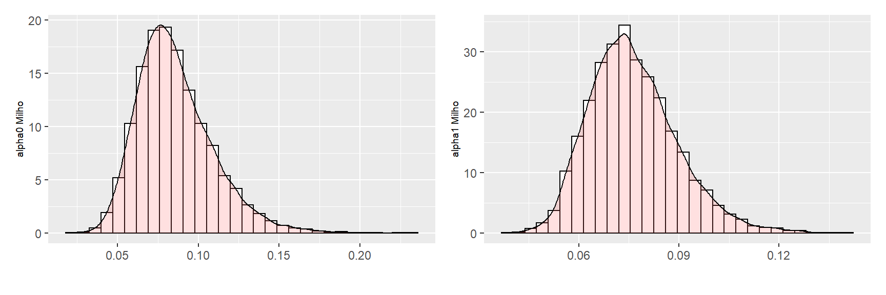

Aplicação de GARCH Bayesiano em séries de retornos de preços de commodities
Rodrigo Hermont Ozon
Last Update: abril 26, 2022 18:28:15
start_time <- Sys.time() # Execution timing document counterBayesian Estimation of the GARCH(1,1) Model with Student-t Innovations
Reprodução do modelo original do artigo de Ardia e Hoogerheide (2010). Neste post apresentaremos o uso do pacote bayesGARCH que fornece funções para a estimação Bayesiana do modelo GARCH(1,1) parcimonioso e efetivo com distribuição assimétrica de erros Student-t. O procedimento de estimativa é totalmente automático e, portanto, evita a tediosa tarefa de tunelamento de um algoritmo de amostragem MCMC. O uso do pacote é mostrado em uma aplicação empírica para log-retornos da commoditie milho e soja.
Introdução
Pesquisas sobre a mudança de volatilidade usando séries temporais modelos estão presentes desde o artigo pioneiro de Engle (1982). A partir daí, ARCH (modelos autoregressivos de heterocedasticidade condicional) e GARCH (ARCH Generalizado) cresceram rapidamente em uma rica família de modelos empíricos para previsão de volatilidade durante os anos 80. Esses modelos são difundidos e ferramentas essenciais em econometria financeira.
No modelo GARCH(\(p, q\)) introduzido por Bollerslev (1986), a variância condicional no tempo \(t\) do retorno logarítmico de \(y_t\) (de um ativo financeiro ou índice financeiro), denotado por \(h_t\), é postulado como uma função linear dos quadrados de \(q\) passados log-retornos e variâncias condicionais passadas \(p\). Mais precisamente:
\[ h_t = \alpha_0 + \sum_{i=1}^{q}\alpha_i y^{2}_{t-1} + \sum_{j=1}^{p}\beta_j h_{t-j}, \]
onde os parâmetros satisfazem as restrições: \(\alpha_i \geq 0\,\,(i=0,\cdots,q)\) e \(\beta_j \geq 0\,\,(j=1,\cdots,p)\) para garantir uma variância condicional positiva. Na maioria das aplicações empíricas verifica-se que a simples especificação \(p = q = 1\) é capaz de reproduzir a dinâmica da volatilidade dos dados financeiros. Isso tem levado a Modelo GARCH(1,1) para se tornar o modelo de trabalho (workhorese model) por acadêmicos e profissionais. Dado um modelo especificação para \(h_t\), os log-retornos são então modelados como \(y+t = \epsilon_t h_{t}^{1/2}\), onde \(\epsilon_t\) são perturbações i.d.d. Escolhas comuns para \(\epsilon_t\) são distribuições do tipo Normal ou Student-\(t\). A distribuição Student-\(t\) é particularmente útil uma vez que pode fornecer o excesso de curtose na distribuição condicional que é frequentemente encontrada em processos de séries temporais financeiras (ao contrário de modelos com distribuições normais).
Até recentemente, os modelos GARCH eram principalmente estimados usando a técnica clássica da máxima verossimilhança. Vários pacotes do R fornecem funções para sua estimativa; ver, por exemplo fGarch (Wuertz e Chalabi, 2009), rgarch (Ghalanos, 2010) e tseries (Trapletti and Hornik, 2009). A abordagem Bayesiana oferece uma alternativa atraente que permite obter resultados em pequenas amostras, estimativa robusta, discriminação de modelo, combinação de modelo e declarações probabilísticas em funções (possivelmente não lineares) dos parâmetros do modelo.
O pacote bayesGARCH (Ardia, 2007) implementa o procedimento de estimação Bayesiana descrita em Ardia (2008, capítulo 5) para o modelo GARCH(1,1) com distribuição de Student\(-t\). A abordagem, baseada sobre o trabalho de Nakatsuma (1998), consiste em uma Algoritmo Metropolis-Hastings (MH) onde as distribuições propostas são construídas a partir de processos ARMA nas observações ao quadrado. Esse A metodologia evita a tarefa demorada e difícil, especialmente para não especialistas, de escolher e ajustar um algoritmo de amostragem. O programa é escrito em R com algumas sub-rotinas implementadas em C para acelerar o procedimento de simulação. A validade do algoritmo, bem como a exatidão do código de computador foi verificado pelo método de Geweke (2004).
Modelagem, prioris e esquema MCMC
Um modelo GARCH(1,1) com distribuição assimétrica Student\(-t\) para os log-returnos \(\{y_t\}\) podem ser escritos via aumento de dados (ver Geweke, 1993) como
\[ y_t = \epsilon_t (\frac{v-2}{v}\omega_t h_t )^{1/2}\quad t = 1,\cdots,T \] \[ \epsilon_t \sim idd\,\,N(0,1) \]
\[ \omega_t \sim idd\,\,IG(\frac{v}{2},\frac{v}{2}) \]
\[ h_t = \alpha_0 +\alpha_1 y^{2}_{t-1}+\beta h_{t-1}, \] onde \(\alpha_0 >0, \alpha_1,\beta_1\geq 0\) e \(v>2\) seguem \(N(0,1)\) denota a distribuição normal padrão.\(IG\) a gama inversa. As restrições nos graus de liberdade dos parâmetros \(v\) garante que a variância condicional seja finita e as restrições nos parâmetros do modelo GARCH \(\alpha_0,\alpha_1\) e \(\beta\) garantem sua positividade. Ressaltamos o fato de que apenas restrições de positividade são implementadas no algoritmo Metropolis-Hastings; não são impostas condições de estacionaridade no procedimento de simulação.
Para escrevermos a função de verossimilhança, definimos o vetor \(y = (y_1,\cdots,y_T)', \omega = (\omega_1,\cdots,\omega_T)'\) e \(\alpha = (\alpha_0,\alpha_1)'\). Reagrupamos os parâmetros do modelo no vetor \(\psi = (\alpha,\beta,v)\). Em seguida, ao definir a matriz diagonal \(T\times T\)
\[ \sum = \sum(\psi,\omega)=diag(\{\omega_t \frac{v-2}{v}h_t(\alpha,\beta)\}^{T}_{t=1}) \]
onde \(h_t(\alpha,\beta)= \alpha_0+\alpha_1y^{2}_{t-1}+\beta h_{t-1}(\alpha,\beta)\) podemos expressar a verossimilhança de (\(\psi,\omega\)) como:
\[ L(\psi, \omega|y) \propto (det\sum)^{-1/2}exp[-\frac{1}{2}y'\sum^{-1}y] \] A abordagem bayesiana considera (\(\psi, \omega\)) como variáveis aleatórias que são caracterizadas pelas densidades à priori denotada por \(p(\psi,\omega)\). A prioiri é especificada com a ajuda de parâmetros chamados hiperparâmetros que são inicialmente considerados conhecidos e constantes. Além disso, dependendo da informação prévia do pesquisador, esta densidade pode ser mais ou menos informativa. Então, se acoplando a função de verossimilhança dos parâmetros do modelo com a densidade anterior, podemos transformar a densidade de probabilidade usando a regra de Bayes para obter a densidade à posteriori \(p(\psi,\omega|y)\) como:
\[ p(\psi, \omega|y) = \frac{L(\psi,\omega|y)p(\psi,\omega)}{\int L(\psi,\omega|y)p(\psi, \omega)d\psi d \omega} \] Esta posteriori é uma descrição quantitativa e probabilística do conhecimento sobre os parâmetros do modelo após observar os dados. Para uma excelente introdução à econometria bayesiana, remetemos o leitor para Koop (2003).
Usamos prioris truncadas normais nos parâmetros GARCH \(\alpha\) e \(\beta\)
\[ p(\alpha)\propto\phi_{N_2}(\alpha|\mu_\alpha,\Sigma_\alpha) 1 \{\alpha\in R_+^2\} \] \[ p(\beta)\propto\phi_{N_1}(\beta|\mu_\beta,\Sigma_\beta) 1 \{\beta\in R_+\} \] onde:
\(\mu_\bullet\) e \(\sum_\bullet\) são os hiperparâmetros;
\(1\{\bullet\}\) é a função indicadora;
\(\phi_{N_d}\) é a densidade normal \(n-\)dimensional;
A distribuição à priori do vetor condicional \(\lambda=(\lambda_1,...\lambda_T)'\) em \(v\) é encontrado observando que os componentes \(\lambda_t\) são independentes e identicamente distribuídos da gama invertida, que produz:
\[ p(\lambda|v)=\left(\frac{v}{2} \right)^{\frac{Tv}{2}}\left[ \Gamma\left(\frac{v}{2}\right)\right]^{-T}\left(\prod_{t=1}^T\lambda_t\right)^{-\frac{v}{2}-1}exp\left[-\frac{1}{2}\sum_{t=1}^T\frac{v}{\lambda_t}\right] \]
além disso, a distribuição a priori nos parâmetros dos graus de liberdade é uma exponencial traduzida com parâmetros \(\lambda^*>0\) e \(\delta\geq2\).
\[ p(v)=\lambda^*exp[-\lambda^*(v-\delta)]1\{v>\delta\} \] Seguimos Deschamps (2006) na escolha prévia na distribuição dos parâmetros de graus de liberdade. A distribuição é uma exponencial traduzida com parâmetros \(\lambda > 0\) e \(\delta \geq 2\)
\[ p(v)=\lambda^*exp[-\lambda^*(v-\delta)]1\{v>\delta\} \]
Para grandes valores de \(\lambda\), a distribuição de massa da priori é concentrada na vizinhança de \(\delta\) e uma restrição sobre os graus de liberdade pode ser imposta nesta forma. A normalidade dos erros é assumida quando \(\delta\) é escolhido grande. Como aponta Deschamps (2006), essa densidade prévia é útil por dois motivos. Primeiro, é potencialmente importante, por razões numéricas, limitar o parâmetro de graus de liberdade longe de dois para evitar a explosão da variância condicional. Em segundo lugar, podemos aproximar a normalidade dos erros enquanto mantemos uma priori que pode melhorar a convergência do amostrador.
A distribuição a priori conjunta é então formada assumindo a independência a priori entre os parâmetros \(p(\psi,\omega)=p(\alpha)p(\beta)p(\omega|v)p(v)\). A natureza recursiva da variância na equação GARCH(1,1) implica que a à posteriori conjunta e as densidades condicionais não podem ser expressas neste formato. Não existe nenhuma priori (conjugada) que possa remediar esta propriedade. Portanto, não podemos usar o amostrador de Gibbs simples e precisamos contar com uma estratégia de simulação de Monte Carlo Markov Chain (MCMC) mais elaborada para aproximar a densidade à posteriori.
A ideia de amostragem MCMC foi introduzida pela primeira vez por Metropolis et al. (1953) e foi posteriormente generalizado por Hastings (1970). A estratégia de amostragem baseia-se na construção de uma cadeia de Markov com realizações \((\psi^{[0]},\omega^{[0]}),\cdots,(\psi^{[j]},\omega^{[j]}),\cdots,\) no espaço de parâmetros. Em condições de regularidade apropriadas, resultados assintóticos garantem que como \(j\) tende a infinito (\(\psi^{[j]},\omega^{[j]}\)) tende em distribuição para uma variável aleatória cuja densidade é \(p(\psi,v | y)\). Assim, após descartar um burn-in dos primeiros sorteios, os valores realizados da cadeia pode ser usada para fazer inferência sobre a posteriori conjunta.
O amostrador MCMC implementado no pacote bayesGARCH é baseado na abordagem de Ardia (2008, capítulo 5), inspirado no trabalho anterior de Nakatsuma (1998). O algoritmo consiste em um algoritmo Metropolis-Hastings onde os parâmetros GARCH são atualizados por blocos (um bloco para \(\alpha\) e um bloco para \(\beta\)) enquanto o parâmetro de graus de liberdade é amostrado usando uma técnica de rejeição otimizada de uma densidade de fonte exponencial traduzida. Esta metodologia tem a vantagem de ser totalmente automática. Além disso, em nossa experiência, o algoritmo explora a domínio da posteriori conjunta de forma eficiente em comparação com abordagens naive de Metropolis-Hastings ou do amostrador Griddy-Gibb de Ritter and Tanner (1992).
Aplicação em retornos de preços de commodities
Utilizaremos o método de estimação bayesiana para dados diários de dois ativos negociados na CBOT, a saber: (https://finance.yahoo.com/commodities/)
Milho (em US$/bushel) à futuro (ticker
ZC=F)Soja (em US$/bushel) à futuro (ticker
ZS=F)
Utilizamos as séries temporais com início em 01-01-2010 até a data mais recente, ou seja, o último dia de negociação disponível (comando Sys.Date() = 2022-04-26)
library(quantmod)
Milho <- getSymbols("ZC=F", auto.assign = FALSE,
from = "2010-01-01", end = Sys.Date())
Soja <- getSymbols("ZS=F", auto.assign = FALSE,
from = "2010-01-01", end = Sys.Date())
library(fpp3)
library(ggplot2)
fech_Milho <- autoplot(Cl(Milho)) + xlab("") +
theme(axis.title.y = element_text(size = 7, angle = 90)) +
theme(plot.title = element_text(size = 9, face = "bold")) +
ylab("Fechamento (CORN futures)")
ret_Milho <- autoplot(diff(log(Cl(Milho)))) + xlab("") +
theme(axis.title.y = element_text(size = 7, angle = 90)) +
theme(plot.title = element_text(size = 9, face = "bold")) +
ylab("log retornos do fechamento (CORN futures)")
hist_Milho <- ggplot(Milho, aes(x = diff(log(Cl(Milho))) )) +
geom_histogram(aes(y = ..density..), colour = "black", fill = "white")+
geom_density(alpha = .2, fill = "#FF6666") + xlab("") +
theme(axis.title.y = element_text(size = 7, angle = 90)) +
theme(plot.title = element_text(size = 7, face = "bold")) +
ylab("log retornos (CORN futures)")
fech_Soja <- autoplot(Cl(Soja)) + xlab("") +
theme(axis.title.y = element_text(size = 7, angle = 90)) +
theme(plot.title = element_text(size = 9, face = "bold")) +
ylab("Fechamento (Soybean futures)")
ret_Soja <- autoplot(diff(log(Cl(Soja)))) + xlab("") +
theme(axis.title.y = element_text(size = 7, angle = 90)) +
theme(plot.title = element_text(size = 9, face = "bold")) +
ylab("log retornos do fechamento (Soybean futures)")
hist_Soja <- ggplot(Soja, aes(x = diff(log(Cl(Soja))) )) +
geom_histogram(aes(y = ..density..), colour = "black", fill = "white")+
geom_density(alpha = .2, fill = "#FF6666") + xlab("") +
theme(axis.title.y = element_text(size = 7, angle = 90)) +
theme(plot.title = element_text(size = 7, face = "bold")) +
ylab("log retornos (Soybean futures)")
library(patchwork)
fech_Milho + ret_Milho + hist_Milho
fech_Soja + ret_Soja + hist_SojaCriamos primeiramente dois dataframes somente com os vetores de cada commoditie:
retornos_Milho <- diff(log(Cl(Milho))) %>%
as.data.frame() %>%
drop_na() %>%
rename("log_ret_milho" = `ZC=F.Close`) %>%
glimpse()Rows: 3,089
Columns: 1
$ log_ret_milho <dbl> 0.0005971932, 0.0071386383, -0.0101281771, 0.0130876348,~retornos_Milho <- retornos_Milho[1:nrow(retornos_Milho),]
retornos_Milho <- 100*as.vector(retornos_Milho)
retornos_Soja <- diff(log(Cl(Soja))) %>%
as.data.frame() %>%
drop_na() %>%
rename("log_ret_soja" = `ZS=F.Close`) %>%
glimpse()Rows: 3,092
Columns: 1
$ log_ret_soja <dbl> 0.0026168684, -0.0016644874, -0.0316719329, -0.0046780831~retornos_Soja<- retornos_Soja[1:nrow(retornos_Soja),]
retornos_Soja <- 100*as.vector(retornos_Soja)Então rodamos o modelo GARCH(1,1) bayesiano via Monte Carlo Markov Chain. Como distribuição à priori para a estimativa Bayesiana, tomamos os valores padrão do pacote bayesGARCH, que são prioris difusas. Geramos duas cadeias para 20000 passos cada uma definindo os valores dos parâmetros de controle n.chain = 2 e l.chain = 20000.
library(bayesGARCH)
set.seed(1234)
MCMC_Milho <- bayesGARCH(retornos_Milho, control = list(l.chain = 20000, n.chain = 2))chain: 1 iteration: 10 parameters: 0.2834 0.1499 0.7641 70.024
chain: 1 iteration: 20 parameters: 0.2349 0.1496 0.7746 62.0036
chain: 1 iteration: 30 parameters: 0.2218 0.1341 0.7833 45.8531
chain: 1 iteration: 40 parameters: 0.2572 0.1308 0.7777 36.6532
chain: 1 iteration: 50 parameters: 0.2091 0.1325 0.8016 26.041
chain: 1 iteration: 60 parameters: 0.1679 0.1002 0.8393 18.5343
chain: 1 iteration: 70 parameters: 0.1115 0.0925 0.8627 10.4317
chain: 1 iteration: 80 parameters: 0.103 0.0881 0.8679 8.8841
chain: 1 iteration: 90 parameters: 0.1028 0.0868 0.8744 7.264
chain: 1 iteration: 100 parameters: 0.1147 0.0709 0.882 6.8884
chain: 1 iteration: 110 parameters: 0.0961 0.0854 0.8746 6.6569
chain: 1 iteration: 120 parameters: 0.0892 0.0765 0.8915 5.7539
chain: 1 iteration: 130 parameters: 0.0888 0.0775 0.8898 5.139
chain: 1 iteration: 140 parameters: 0.0941 0.0853 0.8941 5.305
chain: 1 iteration: 150 parameters: 0.0714 0.0826 0.9026 4.6809
chain: 1 iteration: 160 parameters: 0.0859 0.0753 0.9008 4.5694
chain: 1 iteration: 170 parameters: 0.0665 0.0796 0.9006 4.6893
chain: 1 iteration: 180 parameters: 0.1055 0.067 0.9011 4.7506
chain: 1 iteration: 190 parameters: 0.0928 0.0879 0.8861 5.0691
chain: 1 iteration: 200 parameters: 0.0947 0.0766 0.8921 4.9254
chain: 1 iteration: 210 parameters: 0.0651 0.0935 0.8993 4.8459
chain: 1 iteration: 220 parameters: 0.0908 0.0859 0.8852 4.9372
chain: 1 iteration: 230 parameters: 0.0927 0.087 0.8834 5.0606
chain: 1 iteration: 240 parameters: 0.1046 0.089 0.8807 5.5168
chain: 1 iteration: 250 parameters: 0.1179 0.0793 0.8794 5.0083
chain: 1 iteration: 260 parameters: 0.0928 0.0932 0.8802 5.0139
chain: 1 iteration: 270 parameters: 0.1072 0.0865 0.8789 5.1325
chain: 1 iteration: 280 parameters: 0.0862 0.0928 0.8921 5.0894
chain: 1 iteration: 290 parameters: 0.0922 0.076 0.8916 4.895
chain: 1 iteration: 300 parameters: 0.1092 0.0803 0.8874 4.777
chain: 1 iteration: 310 parameters: 0.0801 0.0858 0.8922 4.6943
chain: 1 iteration: 320 parameters: 0.0708 0.0719 0.9094 4.4654
chain: 1 iteration: 330 parameters: 0.0774 0.0822 0.8982 4.6237
chain: 1 iteration: 340 parameters: 0.1063 0.0835 0.8908 4.4699
chain: 1 iteration: 350 parameters: 0.0738 0.0911 0.898 4.2016
chain: 1 iteration: 360 parameters: 0.0831 0.0773 0.9059 4.3299
chain: 1 iteration: 370 parameters: 0.1031 0.0805 0.8962 4.5646
chain: 1 iteration: 380 parameters: 0.0748 0.0771 0.9072 4.3374
chain: 1 iteration: 390 parameters: 0.0918 0.0751 0.9039 4.3042
chain: 1 iteration: 400 parameters: 0.076 0.0733 0.9047 4.285
chain: 1 iteration: 410 parameters: 0.1082 0.0832 0.8918 4.17
chain: 1 iteration: 420 parameters: 0.0597 0.0688 0.9154 4.3889
chain: 1 iteration: 430 parameters: 0.0785 0.0776 0.9058 4.6749
chain: 1 iteration: 440 parameters: 0.0857 0.0695 0.8984 5.1658
chain: 1 iteration: 450 parameters: 0.0974 0.0629 0.8989 4.9409
chain: 1 iteration: 460 parameters: 0.0896 0.0958 0.8846 4.7544
chain: 1 iteration: 470 parameters: 0.1011 0.0613 0.909 5.1185
chain: 1 iteration: 480 parameters: 0.0756 0.0734 0.9026 5.1224
chain: 1 iteration: 490 parameters: 0.0957 0.0816 0.8878 4.97
chain: 1 iteration: 500 parameters: 0.1196 0.0808 0.8804 5.125
chain: 1 iteration: 510 parameters: 0.11 0.0967 0.8758 4.8785
chain: 1 iteration: 520 parameters: 0.1502 0.0916 0.8605 4.9012
chain: 1 iteration: 530 parameters: 0.1119 0.0798 0.8882 4.4794
chain: 1 iteration: 540 parameters: 0.088 0.0854 0.8981 4.2949
chain: 1 iteration: 550 parameters: 0.0762 0.0763 0.9057 4.5297
chain: 1 iteration: 560 parameters: 0.0805 0.0656 0.9099 4.7068
chain: 1 iteration: 570 parameters: 0.0539 0.0701 0.9225 4.4694
chain: 1 iteration: 580 parameters: 0.0764 0.0781 0.9068 4.5983
chain: 1 iteration: 590 parameters: 0.0831 0.0836 0.8996 4.522
chain: 1 iteration: 600 parameters: 0.0734 0.0876 0.8948 5.1564
chain: 1 iteration: 610 parameters: 0.0857 0.0759 0.891 5.5712
chain: 1 iteration: 620 parameters: 0.1132 0.0767 0.8872 5.5512
chain: 1 iteration: 630 parameters: 0.0993 0.0699 0.8914 5.3545
chain: 1 iteration: 640 parameters: 0.0984 0.0751 0.8915 5.0646
chain: 1 iteration: 650 parameters: 0.0823 0.0691 0.9027 5.1476
chain: 1 iteration: 660 parameters: 0.0796 0.0816 0.8943 5.1965
chain: 1 iteration: 670 parameters: 0.1023 0.0762 0.8885 4.8072
chain: 1 iteration: 680 parameters: 0.1071 0.0823 0.8844 4.7254
chain: 1 iteration: 690 parameters: 0.0837 0.085 0.8983 4.5278
chain: 1 iteration: 700 parameters: 0.0904 0.0828 0.8875 4.6235
chain: 1 iteration: 710 parameters: 0.0979 0.092 0.8837 4.422
chain: 1 iteration: 720 parameters: 0.0843 0.0805 0.9037 4.3239
chain: 1 iteration: 730 parameters: 0.0954 0.077 0.8988 4.2733
chain: 1 iteration: 740 parameters: 0.0734 0.0752 0.902 4.6588
chain: 1 iteration: 750 parameters: 0.0791 0.0866 0.8915 5.1469
chain: 1 iteration: 760 parameters: 0.0634 0.0819 0.9045 5.0256
chain: 1 iteration: 770 parameters: 0.0875 0.0909 0.8783 5.3447
chain: 1 iteration: 780 parameters: 0.0765 0.0872 0.8864 5.3564
chain: 1 iteration: 790 parameters: 0.0677 0.0791 0.8972 5.4362
chain: 1 iteration: 800 parameters: 0.1066 0.0992 0.8643 5.304
chain: 1 iteration: 810 parameters: 0.1092 0.0877 0.8761 5.5799
chain: 1 iteration: 820 parameters: 0.0812 0.0739 0.8952 5.3912
chain: 1 iteration: 830 parameters: 0.0812 0.0678 0.9061 5.3654
chain: 1 iteration: 840 parameters: 0.0674 0.0692 0.9058 5.7856
chain: 1 iteration: 850 parameters: 0.0704 0.0667 0.9092 5.6355
chain: 1 iteration: 860 parameters: 0.0504 0.0725 0.9094 6.2453
chain: 1 iteration: 870 parameters: 0.054 0.0846 0.8996 5.3565
chain: 1 iteration: 880 parameters: 0.0676 0.0783 0.9004 5.377
chain: 1 iteration: 890 parameters: 0.0871 0.0719 0.8949 5.5708
chain: 1 iteration: 900 parameters: 0.0725 0.089 0.8906 4.9703
chain: 1 iteration: 910 parameters: 0.0914 0.0762 0.8937 4.6245
chain: 1 iteration: 920 parameters: 0.0798 0.0794 0.894 4.5314
chain: 1 iteration: 930 parameters: 0.0902 0.0884 0.8898 4.3239
chain: 1 iteration: 940 parameters: 0.0761 0.1044 0.8911 4.2774
chain: 1 iteration: 950 parameters: 0.134 0.0911 0.8758 4.1244
chain: 1 iteration: 960 parameters: 0.0895 0.1007 0.8901 4.5043
chain: 1 iteration: 970 parameters: 0.1063 0.0666 0.8985 4.7134
chain: 1 iteration: 980 parameters: 0.0858 0.0833 0.8893 5.329
chain: 1 iteration: 990 parameters: 0.0839 0.0716 0.8988 5.4582
chain: 1 iteration: 1000 parameters: 0.078 0.0709 0.9013 5.9528
chain: 1 iteration: 1010 parameters: 0.0734 0.0766 0.9064 5.3096
chain: 1 iteration: 1020 parameters: 0.0806 0.0795 0.8967 5.1649
chain: 1 iteration: 1030 parameters: 0.069 0.0805 0.9017 4.846
chain: 1 iteration: 1040 parameters: 0.0758 0.0719 0.9022 4.7341
chain: 1 iteration: 1050 parameters: 0.0625 0.071 0.9105 4.7507
chain: 1 iteration: 1060 parameters: 0.0723 0.066 0.9094 5.0547
chain: 1 iteration: 1070 parameters: 0.0643 0.0691 0.9108 5.2758
chain: 1 iteration: 1080 parameters: 0.0818 0.0683 0.9033 5.7862
chain: 1 iteration: 1090 parameters: 0.0757 0.0687 0.9039 5.4812
chain: 1 iteration: 1100 parameters: 0.0757 0.0794 0.8982 5.1629
chain: 1 iteration: 1110 parameters: 0.0841 0.0842 0.8913 5.4554
chain: 1 iteration: 1120 parameters: 0.0734 0.0685 0.9033 5.6146
chain: 1 iteration: 1130 parameters: 0.0791 0.0756 0.9031 5.1997
chain: 1 iteration: 1140 parameters: 0.0703 0.0773 0.9006 5.5356
chain: 1 iteration: 1150 parameters: 0.0954 0.0659 0.8984 5.104
chain: 1 iteration: 1160 parameters: 0.0921 0.0782 0.8984 5.0035
chain: 1 iteration: 1170 parameters: 0.0655 0.0923 0.8899 4.904
chain: 1 iteration: 1180 parameters: 0.0761 0.0876 0.8931 4.8268
chain: 1 iteration: 1190 parameters: 0.1007 0.0766 0.8922 4.6114
chain: 1 iteration: 1200 parameters: 0.096 0.071 0.9034 4.6652
chain: 1 iteration: 1210 parameters: 0.0697 0.0691 0.9095 4.5348
chain: 1 iteration: 1220 parameters: 0.0714 0.0699 0.9117 4.2328
chain: 1 iteration: 1230 parameters: 0.0758 0.0523 0.9212 4.6901
chain: 1 iteration: 1240 parameters: 0.0559 0.0633 0.9181 4.6261
chain: 1 iteration: 1250 parameters: 0.0704 0.0588 0.9194 4.8937
chain: 1 iteration: 1260 parameters: 0.0747 0.0613 0.9149 4.7773
chain: 1 iteration: 1270 parameters: 0.0564 0.0675 0.9169 4.8436
chain: 1 iteration: 1280 parameters: 0.0543 0.0671 0.9126 5.4065
chain: 1 iteration: 1290 parameters: 0.0912 0.0668 0.9015 5.2614
chain: 1 iteration: 1300 parameters: 0.0646 0.0785 0.8992 5.1671
chain: 1 iteration: 1310 parameters: 0.1069 0.0712 0.8978 4.8742
chain: 1 iteration: 1320 parameters: 0.1009 0.0759 0.8981 4.5958
chain: 1 iteration: 1330 parameters: 0.0838 0.0834 0.8957 4.8234
chain: 1 iteration: 1340 parameters: 0.105 0.0653 0.904 4.6828
chain: 1 iteration: 1350 parameters: 0.0722 0.075 0.9007 4.5986
chain: 1 iteration: 1360 parameters: 0.0711 0.07 0.9088 5.1478
chain: 1 iteration: 1370 parameters: 0.0705 0.07 0.905 5.4545
chain: 1 iteration: 1380 parameters: 0.082 0.0637 0.9124 4.7644
chain: 1 iteration: 1390 parameters: 0.0682 0.0617 0.9153 5.0191
chain: 1 iteration: 1400 parameters: 0.0629 0.0651 0.9119 4.9206
chain: 1 iteration: 1410 parameters: 0.0664 0.0641 0.918 4.5003
chain: 1 iteration: 1420 parameters: 0.0573 0.0704 0.9215 4.0222
chain: 1 iteration: 1430 parameters: 0.0851 0.0626 0.916 3.8013
chain: 1 iteration: 1440 parameters: 0.0719 0.087 0.9088 3.7335
chain: 1 iteration: 1450 parameters: 0.0896 0.0732 0.9146 3.6099
chain: 1 iteration: 1460 parameters: 0.0902 0.0734 0.9098 3.7283
chain: 1 iteration: 1470 parameters: 0.0883 0.0774 0.9053 3.9231
chain: 1 iteration: 1480 parameters: 0.0926 0.0827 0.9002 4.0061
chain: 1 iteration: 1490 parameters: 0.0938 0.0744 0.9 4.6179
chain: 1 iteration: 1500 parameters: 0.0647 0.07 0.9126 5.1374
chain: 1 iteration: 1510 parameters: 0.0791 0.0612 0.9089 5.1916
chain: 1 iteration: 1520 parameters: 0.0734 0.0729 0.9058 5.1786
chain: 1 iteration: 1530 parameters: 0.0849 0.0646 0.9025 5.5356
chain: 1 iteration: 1540 parameters: 0.0692 0.0788 0.9026 5.0264
chain: 1 iteration: 1550 parameters: 0.0475 0.0637 0.9253 4.6964
chain: 1 iteration: 1560 parameters: 0.0624 0.059 0.9158 4.9608
chain: 1 iteration: 1570 parameters: 0.0921 0.0629 0.9019 5.2915
chain: 1 iteration: 1580 parameters: 0.0882 0.0708 0.901 5.1478
chain: 1 iteration: 1590 parameters: 0.0765 0.0786 0.8952 5.2593
chain: 1 iteration: 1600 parameters: 0.0709 0.0887 0.893 5.5687
chain: 1 iteration: 1610 parameters: 0.0961 0.0734 0.8991 5.354
chain: 1 iteration: 1620 parameters: 0.0751 0.081 0.8945 5.4861
chain: 1 iteration: 1630 parameters: 0.0848 0.0751 0.9019 5.2933
chain: 1 iteration: 1640 parameters: 0.0848 0.082 0.8932 4.8569
chain: 1 iteration: 1650 parameters: 0.0438 0.0972 0.9001 5.083
chain: 1 iteration: 1660 parameters: 0.0661 0.0632 0.9144 4.9658
chain: 1 iteration: 1670 parameters: 0.0815 0.0616 0.9122 4.8082
chain: 1 iteration: 1680 parameters: 0.0788 0.0586 0.91 5.1055
chain: 1 iteration: 1690 parameters: 0.0407 0.0743 0.9186 4.9478
chain: 1 iteration: 1700 parameters: 0.0745 0.0601 0.9166 4.8406
chain: 1 iteration: 1710 parameters: 0.063 0.0721 0.9018 5.0513
chain: 1 iteration: 1720 parameters: 0.0711 0.0816 0.8999 4.9923
chain: 1 iteration: 1730 parameters: 0.1065 0.0637 0.9024 4.8169
chain: 1 iteration: 1740 parameters: 0.1088 0.0674 0.8918 4.9988
chain: 1 iteration: 1750 parameters: 0.0851 0.0752 0.898 4.8306
chain: 1 iteration: 1760 parameters: 0.0948 0.0733 0.9008 4.7213
chain: 1 iteration: 1770 parameters: 0.0771 0.0718 0.9055 4.6721
chain: 1 iteration: 1780 parameters: 0.0607 0.0687 0.9154 4.4645
chain: 1 iteration: 1790 parameters: 0.0638 0.0956 0.8934 4.4395
chain: 1 iteration: 1800 parameters: 0.0912 0.0657 0.9126 4.2571
chain: 1 iteration: 1810 parameters: 0.0698 0.0839 0.9052 4.1493
chain: 1 iteration: 1820 parameters: 0.085 0.0668 0.9143 4.5145
chain: 1 iteration: 1830 parameters: 0.0574 0.0654 0.9175 4.5699
chain: 1 iteration: 1840 parameters: 0.0793 0.0696 0.9123 4.4609
chain: 1 iteration: 1850 parameters: 0.0746 0.0766 0.9038 4.7908
chain: 1 iteration: 1860 parameters: 0.08 0.062 0.91 4.9137
chain: 1 iteration: 1870 parameters: 0.0743 0.0655 0.9148 4.8389
chain: 1 iteration: 1880 parameters: 0.0498 0.0669 0.9198 4.668
chain: 1 iteration: 1890 parameters: 0.0574 0.0863 0.9056 4.328
chain: 1 iteration: 1900 parameters: 0.0762 0.0826 0.8993 4.6414
chain: 1 iteration: 1910 parameters: 0.1106 0.0701 0.8959 4.8166
chain: 1 iteration: 1920 parameters: 0.081 0.0934 0.8859 4.6472
chain: 1 iteration: 1930 parameters: 0.1024 0.0944 0.8809 4.5076
chain: 1 iteration: 1940 parameters: 0.0938 0.0749 0.9005 4.8548
chain: 1 iteration: 1950 parameters: 0.1159 0.0759 0.8958 4.5069
chain: 1 iteration: 1960 parameters: 0.102 0.0732 0.8973 4.6171
chain: 1 iteration: 1970 parameters: 0.0951 0.0661 0.8995 4.4065
chain: 1 iteration: 1980 parameters: 0.0864 0.0723 0.9025 4.8208
chain: 1 iteration: 1990 parameters: 0.0943 0.065 0.9037 5.1208
chain: 1 iteration: 2000 parameters: 0.0949 0.0863 0.886 5.0743
chain: 1 iteration: 2010 parameters: 0.0835 0.0797 0.895 5.2632
chain: 1 iteration: 2020 parameters: 0.0601 0.0752 0.9114 5.6724
chain: 1 iteration: 2030 parameters: 0.0504 0.0702 0.9152 5.5228
chain: 1 iteration: 2040 parameters: 0.0735 0.065 0.9052 5.7079
chain: 1 iteration: 2050 parameters: 0.1072 0.0678 0.8968 4.9259
chain: 1 iteration: 2060 parameters: 0.0991 0.0739 0.8937 5.2554
chain: 1 iteration: 2070 parameters: 0.072 0.0762 0.9053 5.1614
chain: 1 iteration: 2080 parameters: 0.066 0.0677 0.9088 5.0574
chain: 1 iteration: 2090 parameters: 0.0614 0.0728 0.9111 4.7587
chain: 1 iteration: 2100 parameters: 0.0588 0.0694 0.9167 4.544
chain: 1 iteration: 2110 parameters: 0.0727 0.0701 0.91 4.6509
chain: 1 iteration: 2120 parameters: 0.0987 0.0558 0.9141 4.6289
chain: 1 iteration: 2130 parameters: 0.085 0.0688 0.903 4.6613
chain: 1 iteration: 2140 parameters: 0.0847 0.068 0.9087 4.6283
chain: 1 iteration: 2150 parameters: 0.0938 0.0611 0.9053 4.8748
chain: 1 iteration: 2160 parameters: 0.1128 0.0663 0.8961 5.0728
chain: 1 iteration: 2170 parameters: 0.0979 0.0804 0.8965 4.8052
chain: 1 iteration: 2180 parameters: 0.1088 0.0743 0.8875 5.103
chain: 1 iteration: 2190 parameters: 0.099 0.08 0.8847 5.205
chain: 1 iteration: 2200 parameters: 0.0665 0.0918 0.8926 5.3103
chain: 1 iteration: 2210 parameters: 0.0892 0.0739 0.8948 4.8236
chain: 1 iteration: 2220 parameters: 0.125 0.0664 0.8896 5.0216
chain: 1 iteration: 2230 parameters: 0.1067 0.0845 0.8864 5.2155
chain: 1 iteration: 2240 parameters: 0.0775 0.0781 0.9003 4.9843
chain: 1 iteration: 2250 parameters: 0.0671 0.0758 0.8992 5.3133
chain: 1 iteration: 2260 parameters: 0.1051 0.0757 0.8867 5.1782
chain: 1 iteration: 2270 parameters: 0.1118 0.0815 0.881 5.0033
chain: 1 iteration: 2280 parameters: 0.1267 0.0805 0.8736 5.2701
chain: 1 iteration: 2290 parameters: 0.1694 0.0954 0.8461 5.6225
chain: 1 iteration: 2300 parameters: 0.1295 0.1088 0.8575 5
chain: 1 iteration: 2310 parameters: 0.1326 0.0967 0.862 5.0826
chain: 1 iteration: 2320 parameters: 0.1195 0.0959 0.8703 5.0378
chain: 1 iteration: 2330 parameters: 0.1045 0.0763 0.8914 4.7411
chain: 1 iteration: 2340 parameters: 0.1087 0.0989 0.8709 4.9453
chain: 1 iteration: 2350 parameters: 0.1138 0.0934 0.8707 4.9004
chain: 1 iteration: 2360 parameters: 0.0938 0.0887 0.882 5.3045
chain: 1 iteration: 2370 parameters: 0.1114 0.1026 0.8664 5.2123
chain: 1 iteration: 2380 parameters: 0.1062 0.0921 0.8732 5.1964
chain: 1 iteration: 2390 parameters: 0.1187 0.0963 0.8634 5.5089
chain: 1 iteration: 2400 parameters: 0.0982 0.0794 0.8816 5.996
chain: 1 iteration: 2410 parameters: 0.118 0.0698 0.8833 5.6458
chain: 1 iteration: 2420 parameters: 0.0896 0.0788 0.8937 5.3905
chain: 1 iteration: 2430 parameters: 0.1105 0.0706 0.8903 4.6759
chain: 1 iteration: 2440 parameters: 0.093 0.0758 0.8918 4.8315
chain: 1 iteration: 2450 parameters: 0.0992 0.0707 0.899 4.9398
chain: 1 iteration: 2460 parameters: 0.0641 0.0658 0.9151 4.8595
chain: 1 iteration: 2470 parameters: 0.0476 0.0684 0.915 5.2796
chain: 1 iteration: 2480 parameters: 0.0732 0.0761 0.9055 4.6475
chain: 1 iteration: 2490 parameters: 0.0855 0.079 0.8933 4.8769
chain: 1 iteration: 2500 parameters: 0.0841 0.0732 0.8954 5.6132
chain: 1 iteration: 2510 parameters: 0.089 0.0747 0.8897 5.1484
chain: 1 iteration: 2520 parameters: 0.0947 0.0849 0.8903 4.8801
chain: 1 iteration: 2530 parameters: 0.0838 0.0973 0.881 4.436
chain: 1 iteration: 2540 parameters: 0.104 0.1098 0.8682 4.7249
chain: 1 iteration: 2550 parameters: 0.1037 0.1107 0.8682 4.7972
chain: 1 iteration: 2560 parameters: 0.1679 0.0797 0.8697 5.0829
chain: 1 iteration: 2570 parameters: 0.0888 0.0914 0.8824 5.2505
chain: 1 iteration: 2580 parameters: 0.1232 0.0683 0.8884 5.1618
chain: 1 iteration: 2590 parameters: 0.1006 0.0934 0.8772 5.0422
chain: 1 iteration: 2600 parameters: 0.0876 0.0912 0.8889 4.4668
chain: 1 iteration: 2610 parameters: 0.0941 0.0777 0.896 4.4807
chain: 1 iteration: 2620 parameters: 0.1053 0.0939 0.8784 4.6194
chain: 1 iteration: 2630 parameters: 0.0891 0.091 0.8891 4.7693
chain: 1 iteration: 2640 parameters: 0.0678 0.0914 0.8943 5.0924
chain: 1 iteration: 2650 parameters: 0.0799 0.0874 0.8936 4.6581
chain: 1 iteration: 2660 parameters: 0.1023 0.0914 0.8838 4.7995
chain: 1 iteration: 2670 parameters: 0.1149 0.0875 0.879 5.1207
chain: 1 iteration: 2680 parameters: 0.1182 0.0913 0.8704 5.1555
chain: 1 iteration: 2690 parameters: 0.0958 0.0954 0.8784 5.342
chain: 1 iteration: 2700 parameters: 0.1028 0.0797 0.8822 5.2135
chain: 1 iteration: 2710 parameters: 0.1151 0.0656 0.8897 5.8282
chain: 1 iteration: 2720 parameters: 0.0854 0.0781 0.8939 6.3242
chain: 1 iteration: 2730 parameters: 0.0656 0.0756 0.8971 6.1646
chain: 1 iteration: 2740 parameters: 0.0662 0.0714 0.9022 5.7379
chain: 1 iteration: 2750 parameters: 0.0734 0.068 0.9009 5.6041
chain: 1 iteration: 2760 parameters: 0.077 0.0734 0.9 6.013
chain: 1 iteration: 2770 parameters: 0.0587 0.085 0.9044 5.5819
chain: 1 iteration: 2780 parameters: 0.0595 0.0714 0.9112 5.2523
chain: 1 iteration: 2790 parameters: 0.0733 0.0704 0.9035 5.3988
chain: 1 iteration: 2800 parameters: 0.073 0.064 0.9087 5.9018
chain: 1 iteration: 2810 parameters: 0.0886 0.0726 0.9008 5.5178
chain: 1 iteration: 2820 parameters: 0.0614 0.0747 0.9032 5.8986
chain: 1 iteration: 2830 parameters: 0.0698 0.0583 0.9111 5.4186
chain: 1 iteration: 2840 parameters: 0.0683 0.0636 0.9131 4.5719
chain: 1 iteration: 2850 parameters: 0.075 0.0571 0.917 4.6197
chain: 1 iteration: 2860 parameters: 0.0561 0.0689 0.9167 4.4679
chain: 1 iteration: 2870 parameters: 0.0807 0.0642 0.9104 4.9032
chain: 1 iteration: 2880 parameters: 0.0841 0.0645 0.9081 4.5963
chain: 1 iteration: 2890 parameters: 0.0696 0.0763 0.9054 4.5019
chain: 1 iteration: 2900 parameters: 0.0724 0.0745 0.9047 4.5855
chain: 1 iteration: 2910 parameters: 0.102 0.0732 0.8946 4.7633
chain: 1 iteration: 2920 parameters: 0.088 0.0851 0.8903 4.8942
chain: 1 iteration: 2930 parameters: 0.0789 0.0827 0.8979 5.1137
chain: 1 iteration: 2940 parameters: 0.0962 0.0672 0.9044 4.7338
chain: 1 iteration: 2950 parameters: 0.091 0.0812 0.8928 4.9418
chain: 1 iteration: 2960 parameters: 0.1112 0.0911 0.8834 4.5663
chain: 1 iteration: 2970 parameters: 0.0755 0.0871 0.8966 4.458
chain: 1 iteration: 2980 parameters: 0.0836 0.0807 0.8955 4.4983
chain: 1 iteration: 2990 parameters: 0.0791 0.0715 0.9076 4.6106
chain: 1 iteration: 3000 parameters: 0.0966 0.0768 0.9004 4.5066
chain: 1 iteration: 3010 parameters: 0.0814 0.0739 0.902 4.7345
chain: 1 iteration: 3020 parameters: 0.1004 0.0558 0.9075 5.062
chain: 1 iteration: 3030 parameters: 0.0861 0.0821 0.8913 5.4586
chain: 1 iteration: 3040 parameters: 0.1072 0.084 0.8791 5.21
chain: 1 iteration: 3050 parameters: 0.1007 0.0923 0.8796 5.0316
chain: 1 iteration: 3060 parameters: 0.0794 0.0935 0.8827 5.0569
chain: 1 iteration: 3070 parameters: 0.0778 0.0771 0.8979 5.1643
chain: 1 iteration: 3080 parameters: 0.0953 0.0836 0.8945 4.7119
chain: 1 iteration: 3090 parameters: 0.1117 0.0819 0.8914 4.4467
chain: 1 iteration: 3100 parameters: 0.0885 0.0919 0.8912 4.5586
chain: 1 iteration: 3110 parameters: 0.0848 0.0704 0.908 4.6702
chain: 1 iteration: 3120 parameters: 0.0782 0.0768 0.904 4.5046
chain: 1 iteration: 3130 parameters: 0.0692 0.0671 0.9161 4.604
chain: 1 iteration: 3140 parameters: 0.1026 0.064 0.9055 4.6859
chain: 1 iteration: 3150 parameters: 0.0684 0.0635 0.9069 5.446
chain: 1 iteration: 3160 parameters: 0.0951 0.0661 0.8966 5.6491
chain: 1 iteration: 3170 parameters: 0.0881 0.0622 0.9008 5.7901
chain: 1 iteration: 3180 parameters: 0.0909 0.0757 0.894 5.56
chain: 1 iteration: 3190 parameters: 0.1144 0.0795 0.8817 5.0449
chain: 1 iteration: 3200 parameters: 0.0985 0.0861 0.8846 4.5036
chain: 1 iteration: 3210 parameters: 0.1049 0.0979 0.8839 4.1058
chain: 1 iteration: 3220 parameters: 0.1012 0.0666 0.9109 4.1722
chain: 1 iteration: 3230 parameters: 0.065 0.0902 0.9021 4.2889
chain: 1 iteration: 3240 parameters: 0.0996 0.0631 0.9109 4.3406
chain: 1 iteration: 3250 parameters: 0.0814 0.0731 0.9071 4.2902
chain: 1 iteration: 3260 parameters: 0.0611 0.0711 0.9152 4.4553
chain: 1 iteration: 3270 parameters: 0.0882 0.0558 0.9197 4.2137
chain: 1 iteration: 3280 parameters: 0.0672 0.0537 0.9263 4.3166
chain: 1 iteration: 3290 parameters: 0.0668 0.0714 0.912 4.4916
chain: 1 iteration: 3300 parameters: 0.0748 0.0755 0.9101 4.3315
chain: 1 iteration: 3310 parameters: 0.1101 0.0688 0.8987 4.5944
chain: 1 iteration: 3320 parameters: 0.0982 0.0755 0.8974 4.7273
chain: 1 iteration: 3330 parameters: 0.0738 0.0893 0.8918 4.7778
chain: 1 iteration: 3340 parameters: 0.0808 0.0969 0.8829 4.7478
chain: 1 iteration: 3350 parameters: 0.0969 0.08 0.8935 5.1043
chain: 1 iteration: 3360 parameters: 0.1162 0.0833 0.8797 5.3047
chain: 1 iteration: 3370 parameters: 0.1081 0.093 0.8782 5.4906
chain: 1 iteration: 3380 parameters: 0.1151 0.0916 0.8705 5.4684
chain: 1 iteration: 3390 parameters: 0.1004 0.0968 0.8729 5.6271
chain: 1 iteration: 3400 parameters: 0.1695 0.0993 0.8494 5.409
chain: 1 iteration: 3410 parameters: 0.132 0.1252 0.85 4.8451
chain: 1 iteration: 3420 parameters: 0.1154 0.1054 0.8636 4.7941
chain: 1 iteration: 3430 parameters: 0.1349 0.0979 0.8637 5.077
chain: 1 iteration: 3440 parameters: 0.1122 0.083 0.873 5.4991
chain: 1 iteration: 3450 parameters: 0.1242 0.0881 0.8689 5.2085
chain: 1 iteration: 3460 parameters: 0.1276 0.0824 0.8818 5.0546
chain: 1 iteration: 3470 parameters: 0.1057 0.0778 0.882 5.2549
chain: 1 iteration: 3480 parameters: 0.1072 0.0751 0.8878 5.2789
chain: 1 iteration: 3490 parameters: 0.0668 0.0835 0.9003 5.2548
chain: 1 iteration: 3500 parameters: 0.0782 0.0782 0.9014 5.6527
chain: 1 iteration: 3510 parameters: 0.0817 0.0724 0.9061 4.8892
chain: 1 iteration: 3520 parameters: 0.077 0.0664 0.9121 5.4133
chain: 1 iteration: 3530 parameters: 0.0851 0.0666 0.9021 5.0889
chain: 1 iteration: 3540 parameters: 0.0962 0.0704 0.906 5.0446
chain: 1 iteration: 3550 parameters: 0.07 0.0661 0.9134 4.9317
chain: 1 iteration: 3560 parameters: 0.0713 0.0707 0.9107 4.9261
chain: 1 iteration: 3570 parameters: 0.0659 0.0672 0.9078 4.7456
chain: 1 iteration: 3580 parameters: 0.0727 0.0715 0.9073 4.8105
chain: 1 iteration: 3590 parameters: 0.0764 0.0649 0.9019 5.0192
chain: 1 iteration: 3600 parameters: 0.1129 0.0662 0.8945 5.3999
chain: 1 iteration: 3610 parameters: 0.0821 0.0744 0.899 5.408
chain: 1 iteration: 3620 parameters: 0.0748 0.0734 0.899 5.7407
chain: 1 iteration: 3630 parameters: 0.0602 0.0706 0.9088 5.6641
chain: 1 iteration: 3640 parameters: 0.0945 0.0723 0.8925 5.6025
chain: 1 iteration: 3650 parameters: 0.0896 0.1006 0.87 5.3137
chain: 1 iteration: 3660 parameters: 0.0848 0.0935 0.8815 5.5962
chain: 1 iteration: 3670 parameters: 0.1085 0.0722 0.8903 5.191
chain: 1 iteration: 3680 parameters: 0.0999 0.0789 0.8868 5.3322
chain: 1 iteration: 3690 parameters: 0.0883 0.1077 0.8783 4.9493
chain: 1 iteration: 3700 parameters: 0.1063 0.0977 0.864 4.843
chain: 1 iteration: 3710 parameters: 0.1035 0.0896 0.8815 5.0591
chain: 1 iteration: 3720 parameters: 0.0861 0.0959 0.8907 4.3202
chain: 1 iteration: 3730 parameters: 0.1447 0.0869 0.8712 4.2344
chain: 1 iteration: 3740 parameters: 0.1648 0.0952 0.8619 4.3575
chain: 1 iteration: 3750 parameters: 0.1523 0.1178 0.8497 4.3389
chain: 1 iteration: 3760 parameters: 0.1182 0.0846 0.8787 4.6214
chain: 1 iteration: 3770 parameters: 0.1075 0.0851 0.8862 5.0333
chain: 1 iteration: 3780 parameters: 0.0884 0.0867 0.8869 4.7809
chain: 1 iteration: 3790 parameters: 0.1064 0.0868 0.8817 4.8385
chain: 1 iteration: 3800 parameters: 0.1125 0.0828 0.8796 5.0571
chain: 1 iteration: 3810 parameters: 0.0742 0.0817 0.8971 5.6898
chain: 1 iteration: 3820 parameters: 0.0968 0.0571 0.906 5.2569
chain: 1 iteration: 3830 parameters: 0.0771 0.0832 0.8996 4.8521
chain: 1 iteration: 3840 parameters: 0.0741 0.0829 0.896 5.4164
chain: 1 iteration: 3850 parameters: 0.0698 0.0716 0.909 5.0483
chain: 1 iteration: 3860 parameters: 0.0536 0.0668 0.9143 5.1791
chain: 1 iteration: 3870 parameters: 0.0776 0.0804 0.8925 5.4687
chain: 1 iteration: 3880 parameters: 0.0783 0.0778 0.8971 5.8754
chain: 1 iteration: 3890 parameters: 0.0743 0.0873 0.8872 5.8181
chain: 1 iteration: 3900 parameters: 0.0657 0.0746 0.9028 5.9913
chain: 1 iteration: 3910 parameters: 0.0685 0.0641 0.9115 5.2423
chain: 1 iteration: 3920 parameters: 0.0744 0.0763 0.8984 5.1855
chain: 1 iteration: 3930 parameters: 0.0681 0.0801 0.8969 5.9565
chain: 1 iteration: 3940 parameters: 0.0644 0.0761 0.906 5.0674
chain: 1 iteration: 3950 parameters: 0.067 0.0803 0.9036 5.0892
chain: 1 iteration: 3960 parameters: 0.0772 0.0774 0.9045 4.8921
chain: 1 iteration: 3970 parameters: 0.0882 0.0677 0.9016 5.1793
chain: 1 iteration: 3980 parameters: 0.0525 0.0758 0.9067 5.1955
chain: 1 iteration: 3990 parameters: 0.0795 0.0655 0.9022 4.7677
chain: 1 iteration: 4000 parameters: 0.0973 0.0746 0.8999 4.6907
chain: 1 iteration: 4010 parameters: 0.0977 0.0792 0.8905 4.5301
chain: 1 iteration: 4020 parameters: 0.1166 0.0848 0.8884 4.5895
chain: 1 iteration: 4030 parameters: 0.0948 0.0658 0.9097 4.7625
chain: 1 iteration: 4040 parameters: 0.0867 0.0617 0.9134 4.7729
chain: 1 iteration: 4050 parameters: 0.0564 0.0798 0.9073 4.6038
chain: 1 iteration: 4060 parameters: 0.095 0.0669 0.9092 4.336
chain: 1 iteration: 4070 parameters: 0.0895 0.0587 0.9137 4.5794
chain: 1 iteration: 4080 parameters: 0.0715 0.0716 0.9091 4.5049
chain: 1 iteration: 4090 parameters: 0.0857 0.0837 0.8978 4.3457
chain: 1 iteration: 4100 parameters: 0.0988 0.0713 0.902 4.3539
chain: 1 iteration: 4110 parameters: 0.0629 0.0828 0.9043 4.5505
chain: 1 iteration: 4120 parameters: 0.09 0.0749 0.9001 4.5821
chain: 1 iteration: 4130 parameters: 0.0817 0.0785 0.9022 4.338
chain: 1 iteration: 4140 parameters: 0.1163 0.0826 0.8844 4.4147
chain: 1 iteration: 4150 parameters: 0.0845 0.0781 0.9039 4.2621
chain: 1 iteration: 4160 parameters: 0.0756 0.0799 0.9023 4.4002
chain: 1 iteration: 4170 parameters: 0.0805 0.0712 0.8964 5.1471
chain: 1 iteration: 4180 parameters: 0.0775 0.0677 0.9043 5.4691
chain: 1 iteration: 4190 parameters: 0.0782 0.0807 0.8946 5.352
chain: 1 iteration: 4200 parameters: 0.1037 0.0823 0.8823 5.7261
chain: 1 iteration: 4210 parameters: 0.142 0.0656 0.877 5.7758
chain: 1 iteration: 4220 parameters: 0.0743 0.0781 0.8917 5.4864
chain: 1 iteration: 4230 parameters: 0.0995 0.0751 0.8927 5.1962
chain: 1 iteration: 4240 parameters: 0.0726 0.0762 0.9031 4.9
chain: 1 iteration: 4250 parameters: 0.0662 0.0779 0.9026 4.904
chain: 1 iteration: 4260 parameters: 0.0783 0.0848 0.8974 4.4022
chain: 1 iteration: 4270 parameters: 0.118 0.0994 0.8727 4.1754
chain: 1 iteration: 4280 parameters: 0.0975 0.096 0.8712 4.7918
chain: 1 iteration: 4290 parameters: 0.126 0.0912 0.8744 4.8996
chain: 1 iteration: 4300 parameters: 0.1459 0.0938 0.8648 4.7917
chain: 1 iteration: 4310 parameters: 0.128 0.1037 0.862 4.9096
chain: 1 iteration: 4320 parameters: 0.0953 0.0809 0.8929 5.0916
chain: 1 iteration: 4330 parameters: 0.0703 0.0743 0.9058 4.6208
chain: 1 iteration: 4340 parameters: 0.0609 0.0818 0.9067 4.5036
chain: 1 iteration: 4350 parameters: 0.0909 0.0714 0.9032 4.6314
chain: 1 iteration: 4360 parameters: 0.0819 0.0726 0.898 5.1043
chain: 1 iteration: 4370 parameters: 0.0926 0.0799 0.8997 4.899
chain: 1 iteration: 4380 parameters: 0.0648 0.0824 0.9059 4.5541
chain: 1 iteration: 4390 parameters: 0.0741 0.0757 0.9061 4.5786
chain: 1 iteration: 4400 parameters: 0.0956 0.0762 0.9001 4.5164
chain: 1 iteration: 4410 parameters: 0.0637 0.0761 0.9052 4.7248
chain: 1 iteration: 4420 parameters: 0.0645 0.0686 0.911 4.6619
chain: 1 iteration: 4430 parameters: 0.0689 0.0702 0.9097 4.7291
chain: 1 iteration: 4440 parameters: 0.0647 0.0704 0.9126 4.6242
chain: 1 iteration: 4450 parameters: 0.0701 0.0673 0.9087 5.2739
chain: 1 iteration: 4460 parameters: 0.0657 0.0751 0.9069 5.1089
chain: 1 iteration: 4470 parameters: 0.0667 0.0799 0.9029 4.8487
chain: 1 iteration: 4480 parameters: 0.1015 0.0688 0.8968 5.3331
chain: 1 iteration: 4490 parameters: 0.0987 0.0727 0.8886 5.1224
chain: 1 iteration: 4500 parameters: 0.0782 0.0726 0.9013 5.1512
chain: 1 iteration: 4510 parameters: 0.0695 0.0829 0.9022 5.0232
chain: 1 iteration: 4520 parameters: 0.0701 0.0868 0.9006 4.8227
chain: 1 iteration: 4530 parameters: 0.0778 0.0778 0.8988 5.1377
chain: 1 iteration: 4540 parameters: 0.0792 0.0724 0.9078 5.0358
chain: 1 iteration: 4550 parameters: 0.0498 0.0789 0.9096 5.2274
chain: 1 iteration: 4560 parameters: 0.0773 0.068 0.904 4.9727
chain: 1 iteration: 4570 parameters: 0.0824 0.0655 0.9048 5.1537
chain: 1 iteration: 4580 parameters: 0.0929 0.068 0.9035 5.4617
chain: 1 iteration: 4590 parameters: 0.0783 0.0647 0.91 4.7824
chain: 1 iteration: 4600 parameters: 0.067 0.0764 0.9083 4.9906
chain: 1 iteration: 4610 parameters: 0.0997 0.0624 0.9012 4.64
chain: 1 iteration: 4620 parameters: 0.074 0.0687 0.9072 4.8353
chain: 1 iteration: 4630 parameters: 0.061 0.0861 0.9075 4.5183
chain: 1 iteration: 4640 parameters: 0.0782 0.094 0.8973 4.6921
chain: 1 iteration: 4650 parameters: 0.082 0.0723 0.9088 4.5748
chain: 1 iteration: 4660 parameters: 0.0692 0.0628 0.9195 4.5553
chain: 1 iteration: 4670 parameters: 0.0853 0.0652 0.9104 4.8281
chain: 1 iteration: 4680 parameters: 0.0693 0.067 0.9172 4.4453
chain: 1 iteration: 4690 parameters: 0.0558 0.0802 0.9126 4.8466
chain: 1 iteration: 4700 parameters: 0.0772 0.0718 0.9017 4.7134
chain: 1 iteration: 4710 parameters: 0.0761 0.0744 0.9061 4.8239
chain: 1 iteration: 4720 parameters: 0.0651 0.0678 0.917 4.843
chain: 1 iteration: 4730 parameters: 0.056 0.0638 0.9169 5.1892
chain: 1 iteration: 4740 parameters: 0.0705 0.0662 0.9078 5.7118
chain: 1 iteration: 4750 parameters: 0.0825 0.0737 0.9028 4.7272
chain: 1 iteration: 4760 parameters: 0.0798 0.0883 0.8899 4.6875
chain: 1 iteration: 4770 parameters: 0.0961 0.0726 0.8946 4.8457
chain: 1 iteration: 4780 parameters: 0.0723 0.0879 0.8872 5.0846
chain: 1 iteration: 4790 parameters: 0.0814 0.0934 0.882 5.0863
chain: 1 iteration: 4800 parameters: 0.0976 0.0748 0.8937 5.0508
chain: 1 iteration: 4810 parameters: 0.0931 0.0772 0.8952 5.3894
chain: 1 iteration: 4820 parameters: 0.0659 0.0825 0.8993 4.8699
chain: 1 iteration: 4830 parameters: 0.0807 0.0575 0.9151 5.3209
chain: 1 iteration: 4840 parameters: 0.0579 0.0695 0.9136 5.1149
chain: 1 iteration: 4850 parameters: 0.0866 0.0642 0.9065 4.9033
chain: 1 iteration: 4860 parameters: 0.0922 0.065 0.8977 5.0282
chain: 1 iteration: 4870 parameters: 0.1022 0.0681 0.8939 5.0974
chain: 1 iteration: 4880 parameters: 0.0803 0.0756 0.8968 5.0349
chain: 1 iteration: 4890 parameters: 0.1106 0.0834 0.8814 5.2013
chain: 1 iteration: 4900 parameters: 0.1071 0.0668 0.8964 5.3698
chain: 1 iteration: 4910 parameters: 0.0642 0.0887 0.8954 5.4116
chain: 1 iteration: 4920 parameters: 0.1109 0.0709 0.8934 5.3264
chain: 1 iteration: 4930 parameters: 0.0961 0.0723 0.8903 5.2723
chain: 1 iteration: 4940 parameters: 0.0842 0.0879 0.8879 4.9488
chain: 1 iteration: 4950 parameters: 0.0942 0.0738 0.8911 5.1316
chain: 1 iteration: 4960 parameters: 0.0926 0.0683 0.9008 4.91
chain: 1 iteration: 4970 parameters: 0.1013 0.0855 0.8813 4.9176
chain: 1 iteration: 4980 parameters: 0.1093 0.0806 0.8851 4.7074
chain: 1 iteration: 4990 parameters: 0.1024 0.0882 0.8859 4.6943
chain: 1 iteration: 5000 parameters: 0.1045 0.0886 0.8801 4.9057
chain: 1 iteration: 5010 parameters: 0.1007 0.0881 0.8796 4.8547
chain: 1 iteration: 5020 parameters: 0.0883 0.0948 0.8842 4.9385
chain: 1 iteration: 5030 parameters: 0.1099 0.0956 0.8742 5.4037
chain: 1 iteration: 5040 parameters: 0.1139 0.0781 0.8866 5.1118
chain: 1 iteration: 5050 parameters: 0.0802 0.0953 0.8824 5.2365
chain: 1 iteration: 5060 parameters: 0.0887 0.0928 0.8832 4.982
chain: 1 iteration: 5070 parameters: 0.079 0.0853 0.8919 4.886
chain: 1 iteration: 5080 parameters: 0.1365 0.0741 0.8848 4.6191
chain: 1 iteration: 5090 parameters: 0.0959 0.0722 0.9043 4.5731
chain: 1 iteration: 5100 parameters: 0.1054 0.0734 0.8922 4.7172
chain: 1 iteration: 5110 parameters: 0.0893 0.0725 0.9033 4.6367
chain: 1 iteration: 5120 parameters: 0.0834 0.0736 0.9065 4.3214
chain: 1 iteration: 5130 parameters: 0.0881 0.0651 0.9038 4.5086
chain: 1 iteration: 5140 parameters: 0.0766 0.0753 0.8989 4.4842
chain: 1 iteration: 5150 parameters: 0.0898 0.0905 0.8813 4.8534
chain: 1 iteration: 5160 parameters: 0.1083 0.0779 0.885 5.0008
chain: 1 iteration: 5170 parameters: 0.1044 0.0889 0.8714 5.1966
chain: 1 iteration: 5180 parameters: 0.0803 0.09 0.8852 5.0734
chain: 1 iteration: 5190 parameters: 0.1237 0.0877 0.8828 5.0964
chain: 1 iteration: 5200 parameters: 0.12 0.088 0.8818 4.5343
chain: 1 iteration: 5210 parameters: 0.1344 0.0844 0.8817 4.6881
chain: 1 iteration: 5220 parameters: 0.1255 0.0836 0.8836 4.6973
chain: 1 iteration: 5230 parameters: 0.1112 0.0886 0.8708 4.879
chain: 1 iteration: 5240 parameters: 0.1092 0.1026 0.8741 5.1786
chain: 1 iteration: 5250 parameters: 0.1061 0.0769 0.8933 5.1409
chain: 1 iteration: 5260 parameters: 0.0559 0.0901 0.8981 4.7674
chain: 1 iteration: 5270 parameters: 0.0694 0.0814 0.8996 5.3858
chain: 1 iteration: 5280 parameters: 0.0818 0.0597 0.9087 5.5253
chain: 1 iteration: 5290 parameters: 0.0736 0.0705 0.9085 5.4749
chain: 1 iteration: 5300 parameters: 0.0679 0.0661 0.9101 5.3072
chain: 1 iteration: 5310 parameters: 0.0768 0.0607 0.9165 5.3197
chain: 1 iteration: 5320 parameters: 0.051 0.0513 0.9311 5.2601
chain: 1 iteration: 5330 parameters: 0.0505 0.0481 0.9346 5.2941
chain: 1 iteration: 5340 parameters: 0.0533 0.0622 0.9219 4.5629
chain: 1 iteration: 5350 parameters: 0.0552 0.0621 0.9218 4.5438
chain: 1 iteration: 5360 parameters: 0.0537 0.082 0.9106 4.7279
chain: 1 iteration: 5370 parameters: 0.0805 0.0618 0.9117 4.9436
chain: 1 iteration: 5380 parameters: 0.072 0.0646 0.9136 4.4191
chain: 1 iteration: 5390 parameters: 0.0865 0.0592 0.915 4.7188
chain: 1 iteration: 5400 parameters: 0.0617 0.079 0.9088 4.553
chain: 1 iteration: 5410 parameters: 0.0637 0.0732 0.9103 4.5129
chain: 1 iteration: 5420 parameters: 0.058 0.0788 0.9172 4.2772
chain: 1 iteration: 5430 parameters: 0.062 0.0613 0.9241 4.6008
chain: 1 iteration: 5440 parameters: 0.0631 0.069 0.9127 4.9941
chain: 1 iteration: 5450 parameters: 0.0519 0.0687 0.9175 5.1688
chain: 1 iteration: 5460 parameters: 0.0571 0.0634 0.916 4.8334
chain: 1 iteration: 5470 parameters: 0.0844 0.0557 0.9134 5.1818
chain: 1 iteration: 5480 parameters: 0.0543 0.0767 0.9112 4.963
chain: 1 iteration: 5490 parameters: 0.0576 0.0774 0.9149 5.0907
chain: 1 iteration: 5500 parameters: 0.073 0.0593 0.9089 4.8245
chain: 1 iteration: 5510 parameters: 0.0726 0.0693 0.914 4.9541
chain: 1 iteration: 5520 parameters: 0.0738 0.0603 0.9166 4.6206
chain: 1 iteration: 5530 parameters: 0.053 0.0619 0.9215 4.844
chain: 1 iteration: 5540 parameters: 0.08 0.0431 0.9292 5.1134
chain: 1 iteration: 5550 parameters: 0.0487 0.0556 0.9261 5.109
chain: 1 iteration: 5560 parameters: 0.0589 0.0564 0.924 4.8276
chain: 1 iteration: 5570 parameters: 0.0493 0.0614 0.9246 4.8606
chain: 1 iteration: 5580 parameters: 0.0523 0.0747 0.9096 4.9676
chain: 1 iteration: 5590 parameters: 0.0687 0.0657 0.9151 4.6537
chain: 1 iteration: 5600 parameters: 0.072 0.0675 0.9079 4.804
chain: 1 iteration: 5610 parameters: 0.0822 0.0842 0.8912 4.9227
chain: 1 iteration: 5620 parameters: 0.073 0.0854 0.8937 5.1905
chain: 1 iteration: 5630 parameters: 0.0904 0.0685 0.9085 4.8178
chain: 1 iteration: 5640 parameters: 0.0644 0.0736 0.9069 4.8062
chain: 1 iteration: 5650 parameters: 0.0613 0.0763 0.9098 4.5844
chain: 1 iteration: 5660 parameters: 0.0666 0.0706 0.911 4.4871
chain: 1 iteration: 5670 parameters: 0.0738 0.0678 0.9185 3.9668
chain: 1 iteration: 5680 parameters: 0.0743 0.0605 0.919 4.5183
chain: 1 iteration: 5690 parameters: 0.0567 0.0838 0.9066 4.7069
chain: 1 iteration: 5700 parameters: 0.053 0.0746 0.9159 4.4444
chain: 1 iteration: 5710 parameters: 0.0586 0.0672 0.9148 4.7337
chain: 1 iteration: 5720 parameters: 0.0732 0.0738 0.9054 4.7695
chain: 1 iteration: 5730 parameters: 0.1038 0.0594 0.9023 4.8303
chain: 1 iteration: 5740 parameters: 0.0906 0.0761 0.9025 4.4583
chain: 1 iteration: 5750 parameters: 0.087 0.0682 0.9041 4.6742
chain: 1 iteration: 5760 parameters: 0.0779 0.0761 0.9065 4.3542
chain: 1 iteration: 5770 parameters: 0.0905 0.0749 0.8981 4.9544
chain: 1 iteration: 5780 parameters: 0.1014 0.067 0.8983 4.7774
chain: 1 iteration: 5790 parameters: 0.0849 0.0821 0.8921 4.8068
chain: 1 iteration: 5800 parameters: 0.1114 0.0678 0.8949 4.9476
chain: 1 iteration: 5810 parameters: 0.1072 0.0732 0.8911 4.8922
chain: 1 iteration: 5820 parameters: 0.0784 0.0751 0.906 4.6241
chain: 1 iteration: 5830 parameters: 0.0783 0.0726 0.9071 5.0678
chain: 1 iteration: 5840 parameters: 0.072 0.0716 0.9078 4.9269
chain: 1 iteration: 5850 parameters: 0.0572 0.0736 0.9102 4.6638
chain: 1 iteration: 5860 parameters: 0.0718 0.0711 0.9076 4.8704
chain: 1 iteration: 5870 parameters: 0.0702 0.0712 0.9053 5.0253
chain: 1 iteration: 5880 parameters: 0.055 0.0736 0.9093 5.3216
chain: 1 iteration: 5890 parameters: 0.0642 0.0753 0.9075 5.1421
chain: 1 iteration: 5900 parameters: 0.0781 0.0716 0.904 5.0958
chain: 1 iteration: 5910 parameters: 0.0637 0.0767 0.9053 4.9835
chain: 1 iteration: 5920 parameters: 0.0719 0.0714 0.9095 4.9169
chain: 1 iteration: 5930 parameters: 0.0598 0.0738 0.9092 4.5266
chain: 1 iteration: 5940 parameters: 0.0958 0.0705 0.9016 4.5222
chain: 1 iteration: 5950 parameters: 0.0999 0.0739 0.8944 4.4986
chain: 1 iteration: 5960 parameters: 0.0828 0.0846 0.8895 4.8457
chain: 1 iteration: 5970 parameters: 0.0796 0.0939 0.8882 5.0089
chain: 1 iteration: 5980 parameters: 0.0589 0.0671 0.9181 4.8594
chain: 1 iteration: 5990 parameters: 0.0531 0.0654 0.9207 4.7685
chain: 1 iteration: 6000 parameters: 0.0735 0.0549 0.9216 4.4868
chain: 1 iteration: 6010 parameters: 0.0557 0.0635 0.9209 4.9134
chain: 1 iteration: 6020 parameters: 0.0866 0.0445 0.9205 4.8345
chain: 1 iteration: 6030 parameters: 0.073 0.0526 0.9252 4.8986
chain: 1 iteration: 6040 parameters: 0.0703 0.0671 0.9121 4.8484
chain: 1 iteration: 6050 parameters: 0.0648 0.0784 0.9072 4.948
chain: 1 iteration: 6060 parameters: 0.0658 0.0756 0.9058 4.6402
chain: 1 iteration: 6070 parameters: 0.0734 0.0696 0.9079 4.9665
chain: 1 iteration: 6080 parameters: 0.0753 0.0655 0.9151 4.8364
chain: 1 iteration: 6090 parameters: 0.0668 0.0704 0.9109 4.7121
chain: 1 iteration: 6100 parameters: 0.1068 0.0676 0.8967 4.4305
chain: 1 iteration: 6110 parameters: 0.1084 0.0767 0.8894 4.3832
chain: 1 iteration: 6120 parameters: 0.1288 0.0783 0.8864 4.7291
chain: 1 iteration: 6130 parameters: 0.1043 0.0812 0.8818 4.7661
chain: 1 iteration: 6140 parameters: 0.12 0.073 0.8886 5.0401
chain: 1 iteration: 6150 parameters: 0.1169 0.072 0.8904 4.7032
chain: 1 iteration: 6160 parameters: 0.1093 0.1063 0.8688 4.6954
chain: 1 iteration: 6170 parameters: 0.1276 0.1009 0.8665 4.6538
chain: 1 iteration: 6180 parameters: 0.1301 0.1003 0.8588 5.0954
chain: 1 iteration: 6190 parameters: 0.1559 0.0847 0.861 5.3644
chain: 1 iteration: 6200 parameters: 0.1065 0.1264 0.8514 5.741
chain: 1 iteration: 6210 parameters: 0.1509 0.1054 0.8474 5.0713
chain: 1 iteration: 6220 parameters: 0.0999 0.1069 0.8735 4.8541
chain: 1 iteration: 6230 parameters: 0.1481 0.0912 0.8571 5.102
chain: 1 iteration: 6240 parameters: 0.1633 0.0881 0.8607 4.7979
chain: 1 iteration: 6250 parameters: 0.1177 0.1002 0.8639 4.9905
chain: 1 iteration: 6260 parameters: 0.0895 0.0882 0.8771 5.2048
chain: 1 iteration: 6270 parameters: 0.1018 0.0879 0.8826 5.1869
chain: 1 iteration: 6280 parameters: 0.116 0.0884 0.8731 5.052
chain: 1 iteration: 6290 parameters: 0.1371 0.0956 0.8511 5.4753
chain: 1 iteration: 6300 parameters: 0.0956 0.1081 0.8769 4.4924
chain: 1 iteration: 6310 parameters: 0.1195 0.0888 0.88 4.3427
chain: 1 iteration: 6320 parameters: 0.1098 0.0778 0.891 4.3287
chain: 1 iteration: 6330 parameters: 0.0979 0.0879 0.8931 4.4459
chain: 1 iteration: 6340 parameters: 0.1026 0.0968 0.8822 4.3136
chain: 1 iteration: 6350 parameters: 0.0685 0.0794 0.911 4.5157
chain: 1 iteration: 6360 parameters: 0.0778 0.0858 0.8966 4.3042
chain: 1 iteration: 6370 parameters: 0.1084 0.0815 0.8857 4.4998
chain: 1 iteration: 6380 parameters: 0.0962 0.0857 0.8921 4.6013
chain: 1 iteration: 6390 parameters: 0.0679 0.0981 0.8889 4.8223
chain: 1 iteration: 6400 parameters: 0.1214 0.0923 0.8812 4.3457
chain: 1 iteration: 6410 parameters: 0.0954 0.0755 0.9011 4.1213
chain: 1 iteration: 6420 parameters: 0.0717 0.0679 0.9161 4.1284
chain: 1 iteration: 6430 parameters: 0.0914 0.0813 0.9044 4.2071
chain: 1 iteration: 6440 parameters: 0.0952 0.0758 0.9014 4.2885
chain: 1 iteration: 6450 parameters: 0.0829 0.0758 0.9067 4.0135
chain: 1 iteration: 6460 parameters: 0.1004 0.0876 0.8939 4.1279
chain: 1 iteration: 6470 parameters: 0.1477 0.087 0.8805 3.9542
chain: 1 iteration: 6480 parameters: 0.1548 0.0796 0.8836 4.1594
chain: 1 iteration: 6490 parameters: 0.1175 0.0997 0.8751 4.1176
chain: 1 iteration: 6500 parameters: 0.1325 0.1063 0.858 4.3831
chain: 1 iteration: 6510 parameters: 0.116 0.1023 0.8736 4.4169
chain: 1 iteration: 6520 parameters: 0.1055 0.1004 0.8763 4.5824
chain: 1 iteration: 6530 parameters: 0.1047 0.1026 0.8758 4.3705
chain: 1 iteration: 6540 parameters: 0.0933 0.0897 0.891 4.4128
chain: 1 iteration: 6550 parameters: 0.0745 0.102 0.8835 4.5596
chain: 1 iteration: 6560 parameters: 0.0767 0.0843 0.8962 4.645
chain: 1 iteration: 6570 parameters: 0.14 0.0845 0.8754 4.6297
chain: 1 iteration: 6580 parameters: 0.1493 0.1009 0.8627 4.4489
chain: 1 iteration: 6590 parameters: 0.1258 0.0932 0.8725 4.6037
chain: 1 iteration: 6600 parameters: 0.103 0.0936 0.8757 4.6164
chain: 1 iteration: 6610 parameters: 0.1113 0.091 0.8867 4.3345
chain: 1 iteration: 6620 parameters: 0.072 0.0853 0.9035 4.3346
chain: 1 iteration: 6630 parameters: 0.0563 0.084 0.9029 4.5859
chain: 1 iteration: 6640 parameters: 0.0778 0.0765 0.9033 4.6888
chain: 1 iteration: 6650 parameters: 0.0742 0.1005 0.8896 4.277
chain: 1 iteration: 6660 parameters: 0.0941 0.0861 0.894 4.2215
chain: 1 iteration: 6670 parameters: 0.1293 0.0815 0.8899 3.9948
chain: 1 iteration: 6680 parameters: 0.0912 0.0847 0.8869 4.7517
chain: 1 iteration: 6690 parameters: 0.0762 0.0827 0.8992 5.2876
chain: 1 iteration: 6700 parameters: 0.0791 0.0828 0.8925 4.759
chain: 1 iteration: 6710 parameters: 0.0784 0.0919 0.8891 4.8296
chain: 1 iteration: 6720 parameters: 0.091 0.0674 0.8965 5.1922
chain: 1 iteration: 6730 parameters: 0.0898 0.072 0.8978 5.3773
chain: 1 iteration: 6740 parameters: 0.0744 0.0851 0.8957 4.9562
chain: 1 iteration: 6750 parameters: 0.0872 0.0797 0.8999 4.5953
chain: 1 iteration: 6760 parameters: 0.0936 0.0768 0.8951 4.6417
chain: 1 iteration: 6770 parameters: 0.0975 0.0914 0.8839 4.6828
chain: 1 iteration: 6780 parameters: 0.0903 0.1067 0.8718 4.7968
chain: 1 iteration: 6790 parameters: 0.1296 0.1063 0.855 4.8566
chain: 1 iteration: 6800 parameters: 0.1184 0.1161 0.8567 5.0683
chain: 1 iteration: 6810 parameters: 0.0932 0.0983 0.8789 5.087
chain: 1 iteration: 6820 parameters: 0.1178 0.0723 0.8894 4.8695
chain: 1 iteration: 6830 parameters: 0.0939 0.0836 0.8865 5.2265
chain: 1 iteration: 6840 parameters: 0.0844 0.0939 0.8881 4.5471
chain: 1 iteration: 6850 parameters: 0.0841 0.088 0.8893 4.8149
chain: 1 iteration: 6860 parameters: 0.1062 0.0727 0.8937 4.7628
chain: 1 iteration: 6870 parameters: 0.1238 0.0747 0.8828 5.1063
chain: 1 iteration: 6880 parameters: 0.1044 0.0933 0.8777 5.0362
chain: 1 iteration: 6890 parameters: 0.0866 0.0884 0.8876 4.9854
chain: 1 iteration: 6900 parameters: 0.0951 0.0818 0.8883 5.1986
chain: 1 iteration: 6910 parameters: 0.0919 0.0822 0.8908 4.9108
chain: 1 iteration: 6920 parameters: 0.1015 0.0888 0.8809 4.7524
chain: 1 iteration: 6930 parameters: 0.1747 0.0978 0.8513 4.986
chain: 1 iteration: 6940 parameters: 0.1728 0.0956 0.8441 5.5206
chain: 1 iteration: 6950 parameters: 0.1812 0.1027 0.841 5.5486
chain: 1 iteration: 6960 parameters: 0.148 0.1108 0.8443 5.2308
chain: 1 iteration: 6970 parameters: 0.17 0.1077 0.8381 5.3788
chain: 1 iteration: 6980 parameters: 0.1607 0.0926 0.8455 5.3808
chain: 1 iteration: 6990 parameters: 0.1232 0.0931 0.8661 5.814
chain: 1 iteration: 7000 parameters: 0.1083 0.0868 0.8844 5.5795
chain: 1 iteration: 7010 parameters: 0.0602 0.0796 0.9034 5.9945
chain: 1 iteration: 7020 parameters: 0.0716 0.0605 0.9176 5.4354
chain: 1 iteration: 7030 parameters: 0.0517 0.0714 0.9114 5.5123
chain: 1 iteration: 7040 parameters: 0.0679 0.0532 0.9181 5.7473
chain: 1 iteration: 7050 parameters: 0.0666 0.0746 0.899 5.7992
chain: 1 iteration: 7060 parameters: 0.0825 0.0667 0.9007 6.1421
chain: 1 iteration: 7070 parameters: 0.0638 0.0848 0.8945 6.4074
chain: 1 iteration: 7080 parameters: 0.0958 0.0652 0.8942 6.4645
chain: 1 iteration: 7090 parameters: 0.0781 0.0911 0.8916 5.9247
chain: 1 iteration: 7100 parameters: 0.1139 0.0626 0.8939 6.1417
chain: 1 iteration: 7110 parameters: 0.0731 0.0863 0.8907 5.5451
chain: 1 iteration: 7120 parameters: 0.1001 0.077 0.8871 5.4624
chain: 1 iteration: 7130 parameters: 0.1108 0.0826 0.8742 5.5805
chain: 1 iteration: 7140 parameters: 0.1025 0.0726 0.8896 5.1374
chain: 1 iteration: 7150 parameters: 0.0922 0.0819 0.8872 5.2656
chain: 1 iteration: 7160 parameters: 0.0843 0.08 0.8948 5.1839
chain: 1 iteration: 7170 parameters: 0.0846 0.079 0.8974 5.0566
chain: 1 iteration: 7180 parameters: 0.077 0.0746 0.897 4.9239
chain: 1 iteration: 7190 parameters: 0.085 0.0678 0.9086 4.6542
chain: 1 iteration: 7200 parameters: 0.0789 0.0707 0.9087 4.3946
chain: 1 iteration: 7210 parameters: 0.0695 0.0724 0.9101 4.6294
chain: 1 iteration: 7220 parameters: 0.0729 0.0666 0.9138 4.4471
chain: 1 iteration: 7230 parameters: 0.0785 0.0754 0.9053 4.5539
chain: 1 iteration: 7240 parameters: 0.1173 0.059 0.9085 4.5255
chain: 1 iteration: 7250 parameters: 0.0644 0.0687 0.9155 4.691
chain: 1 iteration: 7260 parameters: 0.0752 0.0641 0.9159 4.3519
chain: 1 iteration: 7270 parameters: 0.0689 0.0633 0.9193 4.3067
chain: 1 iteration: 7280 parameters: 0.062 0.0658 0.9184 4.5139
chain: 1 iteration: 7290 parameters: 0.0782 0.0878 0.8986 4.39
chain: 1 iteration: 7300 parameters: 0.1129 0.0773 0.8877 4.6512
chain: 1 iteration: 7310 parameters: 0.11 0.0942 0.8741 4.9008
chain: 1 iteration: 7320 parameters: 0.1064 0.1053 0.877 4.5809
chain: 1 iteration: 7330 parameters: 0.095 0.1192 0.8736 4.3319
chain: 1 iteration: 7340 parameters: 0.1148 0.0859 0.8875 4.4652
chain: 1 iteration: 7350 parameters: 0.0958 0.0851 0.8966 4.3254
chain: 1 iteration: 7360 parameters: 0.0872 0.0819 0.8993 4.2564
chain: 1 iteration: 7370 parameters: 0.0967 0.0744 0.8973 4.5498
chain: 1 iteration: 7380 parameters: 0.1013 0.0681 0.8992 4.742
chain: 1 iteration: 7390 parameters: 0.0877 0.0863 0.8933 4.8897
chain: 1 iteration: 7400 parameters: 0.0688 0.083 0.8952 5.3838
chain: 1 iteration: 7410 parameters: 0.0911 0.0762 0.8945 6.0968
chain: 1 iteration: 7420 parameters: 0.0658 0.0573 0.9184 5.4194
chain: 1 iteration: 7430 parameters: 0.0495 0.0549 0.9273 5.4396
chain: 1 iteration: 7440 parameters: 0.0542 0.0649 0.9212 5.3873
chain: 1 iteration: 7450 parameters: 0.0588 0.068 0.9141 5.3297
chain: 1 iteration: 7460 parameters: 0.0653 0.0688 0.9097 5.0454
chain: 1 iteration: 7470 parameters: 0.0806 0.0623 0.91 5.1514
chain: 1 iteration: 7480 parameters: 0.0919 0.0784 0.8855 5.3014
chain: 1 iteration: 7490 parameters: 0.0897 0.0982 0.8877 4.6335
chain: 1 iteration: 7500 parameters: 0.1014 0.0831 0.8851 4.8558
chain: 1 iteration: 7510 parameters: 0.0929 0.088 0.8879 5.3896
chain: 1 iteration: 7520 parameters: 0.0966 0.0946 0.8771 5.8712
chain: 1 iteration: 7530 parameters: 0.0893 0.0866 0.8932 5.3043
chain: 1 iteration: 7540 parameters: 0.0868 0.072 0.9017 4.8097
chain: 1 iteration: 7550 parameters: 0.0844 0.0695 0.9065 4.4789
chain: 1 iteration: 7560 parameters: 0.0468 0.0875 0.9061 4.5542
chain: 1 iteration: 7570 parameters: 0.0608 0.0702 0.9113 4.8088
chain: 1 iteration: 7580 parameters: 0.0541 0.0747 0.9087 5.4113
chain: 1 iteration: 7590 parameters: 0.0892 0.0644 0.9021 5.5024
chain: 1 iteration: 7600 parameters: 0.0909 0.0705 0.8944 6.2291
chain: 1 iteration: 7610 parameters: 0.0878 0.0645 0.9022 6.4262
chain: 1 iteration: 7620 parameters: 0.0728 0.08 0.8946 6.6545
chain: 1 iteration: 7630 parameters: 0.0917 0.0782 0.8953 5.8414
chain: 1 iteration: 7640 parameters: 0.0769 0.0799 0.8951 5.747
chain: 1 iteration: 7650 parameters: 0.1014 0.0756 0.8932 5.3807
chain: 1 iteration: 7660 parameters: 0.0746 0.0746 0.9043 4.859
chain: 1 iteration: 7670 parameters: 0.0824 0.0625 0.9064 5.2664
chain: 1 iteration: 7680 parameters: 0.067 0.0645 0.9163 5.0294
chain: 1 iteration: 7690 parameters: 0.0957 0.0599 0.9034 4.9041
chain: 1 iteration: 7700 parameters: 0.1036 0.0661 0.9034 5.075
chain: 1 iteration: 7710 parameters: 0.0886 0.0751 0.8966 4.9479
chain: 1 iteration: 7720 parameters: 0.0795 0.0745 0.8999 4.898
chain: 1 iteration: 7730 parameters: 0.1104 0.0866 0.8828 4.4065
chain: 1 iteration: 7740 parameters: 0.0697 0.1076 0.8959 4.1609
chain: 1 iteration: 7750 parameters: 0.1381 0.0867 0.8803 4.6136
chain: 1 iteration: 7760 parameters: 0.0984 0.0932 0.8754 5.0532
chain: 1 iteration: 7770 parameters: 0.0874 0.1026 0.8731 5.4073
chain: 1 iteration: 7780 parameters: 0.1229 0.0899 0.8737 5.725
chain: 1 iteration: 7790 parameters: 0.104 0.0955 0.8763 5.2103
chain: 1 iteration: 7800 parameters: 0.0941 0.0899 0.8753 5.2171
chain: 1 iteration: 7810 parameters: 0.1057 0.0939 0.8684 5.8176
chain: 1 iteration: 7820 parameters: 0.1473 0.0686 0.8743 5.6554
chain: 1 iteration: 7830 parameters: 0.1031 0.087 0.8766 5.6394
chain: 1 iteration: 7840 parameters: 0.0899 0.0864 0.8817 6
chain: 1 iteration: 7850 parameters: 0.0937 0.0927 0.8824 5.9945
chain: 1 iteration: 7860 parameters: 0.0896 0.0861 0.8846 5.882
chain: 1 iteration: 7870 parameters: 0.0813 0.0763 0.8904 5.8451
chain: 1 iteration: 7880 parameters: 0.0941 0.0799 0.8921 5.5191
chain: 1 iteration: 7890 parameters: 0.0994 0.0714 0.8972 4.9372
chain: 1 iteration: 7900 parameters: 0.0699 0.0681 0.9089 5.0439
chain: 1 iteration: 7910 parameters: 0.0729 0.0658 0.9092 5.1438
chain: 1 iteration: 7920 parameters: 0.0477 0.0686 0.9188 5.5595
chain: 1 iteration: 7930 parameters: 0.0484 0.0688 0.9192 5.4221
chain: 1 iteration: 7940 parameters: 0.0727 0.0666 0.916 4.771
chain: 1 iteration: 7950 parameters: 0.055 0.063 0.9193 5.1715
chain: 1 iteration: 7960 parameters: 0.0569 0.0772 0.9087 4.975
chain: 1 iteration: 7970 parameters: 0.0618 0.064 0.9169 4.7394
chain: 1 iteration: 7980 parameters: 0.0785 0.0739 0.9056 4.8957
chain: 1 iteration: 7990 parameters: 0.0777 0.0742 0.8995 4.6331
chain: 1 iteration: 8000 parameters: 0.0817 0.0832 0.8995 5.0066
chain: 1 iteration: 8010 parameters: 0.0788 0.0593 0.9167 4.9301
chain: 1 iteration: 8020 parameters: 0.0852 0.0653 0.9029 4.7849
chain: 1 iteration: 8030 parameters: 0.0779 0.0815 0.9056 4.6406
chain: 1 iteration: 8040 parameters: 0.0896 0.0678 0.9108 4.4061
chain: 1 iteration: 8050 parameters: 0.0843 0.0591 0.9105 4.602
chain: 1 iteration: 8060 parameters: 0.077 0.0764 0.8985 4.8765
chain: 1 iteration: 8070 parameters: 0.106 0.0721 0.896 4.966
chain: 1 iteration: 8080 parameters: 0.0662 0.0732 0.9068 5.2557
chain: 1 iteration: 8090 parameters: 0.0965 0.0769 0.8949 4.7542
chain: 1 iteration: 8100 parameters: 0.0758 0.0795 0.893 4.974
chain: 1 iteration: 8110 parameters: 0.0952 0.077 0.897 4.964
chain: 1 iteration: 8120 parameters: 0.0615 0.0931 0.8921 5.1692
chain: 1 iteration: 8130 parameters: 0.0752 0.0854 0.8945 5.5015
chain: 1 iteration: 8140 parameters: 0.0672 0.0732 0.9048 5.2664
chain: 1 iteration: 8150 parameters: 0.0783 0.0686 0.9069 5.0655
chain: 1 iteration: 8160 parameters: 0.0783 0.072 0.898 5.282
chain: 1 iteration: 8170 parameters: 0.084 0.0677 0.8941 5.2291
chain: 1 iteration: 8180 parameters: 0.0839 0.0903 0.89 4.7124
chain: 1 iteration: 8190 parameters: 0.0843 0.095 0.8787 4.9547
chain: 1 iteration: 8200 parameters: 0.0993 0.0664 0.8974 5.0166
chain: 1 iteration: 8210 parameters: 0.0871 0.0615 0.9069 5.3747
chain: 1 iteration: 8220 parameters: 0.0536 0.0776 0.9111 5.1763
chain: 1 iteration: 8230 parameters: 0.0518 0.0779 0.9049 5.4394
chain: 1 iteration: 8240 parameters: 0.0792 0.0662 0.9098 5.1948
chain: 1 iteration: 8250 parameters: 0.0659 0.0526 0.9225 5.2615
chain: 1 iteration: 8260 parameters: 0.065 0.059 0.9205 5.3581
chain: 1 iteration: 8270 parameters: 0.0547 0.0728 0.9097 5.4213
chain: 1 iteration: 8280 parameters: 0.0566 0.0647 0.9166 5.874
chain: 1 iteration: 8290 parameters: 0.0687 0.0676 0.9092 5.6308
chain: 1 iteration: 8300 parameters: 0.0737 0.0619 0.9114 5.1625
chain: 1 iteration: 8310 parameters: 0.0626 0.069 0.9086 4.7343
chain: 1 iteration: 8320 parameters: 0.0507 0.0744 0.9094 5.2241
chain: 1 iteration: 8330 parameters: 0.0843 0.0551 0.9187 4.8722
chain: 1 iteration: 8340 parameters: 0.0819 0.0627 0.9142 4.5047
chain: 1 iteration: 8350 parameters: 0.0716 0.0718 0.9119 4.3378
chain: 1 iteration: 8360 parameters: 0.0728 0.0664 0.922 3.9044
chain: 1 iteration: 8370 parameters: 0.0815 0.0622 0.9214 4.1605
chain: 1 iteration: 8380 parameters: 0.0811 0.0549 0.9237 4.3278
chain: 1 iteration: 8390 parameters: 0.0885 0.0579 0.9212 4.0224
chain: 1 iteration: 8400 parameters: 0.0794 0.0727 0.9039 4.3436
chain: 1 iteration: 8410 parameters: 0.0602 0.0709 0.9124 4.9358
chain: 1 iteration: 8420 parameters: 0.0589 0.0778 0.9032 5.1172
chain: 1 iteration: 8430 parameters: 0.0752 0.0818 0.8989 4.6677
chain: 1 iteration: 8440 parameters: 0.066 0.0825 0.9067 4.7379
chain: 1 iteration: 8450 parameters: 0.0447 0.0644 0.9263 4.6338
chain: 1 iteration: 8460 parameters: 0.0724 0.0593 0.9149 4.7749
chain: 1 iteration: 8470 parameters: 0.0829 0.0699 0.9057 4.6368
chain: 1 iteration: 8480 parameters: 0.0844 0.0673 0.9059 5.0114
chain: 1 iteration: 8490 parameters: 0.0449 0.0609 0.9227 5.2266
chain: 1 iteration: 8500 parameters: 0.0489 0.0549 0.9318 5.0252
chain: 1 iteration: 8510 parameters: 0.048 0.0629 0.9254 4.5654
chain: 1 iteration: 8520 parameters: 0.0618 0.0554 0.9292 4.2347
chain: 1 iteration: 8530 parameters: 0.068 0.0674 0.9145 4.4489
chain: 1 iteration: 8540 parameters: 0.0777 0.07 0.9039 4.8475
chain: 1 iteration: 8550 parameters: 0.0892 0.0903 0.8853 4.7734
chain: 1 iteration: 8560 parameters: 0.102 0.0779 0.8932 5.1271
chain: 1 iteration: 8570 parameters: 0.0628 0.0696 0.9148 5.2986
chain: 1 iteration: 8580 parameters: 0.0696 0.0695 0.9106 4.9334
chain: 1 iteration: 8590 parameters: 0.0698 0.0776 0.9036 4.8512
chain: 1 iteration: 8600 parameters: 0.0855 0.067 0.9028 5.1228
chain: 1 iteration: 8610 parameters: 0.1123 0.076 0.8839 5.116
chain: 1 iteration: 8620 parameters: 0.0654 0.1025 0.8866 4.804
chain: 1 iteration: 8630 parameters: 0.1031 0.0898 0.8826 4.8222
chain: 1 iteration: 8640 parameters: 0.0761 0.0878 0.8931 4.8773
chain: 1 iteration: 8650 parameters: 0.0649 0.0683 0.9125 4.6731
chain: 1 iteration: 8660 parameters: 0.0819 0.078 0.8963 4.6206
chain: 1 iteration: 8670 parameters: 0.0752 0.0838 0.9014 4.7679
chain: 1 iteration: 8680 parameters: 0.0658 0.0697 0.9111 4.8705
chain: 1 iteration: 8690 parameters: 0.0772 0.0886 0.8919 5.201
chain: 1 iteration: 8700 parameters: 0.0895 0.0724 0.9007 4.789
chain: 1 iteration: 8710 parameters: 0.0771 0.0747 0.9032 5.0623
chain: 1 iteration: 8720 parameters: 0.0802 0.0546 0.9197 4.9081
chain: 1 iteration: 8730 parameters: 0.0758 0.0634 0.9128 4.843
chain: 1 iteration: 8740 parameters: 0.0455 0.066 0.9205 4.7658
chain: 1 iteration: 8750 parameters: 0.0573 0.0588 0.9271 4.7654
chain: 1 iteration: 8760 parameters: 0.1055 0.0574 0.9079 4.67
chain: 1 iteration: 8770 parameters: 0.0702 0.0791 0.9056 4.7695
chain: 1 iteration: 8780 parameters: 0.0831 0.0799 0.8959 4.6412
chain: 1 iteration: 8790 parameters: 0.0796 0.0751 0.9078 4.592
chain: 1 iteration: 8800 parameters: 0.0826 0.0711 0.9071 4.9342
chain: 1 iteration: 8810 parameters: 0.0653 0.0732 0.9111 4.8206
chain: 1 iteration: 8820 parameters: 0.0881 0.0783 0.9028 4.5611
chain: 1 iteration: 8830 parameters: 0.0933 0.0716 0.8974 5.0003
chain: 1 iteration: 8840 parameters: 0.068 0.0854 0.8906 5.343
chain: 1 iteration: 8850 parameters: 0.0778 0.0634 0.9102 5.1718
chain: 1 iteration: 8860 parameters: 0.1096 0.0637 0.8998 4.7981
chain: 1 iteration: 8870 parameters: 0.0705 0.0728 0.907 4.5256
chain: 1 iteration: 8880 parameters: 0.0802 0.0652 0.9113 4.637
chain: 1 iteration: 8890 parameters: 0.0733 0.0726 0.9087 4.6842
chain: 1 iteration: 8900 parameters: 0.0739 0.0709 0.9066 4.4855
chain: 1 iteration: 8910 parameters: 0.0626 0.0725 0.9131 4.5752
chain: 1 iteration: 8920 parameters: 0.0798 0.0757 0.9051 4.7708
chain: 1 iteration: 8930 parameters: 0.0774 0.0793 0.9005 4.7448
chain: 1 iteration: 8940 parameters: 0.099 0.0695 0.9013 4.5972
chain: 1 iteration: 8950 parameters: 0.0821 0.0625 0.9155 4.6539
chain: 1 iteration: 8960 parameters: 0.0811 0.0862 0.8903 4.7736
chain: 1 iteration: 8970 parameters: 0.105 0.0712 0.8913 5.1913
chain: 1 iteration: 8980 parameters: 0.1323 0.0842 0.8762 5.3825
chain: 1 iteration: 8990 parameters: 0.1061 0.0838 0.8788 5.1916
chain: 1 iteration: 9000 parameters: 0.1169 0.1015 0.8736 4.6836
chain: 1 iteration: 9010 parameters: 0.119 0.0926 0.8682 4.784
chain: 1 iteration: 9020 parameters: 0.1315 0.0926 0.8643 4.825
chain: 1 iteration: 9030 parameters: 0.1476 0.0869 0.862 4.7851
chain: 1 iteration: 9040 parameters: 0.111 0.0931 0.8747 4.5201
chain: 1 iteration: 9050 parameters: 0.1264 0.0892 0.873 4.6831
chain: 1 iteration: 9060 parameters: 0.0998 0.0829 0.89 5.0327
chain: 1 iteration: 9070 parameters: 0.1114 0.0727 0.8877 5.1159
chain: 1 iteration: 9080 parameters: 0.0651 0.0778 0.9083 5.2096
chain: 1 iteration: 9090 parameters: 0.1118 0.0679 0.8921 5.393
chain: 1 iteration: 9100 parameters: 0.0983 0.0826 0.8789 5.283
chain: 1 iteration: 9110 parameters: 0.1222 0.0703 0.8904 5.1942
chain: 1 iteration: 9120 parameters: 0.0732 0.0737 0.9 4.9716
chain: 1 iteration: 9130 parameters: 0.0979 0.0657 0.9029 4.7865
chain: 1 iteration: 9140 parameters: 0.0662 0.068 0.9118 5.2634
chain: 1 iteration: 9150 parameters: 0.0601 0.0519 0.9274 5.2803
chain: 1 iteration: 9160 parameters: 0.053 0.068 0.9197 5.0169
chain: 1 iteration: 9170 parameters: 0.0468 0.0734 0.9167 5.2426
chain: 1 iteration: 9180 parameters: 0.0435 0.0683 0.9232 4.9762
chain: 1 iteration: 9190 parameters: 0.0863 0.0651 0.9028 5.1929
chain: 1 iteration: 9200 parameters: 0.0872 0.0696 0.9051 4.9729
chain: 1 iteration: 9210 parameters: 0.0681 0.0598 0.9156 5.1361
chain: 1 iteration: 9220 parameters: 0.0646 0.0652 0.9129 5.1718
chain: 1 iteration: 9230 parameters: 0.102 0.0594 0.906 5.106
chain: 1 iteration: 9240 parameters: 0.0358 0.0663 0.9226 5.4112
chain: 1 iteration: 9250 parameters: 0.0455 0.0622 0.9214 5.1925
chain: 1 iteration: 9260 parameters: 0.0483 0.0629 0.9275 4.9569
chain: 1 iteration: 9270 parameters: 0.0608 0.0532 0.9262 4.6011
chain: 1 iteration: 9280 parameters: 0.0533 0.0484 0.9346 4.8669
chain: 1 iteration: 9290 parameters: 0.0543 0.0504 0.9308 4.727
chain: 1 iteration: 9300 parameters: 0.0527 0.0492 0.9352 4.5233
chain: 1 iteration: 9310 parameters: 0.0509 0.0648 0.9253 4.483
chain: 1 iteration: 9320 parameters: 0.0573 0.064 0.9219 4.5921
chain: 1 iteration: 9330 parameters: 0.0674 0.064 0.9124 4.9357
chain: 1 iteration: 9340 parameters: 0.0824 0.0593 0.9134 4.5245
chain: 1 iteration: 9350 parameters: 0.0728 0.0753 0.9102 4.5623
chain: 1 iteration: 9360 parameters: 0.0635 0.0703 0.9136 4.7025
chain: 1 iteration: 9370 parameters: 0.0771 0.0712 0.9052 4.9309
chain: 1 iteration: 9380 parameters: 0.1009 0.0675 0.9032 4.9782
chain: 1 iteration: 9390 parameters: 0.0642 0.0611 0.9175 5.0623
chain: 1 iteration: 9400 parameters: 0.0657 0.0662 0.9169 4.5378
chain: 1 iteration: 9410 parameters: 0.0549 0.0681 0.921 4.5316
chain: 1 iteration: 9420 parameters: 0.0778 0.0732 0.9098 4.4748
chain: 1 iteration: 9430 parameters: 0.0923 0.0698 0.9044 4.5795
chain: 1 iteration: 9440 parameters: 0.0616 0.0869 0.8978 4.6693
chain: 1 iteration: 9450 parameters: 0.1113 0.0794 0.8966 4.0993
chain: 1 iteration: 9460 parameters: 0.0811 0.0702 0.908 4.4177
chain: 1 iteration: 9470 parameters: 0.0772 0.0717 0.914 4.2463
chain: 1 iteration: 9480 parameters: 0.0773 0.0768 0.9021 4.5232
chain: 1 iteration: 9490 parameters: 0.0661 0.0756 0.9106 4.9028
chain: 1 iteration: 9500 parameters: 0.0914 0.0704 0.9025 4.9065
chain: 1 iteration: 9510 parameters: 0.0639 0.0687 0.916 4.78
chain: 1 iteration: 9520 parameters: 0.0595 0.0762 0.9076 4.7174
chain: 1 iteration: 9530 parameters: 0.0794 0.0644 0.9049 4.7373
chain: 1 iteration: 9540 parameters: 0.0722 0.0705 0.9046 5.3671
chain: 1 iteration: 9550 parameters: 0.0886 0.0745 0.8995 5.1664
chain: 1 iteration: 9560 parameters: 0.0779 0.0857 0.8903 5.0608
chain: 1 iteration: 9570 parameters: 0.09 0.0897 0.8819 4.8951
chain: 1 iteration: 9580 parameters: 0.1218 0.076 0.8913 4.9484
chain: 1 iteration: 9590 parameters: 0.0739 0.079 0.9049 4.6106
chain: 1 iteration: 9600 parameters: 0.0827 0.0681 0.9077 4.8894
chain: 1 iteration: 9610 parameters: 0.076 0.0673 0.9124 4.9521
chain: 1 iteration: 9620 parameters: 0.0858 0.0594 0.9108 5.2446
chain: 1 iteration: 9630 parameters: 0.0659 0.0657 0.9077 5.4921
chain: 1 iteration: 9640 parameters: 0.0623 0.0682 0.9079 5.4425
chain: 1 iteration: 9650 parameters: 0.0733 0.0677 0.9041 5.2976
chain: 1 iteration: 9660 parameters: 0.057 0.0742 0.9077 5.5336
chain: 1 iteration: 9670 parameters: 0.0864 0.0657 0.8967 5.2686
chain: 1 iteration: 9680 parameters: 0.087 0.0805 0.8892 5.3988
chain: 1 iteration: 9690 parameters: 0.1166 0.0537 0.8921 5.2642
chain: 1 iteration: 9700 parameters: 0.1124 0.0879 0.8748 5.4175
chain: 1 iteration: 9710 parameters: 0.1241 0.0775 0.8894 4.8508
chain: 1 iteration: 9720 parameters: 0.1008 0.085 0.8818 5.1647
chain: 1 iteration: 9730 parameters: 0.1122 0.0729 0.8886 5.2754
chain: 1 iteration: 9740 parameters: 0.0794 0.0782 0.9024 5.2664
chain: 1 iteration: 9750 parameters: 0.0713 0.0871 0.9004 4.6951
chain: 1 iteration: 9760 parameters: 0.0992 0.0709 0.8951 4.916
chain: 1 iteration: 9770 parameters: 0.1293 0.0697 0.8855 4.6428
chain: 1 iteration: 9780 parameters: 0.1066 0.0879 0.8801 4.5436
chain: 1 iteration: 9790 parameters: 0.0946 0.0676 0.8989 4.6397
chain: 1 iteration: 9800 parameters: 0.0695 0.0692 0.911 4.497
chain: 1 iteration: 9810 parameters: 0.0637 0.0656 0.9177 4.8386
chain: 1 iteration: 9820 parameters: 0.0813 0.0656 0.9082 4.6599
chain: 1 iteration: 9830 parameters: 0.0993 0.0689 0.8981 4.8605
chain: 1 iteration: 9840 parameters: 0.105 0.0772 0.8882 4.7219
chain: 1 iteration: 9850 parameters: 0.1032 0.0976 0.8716 5.2891
chain: 1 iteration: 9860 parameters: 0.1528 0.0763 0.8635 5.7087
chain: 1 iteration: 9870 parameters: 0.1123 0.1019 0.8686 5.0167
chain: 1 iteration: 9880 parameters: 0.0959 0.0843 0.8888 5.0977
chain: 1 iteration: 9890 parameters: 0.1179 0.0707 0.886 5.3987
chain: 1 iteration: 9900 parameters: 0.0972 0.0823 0.8879 5.2866
chain: 1 iteration: 9910 parameters: 0.0905 0.0953 0.8819 4.645
chain: 1 iteration: 9920 parameters: 0.1157 0.093 0.8722 4.8216
chain: 1 iteration: 9930 parameters: 0.1075 0.0854 0.8742 4.9333
chain: 1 iteration: 9940 parameters: 0.1262 0.086 0.8763 4.931
chain: 1 iteration: 9950 parameters: 0.0845 0.115 0.8741 4.6646
chain: 1 iteration: 9960 parameters: 0.0747 0.0862 0.8966 4.303
chain: 1 iteration: 9970 parameters: 0.1168 0.0676 0.8975 5.0634
chain: 1 iteration: 9980 parameters: 0.0913 0.0803 0.8972 4.9867
chain: 1 iteration: 9990 parameters: 0.0866 0.081 0.8948 4.6055
chain: 1 iteration: 10000 parameters: 0.1007 0.0744 0.898 4.5174
chain: 1 iteration: 10010 parameters: 0.0919 0.0696 0.9012 4.5602
chain: 1 iteration: 10020 parameters: 0.075 0.0797 0.9016 4.8199
chain: 1 iteration: 10030 parameters: 0.0745 0.0659 0.905 4.5873
chain: 1 iteration: 10040 parameters: 0.0763 0.0586 0.92 4.5008
chain: 1 iteration: 10050 parameters: 0.067 0.0719 0.9102 4.6534
chain: 1 iteration: 10060 parameters: 0.0739 0.0779 0.9054 4.5551
chain: 1 iteration: 10070 parameters: 0.0687 0.0826 0.9004 4.6661
chain: 1 iteration: 10080 parameters: 0.0899 0.0777 0.8975 4.7955
chain: 1 iteration: 10090 parameters: 0.1053 0.0596 0.9045 4.9634
chain: 1 iteration: 10100 parameters: 0.0905 0.0635 0.9077 4.9575
chain: 1 iteration: 10110 parameters: 0.0743 0.0664 0.912 4.6838
chain: 1 iteration: 10120 parameters: 0.0732 0.0646 0.9167 4.4565
chain: 1 iteration: 10130 parameters: 0.0743 0.0613 0.9109 4.7348
chain: 1 iteration: 10140 parameters: 0.07 0.061 0.9184 4.8329
chain: 1 iteration: 10150 parameters: 0.0552 0.0596 0.9281 4.6254
chain: 1 iteration: 10160 parameters: 0.0727 0.0574 0.9231 4.6903
chain: 1 iteration: 10170 parameters: 0.0562 0.0703 0.916 4.5171
chain: 1 iteration: 10180 parameters: 0.0731 0.0762 0.8993 4.4981
chain: 1 iteration: 10190 parameters: 0.0619 0.0844 0.9021 4.5764
chain: 1 iteration: 10200 parameters: 0.0805 0.055 0.9195 4.8378
chain: 1 iteration: 10210 parameters: 0.0589 0.0668 0.9199 4.522
chain: 1 iteration: 10220 parameters: 0.0735 0.0664 0.915 4.7072
chain: 1 iteration: 10230 parameters: 0.062 0.0634 0.9169 5.1066
chain: 1 iteration: 10240 parameters: 0.0658 0.0547 0.9206 5.2112
chain: 1 iteration: 10250 parameters: 0.0663 0.0557 0.9229 5.0893
chain: 1 iteration: 10260 parameters: 0.0725 0.0582 0.9139 5.0605
chain: 1 iteration: 10270 parameters: 0.0665 0.071 0.9046 5.2337
chain: 1 iteration: 10280 parameters: 0.0951 0.0841 0.8843 4.7969
chain: 1 iteration: 10290 parameters: 0.0892 0.0967 0.8899 4.7239
chain: 1 iteration: 10300 parameters: 0.1004 0.0908 0.8738 4.899
chain: 1 iteration: 10310 parameters: 0.1012 0.0925 0.8791 4.7838
chain: 1 iteration: 10320 parameters: 0.0996 0.0759 0.8977 4.7447
chain: 1 iteration: 10330 parameters: 0.0767 0.0706 0.9067 5.1664
chain: 1 iteration: 10340 parameters: 0.0657 0.0874 0.8941 4.9839
chain: 1 iteration: 10350 parameters: 0.0861 0.078 0.8976 5.1808
chain: 1 iteration: 10360 parameters: 0.0805 0.085 0.8979 4.8097
chain: 1 iteration: 10370 parameters: 0.1129 0.0878 0.88 4.7792
chain: 1 iteration: 10380 parameters: 0.0826 0.0871 0.8926 4.638
chain: 1 iteration: 10390 parameters: 0.0882 0.0777 0.8976 4.8095
chain: 1 iteration: 10400 parameters: 0.0961 0.083 0.8938 4.8519
chain: 1 iteration: 10410 parameters: 0.0781 0.0704 0.9025 4.937
chain: 1 iteration: 10420 parameters: 0.0738 0.0727 0.9085 4.8911
chain: 1 iteration: 10430 parameters: 0.0759 0.0658 0.9056 4.8271
chain: 1 iteration: 10440 parameters: 0.0725 0.0764 0.904 4.7299
chain: 1 iteration: 10450 parameters: 0.0877 0.0838 0.8931 4.9137
chain: 1 iteration: 10460 parameters: 0.0856 0.0753 0.8957 5.1258
chain: 1 iteration: 10470 parameters: 0.0674 0.0694 0.9117 5.1457
chain: 1 iteration: 10480 parameters: 0.046 0.0735 0.9134 4.6894
chain: 1 iteration: 10490 parameters: 0.0585 0.0641 0.9204 4.4287
chain: 1 iteration: 10500 parameters: 0.0588 0.0626 0.9201 4.5873
chain: 1 iteration: 10510 parameters: 0.0618 0.0625 0.9197 5.1048
chain: 1 iteration: 10520 parameters: 0.0413 0.0795 0.9108 5.2019
chain: 1 iteration: 10530 parameters: 0.0698 0.0593 0.9133 5.0616
chain: 1 iteration: 10540 parameters: 0.0602 0.0671 0.9121 5.271
chain: 1 iteration: 10550 parameters: 0.0673 0.059 0.9149 5.1316
chain: 1 iteration: 10560 parameters: 0.0522 0.0613 0.9229 4.8881
chain: 1 iteration: 10570 parameters: 0.0647 0.0706 0.9105 5.0324
chain: 1 iteration: 10580 parameters: 0.0645 0.0624 0.9148 5.4357
chain: 1 iteration: 10590 parameters: 0.0715 0.0669 0.9052 5.9383
chain: 1 iteration: 10600 parameters: 0.0888 0.0673 0.9032 5.5824
chain: 1 iteration: 10610 parameters: 0.0935 0.0639 0.9021 5.3401
chain: 1 iteration: 10620 parameters: 0.0866 0.0893 0.8887 5.1639
chain: 1 iteration: 10630 parameters: 0.0978 0.0839 0.8858 5.1912
chain: 1 iteration: 10640 parameters: 0.1111 0.083 0.8843 4.9589
chain: 1 iteration: 10650 parameters: 0.1159 0.0977 0.8674 4.7242
chain: 1 iteration: 10660 parameters: 0.1273 0.0848 0.8704 5.0969
chain: 1 iteration: 10670 parameters: 0.1582 0.0882 0.8561 5.3392
chain: 1 iteration: 10680 parameters: 0.1176 0.0832 0.8817 5.382
chain: 1 iteration: 10690 parameters: 0.0958 0.0908 0.8812 5.041
chain: 1 iteration: 10700 parameters: 0.1058 0.093 0.8774 5.1311
chain: 1 iteration: 10710 parameters: 0.0828 0.0844 0.8978 4.5642
chain: 1 iteration: 10720 parameters: 0.0818 0.0845 0.9011 4.5994
chain: 1 iteration: 10730 parameters: 0.0746 0.0659 0.9109 4.6488
chain: 1 iteration: 10740 parameters: 0.0526 0.0792 0.9094 4.843
chain: 1 iteration: 10750 parameters: 0.0887 0.0721 0.9063 4.4933
chain: 1 iteration: 10760 parameters: 0.0807 0.0579 0.9227 4.4429
chain: 1 iteration: 10770 parameters: 0.0929 0.0775 0.898 4.5169
chain: 1 iteration: 10780 parameters: 0.0595 0.0926 0.9036 4.1152
chain: 1 iteration: 10790 parameters: 0.0732 0.0951 0.8941 4.3269
chain: 1 iteration: 10800 parameters: 0.1083 0.0716 0.8925 4.5959
chain: 1 iteration: 10810 parameters: 0.0657 0.0746 0.9025 5.2089
chain: 1 iteration: 10820 parameters: 0.069 0.0707 0.9071 5.3939
chain: 1 iteration: 10830 parameters: 0.0913 0.0635 0.9059 5.4051
chain: 1 iteration: 10840 parameters: 0.0613 0.0666 0.9145 4.9643
chain: 1 iteration: 10850 parameters: 0.0626 0.0742 0.9032 5.0949
chain: 1 iteration: 10860 parameters: 0.0868 0.0755 0.9038 4.3196
chain: 1 iteration: 10870 parameters: 0.0994 0.0739 0.9014 4.4202
chain: 1 iteration: 10880 parameters: 0.0839 0.0618 0.9105 4.7324
chain: 1 iteration: 10890 parameters: 0.0689 0.0876 0.89 4.7864
chain: 1 iteration: 10900 parameters: 0.0752 0.0777 0.8993 5.2674
chain: 1 iteration: 10910 parameters: 0.049 0.0882 0.8995 4.7969
chain: 1 iteration: 10920 parameters: 0.0601 0.0819 0.9058 4.7309
chain: 1 iteration: 10930 parameters: 0.073 0.0657 0.9155 4.6624
chain: 1 iteration: 10940 parameters: 0.0738 0.0723 0.9124 4.4398
chain: 1 iteration: 10950 parameters: 0.0701 0.0946 0.8959 4.6784
chain: 1 iteration: 10960 parameters: 0.0915 0.0819 0.8903 4.8109
chain: 1 iteration: 10970 parameters: 0.1036 0.0831 0.8862 5.0935
chain: 1 iteration: 10980 parameters: 0.0958 0.0821 0.89 4.8514
chain: 1 iteration: 10990 parameters: 0.0593 0.0901 0.8925 5.3772
chain: 1 iteration: 11000 parameters: 0.0709 0.0959 0.8884 5.3507
chain: 1 iteration: 11010 parameters: 0.1152 0.0814 0.8859 5.0199
chain: 1 iteration: 11020 parameters: 0.0728 0.0934 0.8856 4.9249
chain: 1 iteration: 11030 parameters: 0.0961 0.0759 0.8905 4.9039
chain: 1 iteration: 11040 parameters: 0.0784 0.0975 0.8855 4.8022
chain: 1 iteration: 11050 parameters: 0.099 0.0959 0.8735 4.9715
chain: 1 iteration: 11060 parameters: 0.1092 0.0847 0.8857 4.4902
chain: 1 iteration: 11070 parameters: 0.0818 0.0832 0.9019 4.3568
chain: 1 iteration: 11080 parameters: 0.0927 0.0637 0.9087 4.2579
chain: 1 iteration: 11090 parameters: 0.0612 0.0844 0.9066 4.3858
chain: 1 iteration: 11100 parameters: 0.0805 0.0695 0.9083 4.6955
chain: 1 iteration: 11110 parameters: 0.0557 0.0833 0.9043 4.7965
chain: 1 iteration: 11120 parameters: 0.0949 0.0652 0.9046 4.6661
chain: 1 iteration: 11130 parameters: 0.0587 0.0676 0.9156 4.9665
chain: 1 iteration: 11140 parameters: 0.073 0.0629 0.9123 4.9116
chain: 1 iteration: 11150 parameters: 0.1031 0.073 0.8915 5.2288
chain: 1 iteration: 11160 parameters: 0.0801 0.0725 0.8996 5.3469
chain: 1 iteration: 11170 parameters: 0.0734 0.0787 0.8977 5.0478
chain: 1 iteration: 11180 parameters: 0.0659 0.0813 0.8995 5.0804
chain: 1 iteration: 11190 parameters: 0.0822 0.0716 0.9048 5.2309
chain: 1 iteration: 11200 parameters: 0.0739 0.0642 0.9158 4.6802
chain: 1 iteration: 11210 parameters: 0.0551 0.0653 0.9179 4.3938
chain: 1 iteration: 11220 parameters: 0.0884 0.0633 0.9113 4.4179
chain: 1 iteration: 11230 parameters: 0.0879 0.0578 0.9129 4.5606
chain: 1 iteration: 11240 parameters: 0.076 0.0662 0.9118 4.7628
chain: 1 iteration: 11250 parameters: 0.0723 0.0743 0.9006 4.8136
chain: 1 iteration: 11260 parameters: 0.0959 0.0837 0.8941 4.7953
chain: 1 iteration: 11270 parameters: 0.0828 0.077 0.8975 4.7886
chain: 1 iteration: 11280 parameters: 0.0907 0.0817 0.9003 4.4947
chain: 1 iteration: 11290 parameters: 0.0708 0.0756 0.9079 4.4162
chain: 1 iteration: 11300 parameters: 0.0531 0.0681 0.923 4.4262
chain: 1 iteration: 11310 parameters: 0.0881 0.0665 0.9121 4.6323
chain: 1 iteration: 11320 parameters: 0.0549 0.0884 0.8991 4.9287
chain: 1 iteration: 11330 parameters: 0.103 0.0665 0.8972 5.0447
chain: 1 iteration: 11340 parameters: 0.063 0.0815 0.9067 4.8049
chain: 1 iteration: 11350 parameters: 0.0875 0.0779 0.9003 4.3924
chain: 1 iteration: 11360 parameters: 0.0793 0.0796 0.8985 4.8143
chain: 1 iteration: 11370 parameters: 0.0833 0.0804 0.8875 5.324
chain: 1 iteration: 11380 parameters: 0.1021 0.094 0.8793 5.3074
chain: 1 iteration: 11390 parameters: 0.1051 0.0864 0.8761 5.2609
chain: 1 iteration: 11400 parameters: 0.1217 0.0738 0.8787 5.3174
chain: 1 iteration: 11410 parameters: 0.1108 0.0849 0.8739 5.4469
chain: 1 iteration: 11420 parameters: 0.1111 0.0845 0.8743 5.4124
chain: 1 iteration: 11430 parameters: 0.1435 0.097 0.8619 4.7351
chain: 1 iteration: 11440 parameters: 0.1236 0.1064 0.8597 4.6553
chain: 1 iteration: 11450 parameters: 0.1278 0.1086 0.867 4.4002
chain: 1 iteration: 11460 parameters: 0.1477 0.0982 0.8659 4.6747
chain: 1 iteration: 11470 parameters: 0.1441 0.1051 0.8581 4.8094
chain: 1 iteration: 11480 parameters: 0.1395 0.1081 0.8573 4.9239
chain: 1 iteration: 11490 parameters: 0.1211 0.0968 0.8722 4.789
chain: 1 iteration: 11500 parameters: 0.1144 0.1132 0.862 4.5016
chain: 1 iteration: 11510 parameters: 0.1224 0.0991 0.8716 4.4405
chain: 1 iteration: 11520 parameters: 0.1126 0.0815 0.8885 4.4408
chain: 1 iteration: 11530 parameters: 0.1067 0.0922 0.878 4.5074
chain: 1 iteration: 11540 parameters: 0.1069 0.0767 0.8914 4.819
chain: 1 iteration: 11550 parameters: 0.1041 0.0652 0.8981 4.9775
chain: 1 iteration: 11560 parameters: 0.0847 0.0745 0.9068 4.7729
chain: 1 iteration: 11570 parameters: 0.0792 0.0647 0.9053 5.0656
chain: 1 iteration: 11580 parameters: 0.073 0.0844 0.9009 4.8268
chain: 1 iteration: 11590 parameters: 0.0837 0.0741 0.9046 5.2309
chain: 1 iteration: 11600 parameters: 0.0659 0.0612 0.9182 5.6963
chain: 1 iteration: 11610 parameters: 0.0604 0.0627 0.9152 5.1577
chain: 1 iteration: 11620 parameters: 0.0902 0.0822 0.8891 5.3
chain: 1 iteration: 11630 parameters: 0.1088 0.0844 0.8811 4.7052
chain: 1 iteration: 11640 parameters: 0.1103 0.0794 0.8916 4.5205
chain: 1 iteration: 11650 parameters: 0.11 0.0906 0.8807 4.6743
chain: 1 iteration: 11660 parameters: 0.0867 0.0844 0.8901 4.5898
chain: 1 iteration: 11670 parameters: 0.0981 0.0679 0.8994 4.9515
chain: 1 iteration: 11680 parameters: 0.0622 0.077 0.9069 4.9292
chain: 1 iteration: 11690 parameters: 0.0777 0.0626 0.9171 4.6236
chain: 1 iteration: 11700 parameters: 0.0654 0.0697 0.9121 5.0659
chain: 1 iteration: 11710 parameters: 0.0718 0.0721 0.9098 5.5767
chain: 1 iteration: 11720 parameters: 0.0554 0.0633 0.9213 5.2214
chain: 1 iteration: 11730 parameters: 0.0469 0.0523 0.9339 4.8734
chain: 1 iteration: 11740 parameters: 0.0419 0.0502 0.9395 4.4837
chain: 1 iteration: 11750 parameters: 0.059 0.0484 0.9312 4.7065
chain: 1 iteration: 11760 parameters: 0.0456 0.0601 0.9246 5.1964
chain: 1 iteration: 11770 parameters: 0.0624 0.0551 0.9212 5.5336
chain: 1 iteration: 11780 parameters: 0.0525 0.0593 0.9192 5.5602
chain: 1 iteration: 11790 parameters: 0.0602 0.0734 0.9144 4.8155
chain: 1 iteration: 11800 parameters: 0.062 0.0671 0.9124 4.6776
chain: 1 iteration: 11810 parameters: 0.0758 0.0815 0.9046 4.6206
chain: 1 iteration: 11820 parameters: 0.0935 0.0747 0.8989 4.5247
chain: 1 iteration: 11830 parameters: 0.0774 0.0767 0.9028 4.8022
chain: 1 iteration: 11840 parameters: 0.074 0.078 0.9018 4.6631
chain: 1 iteration: 11850 parameters: 0.0953 0.0776 0.8964 4.576
chain: 1 iteration: 11860 parameters: 0.0815 0.0897 0.8931 4.8198
chain: 1 iteration: 11870 parameters: 0.0782 0.0748 0.8994 4.9316
chain: 1 iteration: 11880 parameters: 0.077 0.0749 0.9008 5.0996
chain: 1 iteration: 11890 parameters: 0.0956 0.0704 0.8944 5.3028
chain: 1 iteration: 11900 parameters: 0.0539 0.0633 0.9199 5.241
chain: 1 iteration: 11910 parameters: 0.0596 0.0562 0.9257 5.3109
chain: 1 iteration: 11920 parameters: 0.0728 0.0523 0.9205 5.116
chain: 1 iteration: 11930 parameters: 0.0633 0.0494 0.924 5.3066
chain: 1 iteration: 11940 parameters: 0.0393 0.0607 0.929 4.9505
chain: 1 iteration: 11950 parameters: 0.0615 0.0567 0.9277 4.6414
chain: 1 iteration: 11960 parameters: 0.0595 0.0733 0.9069 4.9572
chain: 1 iteration: 11970 parameters: 0.0714 0.0768 0.9016 4.9908
chain: 1 iteration: 11980 parameters: 0.0791 0.0776 0.8998 5.2223
chain: 1 iteration: 11990 parameters: 0.0845 0.0863 0.8904 5.2768
chain: 1 iteration: 12000 parameters: 0.0963 0.0619 0.9031 5.4527
chain: 1 iteration: 12010 parameters: 0.0497 0.0728 0.9103 5.6316
chain: 1 iteration: 12020 parameters: 0.0736 0.0565 0.9187 5.4904
chain: 1 iteration: 12030 parameters: 0.0719 0.0659 0.9065 5.5293
chain: 1 iteration: 12040 parameters: 0.08 0.0594 0.9155 5.4738
chain: 1 iteration: 12050 parameters: 0.0812 0.0517 0.9215 5.4727
chain: 1 iteration: 12060 parameters: 0.0762 0.0568 0.9149 5.6715
chain: 1 iteration: 12070 parameters: 0.0676 0.0699 0.9122 5.1235
chain: 1 iteration: 12080 parameters: 0.0864 0.0618 0.9069 5.3178
chain: 1 iteration: 12090 parameters: 0.0526 0.0819 0.9002 5.0623
chain: 1 iteration: 12100 parameters: 0.0683 0.0814 0.9048 4.9744
chain: 1 iteration: 12110 parameters: 0.1029 0.0881 0.8798 5.2869
chain: 1 iteration: 12120 parameters: 0.0661 0.0863 0.8919 5.7178
chain: 1 iteration: 12130 parameters: 0.0668 0.0839 0.8951 5.2594
chain: 1 iteration: 12140 parameters: 0.0865 0.0819 0.8866 5.5255
chain: 1 iteration: 12150 parameters: 0.0942 0.0684 0.8967 5.1573
chain: 1 iteration: 12160 parameters: 0.0952 0.0651 0.9004 5.1887
chain: 1 iteration: 12170 parameters: 0.0643 0.0637 0.9159 5.234
chain: 1 iteration: 12180 parameters: 0.0723 0.065 0.9112 5.3964
chain: 1 iteration: 12190 parameters: 0.0792 0.0627 0.907 5.5677
chain: 1 iteration: 12200 parameters: 0.0749 0.0558 0.914 5.205
chain: 1 iteration: 12210 parameters: 0.0595 0.0852 0.9043 5.0983
chain: 1 iteration: 12220 parameters: 0.0702 0.065 0.9127 5.0164
chain: 1 iteration: 12230 parameters: 0.0865 0.0836 0.8898 5.489
chain: 1 iteration: 12240 parameters: 0.0904 0.092 0.8794 5.5421
chain: 1 iteration: 12250 parameters: 0.0969 0.0899 0.8777 5.8441
chain: 1 iteration: 12260 parameters: 0.117 0.0852 0.8764 5.3545
chain: 1 iteration: 12270 parameters: 0.104 0.0939 0.8711 5.1553
chain: 1 iteration: 12280 parameters: 0.1442 0.1167 0.8443 5.2997
chain: 1 iteration: 12290 parameters: 0.1407 0.121 0.8467 5.211
chain: 1 iteration: 12300 parameters: 0.1425 0.0816 0.8691 4.9363
chain: 1 iteration: 12310 parameters: 0.1065 0.1034 0.8734 4.7918
chain: 1 iteration: 12320 parameters: 0.1034 0.0776 0.8871 4.96
chain: 1 iteration: 12330 parameters: 0.0859 0.0801 0.9042 4.6308
chain: 1 iteration: 12340 parameters: 0.0808 0.0786 0.9021 4.5511
chain: 1 iteration: 12350 parameters: 0.0678 0.0824 0.9029 4.5508
chain: 1 iteration: 12360 parameters: 0.0819 0.0799 0.8982 4.4269
chain: 1 iteration: 12370 parameters: 0.0773 0.0696 0.909 5.0288
chain: 1 iteration: 12380 parameters: 0.0604 0.0684 0.9128 5.2685
chain: 1 iteration: 12390 parameters: 0.0621 0.0742 0.9015 5.5989
chain: 1 iteration: 12400 parameters: 0.0891 0.0791 0.8936 5.139
chain: 1 iteration: 12410 parameters: 0.0891 0.0886 0.8888 5.3367
chain: 1 iteration: 12420 parameters: 0.0995 0.0754 0.8951 4.7878
chain: 1 iteration: 12430 parameters: 0.1077 0.0659 0.9016 4.7676
chain: 1 iteration: 12440 parameters: 0.0927 0.0746 0.9 4.364
chain: 1 iteration: 12450 parameters: 0.0819 0.0845 0.9001 4.2648
chain: 1 iteration: 12460 parameters: 0.1032 0.0773 0.8941 4.7151
chain: 1 iteration: 12470 parameters: 0.1022 0.0708 0.903 4.6755
chain: 1 iteration: 12480 parameters: 0.0751 0.0678 0.9111 5.0825
chain: 1 iteration: 12490 parameters: 0.0965 0.0755 0.8985 4.8066
chain: 1 iteration: 12500 parameters: 0.1018 0.0677 0.8981 5.0734
chain: 1 iteration: 12510 parameters: 0.1063 0.0729 0.8987 4.76
chain: 1 iteration: 12520 parameters: 0.1007 0.0753 0.8886 4.9546
chain: 1 iteration: 12530 parameters: 0.1115 0.0852 0.884 4.7289
chain: 1 iteration: 12540 parameters: 0.1229 0.0868 0.8768 4.6091
chain: 1 iteration: 12550 parameters: 0.129 0.0816 0.8802 4.4581
chain: 1 iteration: 12560 parameters: 0.0652 0.087 0.8978 5.0802
chain: 1 iteration: 12570 parameters: 0.1102 0.0722 0.8918 4.8868
chain: 1 iteration: 12580 parameters: 0.1019 0.081 0.8948 4.6456
chain: 1 iteration: 12590 parameters: 0.1026 0.0775 0.8868 5.0485
chain: 1 iteration: 12600 parameters: 0.1161 0.0826 0.8828 4.5076
chain: 1 iteration: 12610 parameters: 0.0698 0.0908 0.8913 4.9461
chain: 1 iteration: 12620 parameters: 0.0962 0.0905 0.8969 4.2286
chain: 1 iteration: 12630 parameters: 0.0763 0.0924 0.896 4.1559
chain: 1 iteration: 12640 parameters: 0.0801 0.0817 0.9016 4.2213
chain: 1 iteration: 12650 parameters: 0.0846 0.0683 0.911 4.2932
chain: 1 iteration: 12660 parameters: 0.0607 0.0725 0.9188 4.1478
chain: 1 iteration: 12670 parameters: 0.0629 0.0695 0.9154 4.5924
chain: 1 iteration: 12680 parameters: 0.0712 0.0624 0.9165 4.9284
chain: 1 iteration: 12690 parameters: 0.0796 0.0739 0.8999 5.5992
chain: 1 iteration: 12700 parameters: 0.0627 0.0789 0.9019 5.8331
chain: 1 iteration: 12710 parameters: 0.062 0.0834 0.8953 5.6296
chain: 1 iteration: 12720 parameters: 0.1114 0.0815 0.879 5.569
chain: 1 iteration: 12730 parameters: 0.1059 0.0789 0.8778 6.0472
chain: 1 iteration: 12740 parameters: 0.1075 0.0746 0.88 6.0536
chain: 1 iteration: 12750 parameters: 0.0927 0.079 0.8843 5.7459
chain: 1 iteration: 12760 parameters: 0.1109 0.1018 0.8607 5.785
chain: 1 iteration: 12770 parameters: 0.1481 0.0905 0.8555 5.484
chain: 1 iteration: 12780 parameters: 0.1066 0.1158 0.8551 5.2766
chain: 1 iteration: 12790 parameters: 0.1273 0.0781 0.8846 4.9631
chain: 1 iteration: 12800 parameters: 0.0828 0.0777 0.8968 5.017
chain: 1 iteration: 12810 parameters: 0.1391 0.0586 0.8909 5.1491
chain: 1 iteration: 12820 parameters: 0.0774 0.0726 0.9052 5.1082
chain: 1 iteration: 12830 parameters: 0.0821 0.0629 0.9072 5.4714
chain: 1 iteration: 12840 parameters: 0.0848 0.0642 0.9052 4.8779
chain: 1 iteration: 12850 parameters: 0.08 0.0695 0.9037 4.7972
chain: 1 iteration: 12860 parameters: 0.076 0.077 0.9023 4.6206
chain: 1 iteration: 12870 parameters: 0.068 0.0885 0.8993 4.6132
chain: 1 iteration: 12880 parameters: 0.1053 0.0768 0.9005 4.4127
chain: 1 iteration: 12890 parameters: 0.0649 0.1 0.9028 4.1419
chain: 1 iteration: 12900 parameters: 0.098 0.0736 0.8969 4.6377
chain: 1 iteration: 12910 parameters: 0.0883 0.0744 0.8958 5.0112
chain: 1 iteration: 12920 parameters: 0.0806 0.0934 0.8869 5.0875
chain: 1 iteration: 12930 parameters: 0.1025 0.0951 0.8769 4.6768
chain: 1 iteration: 12940 parameters: 0.081 0.0972 0.8821 4.7909
chain: 1 iteration: 12950 parameters: 0.1194 0.0734 0.8868 4.5745
chain: 1 iteration: 12960 parameters: 0.1133 0.0746 0.8887 5.118
chain: 1 iteration: 12970 parameters: 0.1018 0.0895 0.8812 4.6562
chain: 1 iteration: 12980 parameters: 0.0684 0.1095 0.8782 4.9742
chain: 1 iteration: 12990 parameters: 0.1021 0.0705 0.8932 5.4405
chain: 1 iteration: 13000 parameters: 0.0629 0.0712 0.9079 6.0207
chain: 1 iteration: 13010 parameters: 0.0744 0.064 0.9086 5.354
chain: 1 iteration: 13020 parameters: 0.098 0.0767 0.894 4.7343
chain: 1 iteration: 13030 parameters: 0.1149 0.0846 0.8799 4.9259
chain: 1 iteration: 13040 parameters: 0.1304 0.0907 0.8588 5.6136
chain: 1 iteration: 13050 parameters: 0.103 0.1068 0.8622 5.432
chain: 1 iteration: 13060 parameters: 0.0929 0.0992 0.8685 5.8796
chain: 1 iteration: 13070 parameters: 0.1059 0.1003 0.8618 5.6504
chain: 1 iteration: 13080 parameters: 0.1186 0.0887 0.8692 5.4163
chain: 1 iteration: 13090 parameters: 0.1099 0.0802 0.8824 5.7032
chain: 1 iteration: 13100 parameters: 0.1031 0.0693 0.887 5.5783
chain: 1 iteration: 13110 parameters: 0.0915 0.0659 0.9026 5.463
chain: 1 iteration: 13120 parameters: 0.0903 0.0666 0.9063 5.5496
chain: 1 iteration: 13130 parameters: 0.108 0.0784 0.8857 5.0282
chain: 1 iteration: 13140 parameters: 0.086 0.0965 0.8833 5.2464
chain: 1 iteration: 13150 parameters: 0.1363 0.081 0.8717 5.3322
chain: 1 iteration: 13160 parameters: 0.1224 0.0868 0.8794 5.2397
chain: 1 iteration: 13170 parameters: 0.1185 0.0951 0.8637 5.3671
chain: 1 iteration: 13180 parameters: 0.103 0.0888 0.8807 5.2501
chain: 1 iteration: 13190 parameters: 0.0999 0.0702 0.8941 5.129
chain: 1 iteration: 13200 parameters: 0.0972 0.0951 0.8811 4.8706
chain: 1 iteration: 13210 parameters: 0.1062 0.0664 0.9012 4.8732
chain: 1 iteration: 13220 parameters: 0.061 0.0786 0.9109 4.5349
chain: 1 iteration: 13230 parameters: 0.0756 0.0703 0.9082 4.53
chain: 1 iteration: 13240 parameters: 0.0617 0.0611 0.9196 4.659
chain: 1 iteration: 13250 parameters: 0.0639 0.0653 0.9161 4.7458
chain: 1 iteration: 13260 parameters: 0.0895 0.0661 0.8999 5.2711
chain: 1 iteration: 13270 parameters: 0.0907 0.0634 0.9075 4.874
chain: 1 iteration: 13280 parameters: 0.0697 0.0699 0.9077 4.8716
chain: 1 iteration: 13290 parameters: 0.0726 0.0874 0.9034 4.4844
chain: 1 iteration: 13300 parameters: 0.0981 0.0721 0.9019 4.4792
chain: 1 iteration: 13310 parameters: 0.0885 0.0842 0.8944 4.6953
chain: 1 iteration: 13320 parameters: 0.1011 0.0697 0.9006 4.8501
chain: 1 iteration: 13330 parameters: 0.0952 0.0826 0.8879 4.6146
chain: 1 iteration: 13340 parameters: 0.097 0.0738 0.8944 5.2199
chain: 1 iteration: 13350 parameters: 0.0844 0.0736 0.895 5.8153
chain: 1 iteration: 13360 parameters: 0.0664 0.0808 0.8977 5.8873
chain: 1 iteration: 13370 parameters: 0.0647 0.0739 0.9008 6.9778
chain: 1 iteration: 13380 parameters: 0.1007 0.0575 0.8992 6.3034
chain: 1 iteration: 13390 parameters: 0.0814 0.074 0.9029 6.023
chain: 1 iteration: 13400 parameters: 0.0665 0.0739 0.9014 5.6544
chain: 1 iteration: 13410 parameters: 0.0665 0.0577 0.9172 5.2776
chain: 1 iteration: 13420 parameters: 0.054 0.072 0.9105 6.1744
chain: 1 iteration: 13430 parameters: 0.0776 0.0694 0.9038 5.6557
chain: 1 iteration: 13440 parameters: 0.056 0.0652 0.9139 5.7083
chain: 1 iteration: 13450 parameters: 0.0521 0.0767 0.9109 5.2276
chain: 1 iteration: 13460 parameters: 0.0736 0.064 0.915 4.5746
chain: 1 iteration: 13470 parameters: 0.0553 0.0676 0.9192 4.6382
chain: 1 iteration: 13480 parameters: 0.0802 0.0692 0.9044 4.8411
chain: 1 iteration: 13490 parameters: 0.0576 0.0636 0.9207 5.1666
chain: 1 iteration: 13500 parameters: 0.0651 0.0644 0.9126 5.1538
chain: 1 iteration: 13510 parameters: 0.0935 0.0698 0.904 5.036
chain: 1 iteration: 13520 parameters: 0.1221 0.0713 0.8804 5.1638
chain: 1 iteration: 13530 parameters: 0.0772 0.0775 0.8953 5.1938
chain: 1 iteration: 13540 parameters: 0.0586 0.0585 0.9176 5.3685
chain: 1 iteration: 13550 parameters: 0.0656 0.0583 0.9177 5.6061
chain: 1 iteration: 13560 parameters: 0.0672 0.0651 0.9147 5.0204
chain: 1 iteration: 13570 parameters: 0.0991 0.0572 0.9085 5.0768
chain: 1 iteration: 13580 parameters: 0.0751 0.072 0.9062 5.0368
chain: 1 iteration: 13590 parameters: 0.0852 0.0705 0.9006 5.0089
chain: 1 iteration: 13600 parameters: 0.1488 0.0772 0.8733 4.7997
chain: 1 iteration: 13610 parameters: 0.0907 0.0925 0.8843 5.1208
chain: 1 iteration: 13620 parameters: 0.1055 0.0962 0.882 4.8857
chain: 1 iteration: 13630 parameters: 0.1158 0.0845 0.8832 4.8597
chain: 1 iteration: 13640 parameters: 0.1421 0.0819 0.8764 4.8072
chain: 1 iteration: 13650 parameters: 0.1175 0.0884 0.8734 5.1356
chain: 1 iteration: 13660 parameters: 0.1015 0.0953 0.8768 4.8352
chain: 1 iteration: 13670 parameters: 0.1103 0.0851 0.8852 4.7063
chain: 1 iteration: 13680 parameters: 0.0636 0.0877 0.8987 4.6586
chain: 1 iteration: 13690 parameters: 0.094 0.0661 0.9086 4.5065
chain: 1 iteration: 13700 parameters: 0.0744 0.0672 0.9139 4.5415
chain: 1 iteration: 13710 parameters: 0.0808 0.0688 0.8996 4.7059
chain: 1 iteration: 13720 parameters: 0.0676 0.0698 0.9089 5.0402
chain: 1 iteration: 13730 parameters: 0.0704 0.0804 0.896 4.8791
chain: 1 iteration: 13740 parameters: 0.0442 0.075 0.9217 4.6871
chain: 1 iteration: 13750 parameters: 0.0678 0.0775 0.9046 4.6551
chain: 1 iteration: 13760 parameters: 0.0709 0.0731 0.9073 4.7344
chain: 1 iteration: 13770 parameters: 0.0756 0.0611 0.9179 4.9356
chain: 1 iteration: 13780 parameters: 0.0572 0.0743 0.9075 4.9514
chain: 1 iteration: 13790 parameters: 0.0642 0.068 0.9085 5.3863
chain: 1 iteration: 13800 parameters: 0.0644 0.0847 0.892 5.5679
chain: 1 iteration: 13810 parameters: 0.1084 0.0691 0.8886 5.402
chain: 1 iteration: 13820 parameters: 0.096 0.0751 0.8858 5.2811
chain: 1 iteration: 13830 parameters: 0.1204 0.0689 0.8858 5.2548
chain: 1 iteration: 13840 parameters: 0.0606 0.0934 0.8928 5.3895
chain: 1 iteration: 13850 parameters: 0.071 0.0823 0.897 5.1234
chain: 1 iteration: 13860 parameters: 0.1083 0.064 0.8969 4.9697
chain: 1 iteration: 13870 parameters: 0.0905 0.0893 0.8868 4.7925
chain: 1 iteration: 13880 parameters: 0.0889 0.0849 0.8932 4.5187
chain: 1 iteration: 13890 parameters: 0.0842 0.0728 0.9045 4.5871
chain: 1 iteration: 13900 parameters: 0.072 0.0758 0.9049 4.553
chain: 1 iteration: 13910 parameters: 0.0685 0.0673 0.9091 5.2428
chain: 1 iteration: 13920 parameters: 0.0659 0.0793 0.9002 5.1839
chain: 1 iteration: 13930 parameters: 0.0969 0.0652 0.898 5.0493
chain: 1 iteration: 13940 parameters: 0.07 0.0901 0.8974 5.1191
chain: 1 iteration: 13950 parameters: 0.0939 0.0838 0.888 5.2717
chain: 1 iteration: 13960 parameters: 0.0661 0.0864 0.9014 4.95
chain: 1 iteration: 13970 parameters: 0.1009 0.0734 0.8971 5.1685
chain: 1 iteration: 13980 parameters: 0.0917 0.0712 0.8997 5.0268
chain: 1 iteration: 13990 parameters: 0.065 0.0748 0.9089 4.8646
chain: 1 iteration: 14000 parameters: 0.0841 0.0665 0.9052 5.4956
chain: 1 iteration: 14010 parameters: 0.0703 0.0837 0.9007 5.2495
chain: 1 iteration: 14020 parameters: 0.081 0.0731 0.9015 5.3475
chain: 1 iteration: 14030 parameters: 0.0683 0.0861 0.8976 5.0382
chain: 1 iteration: 14040 parameters: 0.0799 0.0713 0.9064 4.8994
chain: 1 iteration: 14050 parameters: 0.1 0.0656 0.8979 5.4838
chain: 1 iteration: 14060 parameters: 0.0723 0.0699 0.9074 5.4168
chain: 1 iteration: 14070 parameters: 0.0666 0.0713 0.9054 5.1304
chain: 1 iteration: 14080 parameters: 0.0852 0.078 0.8996 4.5905
chain: 1 iteration: 14090 parameters: 0.1007 0.0706 0.8987 4.4441
chain: 1 iteration: 14100 parameters: 0.0797 0.0844 0.8982 4.3244
chain: 1 iteration: 14110 parameters: 0.0792 0.0729 0.9061 4.2778
chain: 1 iteration: 14120 parameters: 0.0766 0.0628 0.9161 4.5139
chain: 1 iteration: 14130 parameters: 0.0728 0.072 0.9095 4.4808
chain: 1 iteration: 14140 parameters: 0.0687 0.0775 0.9041 4.9097
chain: 1 iteration: 14150 parameters: 0.0771 0.0748 0.9035 4.5035
chain: 1 iteration: 14160 parameters: 0.0719 0.0724 0.9113 4.4047
chain: 1 iteration: 14170 parameters: 0.0717 0.075 0.9079 4.2689
chain: 1 iteration: 14180 parameters: 0.0653 0.0887 0.8995 4.2964
chain: 1 iteration: 14190 parameters: 0.0979 0.0787 0.8951 4.8018
chain: 1 iteration: 14200 parameters: 0.0877 0.087 0.8951 4.645
chain: 1 iteration: 14210 parameters: 0.0941 0.09 0.8901 4.603
chain: 1 iteration: 14220 parameters: 0.0777 0.0849 0.8965 4.7922
chain: 1 iteration: 14230 parameters: 0.1137 0.0749 0.8842 4.7918
chain: 1 iteration: 14240 parameters: 0.0964 0.0934 0.8801 4.8936
chain: 1 iteration: 14250 parameters: 0.084 0.0955 0.8876 4.7605
chain: 1 iteration: 14260 parameters: 0.0796 0.096 0.8889 4.5415
chain: 1 iteration: 14270 parameters: 0.1092 0.0856 0.891 4.4616
chain: 1 iteration: 14280 parameters: 0.1225 0.0791 0.889 4.8378
chain: 1 iteration: 14290 parameters: 0.0915 0.0842 0.8921 4.5188
chain: 1 iteration: 14300 parameters: 0.069 0.0891 0.8982 4.4477
chain: 1 iteration: 14310 parameters: 0.1104 0.0876 0.8913 4.236
chain: 1 iteration: 14320 parameters: 0.0912 0.0863 0.8963 4.0797
chain: 1 iteration: 14330 parameters: 0.0931 0.0863 0.8908 4.398
chain: 1 iteration: 14340 parameters: 0.0843 0.0794 0.9026 4.4436
chain: 1 iteration: 14350 parameters: 0.0919 0.0953 0.883 4.4909
chain: 1 iteration: 14360 parameters: 0.1249 0.0916 0.8808 4.0714
chain: 1 iteration: 14370 parameters: 0.1126 0.1112 0.8619 4.4121
chain: 1 iteration: 14380 parameters: 0.1179 0.1185 0.8549 4.87
chain: 1 iteration: 14390 parameters: 0.1118 0.0956 0.8855 4.3858
chain: 1 iteration: 14400 parameters: 0.0632 0.095 0.897 4.4511
chain: 1 iteration: 14410 parameters: 0.0781 0.0808 0.8927 4.9187
chain: 1 iteration: 14420 parameters: 0.0841 0.0717 0.903 5.0239
chain: 1 iteration: 14430 parameters: 0.0634 0.0837 0.9015 4.621
chain: 1 iteration: 14440 parameters: 0.0693 0.0881 0.8965 4.8117
chain: 1 iteration: 14450 parameters: 0.0815 0.087 0.894 4.5357
chain: 1 iteration: 14460 parameters: 0.0889 0.0751 0.8988 4.7827
chain: 1 iteration: 14470 parameters: 0.0801 0.072 0.9035 4.6958
chain: 1 iteration: 14480 parameters: 0.0587 0.0622 0.9177 5.3066
chain: 1 iteration: 14490 parameters: 0.0562 0.0491 0.9321 4.8772
chain: 1 iteration: 14500 parameters: 0.0731 0.0633 0.9165 5.0019
chain: 1 iteration: 14510 parameters: 0.0797 0.0729 0.8999 5.2442
chain: 1 iteration: 14520 parameters: 0.0628 0.0649 0.9152 4.8323
chain: 1 iteration: 14530 parameters: 0.0576 0.074 0.912 5.2872
chain: 1 iteration: 14540 parameters: 0.0795 0.0682 0.9057 4.8926
chain: 1 iteration: 14550 parameters: 0.0713 0.0858 0.9025 4.8486
chain: 1 iteration: 14560 parameters: 0.0841 0.0736 0.9016 4.9494
chain: 1 iteration: 14570 parameters: 0.0833 0.0763 0.9039 4.7978
chain: 1 iteration: 14580 parameters: 0.0734 0.0803 0.9007 4.8573
chain: 1 iteration: 14590 parameters: 0.0839 0.076 0.8994 5.0677
chain: 1 iteration: 14600 parameters: 0.0836 0.0787 0.8974 5.2839
chain: 1 iteration: 14610 parameters: 0.1029 0.0726 0.8919 4.9844
chain: 1 iteration: 14620 parameters: 0.1029 0.07 0.8947 4.9386
chain: 1 iteration: 14630 parameters: 0.0909 0.0647 0.9011 5.5459
chain: 1 iteration: 14640 parameters: 0.0756 0.081 0.8989 4.9185
chain: 1 iteration: 14650 parameters: 0.0652 0.0763 0.9053 5.2747
chain: 1 iteration: 14660 parameters: 0.0548 0.0689 0.9101 5.9293
chain: 1 iteration: 14670 parameters: 0.0668 0.0638 0.9115 5.6501
chain: 1 iteration: 14680 parameters: 0.0495 0.0714 0.9163 5.2553
chain: 1 iteration: 14690 parameters: 0.0732 0.0629 0.912 5.4043
chain: 1 iteration: 14700 parameters: 0.0569 0.0656 0.9187 5.0396
chain: 1 iteration: 14710 parameters: 0.0544 0.0622 0.9214 5.2752
chain: 1 iteration: 14720 parameters: 0.0686 0.059 0.9181 6.2512
chain: 1 iteration: 14730 parameters: 0.0742 0.0497 0.9182 6.3884
chain: 1 iteration: 14740 parameters: 0.045 0.0724 0.9136 5.9895
chain: 1 iteration: 14750 parameters: 0.0482 0.0671 0.917 5.7978
chain: 1 iteration: 14760 parameters: 0.0475 0.068 0.9191 5.0857
chain: 1 iteration: 14770 parameters: 0.0671 0.0576 0.9232 5.0093
chain: 1 iteration: 14780 parameters: 0.0536 0.0667 0.9185 4.8109
chain: 1 iteration: 14790 parameters: 0.0637 0.0688 0.9153 4.6094
chain: 1 iteration: 14800 parameters: 0.0814 0.0712 0.9054 4.7469
chain: 1 iteration: 14810 parameters: 0.0935 0.0608 0.9016 5.5434
chain: 1 iteration: 14820 parameters: 0.0637 0.0687 0.9126 5.6829
chain: 1 iteration: 14830 parameters: 0.098 0.071 0.893 5.731
chain: 1 iteration: 14840 parameters: 0.0931 0.0771 0.8933 5.6902
chain: 1 iteration: 14850 parameters: 0.1073 0.065 0.8959 5.4138
chain: 1 iteration: 14860 parameters: 0.0982 0.083 0.8805 5.7776
chain: 1 iteration: 14870 parameters: 0.0991 0.0693 0.8901 5.8155
chain: 1 iteration: 14880 parameters: 0.1115 0.06 0.8932 5.8575
chain: 1 iteration: 14890 parameters: 0.095 0.0767 0.8876 5.796
chain: 1 iteration: 14900 parameters: 0.0748 0.0706 0.9003 5.9236
chain: 1 iteration: 14910 parameters: 0.1038 0.0689 0.892 5.3639
chain: 1 iteration: 14920 parameters: 0.0881 0.0814 0.8935 5.1322
chain: 1 iteration: 14930 parameters: 0.0807 0.0845 0.8901 5.3909
chain: 1 iteration: 14940 parameters: 0.0733 0.1002 0.8842 5.0379
chain: 1 iteration: 14950 parameters: 0.0753 0.1024 0.8795 4.5479
chain: 1 iteration: 14960 parameters: 0.1313 0.0865 0.8764 4.8963
chain: 1 iteration: 14970 parameters: 0.1065 0.0816 0.8881 4.4605
chain: 1 iteration: 14980 parameters: 0.0835 0.079 0.9002 4.4196
chain: 1 iteration: 14990 parameters: 0.0696 0.0786 0.9095 4.3881
chain: 1 iteration: 15000 parameters: 0.0829 0.0765 0.8999 4.2294
chain: 1 iteration: 15010 parameters: 0.0809 0.0839 0.8998 4.1877
chain: 1 iteration: 15020 parameters: 0.0855 0.0822 0.8957 4.5256
chain: 1 iteration: 15030 parameters: 0.0835 0.0798 0.8972 4.6614
chain: 1 iteration: 15040 parameters: 0.1125 0.078 0.8922 4.4156
chain: 1 iteration: 15050 parameters: 0.1286 0.0889 0.8704 4.8314
chain: 1 iteration: 15060 parameters: 0.1136 0.1071 0.8695 5.3001
chain: 1 iteration: 15070 parameters: 0.1147 0.1061 0.8714 4.9077
chain: 1 iteration: 15080 parameters: 0.0951 0.0891 0.8846 5.0931
chain: 1 iteration: 15090 parameters: 0.0986 0.0826 0.8844 5.0776
chain: 1 iteration: 15100 parameters: 0.0879 0.1037 0.8731 4.7796
chain: 1 iteration: 15110 parameters: 0.1152 0.1108 0.8642 4.6839
chain: 1 iteration: 15120 parameters: 0.1339 0.0856 0.8701 5.3456
chain: 1 iteration: 15130 parameters: 0.0868 0.1003 0.8774 4.817
chain: 1 iteration: 15140 parameters: 0.0686 0.0927 0.8889 5.1272
chain: 1 iteration: 15150 parameters: 0.0754 0.0711 0.9072 4.6982
chain: 1 iteration: 15160 parameters: 0.0744 0.0688 0.9119 4.7174
chain: 1 iteration: 15170 parameters: 0.0801 0.0647 0.9069 4.4675
chain: 1 iteration: 15180 parameters: 0.0628 0.0728 0.9081 4.7173
chain: 1 iteration: 15190 parameters: 0.1079 0.0627 0.9003 5.1074
chain: 1 iteration: 15200 parameters: 0.0823 0.0608 0.912 5.5148
chain: 1 iteration: 15210 parameters: 0.0723 0.0683 0.9085 5.2143
chain: 1 iteration: 15220 parameters: 0.0712 0.0689 0.9073 5.1146
chain: 1 iteration: 15230 parameters: 0.0643 0.0707 0.9081 5.3028
chain: 1 iteration: 15240 parameters: 0.0707 0.0585 0.9173 5.6327
chain: 1 iteration: 15250 parameters: 0.0792 0.0562 0.9067 5.4898
chain: 1 iteration: 15260 parameters: 0.0476 0.0685 0.9176 5.3177
chain: 1 iteration: 15270 parameters: 0.0522 0.0643 0.9166 5.8465
chain: 1 iteration: 15280 parameters: 0.083 0.0666 0.9026 6.0741
chain: 1 iteration: 15290 parameters: 0.0716 0.0758 0.8919 5.7662
chain: 1 iteration: 15300 parameters: 0.0819 0.0683 0.8998 5.4311
chain: 1 iteration: 15310 parameters: 0.0533 0.0846 0.9065 5.1455
chain: 1 iteration: 15320 parameters: 0.0744 0.0816 0.8975 4.9196
chain: 1 iteration: 15330 parameters: 0.1109 0.085 0.8821 4.635
chain: 1 iteration: 15340 parameters: 0.0831 0.0918 0.8904 4.6848
chain: 1 iteration: 15350 parameters: 0.0915 0.0877 0.8879 4.9796
chain: 1 iteration: 15360 parameters: 0.085 0.0885 0.8874 5.0124
chain: 1 iteration: 15370 parameters: 0.0849 0.0687 0.9078 5.0411
chain: 1 iteration: 15380 parameters: 0.0679 0.0717 0.9113 5.0625
chain: 1 iteration: 15390 parameters: 0.0945 0.0684 0.9029 5.5907
chain: 1 iteration: 15400 parameters: 0.0762 0.0648 0.9083 5.8699
chain: 1 iteration: 15410 parameters: 0.0749 0.0643 0.9122 5.2916
chain: 1 iteration: 15420 parameters: 0.0832 0.0612 0.9095 5.6048
chain: 1 iteration: 15430 parameters: 0.0801 0.0567 0.9112 6.032
chain: 1 iteration: 15440 parameters: 0.071 0.0672 0.907 6.0454
chain: 1 iteration: 15450 parameters: 0.0684 0.0657 0.9043 6.2056
chain: 1 iteration: 15460 parameters: 0.0555 0.0671 0.9116 6.7253
chain: 1 iteration: 15470 parameters: 0.0852 0.0568 0.9058 6.3795
chain: 1 iteration: 15480 parameters: 0.0696 0.068 0.9066 5.879
chain: 1 iteration: 15490 parameters: 0.0644 0.0635 0.9121 5.6825
chain: 1 iteration: 15500 parameters: 0.0722 0.0668 0.906 5.3608
chain: 1 iteration: 15510 parameters: 0.0468 0.0803 0.9106 5.169
chain: 1 iteration: 15520 parameters: 0.0798 0.0759 0.9005 4.7037
chain: 1 iteration: 15530 parameters: 0.0825 0.0618 0.9154 4.6288
chain: 1 iteration: 15540 parameters: 0.0721 0.0882 0.8932 4.7347
chain: 1 iteration: 15550 parameters: 0.0814 0.0754 0.9035 4.5212
chain: 1 iteration: 15560 parameters: 0.0658 0.0596 0.9193 4.542
chain: 1 iteration: 15570 parameters: 0.0505 0.0574 0.9247 4.9522
chain: 1 iteration: 15580 parameters: 0.048 0.0597 0.9279 5.1043
chain: 1 iteration: 15590 parameters: 0.0564 0.061 0.9248 4.7959
chain: 1 iteration: 15600 parameters: 0.0492 0.0526 0.9341 4.2274
chain: 1 iteration: 15610 parameters: 0.0377 0.058 0.9344 4.3742
chain: 1 iteration: 15620 parameters: 0.0536 0.0564 0.9264 4.5573
chain: 1 iteration: 15630 parameters: 0.0589 0.0559 0.926 4.983
chain: 1 iteration: 15640 parameters: 0.0467 0.0651 0.9198 4.6892
chain: 1 iteration: 15650 parameters: 0.049 0.0544 0.9333 4.8443
chain: 1 iteration: 15660 parameters: 0.0571 0.0584 0.9247 5.0738
chain: 1 iteration: 15670 parameters: 0.0399 0.0638 0.9238 5.0542
chain: 1 iteration: 15680 parameters: 0.0522 0.0625 0.9188 5.4109
chain: 1 iteration: 15690 parameters: 0.0588 0.0563 0.9243 5.6243
chain: 1 iteration: 15700 parameters: 0.0611 0.0545 0.9285 5.079
chain: 1 iteration: 15710 parameters: 0.0697 0.0542 0.9208 4.995
chain: 1 iteration: 15720 parameters: 0.055 0.0696 0.9178 5.1961
chain: 1 iteration: 15730 parameters: 0.0622 0.0777 0.9028 5.5875
chain: 1 iteration: 15740 parameters: 0.074 0.0714 0.9008 5.545
chain: 1 iteration: 15750 parameters: 0.0736 0.0704 0.9041 5.3766
chain: 1 iteration: 15760 parameters: 0.077 0.0698 0.902 5.8911
chain: 1 iteration: 15770 parameters: 0.0758 0.0644 0.908 5.949
chain: 1 iteration: 15780 parameters: 0.0433 0.0615 0.927 5.0118
chain: 1 iteration: 15790 parameters: 0.079 0.0622 0.9131 5.319
chain: 1 iteration: 15800 parameters: 0.0708 0.0692 0.9076 4.7383
chain: 1 iteration: 15810 parameters: 0.071 0.0668 0.9118 4.9586
chain: 1 iteration: 15820 parameters: 0.094 0.0563 0.9108 5.0419
chain: 1 iteration: 15830 parameters: 0.0799 0.0777 0.8998 5.6367
chain: 1 iteration: 15840 parameters: 0.0684 0.0767 0.8941 5.6633
chain: 1 iteration: 15850 parameters: 0.0819 0.068 0.897 5.7641
chain: 1 iteration: 15860 parameters: 0.0796 0.0782 0.8955 5.3847
chain: 1 iteration: 15870 parameters: 0.0845 0.083 0.9005 4.9991
chain: 1 iteration: 15880 parameters: 0.098 0.0821 0.8889 4.9572
chain: 1 iteration: 15890 parameters: 0.0907 0.0839 0.8935 5.1669
chain: 1 iteration: 15900 parameters: 0.0953 0.0792 0.89 5.1152
chain: 1 iteration: 15910 parameters: 0.1249 0.0739 0.8845 5.0136
chain: 1 iteration: 15920 parameters: 0.1319 0.0614 0.8963 4.7735
chain: 1 iteration: 15930 parameters: 0.1 0.0906 0.8817 5.1201
chain: 1 iteration: 15940 parameters: 0.1004 0.0955 0.8728 4.9408
chain: 1 iteration: 15950 parameters: 0.0948 0.1005 0.8749 4.8985
chain: 1 iteration: 15960 parameters: 0.1064 0.0799 0.8848 4.9016
chain: 1 iteration: 15970 parameters: 0.0838 0.083 0.8912 4.7073
chain: 1 iteration: 15980 parameters: 0.0755 0.081 0.9065 4.6587
chain: 1 iteration: 15990 parameters: 0.0899 0.0854 0.8943 4.4967
chain: 1 iteration: 16000 parameters: 0.0823 0.0759 0.8957 4.6549
chain: 1 iteration: 16010 parameters: 0.0668 0.0867 0.8972 4.866
chain: 1 iteration: 16020 parameters: 0.1158 0.0729 0.8859 5.1105
chain: 1 iteration: 16030 parameters: 0.0919 0.0877 0.8886 5.4028
chain: 1 iteration: 16040 parameters: 0.1053 0.0768 0.888 5.0355
chain: 1 iteration: 16050 parameters: 0.076 0.0696 0.9104 4.7621
chain: 1 iteration: 16060 parameters: 0.0311 0.0704 0.9237 4.9374
chain: 1 iteration: 16070 parameters: 0.0875 0.0566 0.9084 5.0753
chain: 1 iteration: 16080 parameters: 0.054 0.0629 0.9217 5.3414
chain: 1 iteration: 16090 parameters: 0.0717 0.0665 0.9176 4.7729
chain: 1 iteration: 16100 parameters: 0.081 0.049 0.9182 4.7021
chain: 1 iteration: 16110 parameters: 0.0539 0.0639 0.9214 5.3786
chain: 1 iteration: 16120 parameters: 0.0658 0.057 0.9182 5.145
chain: 1 iteration: 16130 parameters: 0.0585 0.074 0.9103 4.9112
chain: 1 iteration: 16140 parameters: 0.086 0.0884 0.8838 5.1302
chain: 1 iteration: 16150 parameters: 0.1264 0.0774 0.8836 5.1999
chain: 1 iteration: 16160 parameters: 0.0826 0.0843 0.8939 5.2442
chain: 1 iteration: 16170 parameters: 0.11 0.0839 0.8828 4.9359
chain: 1 iteration: 16180 parameters: 0.119 0.067 0.8931 5.1206
chain: 1 iteration: 16190 parameters: 0.0551 0.0839 0.9075 5.1079
chain: 1 iteration: 16200 parameters: 0.111 0.0754 0.8793 5.6406
chain: 1 iteration: 16210 parameters: 0.0654 0.094 0.8856 6.1197
chain: 1 iteration: 16220 parameters: 0.1214 0.0843 0.8687 5.2346
chain: 1 iteration: 16230 parameters: 0.1776 0.1047 0.8439 4.4813
chain: 1 iteration: 16240 parameters: 0.2006 0.1023 0.834 4.7618
chain: 1 iteration: 16250 parameters: 0.122 0.1329 0.8361 4.9159
chain: 1 iteration: 16260 parameters: 0.1141 0.1146 0.8632 5.0243
chain: 1 iteration: 16270 parameters: 0.1371 0.0912 0.8622 5.1255
chain: 1 iteration: 16280 parameters: 0.1223 0.084 0.8782 5.894
chain: 1 iteration: 16290 parameters: 0.0956 0.0904 0.8776 5.8793
chain: 1 iteration: 16300 parameters: 0.0929 0.0847 0.8921 4.9667
chain: 1 iteration: 16310 parameters: 0.1207 0.0663 0.8855 5.3747
chain: 1 iteration: 16320 parameters: 0.0972 0.0837 0.8757 5.7155
chain: 1 iteration: 16330 parameters: 0.1077 0.0812 0.8789 5.5422
chain: 1 iteration: 16340 parameters: 0.1118 0.0853 0.878 4.95
chain: 1 iteration: 16350 parameters: 0.1291 0.0914 0.8637 5.2319
chain: 1 iteration: 16360 parameters: 0.1363 0.0968 0.8666 4.7889
chain: 1 iteration: 16370 parameters: 0.1354 0.084 0.8706 4.8171
chain: 1 iteration: 16380 parameters: 0.0906 0.0981 0.8829 4.9607
chain: 1 iteration: 16390 parameters: 0.101 0.0872 0.8766 5.5852
chain: 1 iteration: 16400 parameters: 0.102 0.0936 0.8715 5.1092
chain: 1 iteration: 16410 parameters: 0.1272 0.0917 0.864 5.2058
chain: 1 iteration: 16420 parameters: 0.1108 0.1091 0.8672 4.8958
chain: 1 iteration: 16430 parameters: 0.0877 0.1081 0.8676 5.2231
chain: 1 iteration: 16440 parameters: 0.1212 0.086 0.8716 5.6362
chain: 1 iteration: 16450 parameters: 0.1369 0.0861 0.8652 5.8079
chain: 1 iteration: 16460 parameters: 0.1136 0.0991 0.8602 6.0057
chain: 1 iteration: 16470 parameters: 0.0937 0.1164 0.8639 6.0091
chain: 1 iteration: 16480 parameters: 0.1697 0.0824 0.8516 6.4692
chain: 1 iteration: 16490 parameters: 0.1167 0.1058 0.8546 6.3855
chain: 1 iteration: 16500 parameters: 0.1218 0.1171 0.846 5.2982
chain: 1 iteration: 16510 parameters: 0.1479 0.1011 0.8587 4.9757
chain: 1 iteration: 16520 parameters: 0.0839 0.0965 0.8795 5.8156
chain: 1 iteration: 16530 parameters: 0.1123 0.0736 0.8908 5.2696
chain: 1 iteration: 16540 parameters: 0.084 0.0827 0.8992 4.9376
chain: 1 iteration: 16550 parameters: 0.0663 0.0867 0.8981 4.7364
chain: 1 iteration: 16560 parameters: 0.0859 0.0779 0.8941 4.6242
chain: 1 iteration: 16570 parameters: 0.1095 0.064 0.9007 4.7236
chain: 1 iteration: 16580 parameters: 0.0844 0.0767 0.8978 4.8262
chain: 1 iteration: 16590 parameters: 0.1122 0.0792 0.8777 5.5008
chain: 1 iteration: 16600 parameters: 0.1206 0.0928 0.8658 5.9535
chain: 1 iteration: 16610 parameters: 0.1271 0.0913 0.8684 4.9943
chain: 1 iteration: 16620 parameters: 0.1048 0.1 0.8826 4.6389
chain: 1 iteration: 16630 parameters: 0.0981 0.0838 0.888 4.5656
chain: 1 iteration: 16640 parameters: 0.1025 0.0771 0.8958 4.684
chain: 1 iteration: 16650 parameters: 0.0913 0.0675 0.9076 4.5502
chain: 1 iteration: 16660 parameters: 0.0711 0.0825 0.9067 4.5638
chain: 1 iteration: 16670 parameters: 0.0567 0.0891 0.898 4.7436
chain: 1 iteration: 16680 parameters: 0.0801 0.0734 0.9058 4.3979
chain: 1 iteration: 16690 parameters: 0.078 0.0726 0.906 4.5868
chain: 1 iteration: 16700 parameters: 0.0801 0.0628 0.9146 4.4852
chain: 1 iteration: 16710 parameters: 0.0857 0.074 0.8976 4.9296
chain: 1 iteration: 16720 parameters: 0.0863 0.0856 0.8888 5.042
chain: 1 iteration: 16730 parameters: 0.0892 0.0616 0.9092 5.1495
chain: 1 iteration: 16740 parameters: 0.0584 0.0749 0.9106 5.465
chain: 1 iteration: 16750 parameters: 0.0892 0.0587 0.9131 5.0989
chain: 1 iteration: 16760 parameters: 0.0606 0.0708 0.9083 4.778
chain: 1 iteration: 16770 parameters: 0.0776 0.0598 0.9183 4.6715
chain: 1 iteration: 16780 parameters: 0.065 0.0843 0.9032 4.539
chain: 1 iteration: 16790 parameters: 0.0833 0.074 0.9015 4.1926
chain: 1 iteration: 16800 parameters: 0.0554 0.0729 0.9201 4.2134
chain: 1 iteration: 16810 parameters: 0.057 0.0615 0.9255 4.1056
chain: 1 iteration: 16820 parameters: 0.0662 0.0551 0.9277 4.2123
chain: 1 iteration: 16830 parameters: 0.0598 0.0634 0.917 4.6021
chain: 1 iteration: 16840 parameters: 0.08 0.0657 0.9116 4.2903
chain: 1 iteration: 16850 parameters: 0.0869 0.0565 0.9133 4.8179
chain: 1 iteration: 16860 parameters: 0.0799 0.0617 0.9196 4.6813
chain: 1 iteration: 16870 parameters: 0.0595 0.078 0.9071 4.3684
chain: 1 iteration: 16880 parameters: 0.1228 0.0653 0.9029 4.0504
chain: 1 iteration: 16890 parameters: 0.0622 0.0689 0.9162 4.1724
chain: 1 iteration: 16900 parameters: 0.0544 0.0553 0.9284 4.3648
chain: 1 iteration: 16910 parameters: 0.0739 0.0547 0.9255 4.4424
chain: 1 iteration: 16920 parameters: 0.0859 0.051 0.9262 4.4242
chain: 1 iteration: 16930 parameters: 0.0348 0.0543 0.9372 4.6223
chain: 1 iteration: 16940 parameters: 0.0486 0.0567 0.9333 4.3755
chain: 1 iteration: 16950 parameters: 0.0368 0.0618 0.9293 4.5572
chain: 1 iteration: 16960 parameters: 0.0694 0.0611 0.9113 5.0967
chain: 1 iteration: 16970 parameters: 0.0647 0.0672 0.9125 5.0463
chain: 1 iteration: 16980 parameters: 0.0758 0.0608 0.9121 4.7255
chain: 1 iteration: 16990 parameters: 0.0766 0.0676 0.9087 4.9964
chain: 1 iteration: 17000 parameters: 0.0693 0.0632 0.9137 4.8976
chain: 1 iteration: 17010 parameters: 0.0564 0.078 0.9107 4.7572
chain: 1 iteration: 17020 parameters: 0.0563 0.0658 0.9208 4.6236
chain: 1 iteration: 17030 parameters: 0.0697 0.0544 0.9184 4.817
chain: 1 iteration: 17040 parameters: 0.0578 0.0584 0.9213 5.2171
chain: 1 iteration: 17050 parameters: 0.047 0.0623 0.9238 5.0207
chain: 1 iteration: 17060 parameters: 0.0486 0.0583 0.9275 5.3608
chain: 1 iteration: 17070 parameters: 0.0611 0.0618 0.9139 5.5828
chain: 1 iteration: 17080 parameters: 0.0557 0.061 0.9161 5.1528
chain: 1 iteration: 17090 parameters: 0.0888 0.0687 0.9034 5.0468
chain: 1 iteration: 17100 parameters: 0.0687 0.0746 0.9039 5.1874
chain: 1 iteration: 17110 parameters: 0.0701 0.0654 0.9122 4.9825
chain: 1 iteration: 17120 parameters: 0.0944 0.0777 0.8975 4.6368
chain: 1 iteration: 17130 parameters: 0.1002 0.0594 0.9202 4.2847
chain: 1 iteration: 17140 parameters: 0.0806 0.0702 0.9067 4.7904
chain: 1 iteration: 17150 parameters: 0.0888 0.0635 0.9097 5.1315
chain: 1 iteration: 17160 parameters: 0.0635 0.0593 0.9208 5.5047
chain: 1 iteration: 17170 parameters: 0.0847 0.062 0.9029 5.3459
chain: 1 iteration: 17180 parameters: 0.0606 0.0703 0.9124 5.4583
chain: 1 iteration: 17190 parameters: 0.0843 0.0674 0.9077 4.9382
chain: 1 iteration: 17200 parameters: 0.0651 0.0772 0.9052 5.1972
chain: 1 iteration: 17210 parameters: 0.0628 0.0687 0.9117 5.0488
chain: 1 iteration: 17220 parameters: 0.0491 0.0778 0.9076 5.3252
chain: 1 iteration: 17230 parameters: 0.0728 0.0662 0.9096 5.5878
chain: 1 iteration: 17240 parameters: 0.0813 0.0735 0.8982 5.107
chain: 1 iteration: 17250 parameters: 0.0723 0.0671 0.9035 5.238
chain: 1 iteration: 17260 parameters: 0.0711 0.0814 0.8987 5.2268
chain: 1 iteration: 17270 parameters: 0.1128 0.0722 0.891 5.1924
chain: 1 iteration: 17280 parameters: 0.097 0.0812 0.895 5.0089
chain: 1 iteration: 17290 parameters: 0.0843 0.096 0.8851 4.7213
chain: 1 iteration: 17300 parameters: 0.074 0.0729 0.9085 4.7323
chain: 1 iteration: 17310 parameters: 0.1011 0.0788 0.8923 4.3972
chain: 1 iteration: 17320 parameters: 0.0937 0.0927 0.8926 3.9389
chain: 1 iteration: 17330 parameters: 0.0974 0.0867 0.8972 3.7642
chain: 1 iteration: 17340 parameters: 0.079 0.0849 0.8993 4.1644
chain: 1 iteration: 17350 parameters: 0.0933 0.0749 0.8999 4.3888
chain: 1 iteration: 17360 parameters: 0.101 0.0637 0.8982 4.6992
chain: 1 iteration: 17370 parameters: 0.0827 0.0757 0.9089 4.4891
chain: 1 iteration: 17380 parameters: 0.1059 0.0728 0.9004 4.1788
chain: 1 iteration: 17390 parameters: 0.0763 0.0787 0.8952 4.6718
chain: 1 iteration: 17400 parameters: 0.0996 0.0833 0.8853 4.8766
chain: 1 iteration: 17410 parameters: 0.0844 0.0706 0.9053 4.6507
chain: 1 iteration: 17420 parameters: 0.0932 0.0793 0.8989 4.4812
chain: 1 iteration: 17430 parameters: 0.0803 0.0749 0.909 4.4278
chain: 1 iteration: 17440 parameters: 0.0764 0.0759 0.9013 4.641
chain: 1 iteration: 17450 parameters: 0.1113 0.0855 0.89 4.5206
chain: 1 iteration: 17460 parameters: 0.106 0.0722 0.8952 4.5157
chain: 1 iteration: 17470 parameters: 0.0875 0.1004 0.8848 4.199
chain: 1 iteration: 17480 parameters: 0.1047 0.0845 0.8952 4.133
chain: 1 iteration: 17490 parameters: 0.1018 0.0975 0.8797 4.1954
chain: 1 iteration: 17500 parameters: 0.1515 0.0798 0.8825 4.1298
chain: 1 iteration: 17510 parameters: 0.1171 0.1069 0.8672 4.2857
chain: 1 iteration: 17520 parameters: 0.1262 0.0955 0.8775 4.5038
chain: 1 iteration: 17530 parameters: 0.1027 0.0868 0.8877 5.1936
chain: 1 iteration: 17540 parameters: 0.071 0.0818 0.904 5.1104
chain: 1 iteration: 17550 parameters: 0.0674 0.0674 0.911 5.2256
chain: 1 iteration: 17560 parameters: 0.0806 0.0721 0.9015 4.8332
chain: 1 iteration: 17570 parameters: 0.0832 0.0672 0.9044 5.1285
chain: 1 iteration: 17580 parameters: 0.0849 0.0646 0.9043 4.8258
chain: 1 iteration: 17590 parameters: 0.0737 0.0718 0.9045 4.9527
chain: 1 iteration: 17600 parameters: 0.0807 0.0616 0.9113 4.883
chain: 1 iteration: 17610 parameters: 0.0853 0.0673 0.9079 5.1522
chain: 1 iteration: 17620 parameters: 0.071 0.0673 0.9084 5.0256
chain: 1 iteration: 17630 parameters: 0.0805 0.075 0.9041 4.8422
chain: 1 iteration: 17640 parameters: 0.0864 0.0703 0.8952 5.5085
chain: 1 iteration: 17650 parameters: 0.0742 0.0827 0.8945 4.9802
chain: 1 iteration: 17660 parameters: 0.05 0.0816 0.9043 5.6127
chain: 1 iteration: 17670 parameters: 0.0877 0.0776 0.8936 5.5353
chain: 1 iteration: 17680 parameters: 0.0792 0.0777 0.9 5.3016
chain: 1 iteration: 17690 parameters: 0.0596 0.0854 0.9021 5.4418
chain: 1 iteration: 17700 parameters: 0.0751 0.0788 0.8972 5.0753
chain: 1 iteration: 17710 parameters: 0.0627 0.0751 0.9102 4.7793
chain: 1 iteration: 17720 parameters: 0.0652 0.087 0.8997 4.6718
chain: 1 iteration: 17730 parameters: 0.0899 0.0712 0.903 4.7606
chain: 1 iteration: 17740 parameters: 0.0893 0.0652 0.9058 4.3587
chain: 1 iteration: 17750 parameters: 0.0711 0.0874 0.9002 4.5529
chain: 1 iteration: 17760 parameters: 0.0773 0.0796 0.8989 4.2161
chain: 1 iteration: 17770 parameters: 0.0977 0.0863 0.8901 4.4102
chain: 1 iteration: 17780 parameters: 0.1153 0.0723 0.8838 4.7129
chain: 1 iteration: 17790 parameters: 0.093 0.0851 0.8868 4.6623
chain: 1 iteration: 17800 parameters: 0.0791 0.0893 0.8918 4.7229
chain: 1 iteration: 17810 parameters: 0.1347 0.0683 0.886 5.3266
chain: 1 iteration: 17820 parameters: 0.0586 0.0704 0.9151 5.0717
chain: 1 iteration: 17830 parameters: 0.0828 0.0855 0.8939 5.5567
chain: 1 iteration: 17840 parameters: 0.0809 0.0789 0.8953 6.0151
chain: 1 iteration: 17850 parameters: 0.0691 0.0713 0.9013 5.8589
chain: 1 iteration: 17860 parameters: 0.1024 0.072 0.8933 5.4893
chain: 1 iteration: 17870 parameters: 0.1077 0.0764 0.8882 5.1906
chain: 1 iteration: 17880 parameters: 0.0778 0.0743 0.8984 5.4302
chain: 1 iteration: 17890 parameters: 0.0988 0.0724 0.8884 5.5559
chain: 1 iteration: 17900 parameters: 0.1021 0.0898 0.8744 5.4802
chain: 1 iteration: 17910 parameters: 0.0902 0.0955 0.8849 5.4867
chain: 1 iteration: 17920 parameters: 0.0884 0.0833 0.8857 5.631
chain: 1 iteration: 17930 parameters: 0.0997 0.0875 0.8845 5.0127
chain: 1 iteration: 17940 parameters: 0.1142 0.0696 0.8889 5.1671
chain: 1 iteration: 17950 parameters: 0.1017 0.0925 0.8774 5.1079
chain: 1 iteration: 17960 parameters: 0.0858 0.0841 0.8871 4.949
chain: 1 iteration: 17970 parameters: 0.0847 0.0915 0.885 5.1715
chain: 1 iteration: 17980 parameters: 0.0849 0.0912 0.8852 5.3476
chain: 1 iteration: 17990 parameters: 0.0936 0.0834 0.8891 4.9556
chain: 1 iteration: 18000 parameters: 0.1202 0.0853 0.8836 4.532
chain: 1 iteration: 18010 parameters: 0.1177 0.0915 0.8797 4.1997
chain: 1 iteration: 18020 parameters: 0.1631 0.0974 0.862 4.3679
chain: 1 iteration: 18030 parameters: 0.1291 0.0835 0.8815 4.3409
chain: 1 iteration: 18040 parameters: 0.0819 0.1156 0.8781 4.4738
chain: 1 iteration: 18050 parameters: 0.1237 0.086 0.876 4.8797
chain: 1 iteration: 18060 parameters: 0.1082 0.0823 0.8863 4.8338
chain: 1 iteration: 18070 parameters: 0.0987 0.084 0.8887 4.7142
chain: 1 iteration: 18080 parameters: 0.1226 0.0755 0.8888 4.5382
chain: 1 iteration: 18090 parameters: 0.0754 0.0803 0.905 4.9779
chain: 1 iteration: 18100 parameters: 0.1022 0.0917 0.8837 4.7743
chain: 1 iteration: 18110 parameters: 0.0821 0.0828 0.8954 4.5454
chain: 1 iteration: 18120 parameters: 0.0916 0.0786 0.8954 4.508
chain: 1 iteration: 18130 parameters: 0.0863 0.0772 0.8972 4.8152
chain: 1 iteration: 18140 parameters: 0.105 0.0563 0.9093 4.5598
chain: 1 iteration: 18150 parameters: 0.0715 0.077 0.9012 5.5386
chain: 1 iteration: 18160 parameters: 0.087 0.0774 0.8925 5.4013
chain: 1 iteration: 18170 parameters: 0.0831 0.1002 0.8729 5.5696
chain: 1 iteration: 18180 parameters: 0.088 0.0875 0.8845 5.3503
chain: 1 iteration: 18190 parameters: 0.1061 0.0816 0.8851 5.3232
chain: 1 iteration: 18200 parameters: 0.1056 0.0925 0.8793 5.0886
chain: 1 iteration: 18210 parameters: 0.0828 0.0837 0.8882 4.9697
chain: 1 iteration: 18220 parameters: 0.0886 0.0816 0.8882 5.1567
chain: 1 iteration: 18230 parameters: 0.1094 0.0779 0.8881 4.8844
chain: 1 iteration: 18240 parameters: 0.0881 0.0881 0.8872 4.7914
chain: 1 iteration: 18250 parameters: 0.0737 0.0732 0.91 4.8691
chain: 1 iteration: 18260 parameters: 0.0639 0.0781 0.9081 4.7774
chain: 1 iteration: 18270 parameters: 0.0545 0.0625 0.9193 4.9415
chain: 1 iteration: 18280 parameters: 0.0609 0.062 0.914 5.1845
chain: 1 iteration: 18290 parameters: 0.0676 0.0786 0.904 5.0322
chain: 1 iteration: 18300 parameters: 0.0718 0.0626 0.9136 5.6627
chain: 1 iteration: 18310 parameters: 0.0625 0.0721 0.907 5.9514
chain: 1 iteration: 18320 parameters: 0.0783 0.0636 0.9093 6.393
chain: 1 iteration: 18330 parameters: 0.0649 0.067 0.9108 6.1953
chain: 1 iteration: 18340 parameters: 0.0792 0.0556 0.9122 5.7152
chain: 1 iteration: 18350 parameters: 0.0647 0.0577 0.9176 5.6304
chain: 1 iteration: 18360 parameters: 0.1005 0.0712 0.9003 5.7115
chain: 1 iteration: 18370 parameters: 0.0587 0.0771 0.9108 5.0947
chain: 1 iteration: 18380 parameters: 0.0862 0.0731 0.8971 5.2585
chain: 1 iteration: 18390 parameters: 0.0763 0.0837 0.9014 5.0866
chain: 1 iteration: 18400 parameters: 0.0783 0.086 0.8917 5.127
chain: 1 iteration: 18410 parameters: 0.08 0.0699 0.9037 5.0689
chain: 1 iteration: 18420 parameters: 0.0677 0.0755 0.9085 5.204
chain: 1 iteration: 18430 parameters: 0.0565 0.0734 0.9114 4.8237
chain: 1 iteration: 18440 parameters: 0.0818 0.0772 0.9016 4.3702
chain: 1 iteration: 18450 parameters: 0.0856 0.0841 0.8942 4.5169
chain: 1 iteration: 18460 parameters: 0.1047 0.0659 0.9037 4.38
chain: 1 iteration: 18470 parameters: 0.0893 0.0737 0.8986 4.4105
chain: 1 iteration: 18480 parameters: 0.1161 0.0742 0.8955 4.3033
chain: 1 iteration: 18490 parameters: 0.1167 0.0635 0.8958 4.5023
chain: 1 iteration: 18500 parameters: 0.0922 0.0728 0.9043 4.2407
chain: 1 iteration: 18510 parameters: 0.0754 0.0705 0.9142 4.2656
chain: 1 iteration: 18520 parameters: 0.0904 0.0683 0.9172 4.0115
chain: 1 iteration: 18530 parameters: 0.0951 0.0625 0.9112 4.2498
chain: 1 iteration: 18540 parameters: 0.0853 0.0681 0.9131 4.3942
chain: 1 iteration: 18550 parameters: 0.076 0.0748 0.9063 4.3262
chain: 1 iteration: 18560 parameters: 0.0608 0.0709 0.9138 4.5658
chain: 1 iteration: 18570 parameters: 0.0778 0.0674 0.9116 4.4662
chain: 1 iteration: 18580 parameters: 0.0395 0.0715 0.9189 4.8036
chain: 1 iteration: 18590 parameters: 0.0866 0.0532 0.9154 5.256
chain: 1 iteration: 18600 parameters: 0.0642 0.0612 0.9172 5.3672
chain: 1 iteration: 18610 parameters: 0.0647 0.0574 0.9231 5.0943
chain: 1 iteration: 18620 parameters: 0.0565 0.0608 0.9239 5.3318
chain: 1 iteration: 18630 parameters: 0.0505 0.0671 0.9212 4.8661
chain: 1 iteration: 18640 parameters: 0.0777 0.0641 0.9108 5.1487
chain: 1 iteration: 18650 parameters: 0.0714 0.0661 0.9103 4.9314
chain: 1 iteration: 18660 parameters: 0.083 0.0609 0.9111 4.723
chain: 1 iteration: 18670 parameters: 0.0579 0.0843 0.9049 5.3473
chain: 1 iteration: 18680 parameters: 0.0748 0.0614 0.9088 5.02
chain: 1 iteration: 18690 parameters: 0.0757 0.0727 0.8942 5.1733
chain: 1 iteration: 18700 parameters: 0.0762 0.0798 0.9002 5.1442
chain: 1 iteration: 18710 parameters: 0.0802 0.0697 0.9074 5.229
chain: 1 iteration: 18720 parameters: 0.0827 0.0506 0.9179 5.2581
chain: 1 iteration: 18730 parameters: 0.0881 0.0503 0.9136 5.0529
chain: 1 iteration: 18740 parameters: 0.0782 0.0606 0.9099 5.0109
chain: 1 iteration: 18750 parameters: 0.0794 0.0585 0.9196 4.6725
chain: 1 iteration: 18760 parameters: 0.0749 0.0726 0.9088 4.5528
chain: 1 iteration: 18770 parameters: 0.0854 0.07 0.9088 4.5916
chain: 1 iteration: 18780 parameters: 0.0719 0.069 0.9118 4.451
chain: 1 iteration: 18790 parameters: 0.0818 0.0692 0.9109 4.3893
chain: 1 iteration: 18800 parameters: 0.0632 0.0843 0.907 4.2639
chain: 1 iteration: 18810 parameters: 0.0668 0.0852 0.8979 4.7064
chain: 1 iteration: 18820 parameters: 0.0795 0.0844 0.8939 4.9159
chain: 1 iteration: 18830 parameters: 0.07 0.0743 0.9087 4.8194
chain: 1 iteration: 18840 parameters: 0.0734 0.0708 0.9102 4.697
chain: 1 iteration: 18850 parameters: 0.0644 0.0813 0.9044 4.7369
chain: 1 iteration: 18860 parameters: 0.0881 0.0752 0.8989 4.7203
chain: 1 iteration: 18870 parameters: 0.0624 0.0779 0.9096 4.536
chain: 1 iteration: 18880 parameters: 0.0762 0.0804 0.8986 4.8634
chain: 1 iteration: 18890 parameters: 0.0987 0.0643 0.909 4.1368
chain: 1 iteration: 18900 parameters: 0.0898 0.082 0.8972 4.0587
chain: 1 iteration: 18910 parameters: 0.0757 0.0958 0.9034 3.9412
chain: 1 iteration: 18920 parameters: 0.0895 0.0774 0.9099 3.8122
chain: 1 iteration: 18930 parameters: 0.064 0.0658 0.9214 3.9097
chain: 1 iteration: 18940 parameters: 0.0742 0.0728 0.9124 4.2058
chain: 1 iteration: 18950 parameters: 0.0753 0.0729 0.9067 4.4219
chain: 1 iteration: 18960 parameters: 0.0665 0.078 0.912 4.3543
chain: 1 iteration: 18970 parameters: 0.0598 0.0819 0.9072 4.5278
chain: 1 iteration: 18980 parameters: 0.0854 0.0743 0.9078 4.2851
chain: 1 iteration: 18990 parameters: 0.084 0.0556 0.9168 4.8188
chain: 1 iteration: 19000 parameters: 0.0525 0.0656 0.9223 4.6714
chain: 1 iteration: 19010 parameters: 0.0631 0.075 0.9068 5.1555
chain: 1 iteration: 19020 parameters: 0.0928 0.0668 0.8982 4.9897
chain: 1 iteration: 19030 parameters: 0.0603 0.0732 0.9111 5.1621
chain: 1 iteration: 19040 parameters: 0.0432 0.0868 0.9001 4.937
chain: 1 iteration: 19050 parameters: 0.0987 0.0674 0.9025 5.3493
chain: 1 iteration: 19060 parameters: 0.0919 0.0677 0.905 5.0746
chain: 1 iteration: 19070 parameters: 0.0652 0.0659 0.9126 5.0482
chain: 1 iteration: 19080 parameters: 0.081 0.0589 0.9093 5.627
chain: 1 iteration: 19090 parameters: 0.0764 0.0744 0.9055 5.6946
chain: 1 iteration: 19100 parameters: 0.1005 0.0697 0.8964 5.4273
chain: 1 iteration: 19110 parameters: 0.0697 0.0685 0.9057 5.7793
chain: 1 iteration: 19120 parameters: 0.0816 0.06 0.9069 5.2793
chain: 1 iteration: 19130 parameters: 0.0795 0.07 0.9055 5.9089
chain: 1 iteration: 19140 parameters: 0.0599 0.072 0.9074 5.5386
chain: 1 iteration: 19150 parameters: 0.0368 0.0713 0.9212 5.1685
chain: 1 iteration: 19160 parameters: 0.0679 0.0651 0.9072 5.2674
chain: 1 iteration: 19170 parameters: 0.0764 0.0674 0.9024 4.9681
chain: 1 iteration: 19180 parameters: 0.1052 0.0669 0.8951 4.982
chain: 1 iteration: 19190 parameters: 0.0798 0.067 0.9087 5.0491
chain: 1 iteration: 19200 parameters: 0.0621 0.0754 0.9113 4.7723
chain: 1 iteration: 19210 parameters: 0.0715 0.0728 0.9107 5.0024
chain: 1 iteration: 19220 parameters: 0.0742 0.067 0.9109 5.0064
chain: 1 iteration: 19230 parameters: 0.0808 0.0796 0.8996 4.4842
chain: 1 iteration: 19240 parameters: 0.0837 0.0689 0.9043 4.8491
chain: 1 iteration: 19250 parameters: 0.0733 0.0803 0.8992 4.9052
chain: 1 iteration: 19260 parameters: 0.0832 0.0802 0.9 5.0294
chain: 1 iteration: 19270 parameters: 0.1021 0.0951 0.8786 4.9749
chain: 1 iteration: 19280 parameters: 0.1081 0.0859 0.8804 4.8782
chain: 1 iteration: 19290 parameters: 0.1237 0.0793 0.8797 4.806
chain: 1 iteration: 19300 parameters: 0.1009 0.0913 0.876 5.2109
chain: 1 iteration: 19310 parameters: 0.0897 0.1081 0.8726 4.446
chain: 1 iteration: 19320 parameters: 0.1325 0.0971 0.8684 4.4455
chain: 1 iteration: 19330 parameters: 0.1681 0.0909 0.8634 4.1737
chain: 1 iteration: 19340 parameters: 0.1352 0.0929 0.875 4.2989
chain: 1 iteration: 19350 parameters: 0.1084 0.0726 0.8956 4.9254
chain: 1 iteration: 19360 parameters: 0.091 0.0734 0.8984 4.7138
chain: 1 iteration: 19370 parameters: 0.0897 0.0808 0.8923 4.7978
chain: 1 iteration: 19380 parameters: 0.0897 0.0718 0.9014 4.8997
chain: 1 iteration: 19390 parameters: 0.0773 0.0758 0.9015 5.2929
chain: 1 iteration: 19400 parameters: 0.098 0.0546 0.9149 5.0108
chain: 1 iteration: 19410 parameters: 0.0731 0.0717 0.9035 5.2326
chain: 1 iteration: 19420 parameters: 0.1012 0.0604 0.8999 5.4264
chain: 1 iteration: 19430 parameters: 0.0681 0.0709 0.9069 5.6516
chain: 1 iteration: 19440 parameters: 0.0848 0.0645 0.9036 5.4517
chain: 1 iteration: 19450 parameters: 0.0872 0.0672 0.9017 5.0359
chain: 1 iteration: 19460 parameters: 0.0974 0.067 0.9083 4.686
chain: 1 iteration: 19470 parameters: 0.0851 0.0769 0.8948 5.2422
chain: 1 iteration: 19480 parameters: 0.092 0.0696 0.9002 5.6035
chain: 1 iteration: 19490 parameters: 0.056 0.0786 0.9094 5.129
chain: 1 iteration: 19500 parameters: 0.0591 0.0716 0.9071 5.1895
chain: 1 iteration: 19510 parameters: 0.0743 0.0649 0.9118 5.2084
chain: 1 iteration: 19520 parameters: 0.0637 0.0774 0.904 5.3362
chain: 1 iteration: 19530 parameters: 0.056 0.0784 0.9055 5.0076
chain: 1 iteration: 19540 parameters: 0.0678 0.0665 0.9123 4.9634
chain: 1 iteration: 19550 parameters: 0.0808 0.0633 0.9095 4.9758
chain: 1 iteration: 19560 parameters: 0.0921 0.0693 0.9013 5.7481
chain: 1 iteration: 19570 parameters: 0.0896 0.086 0.885 5.4265
chain: 1 iteration: 19580 parameters: 0.0941 0.1147 0.8665 4.4836
chain: 1 iteration: 19590 parameters: 0.1276 0.0838 0.8674 4.9164
chain: 1 iteration: 19600 parameters: 0.1228 0.0714 0.8768 5.0127
chain: 1 iteration: 19610 parameters: 0.1416 0.0939 0.8629 4.9965
chain: 1 iteration: 19620 parameters: 0.1463 0.0834 0.8691 4.9608
chain: 1 iteration: 19630 parameters: 0.1249 0.0776 0.8799 5.2532
chain: 1 iteration: 19640 parameters: 0.1179 0.0805 0.8777 5.4938
chain: 1 iteration: 19650 parameters: 0.0975 0.1041 0.8654 5.6384
chain: 1 iteration: 19660 parameters: 0.0789 0.075 0.9026 5.2466
chain: 1 iteration: 19670 parameters: 0.0737 0.0821 0.9008 4.8742
chain: 1 iteration: 19680 parameters: 0.0892 0.0781 0.8933 4.5874
chain: 1 iteration: 19690 parameters: 0.1198 0.0825 0.8722 4.8728
chain: 1 iteration: 19700 parameters: 0.1218 0.0801 0.8798 5.0418
chain: 1 iteration: 19710 parameters: 0.1033 0.097 0.8781 5.5616
chain: 1 iteration: 19720 parameters: 0.0826 0.0841 0.8909 5.9632
chain: 1 iteration: 19730 parameters: 0.1224 0.0779 0.8822 5.099
chain: 1 iteration: 19740 parameters: 0.1113 0.0723 0.8872 5.0545
chain: 1 iteration: 19750 parameters: 0.0666 0.0925 0.8905 5.0112
chain: 1 iteration: 19760 parameters: 0.0895 0.0789 0.887 5.6158
chain: 1 iteration: 19770 parameters: 0.0666 0.0742 0.9033 5.3956
chain: 1 iteration: 19780 parameters: 0.0845 0.0629 0.9141 4.7433
chain: 1 iteration: 19790 parameters: 0.0503 0.0736 0.9155 4.9592
chain: 1 iteration: 19800 parameters: 0.0558 0.0633 0.9187 4.9144
chain: 1 iteration: 19810 parameters: 0.0816 0.0734 0.9028 4.671
chain: 1 iteration: 19820 parameters: 0.0666 0.073 0.9048 4.834
chain: 1 iteration: 19830 parameters: 0.0975 0.0678 0.8959 5.951
chain: 1 iteration: 19840 parameters: 0.0787 0.085 0.8885 5.7317
chain: 1 iteration: 19850 parameters: 0.0753 0.0642 0.9043 5.5518
chain: 1 iteration: 19860 parameters: 0.1001 0.0775 0.8872 5.4826
chain: 1 iteration: 19870 parameters: 0.0779 0.0785 0.8975 5.2017
chain: 1 iteration: 19880 parameters: 0.0901 0.0589 0.9118 4.9095
chain: 1 iteration: 19890 parameters: 0.0514 0.0748 0.9106 4.9813
chain: 1 iteration: 19900 parameters: 0.0769 0.0624 0.909 5.7898
chain: 1 iteration: 19910 parameters: 0.0645 0.0847 0.9005 6.0935
chain: 1 iteration: 19920 parameters: 0.0584 0.0658 0.9138 5.852
chain: 1 iteration: 19930 parameters: 0.0603 0.0705 0.909 5.8447
chain: 1 iteration: 19940 parameters: 0.0738 0.0692 0.9035 5.3778
chain: 1 iteration: 19950 parameters: 0.0717 0.0642 0.9103 5.9701
chain: 1 iteration: 19960 parameters: 0.0916 0.0737 0.8951 5.6346
chain: 1 iteration: 19970 parameters: 0.0596 0.081 0.8977 5.5729
chain: 1 iteration: 19980 parameters: 0.0907 0.0734 0.8869 5.8724
chain: 1 iteration: 19990 parameters: 0.0688 0.0831 0.8966 5.1415
chain: 1 iteration: 20000 parameters: 0.0792 0.0782 0.903 4.7399
chain: 2 iteration: 10 parameters: 0.3107 0.1318 0.7687 67.3209
chain: 2 iteration: 20 parameters: 0.256 0.1498 0.7682 52.3843
chain: 2 iteration: 30 parameters: 0.1888 0.1178 0.8099 45.3383
chain: 2 iteration: 40 parameters: 0.1842 0.1057 0.8252 30.1051
chain: 2 iteration: 50 parameters: 0.1059 0.102 0.8605 21.4351
chain: 2 iteration: 60 parameters: 0.112 0.0965 0.8586 16.7199
chain: 2 iteration: 70 parameters: 0.0897 0.1119 0.8579 11.2798
chain: 2 iteration: 80 parameters: 0.133 0.0756 0.8702 8.993
chain: 2 iteration: 90 parameters: 0.0908 0.1027 0.866 7.0382
chain: 2 iteration: 100 parameters: 0.139 0.0882 0.8635 5.9606
chain: 2 iteration: 110 parameters: 0.1341 0.1107 0.8484 5.5385
chain: 2 iteration: 120 parameters: 0.1562 0.1106 0.8327 6.1502
chain: 2 iteration: 130 parameters: 0.1055 0.1121 0.8635 5.6075
chain: 2 iteration: 140 parameters: 0.1193 0.0916 0.8665 5.3075
chain: 2 iteration: 150 parameters: 0.1337 0.0877 0.8656 5.7248
chain: 2 iteration: 160 parameters: 0.1279 0.0898 0.8644 5.5755
chain: 2 iteration: 170 parameters: 0.0882 0.1023 0.8667 5.7851
chain: 2 iteration: 180 parameters: 0.1061 0.0793 0.8863 6.139
chain: 2 iteration: 190 parameters: 0.1244 0.0869 0.8698 5.4282
chain: 2 iteration: 200 parameters: 0.0924 0.0939 0.88 5.142
chain: 2 iteration: 210 parameters: 0.0871 0.0879 0.8842 5.0345
chain: 2 iteration: 220 parameters: 0.1169 0.0899 0.8703 4.7122
chain: 2 iteration: 230 parameters: 0.1131 0.0831 0.8905 4.4602
chain: 2 iteration: 240 parameters: 0.098 0.0901 0.8871 4.471
chain: 2 iteration: 250 parameters: 0.0946 0.0912 0.8854 4.567
chain: 2 iteration: 260 parameters: 0.1045 0.0982 0.8775 4.6315
chain: 2 iteration: 270 parameters: 0.0869 0.0955 0.8854 4.6631
chain: 2 iteration: 280 parameters: 0.0999 0.0731 0.8938 4.4324
chain: 2 iteration: 290 parameters: 0.0954 0.0758 0.8972 4.539
chain: 2 iteration: 300 parameters: 0.0855 0.0671 0.91 4.8235
chain: 2 iteration: 310 parameters: 0.0672 0.068 0.9096 4.7051
chain: 2 iteration: 320 parameters: 0.0789 0.0686 0.905 4.974
chain: 2 iteration: 330 parameters: 0.1083 0.0679 0.8946 4.8733
chain: 2 iteration: 340 parameters: 0.1004 0.0655 0.898 5.0667
chain: 2 iteration: 350 parameters: 0.0649 0.0793 0.9031 4.8116
chain: 2 iteration: 360 parameters: 0.0682 0.0814 0.8993 5.2575
chain: 2 iteration: 370 parameters: 0.061 0.0701 0.9077 5.5176
chain: 2 iteration: 380 parameters: 0.1032 0.0693 0.8964 4.7599
chain: 2 iteration: 390 parameters: 0.0703 0.0795 0.9068 4.5173
chain: 2 iteration: 400 parameters: 0.0573 0.0767 0.9137 4.4833
chain: 2 iteration: 410 parameters: 0.0612 0.0695 0.9114 5.1339
chain: 2 iteration: 420 parameters: 0.0744 0.0675 0.9059 5.3716
chain: 2 iteration: 430 parameters: 0.0915 0.077 0.9002 5.0059
chain: 2 iteration: 440 parameters: 0.0884 0.0833 0.8857 5.1076
chain: 2 iteration: 450 parameters: 0.1034 0.0909 0.875 4.8351
chain: 2 iteration: 460 parameters: 0.1086 0.0814 0.8857 4.7497
chain: 2 iteration: 470 parameters: 0.1127 0.0779 0.8845 5.1415
chain: 2 iteration: 480 parameters: 0.1086 0.0983 0.8722 4.8322
chain: 2 iteration: 490 parameters: 0.1416 0.0891 0.8606 5.1098
chain: 2 iteration: 500 parameters: 0.1226 0.0977 0.8646 4.9537
chain: 2 iteration: 510 parameters: 0.1502 0.1077 0.8522 5.0875
chain: 2 iteration: 520 parameters: 0.1103 0.1077 0.8614 4.7594
chain: 2 iteration: 530 parameters: 0.1349 0.0888 0.8589 5.0784
chain: 2 iteration: 540 parameters: 0.1165 0.1075 0.8594 5.7173
chain: 2 iteration: 550 parameters: 0.1695 0.0857 0.8557 5.412
chain: 2 iteration: 560 parameters: 0.0712 0.0954 0.8925 5.4751
chain: 2 iteration: 570 parameters: 0.1011 0.0786 0.8881 5.4576
chain: 2 iteration: 580 parameters: 0.1087 0.0724 0.8953 5.4148
chain: 2 iteration: 590 parameters: 0.1082 0.0821 0.8796 6.2244
chain: 2 iteration: 600 parameters: 0.0942 0.0896 0.8832 6.1924
chain: 2 iteration: 610 parameters: 0.077 0.0899 0.8863 5.8113
chain: 2 iteration: 620 parameters: 0.0954 0.0709 0.8965 5.8996
chain: 2 iteration: 630 parameters: 0.1185 0.0761 0.8764 6.0412
chain: 2 iteration: 640 parameters: 0.1475 0.0961 0.8563 5.7262
chain: 2 iteration: 650 parameters: 0.1372 0.0856 0.8646 5.6669
chain: 2 iteration: 660 parameters: 0.1156 0.1098 0.8531 5.7937
chain: 2 iteration: 670 parameters: 0.1097 0.0817 0.8794 5.8801
chain: 2 iteration: 680 parameters: 0.1019 0.0765 0.8872 5.7979
chain: 2 iteration: 690 parameters: 0.1048 0.0782 0.8844 5.3836
chain: 2 iteration: 700 parameters: 0.0946 0.082 0.8885 5.0115
chain: 2 iteration: 710 parameters: 0.1033 0.0918 0.8858 4.5699
chain: 2 iteration: 720 parameters: 0.1125 0.0842 0.8912 4.2732
chain: 2 iteration: 730 parameters: 0.0759 0.0924 0.9015 4.0449
chain: 2 iteration: 740 parameters: 0.1133 0.0823 0.8969 3.8762
chain: 2 iteration: 750 parameters: 0.1255 0.079 0.8977 3.7956
chain: 2 iteration: 760 parameters: 0.0928 0.09 0.895 4.1319
chain: 2 iteration: 770 parameters: 0.0913 0.0853 0.8978 4.3196
chain: 2 iteration: 780 parameters: 0.0601 0.0833 0.9078 4.6176
chain: 2 iteration: 790 parameters: 0.0649 0.0721 0.9095 5.002
chain: 2 iteration: 800 parameters: 0.0752 0.0698 0.9042 4.6334
chain: 2 iteration: 810 parameters: 0.0973 0.0812 0.8904 4.4271
chain: 2 iteration: 820 parameters: 0.0906 0.0762 0.9026 4.6694
chain: 2 iteration: 830 parameters: 0.0598 0.0912 0.9016 4.6078
chain: 2 iteration: 840 parameters: 0.0755 0.0697 0.9114 4.5771
chain: 2 iteration: 850 parameters: 0.0787 0.0841 0.8985 4.6876
chain: 2 iteration: 860 parameters: 0.1042 0.0873 0.8853 5.4896
chain: 2 iteration: 870 parameters: 0.0643 0.0824 0.9036 5.1829
chain: 2 iteration: 880 parameters: 0.0728 0.0722 0.9014 5.808
chain: 2 iteration: 890 parameters: 0.0998 0.0567 0.9054 5.8315
chain: 2 iteration: 900 parameters: 0.0718 0.062 0.9099 5.6245
chain: 2 iteration: 910 parameters: 0.0733 0.0584 0.9157 5.8237
chain: 2 iteration: 920 parameters: 0.0788 0.0676 0.9031 5.5216
chain: 2 iteration: 930 parameters: 0.0695 0.0697 0.9122 5.3081
chain: 2 iteration: 940 parameters: 0.0629 0.0701 0.9104 5.0939
chain: 2 iteration: 950 parameters: 0.0609 0.0601 0.9182 5.3045
chain: 2 iteration: 960 parameters: 0.0536 0.0613 0.9208 5.2122
chain: 2 iteration: 970 parameters: 0.0693 0.0548 0.9247 4.812
chain: 2 iteration: 980 parameters: 0.0662 0.0608 0.9219 4.8528
chain: 2 iteration: 990 parameters: 0.051 0.056 0.9234 5.0774
chain: 2 iteration: 1000 parameters: 0.0585 0.0568 0.9217 5.048
chain: 2 iteration: 1010 parameters: 0.0708 0.0654 0.9067 5.1902
chain: 2 iteration: 1020 parameters: 0.0911 0.0747 0.8964 4.8937
chain: 2 iteration: 1030 parameters: 0.0904 0.0747 0.8984 5.4372
chain: 2 iteration: 1040 parameters: 0.0739 0.074 0.9031 5.2665
chain: 2 iteration: 1050 parameters: 0.095 0.0859 0.8799 5.669
chain: 2 iteration: 1060 parameters: 0.0799 0.0917 0.8831 5.4949
chain: 2 iteration: 1070 parameters: 0.1018 0.0724 0.8894 5.4469
chain: 2 iteration: 1080 parameters: 0.079 0.087 0.8927 5.1562
chain: 2 iteration: 1090 parameters: 0.0942 0.0742 0.9004 4.6116
chain: 2 iteration: 1100 parameters: 0.0675 0.0726 0.9102 4.7984
chain: 2 iteration: 1110 parameters: 0.0801 0.0718 0.9024 4.9883
chain: 2 iteration: 1120 parameters: 0.0961 0.0551 0.9098 5.2143
chain: 2 iteration: 1130 parameters: 0.0656 0.0607 0.9173 4.5936
chain: 2 iteration: 1140 parameters: 0.0809 0.0698 0.9019 5.1202
chain: 2 iteration: 1150 parameters: 0.0817 0.0848 0.8924 5.1713
chain: 2 iteration: 1160 parameters: 0.0622 0.0913 0.897 4.7629
chain: 2 iteration: 1170 parameters: 0.0869 0.082 0.8912 4.8961
chain: 2 iteration: 1180 parameters: 0.0815 0.0898 0.8887 4.9868
chain: 2 iteration: 1190 parameters: 0.1025 0.0793 0.8928 4.881
chain: 2 iteration: 1200 parameters: 0.084 0.0845 0.8968 5.0274
chain: 2 iteration: 1210 parameters: 0.0704 0.0819 0.8976 4.9679
chain: 2 iteration: 1220 parameters: 0.0791 0.0754 0.9027 4.7626
chain: 2 iteration: 1230 parameters: 0.0897 0.0841 0.8911 4.8693
chain: 2 iteration: 1240 parameters: 0.0971 0.0794 0.8896 5.0568
chain: 2 iteration: 1250 parameters: 0.0991 0.0726 0.8951 5.4325
chain: 2 iteration: 1260 parameters: 0.0958 0.091 0.8752 5.3527
chain: 2 iteration: 1270 parameters: 0.0897 0.0929 0.8775 5.5827
chain: 2 iteration: 1280 parameters: 0.0844 0.0929 0.8807 5.2831
chain: 2 iteration: 1290 parameters: 0.0888 0.0982 0.8779 5.1879
chain: 2 iteration: 1300 parameters: 0.0685 0.0694 0.9106 5.5054
chain: 2 iteration: 1310 parameters: 0.0618 0.0623 0.9176 5.0248
chain: 2 iteration: 1320 parameters: 0.0492 0.0827 0.9043 5.5327
chain: 2 iteration: 1330 parameters: 0.0604 0.0693 0.9149 4.761
chain: 2 iteration: 1340 parameters: 0.0656 0.0553 0.9168 5.1884
chain: 2 iteration: 1350 parameters: 0.0731 0.0517 0.9159 5.6496
chain: 2 iteration: 1360 parameters: 0.0688 0.059 0.912 5.4055
chain: 2 iteration: 1370 parameters: 0.069 0.0756 0.9036 5.0376
chain: 2 iteration: 1380 parameters: 0.0858 0.0658 0.9008 4.8942
chain: 2 iteration: 1390 parameters: 0.0964 0.0675 0.8996 4.8507
chain: 2 iteration: 1400 parameters: 0.1033 0.0586 0.9062 5.1831
chain: 2 iteration: 1410 parameters: 0.0967 0.0778 0.8921 5.5943
chain: 2 iteration: 1420 parameters: 0.0933 0.0817 0.8913 5.3959
chain: 2 iteration: 1430 parameters: 0.0826 0.0791 0.8957 5.3755
chain: 2 iteration: 1440 parameters: 0.0857 0.0784 0.8862 5.6643
chain: 2 iteration: 1450 parameters: 0.0947 0.0657 0.9031 5.5655
chain: 2 iteration: 1460 parameters: 0.074 0.0633 0.9153 4.8132
chain: 2 iteration: 1470 parameters: 0.0586 0.0684 0.9154 4.6585
chain: 2 iteration: 1480 parameters: 0.0715 0.0632 0.9165 4.6633
chain: 2 iteration: 1490 parameters: 0.0673 0.0636 0.9149 4.8689
chain: 2 iteration: 1500 parameters: 0.0579 0.0692 0.9147 5.003
chain: 2 iteration: 1510 parameters: 0.0405 0.0849 0.9044 5.2488
chain: 2 iteration: 1520 parameters: 0.0597 0.0696 0.9065 6.1335
chain: 2 iteration: 1530 parameters: 0.0572 0.0831 0.8966 6.0223
chain: 2 iteration: 1540 parameters: 0.0835 0.0602 0.9047 6.2514
chain: 2 iteration: 1550 parameters: 0.0572 0.0808 0.9009 5.5514
chain: 2 iteration: 1560 parameters: 0.0613 0.0726 0.9123 5.55
chain: 2 iteration: 1570 parameters: 0.0839 0.0636 0.8989 5.6338
chain: 2 iteration: 1580 parameters: 0.0778 0.0766 0.8935 5.6857
chain: 2 iteration: 1590 parameters: 0.0757 0.0845 0.8922 5.1454
chain: 2 iteration: 1600 parameters: 0.0619 0.0858 0.897 5.1988
chain: 2 iteration: 1610 parameters: 0.0821 0.0701 0.9007 5.44
chain: 2 iteration: 1620 parameters: 0.0794 0.075 0.898 5.8074
chain: 2 iteration: 1630 parameters: 0.0851 0.071 0.8947 5.4818
chain: 2 iteration: 1640 parameters: 0.09 0.0694 0.9004 5.2867
chain: 2 iteration: 1650 parameters: 0.094 0.0705 0.8954 5.368
chain: 2 iteration: 1660 parameters: 0.0994 0.0748 0.8941 4.9842
chain: 2 iteration: 1670 parameters: 0.0775 0.0751 0.9049 5.3251
chain: 2 iteration: 1680 parameters: 0.0735 0.0726 0.8983 5.2163
chain: 2 iteration: 1690 parameters: 0.0878 0.0743 0.8938 5.3177
chain: 2 iteration: 1700 parameters: 0.069 0.0803 0.902 5.4853
chain: 2 iteration: 1710 parameters: 0.0686 0.0717 0.9104 4.8591
chain: 2 iteration: 1720 parameters: 0.0748 0.0661 0.9102 4.8329
chain: 2 iteration: 1730 parameters: 0.0643 0.0785 0.902 5.1535
chain: 2 iteration: 1740 parameters: 0.0659 0.0854 0.901 4.6691
chain: 2 iteration: 1750 parameters: 0.0935 0.0793 0.8928 4.4886
chain: 2 iteration: 1760 parameters: 0.0862 0.0709 0.9015 4.6354
chain: 2 iteration: 1770 parameters: 0.1025 0.0805 0.889 4.5926
chain: 2 iteration: 1780 parameters: 0.0899 0.0711 0.9049 4.4062
chain: 2 iteration: 1790 parameters: 0.0704 0.0701 0.9109 4.5511
chain: 2 iteration: 1800 parameters: 0.0615 0.0704 0.9113 5.0553
chain: 2 iteration: 1810 parameters: 0.0641 0.0658 0.9106 5.2697
chain: 2 iteration: 1820 parameters: 0.0634 0.0619 0.92 5.637
chain: 2 iteration: 1830 parameters: 0.0434 0.0641 0.9193 6.083
chain: 2 iteration: 1840 parameters: 0.0405 0.055 0.932 5.8173
chain: 2 iteration: 1850 parameters: 0.0576 0.0514 0.9264 5.2599
chain: 2 iteration: 1860 parameters: 0.0537 0.0485 0.9352 4.8581
chain: 2 iteration: 1870 parameters: 0.0502 0.0466 0.9314 5.0039
chain: 2 iteration: 1880 parameters: 0.0681 0.0591 0.9235 4.6902
chain: 2 iteration: 1890 parameters: 0.0489 0.0617 0.9284 4.708
chain: 2 iteration: 1900 parameters: 0.0623 0.0685 0.9118 4.995
chain: 2 iteration: 1910 parameters: 0.0818 0.0608 0.9108 4.931
chain: 2 iteration: 1920 parameters: 0.0814 0.0622 0.9106 5.2636
chain: 2 iteration: 1930 parameters: 0.1065 0.0658 0.8958 4.9678
chain: 2 iteration: 1940 parameters: 0.0705 0.091 0.8956 5.1267
chain: 2 iteration: 1950 parameters: 0.0879 0.0951 0.8811 5.1887
chain: 2 iteration: 1960 parameters: 0.1047 0.0829 0.8869 5.0196
chain: 2 iteration: 1970 parameters: 0.0717 0.0893 0.8866 5.3645
chain: 2 iteration: 1980 parameters: 0.1183 0.0831 0.8793 5.5022
chain: 2 iteration: 1990 parameters: 0.1285 0.0823 0.8811 5.0263
chain: 2 iteration: 2000 parameters: 0.1049 0.09 0.8786 4.8615
chain: 2 iteration: 2010 parameters: 0.1046 0.0949 0.8633 5.2977
chain: 2 iteration: 2020 parameters: 0.0845 0.1285 0.8583 5.037
chain: 2 iteration: 2030 parameters: 0.1075 0.107 0.8644 5.1178
chain: 2 iteration: 2040 parameters: 0.124 0.0943 0.8632 4.7614
chain: 2 iteration: 2050 parameters: 0.1364 0.1042 0.847 5.0113
chain: 2 iteration: 2060 parameters: 0.1153 0.1152 0.8612 4.9716
chain: 2 iteration: 2070 parameters: 0.1056 0.087 0.8814 4.7453
chain: 2 iteration: 2080 parameters: 0.1595 0.081 0.8785 4.4797
chain: 2 iteration: 2090 parameters: 0.1242 0.0927 0.874 4.4849
chain: 2 iteration: 2100 parameters: 0.1546 0.0714 0.8838 4.9412
chain: 2 iteration: 2110 parameters: 0.1176 0.0817 0.876 5.3998
chain: 2 iteration: 2120 parameters: 0.1114 0.0728 0.8909 4.9431
chain: 2 iteration: 2130 parameters: 0.0864 0.0951 0.8816 4.9032
chain: 2 iteration: 2140 parameters: 0.1132 0.085 0.8808 4.9977
chain: 2 iteration: 2150 parameters: 0.1163 0.0665 0.8823 5.3479
chain: 2 iteration: 2160 parameters: 0.0967 0.1036 0.8784 4.9735
chain: 2 iteration: 2170 parameters: 0.1407 0.0674 0.8806 4.9463
chain: 2 iteration: 2180 parameters: 0.1006 0.0934 0.884 4.7966
chain: 2 iteration: 2190 parameters: 0.0979 0.083 0.8874 5.021
chain: 2 iteration: 2200 parameters: 0.0701 0.0891 0.8947 5.6875
chain: 2 iteration: 2210 parameters: 0.1287 0.0902 0.8667 4.9092
chain: 2 iteration: 2220 parameters: 0.1481 0.096 0.8603 4.8163
chain: 2 iteration: 2230 parameters: 0.1625 0.0953 0.85 5.2021
chain: 2 iteration: 2240 parameters: 0.1176 0.1017 0.8644 4.8784
chain: 2 iteration: 2250 parameters: 0.0982 0.0819 0.8883 4.9048
chain: 2 iteration: 2260 parameters: 0.0922 0.0771 0.8996 5.2836
chain: 2 iteration: 2270 parameters: 0.0968 0.0787 0.8899 4.8999
chain: 2 iteration: 2280 parameters: 0.0579 0.0909 0.8864 5.1242
chain: 2 iteration: 2290 parameters: 0.0973 0.1044 0.8722 5.2337
chain: 2 iteration: 2300 parameters: 0.1354 0.0978 0.8656 5.1166
chain: 2 iteration: 2310 parameters: 0.1282 0.1006 0.8648 5.1655
chain: 2 iteration: 2320 parameters: 0.116 0.0852 0.8726 5.1347
chain: 2 iteration: 2330 parameters: 0.1179 0.1039 0.8688 5.2992
chain: 2 iteration: 2340 parameters: 0.1166 0.102 0.866 5.9736
chain: 2 iteration: 2350 parameters: 0.1092 0.0941 0.8693 5.7242
chain: 2 iteration: 2360 parameters: 0.1032 0.1038 0.8678 5.6484
chain: 2 iteration: 2370 parameters: 0.109 0.0871 0.8741 6.1742
chain: 2 iteration: 2380 parameters: 0.1096 0.0886 0.8716 5.5747
chain: 2 iteration: 2390 parameters: 0.1105 0.1072 0.8626 5.5261
chain: 2 iteration: 2400 parameters: 0.1219 0.0879 0.8754 5.4725
chain: 2 iteration: 2410 parameters: 0.0937 0.082 0.8863 5.7532
chain: 2 iteration: 2420 parameters: 0.0908 0.0735 0.8899 6.3132
chain: 2 iteration: 2430 parameters: 0.0803 0.068 0.9018 5.6712
chain: 2 iteration: 2440 parameters: 0.0628 0.0688 0.9145 5.7128
chain: 2 iteration: 2450 parameters: 0.0818 0.0729 0.8975 5.4739
chain: 2 iteration: 2460 parameters: 0.0727 0.09 0.8932 5.1834
chain: 2 iteration: 2470 parameters: 0.0885 0.0769 0.8928 5.3136
chain: 2 iteration: 2480 parameters: 0.0793 0.0909 0.8942 4.6697
chain: 2 iteration: 2490 parameters: 0.1243 0.0766 0.8945 4.3564
chain: 2 iteration: 2500 parameters: 0.0971 0.093 0.886 4.1998
chain: 2 iteration: 2510 parameters: 0.0973 0.0928 0.895 4.0954
chain: 2 iteration: 2520 parameters: 0.0997 0.0971 0.8881 4.4209
chain: 2 iteration: 2530 parameters: 0.0842 0.088 0.8922 4.3199
chain: 2 iteration: 2540 parameters: 0.1034 0.0845 0.8944 4.1327
chain: 2 iteration: 2550 parameters: 0.1397 0.085 0.887 4.0624
chain: 2 iteration: 2560 parameters: 0.086 0.1026 0.8851 4.1875
chain: 2 iteration: 2570 parameters: 0.0959 0.0827 0.8977 4.1583
chain: 2 iteration: 2580 parameters: 0.0938 0.0712 0.9031 4.6973
chain: 2 iteration: 2590 parameters: 0.0959 0.0851 0.8896 4.9905
chain: 2 iteration: 2600 parameters: 0.0727 0.0893 0.8995 4.8149
chain: 2 iteration: 2610 parameters: 0.066 0.0563 0.9273 4.8794
chain: 2 iteration: 2620 parameters: 0.075 0.0515 0.9249 4.8084
chain: 2 iteration: 2630 parameters: 0.0617 0.0577 0.9236 4.9687
chain: 2 iteration: 2640 parameters: 0.0779 0.0528 0.9241 5.3275
chain: 2 iteration: 2650 parameters: 0.0406 0.0641 0.9265 5.2144
chain: 2 iteration: 2660 parameters: 0.0639 0.0506 0.9263 5.2847
chain: 2 iteration: 2670 parameters: 0.064 0.0496 0.9304 5.1856
chain: 2 iteration: 2680 parameters: 0.0837 0.0486 0.92 5.4578
chain: 2 iteration: 2690 parameters: 0.0551 0.0579 0.9236 5.4666
chain: 2 iteration: 2700 parameters: 0.0724 0.0602 0.9151 5.5152
chain: 2 iteration: 2710 parameters: 0.0921 0.0587 0.9057 5.6423
chain: 2 iteration: 2720 parameters: 0.075 0.0658 0.9034 5.4445
chain: 2 iteration: 2730 parameters: 0.0491 0.0761 0.9104 5.4355
chain: 2 iteration: 2740 parameters: 0.0693 0.0766 0.9029 4.9129
chain: 2 iteration: 2750 parameters: 0.0839 0.0783 0.8975 5.1654
chain: 2 iteration: 2760 parameters: 0.0668 0.0847 0.8952 5.3154
chain: 2 iteration: 2770 parameters: 0.0704 0.0855 0.8947 5.4804
chain: 2 iteration: 2780 parameters: 0.0922 0.0696 0.8949 5.1314
chain: 2 iteration: 2790 parameters: 0.0931 0.0704 0.9026 4.8033
chain: 2 iteration: 2800 parameters: 0.1053 0.0765 0.8938 4.627
chain: 2 iteration: 2810 parameters: 0.1127 0.0794 0.8892 4.464
chain: 2 iteration: 2820 parameters: 0.0708 0.086 0.9 4.3611
chain: 2 iteration: 2830 parameters: 0.0841 0.0804 0.9005 4.6101
chain: 2 iteration: 2840 parameters: 0.0953 0.0795 0.8911 4.7868
chain: 2 iteration: 2850 parameters: 0.1129 0.0674 0.8876 4.9343
chain: 2 iteration: 2860 parameters: 0.0762 0.0811 0.8987 4.9741
chain: 2 iteration: 2870 parameters: 0.0707 0.056 0.9154 4.9114
chain: 2 iteration: 2880 parameters: 0.0726 0.0694 0.9064 5.1782
chain: 2 iteration: 2890 parameters: 0.0795 0.0759 0.8924 5.2101
chain: 2 iteration: 2900 parameters: 0.0691 0.0938 0.897 4.6534
chain: 2 iteration: 2910 parameters: 0.0512 0.079 0.915 4.1856
chain: 2 iteration: 2920 parameters: 0.071 0.0833 0.9093 4.1064
chain: 2 iteration: 2930 parameters: 0.0582 0.077 0.9122 4.2247
chain: 2 iteration: 2940 parameters: 0.0665 0.075 0.9134 4.0361
chain: 2 iteration: 2950 parameters: 0.0637 0.0702 0.9189 4.3327
chain: 2 iteration: 2960 parameters: 0.0671 0.0656 0.9151 4.4512
chain: 2 iteration: 2970 parameters: 0.0768 0.0823 0.9009 4.4328
chain: 2 iteration: 2980 parameters: 0.0857 0.0769 0.8976 4.2768
chain: 2 iteration: 2990 parameters: 0.0661 0.0842 0.9018 4.2825
chain: 2 iteration: 3000 parameters: 0.0587 0.0755 0.913 4.3321
chain: 2 iteration: 3010 parameters: 0.0655 0.062 0.9181 4.9243
chain: 2 iteration: 3020 parameters: 0.0492 0.0579 0.9233 5.4377
chain: 2 iteration: 3030 parameters: 0.0405 0.0527 0.9313 5.2329
chain: 2 iteration: 3040 parameters: 0.0461 0.0512 0.9307 5.2319
chain: 2 iteration: 3050 parameters: 0.0607 0.0546 0.9222 5.1442
chain: 2 iteration: 3060 parameters: 0.0609 0.0731 0.9056 5.1095
chain: 2 iteration: 3070 parameters: 0.1024 0.0818 0.8784 5.5105
chain: 2 iteration: 3080 parameters: 0.139 0.0854 0.8616 5.7048
chain: 2 iteration: 3090 parameters: 0.1102 0.0875 0.8739 5.7383
chain: 2 iteration: 3100 parameters: 0.094 0.0826 0.883 5.4104
chain: 2 iteration: 3110 parameters: 0.0842 0.0805 0.8979 4.89
chain: 2 iteration: 3120 parameters: 0.0875 0.0731 0.9016 4.9711
chain: 2 iteration: 3130 parameters: 0.1066 0.0819 0.8848 4.7072
chain: 2 iteration: 3140 parameters: 0.1216 0.0882 0.8791 4.7339
chain: 2 iteration: 3150 parameters: 0.1597 0.0722 0.8727 4.8969
chain: 2 iteration: 3160 parameters: 0.0932 0.0827 0.8943 4.9446
chain: 2 iteration: 3170 parameters: 0.0698 0.0768 0.9028 4.8424
chain: 2 iteration: 3180 parameters: 0.0922 0.0758 0.8999 5.0456
chain: 2 iteration: 3190 parameters: 0.1017 0.0715 0.8937 5.5051
chain: 2 iteration: 3200 parameters: 0.0894 0.0692 0.9029 5.2498
chain: 2 iteration: 3210 parameters: 0.07 0.0669 0.9091 5.4185
chain: 2 iteration: 3220 parameters: 0.0855 0.075 0.8955 5.5872
chain: 2 iteration: 3230 parameters: 0.0863 0.0717 0.9004 6.039
chain: 2 iteration: 3240 parameters: 0.0892 0.0753 0.8955 5.8026
chain: 2 iteration: 3250 parameters: 0.0801 0.0713 0.9024 5.0179
chain: 2 iteration: 3260 parameters: 0.0442 0.0776 0.9129 4.8837
chain: 2 iteration: 3270 parameters: 0.0568 0.0636 0.9208 5.0152
chain: 2 iteration: 3280 parameters: 0.0447 0.0666 0.923 5.212
chain: 2 iteration: 3290 parameters: 0.0722 0.0578 0.9123 5.3983
chain: 2 iteration: 3300 parameters: 0.0603 0.0579 0.9189 5.661
chain: 2 iteration: 3310 parameters: 0.0679 0.0579 0.9181 5.4802
chain: 2 iteration: 3320 parameters: 0.0477 0.079 0.9108 5.1671
chain: 2 iteration: 3330 parameters: 0.0712 0.0768 0.8992 5.7283
chain: 2 iteration: 3340 parameters: 0.0717 0.0664 0.9075 6.1036
chain: 2 iteration: 3350 parameters: 0.1058 0.0697 0.8942 5.5006
chain: 2 iteration: 3360 parameters: 0.0638 0.0722 0.9146 5.1027
chain: 2 iteration: 3370 parameters: 0.0497 0.0734 0.9107 5.12
chain: 2 iteration: 3380 parameters: 0.0745 0.0697 0.9031 5.4569
chain: 2 iteration: 3390 parameters: 0.0726 0.0658 0.9086 5.7764
chain: 2 iteration: 3400 parameters: 0.074 0.075 0.902 5.3661
chain: 2 iteration: 3410 parameters: 0.0698 0.0696 0.9067 5.3218
chain: 2 iteration: 3420 parameters: 0.0597 0.0691 0.9126 4.8805
chain: 2 iteration: 3430 parameters: 0.0712 0.0594 0.914 5.2308
chain: 2 iteration: 3440 parameters: 0.0595 0.0688 0.9137 4.9199
chain: 2 iteration: 3450 parameters: 0.088 0.0716 0.9075 4.7511
chain: 2 iteration: 3460 parameters: 0.0557 0.0716 0.9085 5.3176
chain: 2 iteration: 3470 parameters: 0.0903 0.079 0.8917 4.8747
chain: 2 iteration: 3480 parameters: 0.0902 0.0857 0.8882 4.4922
chain: 2 iteration: 3490 parameters: 0.0871 0.0972 0.8813 4.7382
chain: 2 iteration: 3500 parameters: 0.1215 0.0889 0.8806 4.8894
chain: 2 iteration: 3510 parameters: 0.1313 0.0932 0.8711 4.624
chain: 2 iteration: 3520 parameters: 0.1676 0.1014 0.8591 4.5951
chain: 2 iteration: 3530 parameters: 0.1107 0.0808 0.8857 4.5338
chain: 2 iteration: 3540 parameters: 0.1182 0.0881 0.8837 4.8335
chain: 2 iteration: 3550 parameters: 0.1097 0.1204 0.8566 5.1111
chain: 2 iteration: 3560 parameters: 0.0866 0.1135 0.8702 5.5277
chain: 2 iteration: 3570 parameters: 0.105 0.0897 0.8763 5.3337
chain: 2 iteration: 3580 parameters: 0.0794 0.0922 0.8849 5.3823
chain: 2 iteration: 3590 parameters: 0.0947 0.0946 0.8814 5.5282
chain: 2 iteration: 3600 parameters: 0.0922 0.0763 0.8867 5.4734
chain: 2 iteration: 3610 parameters: 0.0899 0.0813 0.8892 5.2181
chain: 2 iteration: 3620 parameters: 0.0988 0.0871 0.8856 5.1125
chain: 2 iteration: 3630 parameters: 0.0704 0.0899 0.8909 5.3363
chain: 2 iteration: 3640 parameters: 0.1049 0.0714 0.8893 6.0384
chain: 2 iteration: 3650 parameters: 0.0933 0.0825 0.8888 5.3055
chain: 2 iteration: 3660 parameters: 0.117 0.066 0.887 4.9857
chain: 2 iteration: 3670 parameters: 0.1172 0.0595 0.9012 4.7128
chain: 2 iteration: 3680 parameters: 0.1047 0.075 0.887 5.0839
chain: 2 iteration: 3690 parameters: 0.1253 0.0831 0.8772 5.1233
chain: 2 iteration: 3700 parameters: 0.1274 0.0711 0.8902 5.118
chain: 2 iteration: 3710 parameters: 0.1035 0.0815 0.8854 4.5395
chain: 2 iteration: 3720 parameters: 0.1371 0.072 0.8841 4.536
chain: 2 iteration: 3730 parameters: 0.1163 0.0779 0.8948 4.551
chain: 2 iteration: 3740 parameters: 0.1451 0.0884 0.8749 4.6542
chain: 2 iteration: 3750 parameters: 0.0992 0.0872 0.8896 4.8548
chain: 2 iteration: 3760 parameters: 0.0667 0.0795 0.8982 5.4652
chain: 2 iteration: 3770 parameters: 0.0624 0.0804 0.9036 5.6036
chain: 2 iteration: 3780 parameters: 0.0766 0.0633 0.9053 5.371
chain: 2 iteration: 3790 parameters: 0.0802 0.0612 0.9112 5.2791
chain: 2 iteration: 3800 parameters: 0.0839 0.0728 0.8987 5.0758
chain: 2 iteration: 3810 parameters: 0.0813 0.0881 0.8903 5.2007
chain: 2 iteration: 3820 parameters: 0.0793 0.0865 0.8897 5.0598
chain: 2 iteration: 3830 parameters: 0.0927 0.0887 0.8876 4.8336
chain: 2 iteration: 3840 parameters: 0.106 0.0796 0.8833 5.3499
chain: 2 iteration: 3850 parameters: 0.0762 0.07 0.9041 5.2169
chain: 2 iteration: 3860 parameters: 0.1002 0.0608 0.9048 5.6611
chain: 2 iteration: 3870 parameters: 0.0639 0.0693 0.9093 5.3951
chain: 2 iteration: 3880 parameters: 0.0968 0.0601 0.9095 5.3279
chain: 2 iteration: 3890 parameters: 0.0832 0.0645 0.9074 5.9883
chain: 2 iteration: 3900 parameters: 0.0567 0.0661 0.9169 5.8516
chain: 2 iteration: 3910 parameters: 0.041 0.0638 0.9245 5.103
chain: 2 iteration: 3920 parameters: 0.0379 0.0663 0.9236 4.6776
chain: 2 iteration: 3930 parameters: 0.0625 0.0577 0.9207 5.0639
chain: 2 iteration: 3940 parameters: 0.0457 0.0706 0.9248 4.6106
chain: 2 iteration: 3950 parameters: 0.056 0.0556 0.9266 4.5606
chain: 2 iteration: 3960 parameters: 0.0584 0.0622 0.9239 4.4267
chain: 2 iteration: 3970 parameters: 0.0711 0.0688 0.9197 4.3241
chain: 2 iteration: 3980 parameters: 0.0662 0.0718 0.92 4.1777
chain: 2 iteration: 3990 parameters: 0.0768 0.0598 0.9249 3.9309
chain: 2 iteration: 4000 parameters: 0.0852 0.0666 0.9141 4.1843
chain: 2 iteration: 4010 parameters: 0.0833 0.0623 0.9098 4.5537
chain: 2 iteration: 4020 parameters: 0.1046 0.0731 0.8918 4.8618
chain: 2 iteration: 4030 parameters: 0.0891 0.0669 0.9011 4.9839
chain: 2 iteration: 4040 parameters: 0.0827 0.0779 0.8957 4.9276
chain: 2 iteration: 4050 parameters: 0.0665 0.0751 0.9069 4.8243
chain: 2 iteration: 4060 parameters: 0.0759 0.0724 0.9089 4.5296
chain: 2 iteration: 4070 parameters: 0.0884 0.0673 0.9034 4.5408
chain: 2 iteration: 4080 parameters: 0.077 0.081 0.9019 4.6699
chain: 2 iteration: 4090 parameters: 0.0718 0.0827 0.9026 4.8231
chain: 2 iteration: 4100 parameters: 0.1037 0.0793 0.8856 5.0107
chain: 2 iteration: 4110 parameters: 0.1065 0.0848 0.8843 4.4579
chain: 2 iteration: 4120 parameters: 0.0961 0.1127 0.8758 4.4167
chain: 2 iteration: 4130 parameters: 0.1495 0.0815 0.8735 4.4302
chain: 2 iteration: 4140 parameters: 0.1323 0.0971 0.8677 4.7248
chain: 2 iteration: 4150 parameters: 0.1579 0.0938 0.8553 4.7896
chain: 2 iteration: 4160 parameters: 0.1343 0.1111 0.8498 5.2153
chain: 2 iteration: 4170 parameters: 0.1378 0.103 0.8596 5.0816
chain: 2 iteration: 4180 parameters: 0.103 0.1114 0.8644 4.8487
chain: 2 iteration: 4190 parameters: 0.135 0.1129 0.863 4.3351
chain: 2 iteration: 4200 parameters: 0.1457 0.0856 0.8674 4.5817
chain: 2 iteration: 4210 parameters: 0.1029 0.0967 0.8783 4.4556
chain: 2 iteration: 4220 parameters: 0.1198 0.0762 0.8894 4.4371
chain: 2 iteration: 4230 parameters: 0.0825 0.0961 0.8814 4.9345
chain: 2 iteration: 4240 parameters: 0.1075 0.086 0.8859 4.7915
chain: 2 iteration: 4250 parameters: 0.0633 0.0916 0.8979 4.7076
chain: 2 iteration: 4260 parameters: 0.1098 0.0785 0.8893 4.4782
chain: 2 iteration: 4270 parameters: 0.0837 0.0832 0.8968 4.4799
chain: 2 iteration: 4280 parameters: 0.081 0.0874 0.8895 4.9002
chain: 2 iteration: 4290 parameters: 0.1114 0.0692 0.8914 5.0013
chain: 2 iteration: 4300 parameters: 0.0712 0.0822 0.9052 4.8928
chain: 2 iteration: 4310 parameters: 0.0563 0.0731 0.9137 4.4422
chain: 2 iteration: 4320 parameters: 0.0683 0.0692 0.9175 4.1825
chain: 2 iteration: 4330 parameters: 0.0951 0.077 0.8948 4.3807
chain: 2 iteration: 4340 parameters: 0.094 0.0757 0.9009 4.2802
chain: 2 iteration: 4350 parameters: 0.0997 0.0771 0.893 4.7031
chain: 2 iteration: 4360 parameters: 0.0909 0.0873 0.8867 5.0997
chain: 2 iteration: 4370 parameters: 0.0969 0.1012 0.8694 5.4645
chain: 2 iteration: 4380 parameters: 0.1107 0.0774 0.8842 5.2447
chain: 2 iteration: 4390 parameters: 0.0987 0.0797 0.8862 5.2044
chain: 2 iteration: 4400 parameters: 0.088 0.0839 0.8896 4.9555
chain: 2 iteration: 4410 parameters: 0.1184 0.083 0.8838 4.4929
chain: 2 iteration: 4420 parameters: 0.0826 0.0781 0.9014 4.5562
chain: 2 iteration: 4430 parameters: 0.0933 0.0805 0.8979 4.3723
chain: 2 iteration: 4440 parameters: 0.0917 0.0774 0.8917 5.0971
chain: 2 iteration: 4450 parameters: 0.0931 0.0808 0.89 4.7768
chain: 2 iteration: 4460 parameters: 0.0729 0.0718 0.9117 4.5833
chain: 2 iteration: 4470 parameters: 0.0923 0.0628 0.9059 4.6867
chain: 2 iteration: 4480 parameters: 0.0674 0.0757 0.9085 4.6948
chain: 2 iteration: 4490 parameters: 0.075 0.0604 0.9159 4.5696
chain: 2 iteration: 4500 parameters: 0.0767 0.0642 0.9129 4.1554
chain: 2 iteration: 4510 parameters: 0.0817 0.063 0.9143 4.3183
chain: 2 iteration: 4520 parameters: 0.06 0.068 0.924 4.1583
chain: 2 iteration: 4530 parameters: 0.0697 0.0579 0.9287 4.025
chain: 2 iteration: 4540 parameters: 0.0579 0.0639 0.928 4.3387
chain: 2 iteration: 4550 parameters: 0.0487 0.0654 0.9264 4.465
chain: 2 iteration: 4560 parameters: 0.0441 0.0594 0.929 4.5669
chain: 2 iteration: 4570 parameters: 0.0562 0.0524 0.9215 4.8831
chain: 2 iteration: 4580 parameters: 0.0648 0.0556 0.9197 5.4759
chain: 2 iteration: 4590 parameters: 0.06 0.0638 0.9165 5.7845
chain: 2 iteration: 4600 parameters: 0.0641 0.073 0.9014 5.901
chain: 2 iteration: 4610 parameters: 0.0861 0.0717 0.9035 5.1791
chain: 2 iteration: 4620 parameters: 0.0753 0.0742 0.9007 5.0307
chain: 2 iteration: 4630 parameters: 0.0504 0.0674 0.9178 4.8929
chain: 2 iteration: 4640 parameters: 0.0677 0.0682 0.9114 4.7446
chain: 2 iteration: 4650 parameters: 0.0637 0.0719 0.9091 4.8107
chain: 2 iteration: 4660 parameters: 0.0836 0.0648 0.9074 4.9435
chain: 2 iteration: 4670 parameters: 0.0839 0.0707 0.898 5.4457
chain: 2 iteration: 4680 parameters: 0.0673 0.075 0.9083 5.615
chain: 2 iteration: 4690 parameters: 0.0538 0.0829 0.9024 5.1634
chain: 2 iteration: 4700 parameters: 0.0955 0.0675 0.9001 5.6264
chain: 2 iteration: 4710 parameters: 0.0972 0.0602 0.9054 5.7098
chain: 2 iteration: 4720 parameters: 0.0911 0.0763 0.8986 5.4673
chain: 2 iteration: 4730 parameters: 0.0956 0.0753 0.8915 5.2717
chain: 2 iteration: 4740 parameters: 0.0713 0.0824 0.8925 5.1576
chain: 2 iteration: 4750 parameters: 0.0683 0.0895 0.8918 4.7844
chain: 2 iteration: 4760 parameters: 0.0834 0.0779 0.8996 5.0226
chain: 2 iteration: 4770 parameters: 0.1078 0.077 0.8857 4.9717
chain: 2 iteration: 4780 parameters: 0.1051 0.0889 0.8848 4.8656
chain: 2 iteration: 4790 parameters: 0.1076 0.0818 0.8896 5.2677
chain: 2 iteration: 4800 parameters: 0.0868 0.0975 0.8851 4.8277
chain: 2 iteration: 4810 parameters: 0.1067 0.0966 0.8735 4.82
chain: 2 iteration: 4820 parameters: 0.1166 0.079 0.8876 4.6751
chain: 2 iteration: 4830 parameters: 0.1634 0.0715 0.8624 5.1102
chain: 2 iteration: 4840 parameters: 0.1233 0.0953 0.8639 4.9469
chain: 2 iteration: 4850 parameters: 0.1194 0.0985 0.8757 4.56
chain: 2 iteration: 4860 parameters: 0.0997 0.0795 0.8914 4.6854
chain: 2 iteration: 4870 parameters: 0.0828 0.0858 0.8943 4.7549
chain: 2 iteration: 4880 parameters: 0.0592 0.0743 0.913 4.5691
chain: 2 iteration: 4890 parameters: 0.0711 0.0665 0.9071 5.0226
chain: 2 iteration: 4900 parameters: 0.0618 0.0772 0.907 4.7403
chain: 2 iteration: 4910 parameters: 0.0908 0.0809 0.8952 4.9827
chain: 2 iteration: 4920 parameters: 0.1021 0.0757 0.8951 5.0275
chain: 2 iteration: 4930 parameters: 0.1196 0.0764 0.8771 5.3836
chain: 2 iteration: 4940 parameters: 0.0795 0.0792 0.8957 5.245
chain: 2 iteration: 4950 parameters: 0.089 0.0775 0.8881 5.3826
chain: 2 iteration: 4960 parameters: 0.1229 0.0722 0.8828 5.6678
chain: 2 iteration: 4970 parameters: 0.097 0.0783 0.8863 5.4591
chain: 2 iteration: 4980 parameters: 0.1027 0.0801 0.8889 5.1589
chain: 2 iteration: 4990 parameters: 0.0997 0.0802 0.8855 4.9324
chain: 2 iteration: 5000 parameters: 0.0818 0.0674 0.9059 5.6818
chain: 2 iteration: 5010 parameters: 0.0611 0.0607 0.9159 5.4506
chain: 2 iteration: 5020 parameters: 0.0592 0.0785 0.9064 5.5556
chain: 2 iteration: 5030 parameters: 0.0761 0.0662 0.9107 5.4067
chain: 2 iteration: 5040 parameters: 0.1136 0.0612 0.9001 5.169
chain: 2 iteration: 5050 parameters: 0.0906 0.0672 0.9011 4.7534
chain: 2 iteration: 5060 parameters: 0.1063 0.0632 0.9006 5.3738
chain: 2 iteration: 5070 parameters: 0.0904 0.0661 0.9 5.1926
chain: 2 iteration: 5080 parameters: 0.0864 0.0604 0.9073 5.2568
chain: 2 iteration: 5090 parameters: 0.0733 0.0652 0.9114 5.1735
chain: 2 iteration: 5100 parameters: 0.0597 0.0696 0.9152 4.8051
chain: 2 iteration: 5110 parameters: 0.1043 0.0727 0.8938 4.9494
chain: 2 iteration: 5120 parameters: 0.0759 0.0844 0.8966 4.6872
chain: 2 iteration: 5130 parameters: 0.0979 0.0693 0.9019 4.6648
chain: 2 iteration: 5140 parameters: 0.0712 0.0825 0.9021 4.6156
chain: 2 iteration: 5150 parameters: 0.0835 0.0769 0.9012 4.8574
chain: 2 iteration: 5160 parameters: 0.0566 0.0804 0.9067 5.0766
chain: 2 iteration: 5170 parameters: 0.0932 0.0779 0.895 5.0785
chain: 2 iteration: 5180 parameters: 0.088 0.0659 0.9025 5.0907
chain: 2 iteration: 5190 parameters: 0.0839 0.07 0.8984 5.218
chain: 2 iteration: 5200 parameters: 0.0869 0.0623 0.9073 5.1433
chain: 2 iteration: 5210 parameters: 0.0957 0.07 0.9008 4.9397
chain: 2 iteration: 5220 parameters: 0.0871 0.0803 0.8917 4.8088
chain: 2 iteration: 5230 parameters: 0.0994 0.0775 0.8886 5.3161
chain: 2 iteration: 5240 parameters: 0.0804 0.095 0.8831 5.0446
chain: 2 iteration: 5250 parameters: 0.1215 0.0714 0.8793 5.4178
chain: 2 iteration: 5260 parameters: 0.1185 0.0786 0.8851 5.2839
chain: 2 iteration: 5270 parameters: 0.0998 0.0796 0.8831 5.4272
chain: 2 iteration: 5280 parameters: 0.1137 0.0694 0.8933 5.2062
chain: 2 iteration: 5290 parameters: 0.1138 0.0866 0.88 5.1926
chain: 2 iteration: 5300 parameters: 0.1097 0.081 0.8799 5.4664
chain: 2 iteration: 5310 parameters: 0.0914 0.0915 0.8756 5.6169
chain: 2 iteration: 5320 parameters: 0.098 0.0968 0.8724 5.7257
chain: 2 iteration: 5330 parameters: 0.0977 0.0817 0.8902 5.1702
chain: 2 iteration: 5340 parameters: 0.0785 0.0806 0.8977 4.936
chain: 2 iteration: 5350 parameters: 0.0952 0.0768 0.9004 4.8232
chain: 2 iteration: 5360 parameters: 0.1054 0.069 0.8928 4.9849
chain: 2 iteration: 5370 parameters: 0.0774 0.0712 0.9069 5.1959
chain: 2 iteration: 5380 parameters: 0.0821 0.0771 0.9001 5.1413
chain: 2 iteration: 5390 parameters: 0.0913 0.072 0.9017 4.8526
chain: 2 iteration: 5400 parameters: 0.0837 0.0615 0.9088 4.756
chain: 2 iteration: 5410 parameters: 0.0946 0.0827 0.8888 5.1798
chain: 2 iteration: 5420 parameters: 0.0658 0.0914 0.8936 5.5532
chain: 2 iteration: 5430 parameters: 0.0869 0.0579 0.9052 5.5914
chain: 2 iteration: 5440 parameters: 0.0758 0.0621 0.9101 5.5761
chain: 2 iteration: 5450 parameters: 0.0903 0.0594 0.9063 5.08
chain: 2 iteration: 5460 parameters: 0.0685 0.0748 0.906 5.0718
chain: 2 iteration: 5470 parameters: 0.0988 0.0678 0.8979 4.8143
chain: 2 iteration: 5480 parameters: 0.0866 0.0754 0.8963 5.0215
chain: 2 iteration: 5490 parameters: 0.0855 0.0683 0.9047 5.1284
chain: 2 iteration: 5500 parameters: 0.0686 0.0762 0.9098 4.7511
chain: 2 iteration: 5510 parameters: 0.0967 0.0873 0.8909 4.0053
chain: 2 iteration: 5520 parameters: 0.1236 0.0837 0.8861 4.427
chain: 2 iteration: 5530 parameters: 0.1166 0.0813 0.8864 4.6838
chain: 2 iteration: 5540 parameters: 0.1255 0.07 0.8947 4.2795
chain: 2 iteration: 5550 parameters: 0.0928 0.0833 0.8907 4.4639
chain: 2 iteration: 5560 parameters: 0.0834 0.093 0.8893 4.8153
chain: 2 iteration: 5570 parameters: 0.1146 0.0707 0.8921 4.4069
chain: 2 iteration: 5580 parameters: 0.0719 0.0927 0.8932 4.6893
chain: 2 iteration: 5590 parameters: 0.0759 0.0866 0.8997 4.0938
chain: 2 iteration: 5600 parameters: 0.0894 0.0736 0.9045 4.391
chain: 2 iteration: 5610 parameters: 0.0814 0.0713 0.9045 4.5173
chain: 2 iteration: 5620 parameters: 0.0697 0.0828 0.9033 4.3375
chain: 2 iteration: 5630 parameters: 0.0903 0.0755 0.9002 4.4998
chain: 2 iteration: 5640 parameters: 0.0558 0.0797 0.9103 4.6231
chain: 2 iteration: 5650 parameters: 0.0681 0.0691 0.916 4.5277
chain: 2 iteration: 5660 parameters: 0.0639 0.0704 0.9083 4.8051
chain: 2 iteration: 5670 parameters: 0.0611 0.0646 0.9191 5.0219
chain: 2 iteration: 5680 parameters: 0.0559 0.0674 0.9138 5.4721
chain: 2 iteration: 5690 parameters: 0.0808 0.0605 0.9098 5.5833
chain: 2 iteration: 5700 parameters: 0.0607 0.0604 0.9188 5.8501
chain: 2 iteration: 5710 parameters: 0.0689 0.0654 0.9074 5.1954
chain: 2 iteration: 5720 parameters: 0.0519 0.0686 0.9114 5.2186
chain: 2 iteration: 5730 parameters: 0.1068 0.0643 0.8997 5.069
chain: 2 iteration: 5740 parameters: 0.1138 0.0627 0.8961 4.8021
chain: 2 iteration: 5750 parameters: 0.0827 0.0845 0.8936 4.73
chain: 2 iteration: 5760 parameters: 0.0973 0.0796 0.8887 5.0393
chain: 2 iteration: 5770 parameters: 0.0879 0.0697 0.9041 4.8442
chain: 2 iteration: 5780 parameters: 0.068 0.0838 0.9 4.9122
chain: 2 iteration: 5790 parameters: 0.0874 0.0821 0.8927 4.8888
chain: 2 iteration: 5800 parameters: 0.0685 0.0761 0.909 4.7602
chain: 2 iteration: 5810 parameters: 0.0636 0.0635 0.9212 4.6354
chain: 2 iteration: 5820 parameters: 0.0628 0.0603 0.9245 4.7202
chain: 2 iteration: 5830 parameters: 0.0622 0.0627 0.918 4.8269
chain: 2 iteration: 5840 parameters: 0.0637 0.079 0.9048 4.5553
chain: 2 iteration: 5850 parameters: 0.0557 0.0826 0.9045 4.8176
chain: 2 iteration: 5860 parameters: 0.0792 0.0694 0.9081 5.183
chain: 2 iteration: 5870 parameters: 0.1103 0.0616 0.8959 5.2113
chain: 2 iteration: 5880 parameters: 0.0677 0.0914 0.8954 5.0042
chain: 2 iteration: 5890 parameters: 0.0898 0.0678 0.906 5.5455
chain: 2 iteration: 5900 parameters: 0.0953 0.0573 0.9027 5.4242
chain: 2 iteration: 5910 parameters: 0.0563 0.0586 0.9208 5.5848
chain: 2 iteration: 5920 parameters: 0.0611 0.0691 0.9137 5.5568
chain: 2 iteration: 5930 parameters: 0.0582 0.0756 0.9106 5.2561
chain: 2 iteration: 5940 parameters: 0.0581 0.0717 0.908 4.9763
chain: 2 iteration: 5950 parameters: 0.0853 0.0693 0.897 5.402
chain: 2 iteration: 5960 parameters: 0.0871 0.0702 0.9038 5.1596
chain: 2 iteration: 5970 parameters: 0.0879 0.0598 0.9106 4.936
chain: 2 iteration: 5980 parameters: 0.0617 0.0596 0.9201 5.1611
chain: 2 iteration: 5990 parameters: 0.0576 0.0614 0.9206 5.2179
chain: 2 iteration: 6000 parameters: 0.053 0.0649 0.9213 4.7294
chain: 2 iteration: 6010 parameters: 0.059 0.0736 0.9151 4.4163
chain: 2 iteration: 6020 parameters: 0.0826 0.0768 0.9074 4.4366
chain: 2 iteration: 6030 parameters: 0.0787 0.0841 0.9013 4.1942
chain: 2 iteration: 6040 parameters: 0.1062 0.0956 0.8851 4.2203
chain: 2 iteration: 6050 parameters: 0.1271 0.0699 0.8909 4.4289
chain: 2 iteration: 6060 parameters: 0.0976 0.0878 0.8921 4.5944
chain: 2 iteration: 6070 parameters: 0.0707 0.0856 0.8953 4.7596
chain: 2 iteration: 6080 parameters: 0.0771 0.0892 0.8952 4.5517
chain: 2 iteration: 6090 parameters: 0.0999 0.075 0.8993 4.949
chain: 2 iteration: 6100 parameters: 0.075 0.0912 0.8968 4.2812
chain: 2 iteration: 6110 parameters: 0.088 0.0875 0.8896 4.4934
chain: 2 iteration: 6120 parameters: 0.108 0.0766 0.8942 4.5669
chain: 2 iteration: 6130 parameters: 0.1106 0.0766 0.8897 4.3548
chain: 2 iteration: 6140 parameters: 0.082 0.0688 0.9045 4.8874
chain: 2 iteration: 6150 parameters: 0.0956 0.0813 0.8926 4.7439
chain: 2 iteration: 6160 parameters: 0.0749 0.0749 0.9046 4.556
chain: 2 iteration: 6170 parameters: 0.0756 0.0709 0.9047 5.0303
chain: 2 iteration: 6180 parameters: 0.0859 0.0747 0.9024 4.6446
chain: 2 iteration: 6190 parameters: 0.0825 0.0728 0.9009 4.8463
chain: 2 iteration: 6200 parameters: 0.0754 0.0738 0.9018 5.1134
chain: 2 iteration: 6210 parameters: 0.0769 0.0808 0.8957 4.9432
chain: 2 iteration: 6220 parameters: 0.0703 0.0771 0.9001 5.0537
chain: 2 iteration: 6230 parameters: 0.0675 0.0965 0.8939 4.6521
chain: 2 iteration: 6240 parameters: 0.0756 0.0845 0.9007 4.5092
chain: 2 iteration: 6250 parameters: 0.0794 0.0697 0.9071 4.472
chain: 2 iteration: 6260 parameters: 0.0906 0.0746 0.9017 4.3849
chain: 2 iteration: 6270 parameters: 0.091 0.0805 0.8976 4.2057
chain: 2 iteration: 6280 parameters: 0.0945 0.0877 0.8849 4.3962
chain: 2 iteration: 6290 parameters: 0.1304 0.0981 0.866 4.5587
chain: 2 iteration: 6300 parameters: 0.0928 0.1051 0.8829 4.1839
chain: 2 iteration: 6310 parameters: 0.1095 0.0909 0.8829 3.9942
chain: 2 iteration: 6320 parameters: 0.1099 0.0987 0.8863 4.0925
chain: 2 iteration: 6330 parameters: 0.1266 0.0853 0.8894 4.0095
chain: 2 iteration: 6340 parameters: 0.0798 0.0705 0.9053 4.6156
chain: 2 iteration: 6350 parameters: 0.0796 0.0718 0.9077 4.5661
chain: 2 iteration: 6360 parameters: 0.0706 0.0872 0.8955 4.6207
chain: 2 iteration: 6370 parameters: 0.0777 0.0865 0.8939 4.5956
chain: 2 iteration: 6380 parameters: 0.0739 0.0672 0.9127 4.8036
chain: 2 iteration: 6390 parameters: 0.0878 0.049 0.9175 5.0014
chain: 2 iteration: 6400 parameters: 0.0794 0.0573 0.9208 5.2194
chain: 2 iteration: 6410 parameters: 0.0726 0.0598 0.9142 5.2409
chain: 2 iteration: 6420 parameters: 0.0778 0.072 0.9011 5.1922
chain: 2 iteration: 6430 parameters: 0.0539 0.0857 0.9062 5.1021
chain: 2 iteration: 6440 parameters: 0.0664 0.0676 0.914 4.728
chain: 2 iteration: 6450 parameters: 0.0676 0.0742 0.9098 4.7072
chain: 2 iteration: 6460 parameters: 0.1042 0.072 0.9005 4.5698
chain: 2 iteration: 6470 parameters: 0.0745 0.0858 0.8953 4.8002
chain: 2 iteration: 6480 parameters: 0.062 0.0784 0.9063 4.7103
chain: 2 iteration: 6490 parameters: 0.1031 0.0776 0.8936 4.5396
chain: 2 iteration: 6500 parameters: 0.0873 0.0657 0.911 4.3452
chain: 2 iteration: 6510 parameters: 0.0741 0.0758 0.9152 4.2173
chain: 2 iteration: 6520 parameters: 0.0677 0.0648 0.914 4.5603
chain: 2 iteration: 6530 parameters: 0.0666 0.0707 0.9116 4.5669
chain: 2 iteration: 6540 parameters: 0.0654 0.0695 0.9095 4.9388
chain: 2 iteration: 6550 parameters: 0.0741 0.0689 0.9132 4.6229
chain: 2 iteration: 6560 parameters: 0.0819 0.0698 0.9105 4.3272
chain: 2 iteration: 6570 parameters: 0.065 0.0654 0.9209 4.4599
chain: 2 iteration: 6580 parameters: 0.0694 0.0595 0.9173 4.7129
chain: 2 iteration: 6590 parameters: 0.0768 0.0605 0.9184 4.6499
chain: 2 iteration: 6600 parameters: 0.063 0.069 0.9122 4.6887
chain: 2 iteration: 6610 parameters: 0.0788 0.0717 0.9091 4.5063
chain: 2 iteration: 6620 parameters: 0.0758 0.0713 0.9018 4.7282
chain: 2 iteration: 6630 parameters: 0.0506 0.0739 0.9112 4.8785
chain: 2 iteration: 6640 parameters: 0.0579 0.0599 0.9205 5.0504
chain: 2 iteration: 6650 parameters: 0.0399 0.071 0.9197 4.8193
chain: 2 iteration: 6660 parameters: 0.0435 0.0661 0.9242 5.1037
chain: 2 iteration: 6670 parameters: 0.0617 0.0513 0.928 4.7093
chain: 2 iteration: 6680 parameters: 0.0693 0.0521 0.9246 4.5804
chain: 2 iteration: 6690 parameters: 0.0518 0.055 0.9298 5.0059
chain: 2 iteration: 6700 parameters: 0.0553 0.0563 0.9257 4.9181
chain: 2 iteration: 6710 parameters: 0.068 0.0648 0.91 5.3524
chain: 2 iteration: 6720 parameters: 0.119 0.0696 0.8872 5.3532
chain: 2 iteration: 6730 parameters: 0.086 0.0735 0.899 4.7892
chain: 2 iteration: 6740 parameters: 0.0817 0.0729 0.9012 4.9668
chain: 2 iteration: 6750 parameters: 0.0609 0.0761 0.9096 5.0653
chain: 2 iteration: 6760 parameters: 0.0755 0.0557 0.9188 5.2393
chain: 2 iteration: 6770 parameters: 0.0634 0.0603 0.921 5.4087
chain: 2 iteration: 6780 parameters: 0.0691 0.061 0.9161 4.9824
chain: 2 iteration: 6790 parameters: 0.0787 0.0671 0.9078 5.3474
chain: 2 iteration: 6800 parameters: 0.0862 0.0638 0.9052 5.2414
chain: 2 iteration: 6810 parameters: 0.0694 0.0751 0.9025 5.3165
chain: 2 iteration: 6820 parameters: 0.0772 0.0719 0.9023 4.774
chain: 2 iteration: 6830 parameters: 0.064 0.0634 0.9119 5.2762
chain: 2 iteration: 6840 parameters: 0.0669 0.0653 0.9144 5.059
chain: 2 iteration: 6850 parameters: 0.0538 0.0695 0.9157 5.2161
chain: 2 iteration: 6860 parameters: 0.0655 0.0568 0.9212 5.4687
chain: 2 iteration: 6870 parameters: 0.0523 0.0562 0.9269 6.0338
chain: 2 iteration: 6880 parameters: 0.0376 0.0603 0.9296 5.0868
chain: 2 iteration: 6890 parameters: 0.0408 0.0652 0.9221 5.6079
chain: 2 iteration: 6900 parameters: 0.052 0.0552 0.9296 5.0739
chain: 2 iteration: 6910 parameters: 0.0567 0.0498 0.9301 5.3413
chain: 2 iteration: 6920 parameters: 0.0411 0.0603 0.9294 4.9191
chain: 2 iteration: 6930 parameters: 0.0346 0.0609 0.9306 4.8105
chain: 2 iteration: 6940 parameters: 0.0594 0.0476 0.9332 4.7414
chain: 2 iteration: 6950 parameters: 0.0788 0.0397 0.9295 4.752
chain: 2 iteration: 6960 parameters: 0.07 0.0638 0.9186 5.0149
chain: 2 iteration: 6970 parameters: 0.0681 0.0621 0.915 5.1284
chain: 2 iteration: 6980 parameters: 0.0552 0.0644 0.9207 5.2799
chain: 2 iteration: 6990 parameters: 0.0635 0.0627 0.9163 5.6551
chain: 2 iteration: 7000 parameters: 0.0497 0.0564 0.9261 5.9445
chain: 2 iteration: 7010 parameters: 0.055 0.0622 0.9159 5.7209
chain: 2 iteration: 7020 parameters: 0.0732 0.0516 0.92 5.6043
chain: 2 iteration: 7030 parameters: 0.0498 0.0533 0.926 5.3702
chain: 2 iteration: 7040 parameters: 0.0509 0.0638 0.9175 5.326
chain: 2 iteration: 7050 parameters: 0.0607 0.0643 0.9164 5.5415
chain: 2 iteration: 7060 parameters: 0.0617 0.0635 0.916 5.0246
chain: 2 iteration: 7070 parameters: 0.0766 0.0633 0.913 5.1493
chain: 2 iteration: 7080 parameters: 0.0746 0.0574 0.914 5.0306
chain: 2 iteration: 7090 parameters: 0.0575 0.0598 0.9184 4.9698
chain: 2 iteration: 7100 parameters: 0.07 0.0711 0.9078 5.0175
chain: 2 iteration: 7110 parameters: 0.1008 0.0743 0.8958 5.3272
chain: 2 iteration: 7120 parameters: 0.0918 0.067 0.8987 6.0025
chain: 2 iteration: 7130 parameters: 0.1059 0.0766 0.8843 6.0547
chain: 2 iteration: 7140 parameters: 0.1055 0.0676 0.8871 5.8046
chain: 2 iteration: 7150 parameters: 0.0745 0.0686 0.9026 5.4448
chain: 2 iteration: 7160 parameters: 0.0672 0.0676 0.9109 5.7633
chain: 2 iteration: 7170 parameters: 0.084 0.0555 0.9142 5.6592
chain: 2 iteration: 7180 parameters: 0.0638 0.0622 0.9217 5.5563
chain: 2 iteration: 7190 parameters: 0.0652 0.056 0.9239 5.2068
chain: 2 iteration: 7200 parameters: 0.0559 0.0544 0.9298 5.4624
chain: 2 iteration: 7210 parameters: 0.057 0.065 0.917 5.0228
chain: 2 iteration: 7220 parameters: 0.0788 0.0613 0.9151 5.1048
chain: 2 iteration: 7230 parameters: 0.0677 0.0562 0.9208 4.9066
chain: 2 iteration: 7240 parameters: 0.0591 0.0592 0.9231 4.9308
chain: 2 iteration: 7250 parameters: 0.0683 0.0625 0.9167 5.0156
chain: 2 iteration: 7260 parameters: 0.0604 0.067 0.92 4.411
chain: 2 iteration: 7270 parameters: 0.0598 0.0631 0.9212 4.5205
chain: 2 iteration: 7280 parameters: 0.0554 0.0628 0.9182 4.7834
chain: 2 iteration: 7290 parameters: 0.0747 0.0546 0.9248 4.4861
chain: 2 iteration: 7300 parameters: 0.0589 0.0478 0.9297 4.5806
chain: 2 iteration: 7310 parameters: 0.0466 0.0658 0.927 4.3181
chain: 2 iteration: 7320 parameters: 0.0451 0.0706 0.9197 4.6099
chain: 2 iteration: 7330 parameters: 0.0526 0.0629 0.9191 5.2346
chain: 2 iteration: 7340 parameters: 0.0991 0.071 0.8982 5.3913
chain: 2 iteration: 7350 parameters: 0.1032 0.0872 0.8801 5.1415
chain: 2 iteration: 7360 parameters: 0.0845 0.0944 0.8872 5.382
chain: 2 iteration: 7370 parameters: 0.1125 0.081 0.881 5.7986
chain: 2 iteration: 7380 parameters: 0.0963 0.0823 0.8856 6.0147
chain: 2 iteration: 7390 parameters: 0.0978 0.0893 0.8792 5.211
chain: 2 iteration: 7400 parameters: 0.0555 0.0947 0.8951 5.0307
chain: 2 iteration: 7410 parameters: 0.0711 0.0868 0.8993 4.8698
chain: 2 iteration: 7420 parameters: 0.0886 0.0789 0.8957 5.0697
chain: 2 iteration: 7430 parameters: 0.1114 0.0781 0.8843 5.1562
chain: 2 iteration: 7440 parameters: 0.1116 0.0809 0.8844 5.2034
chain: 2 iteration: 7450 parameters: 0.0972 0.0722 0.8951 5.1586
chain: 2 iteration: 7460 parameters: 0.0658 0.0853 0.9007 5.2032
chain: 2 iteration: 7470 parameters: 0.0837 0.0874 0.8891 5.1801
chain: 2 iteration: 7480 parameters: 0.0737 0.0902 0.889 5.0203
chain: 2 iteration: 7490 parameters: 0.084 0.0838 0.8907 5.2232
chain: 2 iteration: 7500 parameters: 0.0944 0.08 0.8891 5.3363
chain: 2 iteration: 7510 parameters: 0.1193 0.0803 0.8817 5.2384
chain: 2 iteration: 7520 parameters: 0.1017 0.0891 0.8769 5.352
chain: 2 iteration: 7530 parameters: 0.1041 0.0763 0.8888 5.0798
chain: 2 iteration: 7540 parameters: 0.1047 0.0817 0.8891 4.9402
chain: 2 iteration: 7550 parameters: 0.0877 0.0707 0.9034 4.9453
chain: 2 iteration: 7560 parameters: 0.0596 0.0897 0.9003 5.0377
chain: 2 iteration: 7570 parameters: 0.0712 0.0657 0.9093 5.0128
chain: 2 iteration: 7580 parameters: 0.0657 0.0629 0.9148 5.2736
chain: 2 iteration: 7590 parameters: 0.0725 0.0632 0.9067 5.1762
chain: 2 iteration: 7600 parameters: 0.0697 0.0667 0.9134 4.9852
chain: 2 iteration: 7610 parameters: 0.0976 0.0764 0.894 4.9624
chain: 2 iteration: 7620 parameters: 0.0812 0.0722 0.9023 5.1992
chain: 2 iteration: 7630 parameters: 0.086 0.062 0.9079 5.1223
chain: 2 iteration: 7640 parameters: 0.0537 0.0691 0.9132 4.8639
chain: 2 iteration: 7650 parameters: 0.0701 0.0492 0.9278 4.4181
chain: 2 iteration: 7660 parameters: 0.057 0.0526 0.9364 4.1631
chain: 2 iteration: 7670 parameters: 0.032 0.063 0.9304 4.1569
chain: 2 iteration: 7680 parameters: 0.0648 0.0528 0.9262 4.5389
chain: 2 iteration: 7690 parameters: 0.067 0.0647 0.9212 4.2702
chain: 2 iteration: 7700 parameters: 0.0729 0.0669 0.9145 4.2896
chain: 2 iteration: 7710 parameters: 0.0815 0.0638 0.9158 4.1406
chain: 2 iteration: 7720 parameters: 0.0823 0.0704 0.9182 4.2947
chain: 2 iteration: 7730 parameters: 0.0906 0.0692 0.9059 4.859
chain: 2 iteration: 7740 parameters: 0.0923 0.078 0.9008 4.4089
chain: 2 iteration: 7750 parameters: 0.0888 0.091 0.8884 4.5715
chain: 2 iteration: 7760 parameters: 0.1165 0.0855 0.8858 4.6653
chain: 2 iteration: 7770 parameters: 0.1269 0.0974 0.8691 4.6716
chain: 2 iteration: 7780 parameters: 0.1068 0.0948 0.8765 4.9588
chain: 2 iteration: 7790 parameters: 0.1249 0.0748 0.8864 4.6749
chain: 2 iteration: 7800 parameters: 0.0829 0.0763 0.8994 4.6237
chain: 2 iteration: 7810 parameters: 0.0652 0.0637 0.9175 4.509
chain: 2 iteration: 7820 parameters: 0.0701 0.0695 0.9093 4.6859
chain: 2 iteration: 7830 parameters: 0.1048 0.0698 0.8979 4.9444
chain: 2 iteration: 7840 parameters: 0.0621 0.0674 0.9126 5.2612
chain: 2 iteration: 7850 parameters: 0.0558 0.091 0.9058 4.5607
chain: 2 iteration: 7860 parameters: 0.1018 0.0774 0.8965 4.4929
chain: 2 iteration: 7870 parameters: 0.1158 0.0829 0.8897 4.4315
chain: 2 iteration: 7880 parameters: 0.0735 0.0874 0.9003 4.5549
chain: 2 iteration: 7890 parameters: 0.0975 0.0765 0.896 4.4628
chain: 2 iteration: 7900 parameters: 0.0852 0.0831 0.8919 4.6853
chain: 2 iteration: 7910 parameters: 0.126 0.076 0.8888 4.5224
chain: 2 iteration: 7920 parameters: 0.1313 0.0799 0.8695 4.8656
chain: 2 iteration: 7930 parameters: 0.1044 0.1041 0.8773 4.7549
chain: 2 iteration: 7940 parameters: 0.1125 0.0863 0.8775 4.8168
chain: 2 iteration: 7950 parameters: 0.0962 0.0922 0.891 4.9788
chain: 2 iteration: 7960 parameters: 0.1192 0.0768 0.8784 5.528
chain: 2 iteration: 7970 parameters: 0.0842 0.0892 0.8842 5.5254
chain: 2 iteration: 7980 parameters: 0.0863 0.0762 0.8953 5.6177
chain: 2 iteration: 7990 parameters: 0.0836 0.0883 0.8921 5.3465
chain: 2 iteration: 8000 parameters: 0.0629 0.0835 0.9028 5.5931
chain: 2 iteration: 8010 parameters: 0.0666 0.0675 0.9135 5.4741
chain: 2 iteration: 8020 parameters: 0.0525 0.0603 0.9232 5.1452
chain: 2 iteration: 8030 parameters: 0.0577 0.0546 0.9246 5.3157
chain: 2 iteration: 8040 parameters: 0.084 0.0632 0.9076 5.339
chain: 2 iteration: 8050 parameters: 0.0933 0.0646 0.9053 5.0858
chain: 2 iteration: 8060 parameters: 0.0909 0.0726 0.895 5.2473
chain: 2 iteration: 8070 parameters: 0.065 0.0773 0.8987 5.7561
chain: 2 iteration: 8080 parameters: 0.0821 0.0803 0.8997 5.3028
chain: 2 iteration: 8090 parameters: 0.0701 0.0758 0.9051 5.3494
chain: 2 iteration: 8100 parameters: 0.0821 0.0669 0.9023 5.5432
chain: 2 iteration: 8110 parameters: 0.0733 0.0721 0.9055 5.0163
chain: 2 iteration: 8120 parameters: 0.0686 0.0805 0.8972 5.0004
chain: 2 iteration: 8130 parameters: 0.0705 0.0824 0.8965 5.2282
chain: 2 iteration: 8140 parameters: 0.0819 0.0743 0.9029 5.0047
chain: 2 iteration: 8150 parameters: 0.072 0.0749 0.9045 4.949
chain: 2 iteration: 8160 parameters: 0.0625 0.0707 0.9102 5.3471
chain: 2 iteration: 8170 parameters: 0.0748 0.0588 0.9137 5.007
chain: 2 iteration: 8180 parameters: 0.065 0.0709 0.9098 4.8721
chain: 2 iteration: 8190 parameters: 0.0642 0.0717 0.9072 4.9257
chain: 2 iteration: 8200 parameters: 0.0895 0.0685 0.9013 4.9864
chain: 2 iteration: 8210 parameters: 0.0642 0.0806 0.9047 4.7529
chain: 2 iteration: 8220 parameters: 0.1063 0.071 0.8953 4.7008
chain: 2 iteration: 8230 parameters: 0.1106 0.0689 0.8933 5.0839
chain: 2 iteration: 8240 parameters: 0.0903 0.0762 0.8915 5.0922
chain: 2 iteration: 8250 parameters: 0.0625 0.0795 0.9074 4.7779
chain: 2 iteration: 8260 parameters: 0.0485 0.0791 0.9113 4.9347
chain: 2 iteration: 8270 parameters: 0.0798 0.0672 0.9156 4.6197
chain: 2 iteration: 8280 parameters: 0.1023 0.0663 0.9046 4.6359
chain: 2 iteration: 8290 parameters: 0.0947 0.0669 0.9027 4.7058
chain: 2 iteration: 8300 parameters: 0.0716 0.083 0.9015 4.7939
chain: 2 iteration: 8310 parameters: 0.0863 0.0775 0.8953 4.805
chain: 2 iteration: 8320 parameters: 0.0765 0.086 0.9001 4.6334
chain: 2 iteration: 8330 parameters: 0.094 0.0814 0.8866 4.7132
chain: 2 iteration: 8340 parameters: 0.0964 0.0853 0.8895 4.6079
chain: 2 iteration: 8350 parameters: 0.0821 0.0871 0.8964 4.376
chain: 2 iteration: 8360 parameters: 0.1113 0.0897 0.8772 4.6563
chain: 2 iteration: 8370 parameters: 0.091 0.1018 0.8809 4.9621
chain: 2 iteration: 8380 parameters: 0.0887 0.0844 0.8858 5.3104
chain: 2 iteration: 8390 parameters: 0.0743 0.0908 0.8903 4.9535
chain: 2 iteration: 8400 parameters: 0.1032 0.0834 0.8914 4.7021
chain: 2 iteration: 8410 parameters: 0.0644 0.0964 0.8948 5.1069
chain: 2 iteration: 8420 parameters: 0.1077 0.0732 0.8919 4.808
chain: 2 iteration: 8430 parameters: 0.0635 0.0833 0.9057 5.0114
chain: 2 iteration: 8440 parameters: 0.0861 0.0644 0.9103 4.8829
chain: 2 iteration: 8450 parameters: 0.0727 0.0623 0.9147 4.8719
chain: 2 iteration: 8460 parameters: 0.0663 0.0811 0.8967 4.8685
chain: 2 iteration: 8470 parameters: 0.1184 0.0695 0.897 4.6126
chain: 2 iteration: 8480 parameters: 0.0927 0.0858 0.8887 4.4335
chain: 2 iteration: 8490 parameters: 0.0802 0.0951 0.8912 4.3701
chain: 2 iteration: 8500 parameters: 0.0953 0.088 0.8926 4.3387
chain: 2 iteration: 8510 parameters: 0.1028 0.0839 0.889 4.4668
chain: 2 iteration: 8520 parameters: 0.1226 0.081 0.8824 4.7002
chain: 2 iteration: 8530 parameters: 0.1047 0.0935 0.8737 4.9891
chain: 2 iteration: 8540 parameters: 0.1152 0.0851 0.8858 4.9567
chain: 2 iteration: 8550 parameters: 0.0864 0.0726 0.9049 4.7162
chain: 2 iteration: 8560 parameters: 0.1069 0.0724 0.8905 4.8385
chain: 2 iteration: 8570 parameters: 0.1084 0.0793 0.8858 4.9488
chain: 2 iteration: 8580 parameters: 0.1069 0.0892 0.8826 4.8235
chain: 2 iteration: 8590 parameters: 0.1364 0.0862 0.8647 5.0565
chain: 2 iteration: 8600 parameters: 0.1751 0.1015 0.8417 5.4603
chain: 2 iteration: 8610 parameters: 0.1754 0.0918 0.8531 5.5151
chain: 2 iteration: 8620 parameters: 0.1281 0.108 0.8488 5.4347
chain: 2 iteration: 8630 parameters: 0.1608 0.0868 0.8589 5.1978
chain: 2 iteration: 8640 parameters: 0.1069 0.0892 0.8829 5.0737
chain: 2 iteration: 8650 parameters: 0.1001 0.0786 0.8822 5.3712
chain: 2 iteration: 8660 parameters: 0.0887 0.0877 0.8803 5.2974
chain: 2 iteration: 8670 parameters: 0.0793 0.082 0.8946 5.2017
chain: 2 iteration: 8680 parameters: 0.0902 0.0837 0.8939 5.0386
chain: 2 iteration: 8690 parameters: 0.0804 0.0826 0.8988 4.7307
chain: 2 iteration: 8700 parameters: 0.0786 0.0843 0.8961 4.6336
chain: 2 iteration: 8710 parameters: 0.0696 0.0801 0.9094 4.212
chain: 2 iteration: 8720 parameters: 0.0928 0.0635 0.9118 4.3091
chain: 2 iteration: 8730 parameters: 0.0502 0.0918 0.9097 4.175
chain: 2 iteration: 8740 parameters: 0.0698 0.0782 0.9052 4.2209
chain: 2 iteration: 8750 parameters: 0.061 0.0812 0.9089 4.6187
chain: 2 iteration: 8760 parameters: 0.0664 0.0596 0.9223 4.3725
chain: 2 iteration: 8770 parameters: 0.0508 0.0609 0.9282 4.5239
chain: 2 iteration: 8780 parameters: 0.0675 0.0682 0.9154 4.3575
chain: 2 iteration: 8790 parameters: 0.0726 0.0719 0.9118 4.7725
chain: 2 iteration: 8800 parameters: 0.0587 0.0713 0.9155 4.5377
chain: 2 iteration: 8810 parameters: 0.0722 0.066 0.9134 4.5476
chain: 2 iteration: 8820 parameters: 0.0884 0.0623 0.9152 4.3671
chain: 2 iteration: 8830 parameters: 0.0633 0.0687 0.9188 4.2701
chain: 2 iteration: 8840 parameters: 0.0622 0.0656 0.9203 4.3728
chain: 2 iteration: 8850 parameters: 0.0612 0.0672 0.916 4.6127
chain: 2 iteration: 8860 parameters: 0.0688 0.0611 0.9203 4.1792
chain: 2 iteration: 8870 parameters: 0.0685 0.0686 0.9148 4.321
chain: 2 iteration: 8880 parameters: 0.0578 0.0826 0.9063 4.6132
chain: 2 iteration: 8890 parameters: 0.0663 0.0634 0.9205 4.5632
chain: 2 iteration: 8900 parameters: 0.0758 0.0753 0.8993 4.5842
chain: 2 iteration: 8910 parameters: 0.0734 0.076 0.9009 4.6158
chain: 2 iteration: 8920 parameters: 0.0632 0.0854 0.9007 4.8068
chain: 2 iteration: 8930 parameters: 0.0837 0.0691 0.9024 4.7263
chain: 2 iteration: 8940 parameters: 0.0611 0.0648 0.9161 4.5972
chain: 2 iteration: 8950 parameters: 0.0783 0.0722 0.904 4.7331
chain: 2 iteration: 8960 parameters: 0.0989 0.0794 0.8897 4.6568
chain: 2 iteration: 8970 parameters: 0.108 0.0685 0.8996 4.4406
chain: 2 iteration: 8980 parameters: 0.0867 0.0975 0.8827 4.5929
chain: 2 iteration: 8990 parameters: 0.1123 0.0703 0.8977 4.3651
chain: 2 iteration: 9000 parameters: 0.0896 0.0843 0.8981 4.3782
chain: 2 iteration: 9010 parameters: 0.124 0.07 0.8985 4.1632
chain: 2 iteration: 9020 parameters: 0.0737 0.0784 0.9101 4.234
chain: 2 iteration: 9030 parameters: 0.0793 0.0805 0.8982 4.6283
chain: 2 iteration: 9040 parameters: 0.0968 0.068 0.9028 5.1416
chain: 2 iteration: 9050 parameters: 0.1287 0.0688 0.8968 4.6637
chain: 2 iteration: 9060 parameters: 0.1257 0.0761 0.8839 4.2901
chain: 2 iteration: 9070 parameters: 0.1456 0.0853 0.8786 4.3364
chain: 2 iteration: 9080 parameters: 0.1169 0.1089 0.8751 4.3256
chain: 2 iteration: 9090 parameters: 0.1262 0.0836 0.876 4.4384
chain: 2 iteration: 9100 parameters: 0.1075 0.0792 0.8875 4.5135
chain: 2 iteration: 9110 parameters: 0.1167 0.0712 0.8923 4.8242
chain: 2 iteration: 9120 parameters: 0.0739 0.0938 0.8946 4.7655
chain: 2 iteration: 9130 parameters: 0.0885 0.0555 0.9121 5.2185
chain: 2 iteration: 9140 parameters: 0.0837 0.0691 0.9015 5.237
chain: 2 iteration: 9150 parameters: 0.0878 0.0715 0.9038 4.5996
chain: 2 iteration: 9160 parameters: 0.0816 0.0772 0.8942 4.7805
chain: 2 iteration: 9170 parameters: 0.0867 0.0769 0.896 4.7247
chain: 2 iteration: 9180 parameters: 0.1069 0.085 0.8843 4.9573
chain: 2 iteration: 9190 parameters: 0.122 0.0754 0.8827 4.9613
chain: 2 iteration: 9200 parameters: 0.0883 0.1049 0.8796 5.677
chain: 2 iteration: 9210 parameters: 0.0917 0.0933 0.8847 5.4099
chain: 2 iteration: 9220 parameters: 0.083 0.0959 0.8787 5.6674
chain: 2 iteration: 9230 parameters: 0.1068 0.0899 0.8752 5.7754
chain: 2 iteration: 9240 parameters: 0.1069 0.0782 0.8874 5.1548
chain: 2 iteration: 9250 parameters: 0.0942 0.0759 0.8867 4.925
chain: 2 iteration: 9260 parameters: 0.0933 0.0739 0.8995 4.6697
chain: 2 iteration: 9270 parameters: 0.102 0.0832 0.8897 4.8627
chain: 2 iteration: 9280 parameters: 0.1096 0.0845 0.8836 4.7364
chain: 2 iteration: 9290 parameters: 0.1005 0.0914 0.8915 4.8827
chain: 2 iteration: 9300 parameters: 0.088 0.0938 0.8825 4.7736
chain: 2 iteration: 9310 parameters: 0.1264 0.0844 0.8804 4.8617
chain: 2 iteration: 9320 parameters: 0.0788 0.0867 0.8932 4.5949
chain: 2 iteration: 9330 parameters: 0.0947 0.0827 0.8954 5.011
chain: 2 iteration: 9340 parameters: 0.0503 0.085 0.9044 5.2129
chain: 2 iteration: 9350 parameters: 0.08 0.0858 0.8942 4.8749
chain: 2 iteration: 9360 parameters: 0.0877 0.0887 0.8881 5.1001
chain: 2 iteration: 9370 parameters: 0.0983 0.0924 0.8796 5.2882
chain: 2 iteration: 9380 parameters: 0.1282 0.0831 0.8674 5.4741
chain: 2 iteration: 9390 parameters: 0.1342 0.0937 0.8561 5.2807
chain: 2 iteration: 9400 parameters: 0.1546 0.101 0.8495 5.1272
chain: 2 iteration: 9410 parameters: 0.122 0.0786 0.8836 5.333
chain: 2 iteration: 9420 parameters: 0.0848 0.0861 0.8852 5.1497
chain: 2 iteration: 9430 parameters: 0.0799 0.0904 0.8858 4.8879
chain: 2 iteration: 9440 parameters: 0.0861 0.0778 0.8993 4.6966
chain: 2 iteration: 9450 parameters: 0.0782 0.0672 0.906 4.5569
chain: 2 iteration: 9460 parameters: 0.0938 0.0776 0.8955 4.6929
chain: 2 iteration: 9470 parameters: 0.0544 0.0876 0.9016 5.1112
chain: 2 iteration: 9480 parameters: 0.0832 0.0803 0.8896 5.0161
chain: 2 iteration: 9490 parameters: 0.1151 0.0732 0.8847 4.6408
chain: 2 iteration: 9500 parameters: 0.1171 0.0815 0.8868 4.5926
chain: 2 iteration: 9510 parameters: 0.1383 0.0912 0.8708 4.4168
chain: 2 iteration: 9520 parameters: 0.1107 0.0901 0.8834 4.6305
chain: 2 iteration: 9530 parameters: 0.1089 0.1091 0.8724 4.4758
chain: 2 iteration: 9540 parameters: 0.0982 0.082 0.8869 4.6881
chain: 2 iteration: 9550 parameters: 0.1315 0.0889 0.8796 4.89
chain: 2 iteration: 9560 parameters: 0.0969 0.0997 0.8808 4.5255
chain: 2 iteration: 9570 parameters: 0.1129 0.09 0.8868 4.1969
chain: 2 iteration: 9580 parameters: 0.0702 0.0889 0.8984 4.4191
chain: 2 iteration: 9590 parameters: 0.0841 0.0774 0.904 4.3295
chain: 2 iteration: 9600 parameters: 0.0995 0.0949 0.8774 4.3748
chain: 2 iteration: 9610 parameters: 0.1086 0.082 0.8827 4.5533
chain: 2 iteration: 9620 parameters: 0.1216 0.0884 0.876 4.7728
chain: 2 iteration: 9630 parameters: 0.1215 0.1033 0.8663 4.7974
chain: 2 iteration: 9640 parameters: 0.1081 0.0904 0.8774 4.935
chain: 2 iteration: 9650 parameters: 0.0787 0.0964 0.8876 4.8404
chain: 2 iteration: 9660 parameters: 0.1009 0.0836 0.8882 4.5504
chain: 2 iteration: 9670 parameters: 0.1066 0.0746 0.8949 4.622
chain: 2 iteration: 9680 parameters: 0.1052 0.0645 0.9008 4.4161
chain: 2 iteration: 9690 parameters: 0.0834 0.0796 0.9022 4.5272
chain: 2 iteration: 9700 parameters: 0.0748 0.079 0.9057 4.6087
chain: 2 iteration: 9710 parameters: 0.0612 0.084 0.9094 4.6039
chain: 2 iteration: 9720 parameters: 0.1033 0.0685 0.9068 4.4743
chain: 2 iteration: 9730 parameters: 0.0717 0.0982 0.8894 4.2935
chain: 2 iteration: 9740 parameters: 0.1099 0.0857 0.8907 4.2457
chain: 2 iteration: 9750 parameters: 0.0976 0.0728 0.9032 4.5901
chain: 2 iteration: 9760 parameters: 0.0691 0.0857 0.8978 4.7413
chain: 2 iteration: 9770 parameters: 0.1089 0.0781 0.8844 4.9255
chain: 2 iteration: 9780 parameters: 0.0908 0.0799 0.8905 5.1234
chain: 2 iteration: 9790 parameters: 0.0836 0.0943 0.8828 5.2863
chain: 2 iteration: 9800 parameters: 0.1074 0.0793 0.8913 4.7388
chain: 2 iteration: 9810 parameters: 0.068 0.0806 0.9043 4.7872
chain: 2 iteration: 9820 parameters: 0.0898 0.0799 0.8912 5.0716
chain: 2 iteration: 9830 parameters: 0.0785 0.0637 0.9098 5.4613
chain: 2 iteration: 9840 parameters: 0.0727 0.0647 0.9099 5.2824
chain: 2 iteration: 9850 parameters: 0.0826 0.0706 0.9014 4.8673
chain: 2 iteration: 9860 parameters: 0.0742 0.0714 0.91 4.6868
chain: 2 iteration: 9870 parameters: 0.0755 0.07 0.9139 4.6629
chain: 2 iteration: 9880 parameters: 0.0598 0.0631 0.9214 4.8379
chain: 2 iteration: 9890 parameters: 0.0545 0.0696 0.9163 4.9992
chain: 2 iteration: 9900 parameters: 0.0598 0.0604 0.9215 4.7758
chain: 2 iteration: 9910 parameters: 0.0546 0.0586 0.9227 4.8919
chain: 2 iteration: 9920 parameters: 0.0533 0.0812 0.9088 4.6542
chain: 2 iteration: 9930 parameters: 0.0609 0.0701 0.915 4.9664
chain: 2 iteration: 9940 parameters: 0.0523 0.0785 0.9088 4.6874
chain: 2 iteration: 9950 parameters: 0.0605 0.0793 0.9095 4.7783
chain: 2 iteration: 9960 parameters: 0.0891 0.0625 0.9095 4.7133
chain: 2 iteration: 9970 parameters: 0.074 0.0665 0.9064 4.9693
chain: 2 iteration: 9980 parameters: 0.0798 0.0698 0.9058 4.9127
chain: 2 iteration: 9990 parameters: 0.0922 0.0623 0.9096 4.7271
chain: 2 iteration: 10000 parameters: 0.0591 0.069 0.916 5.026
chain: 2 iteration: 10010 parameters: 0.0633 0.0557 0.9249 5.0032
chain: 2 iteration: 10020 parameters: 0.0673 0.0633 0.9111 5.5887
chain: 2 iteration: 10030 parameters: 0.0765 0.0822 0.8969 5.1064
chain: 2 iteration: 10040 parameters: 0.0815 0.0692 0.9046 5.5895
chain: 2 iteration: 10050 parameters: 0.1053 0.0809 0.8891 5.1802
chain: 2 iteration: 10060 parameters: 0.076 0.0763 0.8986 5.7805
chain: 2 iteration: 10070 parameters: 0.0883 0.0674 0.9045 5.1103
chain: 2 iteration: 10080 parameters: 0.0802 0.0683 0.9017 5.3067
chain: 2 iteration: 10090 parameters: 0.0662 0.0917 0.8862 5.1705
chain: 2 iteration: 10100 parameters: 0.0905 0.0774 0.8925 5.3381
chain: 2 iteration: 10110 parameters: 0.0938 0.0768 0.891 5.6042
chain: 2 iteration: 10120 parameters: 0.0668 0.087 0.8967 5.6944
chain: 2 iteration: 10130 parameters: 0.0744 0.0888 0.8907 5.4081
chain: 2 iteration: 10140 parameters: 0.0829 0.0789 0.8938 5.3342
chain: 2 iteration: 10150 parameters: 0.0474 0.0758 0.9132 5.6316
chain: 2 iteration: 10160 parameters: 0.0636 0.0761 0.9061 5.5511
chain: 2 iteration: 10170 parameters: 0.0757 0.0716 0.902 5.7621
chain: 2 iteration: 10180 parameters: 0.0948 0.071 0.897 5.3216
chain: 2 iteration: 10190 parameters: 0.0828 0.0672 0.9032 5.1761
chain: 2 iteration: 10200 parameters: 0.0586 0.0841 0.9013 5.3418
chain: 2 iteration: 10210 parameters: 0.0662 0.0608 0.9147 5.5848
chain: 2 iteration: 10220 parameters: 0.0583 0.0624 0.9137 5.803
chain: 2 iteration: 10230 parameters: 0.0556 0.0572 0.9214 5.7365
chain: 2 iteration: 10240 parameters: 0.0548 0.0652 0.9112 6.31
chain: 2 iteration: 10250 parameters: 0.0832 0.0541 0.9108 6.2472
chain: 2 iteration: 10260 parameters: 0.0427 0.0689 0.9194 6.5865
chain: 2 iteration: 10270 parameters: 0.0544 0.0605 0.9216 6.0533
chain: 2 iteration: 10280 parameters: 0.0796 0.0712 0.8977 5.7472
chain: 2 iteration: 10290 parameters: 0.0784 0.0771 0.8942 5.3737
chain: 2 iteration: 10300 parameters: 0.0898 0.0763 0.8987 4.794
chain: 2 iteration: 10310 parameters: 0.075 0.0864 0.8971 4.6376
chain: 2 iteration: 10320 parameters: 0.0785 0.0891 0.8927 4.5282
chain: 2 iteration: 10330 parameters: 0.0699 0.0854 0.8991 4.6094
chain: 2 iteration: 10340 parameters: 0.1086 0.0833 0.8853 4.62
chain: 2 iteration: 10350 parameters: 0.0887 0.09 0.8867 4.9355
chain: 2 iteration: 10360 parameters: 0.114 0.0796 0.8812 5.26
chain: 2 iteration: 10370 parameters: 0.1026 0.0798 0.8882 4.7375
chain: 2 iteration: 10380 parameters: 0.0659 0.0941 0.89 4.9481
chain: 2 iteration: 10390 parameters: 0.0904 0.0785 0.8942 5.1662
chain: 2 iteration: 10400 parameters: 0.1192 0.0798 0.8849 4.9403
chain: 2 iteration: 10410 parameters: 0.0758 0.0885 0.8909 4.9594
chain: 2 iteration: 10420 parameters: 0.0766 0.0842 0.8919 4.8807
chain: 2 iteration: 10430 parameters: 0.0813 0.0827 0.8985 4.6684
chain: 2 iteration: 10440 parameters: 0.0906 0.0848 0.8869 4.6968
chain: 2 iteration: 10450 parameters: 0.1166 0.0834 0.8738 4.8674
chain: 2 iteration: 10460 parameters: 0.1076 0.1054 0.8759 4.7637
chain: 2 iteration: 10470 parameters: 0.0919 0.0879 0.8864 4.653
chain: 2 iteration: 10480 parameters: 0.104 0.0752 0.8914 4.8831
chain: 2 iteration: 10490 parameters: 0.0662 0.0839 0.9045 5.0982
chain: 2 iteration: 10500 parameters: 0.0571 0.0764 0.9139 4.535
chain: 2 iteration: 10510 parameters: 0.1011 0.0622 0.9022 4.7359
chain: 2 iteration: 10520 parameters: 0.078 0.0738 0.9026 5.0843
chain: 2 iteration: 10530 parameters: 0.1102 0.0745 0.8879 5.4742
chain: 2 iteration: 10540 parameters: 0.0886 0.0843 0.886 5.2639
chain: 2 iteration: 10550 parameters: 0.1038 0.0786 0.8882 5.0573
chain: 2 iteration: 10560 parameters: 0.1111 0.0798 0.8812 5.0926
chain: 2 iteration: 10570 parameters: 0.13 0.0778 0.8768 5.3116
chain: 2 iteration: 10580 parameters: 0.0804 0.0746 0.8993 5.0319
chain: 2 iteration: 10590 parameters: 0.0967 0.0722 0.902 4.6622
chain: 2 iteration: 10600 parameters: 0.0813 0.0654 0.9083 4.7287
chain: 2 iteration: 10610 parameters: 0.0694 0.0721 0.9077 4.7834
chain: 2 iteration: 10620 parameters: 0.0687 0.067 0.9129 4.9151
chain: 2 iteration: 10630 parameters: 0.0491 0.0671 0.9174 4.5044
chain: 2 iteration: 10640 parameters: 0.0627 0.0646 0.919 4.5212
chain: 2 iteration: 10650 parameters: 0.0643 0.0634 0.9273 4.6265
chain: 2 iteration: 10660 parameters: 0.0702 0.0681 0.9118 4.5362
chain: 2 iteration: 10670 parameters: 0.0954 0.0592 0.9045 4.9915
chain: 2 iteration: 10680 parameters: 0.0834 0.0837 0.8915 5.0083
chain: 2 iteration: 10690 parameters: 0.0746 0.0814 0.8989 5.1802
chain: 2 iteration: 10700 parameters: 0.0866 0.0759 0.9036 4.7446
chain: 2 iteration: 10710 parameters: 0.087 0.0904 0.8913 4.348
chain: 2 iteration: 10720 parameters: 0.0867 0.0866 0.8987 4.3858
chain: 2 iteration: 10730 parameters: 0.0784 0.086 0.8937 4.3195
chain: 2 iteration: 10740 parameters: 0.0862 0.0689 0.9099 4.2601
chain: 2 iteration: 10750 parameters: 0.0493 0.0767 0.9178 4.2698
chain: 2 iteration: 10760 parameters: 0.0731 0.0508 0.9266 4.6229
chain: 2 iteration: 10770 parameters: 0.0742 0.0574 0.9211 4.7529
chain: 2 iteration: 10780 parameters: 0.0622 0.0621 0.9182 4.7275
chain: 2 iteration: 10790 parameters: 0.0622 0.0546 0.9224 4.9914
chain: 2 iteration: 10800 parameters: 0.0635 0.0551 0.9265 4.8301
chain: 2 iteration: 10810 parameters: 0.0561 0.0656 0.9179 5.1612
chain: 2 iteration: 10820 parameters: 0.0735 0.068 0.9026 5.5802
chain: 2 iteration: 10830 parameters: 0.0848 0.0721 0.8973 6.0373
chain: 2 iteration: 10840 parameters: 0.0796 0.0716 0.8977 5.6064
chain: 2 iteration: 10850 parameters: 0.064 0.0769 0.9039 5.242
chain: 2 iteration: 10860 parameters: 0.0887 0.0653 0.9057 4.9224
chain: 2 iteration: 10870 parameters: 0.0489 0.0773 0.915 4.8837
chain: 2 iteration: 10880 parameters: 0.0636 0.0663 0.9125 4.9555
chain: 2 iteration: 10890 parameters: 0.0663 0.0665 0.9151 4.6388
chain: 2 iteration: 10900 parameters: 0.0663 0.067 0.9122 4.9574
chain: 2 iteration: 10910 parameters: 0.0589 0.0661 0.92 4.8502
chain: 2 iteration: 10920 parameters: 0.0596 0.0659 0.9205 4.9412
chain: 2 iteration: 10930 parameters: 0.0679 0.0697 0.9088 4.6288
chain: 2 iteration: 10940 parameters: 0.0754 0.0815 0.9009 4.8171
chain: 2 iteration: 10950 parameters: 0.084 0.0705 0.9085 4.3779
chain: 2 iteration: 10960 parameters: 0.0898 0.0792 0.8996 4.6685
chain: 2 iteration: 10970 parameters: 0.085 0.0812 0.8978 4.3121
chain: 2 iteration: 10980 parameters: 0.0998 0.0765 0.8974 4.3496
chain: 2 iteration: 10990 parameters: 0.0924 0.0772 0.8952 4.4026
chain: 2 iteration: 11000 parameters: 0.0988 0.076 0.8986 4.2513
chain: 2 iteration: 11010 parameters: 0.0981 0.0776 0.9036 4.0868
chain: 2 iteration: 11020 parameters: 0.0976 0.0809 0.8965 4.4231
chain: 2 iteration: 11030 parameters: 0.1117 0.085 0.8807 4.4516
chain: 2 iteration: 11040 parameters: 0.1485 0.0827 0.8811 4.2652
chain: 2 iteration: 11050 parameters: 0.1023 0.0844 0.8923 4.4669
chain: 2 iteration: 11060 parameters: 0.0869 0.0987 0.8841 4.6121
chain: 2 iteration: 11070 parameters: 0.1089 0.0847 0.8866 4.4093
chain: 2 iteration: 11080 parameters: 0.0996 0.0823 0.8883 4.3886
chain: 2 iteration: 11090 parameters: 0.0721 0.1017 0.8927 4.4545
chain: 2 iteration: 11100 parameters: 0.0882 0.0794 0.9062 4.2325
chain: 2 iteration: 11110 parameters: 0.0817 0.0819 0.8998 4.4933
chain: 2 iteration: 11120 parameters: 0.106 0.0781 0.8998 4.4071
chain: 2 iteration: 11130 parameters: 0.0828 0.0896 0.8899 4.8607
chain: 2 iteration: 11140 parameters: 0.0922 0.085 0.8909 4.5611
chain: 2 iteration: 11150 parameters: 0.1081 0.0665 0.8995 5.073
chain: 2 iteration: 11160 parameters: 0.0812 0.0772 0.9008 5.0085
chain: 2 iteration: 11170 parameters: 0.0783 0.0748 0.9014 4.5758
chain: 2 iteration: 11180 parameters: 0.0866 0.0812 0.8919 4.556
chain: 2 iteration: 11190 parameters: 0.0692 0.0875 0.8986 4.6156
chain: 2 iteration: 11200 parameters: 0.0724 0.0838 0.9033 4.7352
chain: 2 iteration: 11210 parameters: 0.055 0.0789 0.9088 4.8035
chain: 2 iteration: 11220 parameters: 0.0668 0.0673 0.9159 4.3853
chain: 2 iteration: 11230 parameters: 0.0673 0.0673 0.9149 4.5658
chain: 2 iteration: 11240 parameters: 0.0619 0.0683 0.9153 4.6789
chain: 2 iteration: 11250 parameters: 0.0632 0.0553 0.9228 5.1515
chain: 2 iteration: 11260 parameters: 0.0607 0.0646 0.915 4.9019
chain: 2 iteration: 11270 parameters: 0.0658 0.062 0.919 4.7222
chain: 2 iteration: 11280 parameters: 0.0625 0.061 0.9207 4.8692
chain: 2 iteration: 11290 parameters: 0.0721 0.0636 0.9088 5.0984
chain: 2 iteration: 11300 parameters: 0.0754 0.0689 0.9077 5.3727
chain: 2 iteration: 11310 parameters: 0.0897 0.0669 0.9037 5.4442
chain: 2 iteration: 11320 parameters: 0.0937 0.0776 0.8894 5.6261
chain: 2 iteration: 11330 parameters: 0.083 0.0743 0.9024 5.5812
chain: 2 iteration: 11340 parameters: 0.0886 0.0685 0.9021 5.7424
chain: 2 iteration: 11350 parameters: 0.0816 0.0698 0.8992 5.8848
chain: 2 iteration: 11360 parameters: 0.079 0.0782 0.8982 5.7423
chain: 2 iteration: 11370 parameters: 0.0684 0.075 0.9013 5.0713
chain: 2 iteration: 11380 parameters: 0.097 0.0631 0.9034 4.5564
chain: 2 iteration: 11390 parameters: 0.1076 0.0713 0.8878 4.6498
chain: 2 iteration: 11400 parameters: 0.106 0.0875 0.8848 4.3586
chain: 2 iteration: 11410 parameters: 0.0987 0.0765 0.8934 4.2843
chain: 2 iteration: 11420 parameters: 0.1105 0.0746 0.9009 4.0573
chain: 2 iteration: 11430 parameters: 0.0842 0.092 0.892 4.2783
chain: 2 iteration: 11440 parameters: 0.0921 0.0944 0.891 4.1874
chain: 2 iteration: 11450 parameters: 0.1048 0.0995 0.8867 4.0635
chain: 2 iteration: 11460 parameters: 0.1387 0.086 0.8731 4.4561
chain: 2 iteration: 11470 parameters: 0.1265 0.0995 0.8676 4.3009
chain: 2 iteration: 11480 parameters: 0.1345 0.0915 0.8672 4.7033
chain: 2 iteration: 11490 parameters: 0.0879 0.0947 0.8833 4.4739
chain: 2 iteration: 11500 parameters: 0.0843 0.0874 0.8902 4.5112
chain: 2 iteration: 11510 parameters: 0.1028 0.0948 0.8867 5.2242
chain: 2 iteration: 11520 parameters: 0.0883 0.0978 0.8849 4.9467
chain: 2 iteration: 11530 parameters: 0.0917 0.0842 0.8848 5.3232
chain: 2 iteration: 11540 parameters: 0.1025 0.0828 0.896 4.7877
chain: 2 iteration: 11550 parameters: 0.0788 0.0851 0.8966 4.659
chain: 2 iteration: 11560 parameters: 0.0845 0.0729 0.9039 4.768
chain: 2 iteration: 11570 parameters: 0.0824 0.0658 0.9056 5.2739
chain: 2 iteration: 11580 parameters: 0.0828 0.0705 0.9051 5.0449
chain: 2 iteration: 11590 parameters: 0.0639 0.0815 0.904 4.8002
chain: 2 iteration: 11600 parameters: 0.0593 0.0904 0.9019 4.7627
chain: 2 iteration: 11610 parameters: 0.0882 0.073 0.8987 5.048
chain: 2 iteration: 11620 parameters: 0.1192 0.0747 0.8851 5.1254
chain: 2 iteration: 11630 parameters: 0.1168 0.0765 0.886 5.3257
chain: 2 iteration: 11640 parameters: 0.0858 0.0714 0.8996 5.0321
chain: 2 iteration: 11650 parameters: 0.0881 0.073 0.9029 4.6717
chain: 2 iteration: 11660 parameters: 0.0904 0.0649 0.909 4.7702
chain: 2 iteration: 11670 parameters: 0.0601 0.0808 0.907 4.7319
chain: 2 iteration: 11680 parameters: 0.0737 0.0836 0.8941 5.0432
chain: 2 iteration: 11690 parameters: 0.0981 0.0868 0.8858 4.8281
chain: 2 iteration: 11700 parameters: 0.1188 0.0762 0.877 5.106
chain: 2 iteration: 11710 parameters: 0.0946 0.0793 0.8895 4.7006
chain: 2 iteration: 11720 parameters: 0.0748 0.0781 0.9009 4.8831
chain: 2 iteration: 11730 parameters: 0.0775 0.0824 0.8945 4.9358
chain: 2 iteration: 11740 parameters: 0.1041 0.0684 0.8961 5.2499
chain: 2 iteration: 11750 parameters: 0.0713 0.0868 0.8942 4.9963
chain: 2 iteration: 11760 parameters: 0.079 0.0759 0.9042 5.2764
chain: 2 iteration: 11770 parameters: 0.1004 0.0636 0.9032 5.2638
chain: 2 iteration: 11780 parameters: 0.1123 0.0774 0.8876 5.3718
chain: 2 iteration: 11790 parameters: 0.1098 0.0775 0.8767 5.5739
chain: 2 iteration: 11800 parameters: 0.0997 0.0916 0.8744 4.8644
chain: 2 iteration: 11810 parameters: 0.1013 0.0855 0.8877 4.7902
chain: 2 iteration: 11820 parameters: 0.1061 0.0924 0.8822 4.4596
chain: 2 iteration: 11830 parameters: 0.1289 0.0931 0.8651 4.3888
chain: 2 iteration: 11840 parameters: 0.1657 0.0912 0.8622 4.5731
chain: 2 iteration: 11850 parameters: 0.1368 0.0909 0.8738 4.3213
chain: 2 iteration: 11860 parameters: 0.1058 0.1138 0.878 4.0546
chain: 2 iteration: 11870 parameters: 0.1273 0.0812 0.8914 4.1506
chain: 2 iteration: 11880 parameters: 0.0866 0.0884 0.8941 4.4184
chain: 2 iteration: 11890 parameters: 0.1096 0.0848 0.8788 4.7961
chain: 2 iteration: 11900 parameters: 0.126 0.0897 0.8789 4.8508
chain: 2 iteration: 11910 parameters: 0.143 0.1016 0.8571 4.7294
chain: 2 iteration: 11920 parameters: 0.1448 0.1086 0.8494 5.1741
chain: 2 iteration: 11930 parameters: 0.1109 0.1032 0.8638 5.1993
chain: 2 iteration: 11940 parameters: 0.1759 0.0927 0.853 4.2589
chain: 2 iteration: 11950 parameters: 0.1505 0.1265 0.8329 4.4432
chain: 2 iteration: 11960 parameters: 0.1639 0.0918 0.856 4.5321
chain: 2 iteration: 11970 parameters: 0.1493 0.0954 0.8577 4.5921
chain: 2 iteration: 11980 parameters: 0.1774 0.0801 0.8718 4.6221
chain: 2 iteration: 11990 parameters: 0.0961 0.0976 0.875 4.6021
chain: 2 iteration: 12000 parameters: 0.1174 0.0962 0.8732 4.9675
chain: 2 iteration: 12010 parameters: 0.0915 0.1042 0.8721 5.2384
chain: 2 iteration: 12020 parameters: 0.1326 0.0926 0.8648 5.0652
chain: 2 iteration: 12030 parameters: 0.1145 0.0872 0.8814 4.941
chain: 2 iteration: 12040 parameters: 0.1002 0.1004 0.8678 5.2261
chain: 2 iteration: 12050 parameters: 0.1317 0.0839 0.8672 5.6346
chain: 2 iteration: 12060 parameters: 0.1325 0.1125 0.8514 5.3522
chain: 2 iteration: 12070 parameters: 0.122 0.0969 0.8756 4.8189
chain: 2 iteration: 12080 parameters: 0.1231 0.0807 0.8885 4.4631
chain: 2 iteration: 12090 parameters: 0.1237 0.0868 0.8822 4.1302
chain: 2 iteration: 12100 parameters: 0.1062 0.1154 0.8637 4.4901
chain: 2 iteration: 12110 parameters: 0.1254 0.0972 0.8698 4.8645
chain: 2 iteration: 12120 parameters: 0.0895 0.09 0.8805 5.6067
chain: 2 iteration: 12130 parameters: 0.1114 0.0718 0.8824 5.1594
chain: 2 iteration: 12140 parameters: 0.1062 0.0835 0.8849 5.2066
chain: 2 iteration: 12150 parameters: 0.0925 0.0764 0.8997 4.6318
chain: 2 iteration: 12160 parameters: 0.1106 0.0687 0.8944 4.7544
chain: 2 iteration: 12170 parameters: 0.0806 0.094 0.8887 4.8866
chain: 2 iteration: 12180 parameters: 0.1138 0.0775 0.8861 4.5922
chain: 2 iteration: 12190 parameters: 0.1273 0.0746 0.8822 5.2254
chain: 2 iteration: 12200 parameters: 0.1104 0.0897 0.8805 4.7062
chain: 2 iteration: 12210 parameters: 0.1122 0.0858 0.8804 4.7768
chain: 2 iteration: 12220 parameters: 0.1013 0.082 0.8825 4.8171
chain: 2 iteration: 12230 parameters: 0.0963 0.0805 0.8982 4.5855
chain: 2 iteration: 12240 parameters: 0.0904 0.0742 0.8974 4.8312
chain: 2 iteration: 12250 parameters: 0.085 0.0599 0.9109 4.4237
chain: 2 iteration: 12260 parameters: 0.0831 0.0577 0.9135 4.3316
chain: 2 iteration: 12270 parameters: 0.0874 0.0748 0.8988 4.6935
chain: 2 iteration: 12280 parameters: 0.0744 0.0734 0.9086 5.3702
chain: 2 iteration: 12290 parameters: 0.0562 0.0668 0.9165 4.9035
chain: 2 iteration: 12300 parameters: 0.0672 0.0718 0.9062 5.1603
chain: 2 iteration: 12310 parameters: 0.0684 0.0741 0.912 4.6637
chain: 2 iteration: 12320 parameters: 0.088 0.0566 0.9111 4.8275
chain: 2 iteration: 12330 parameters: 0.0678 0.0658 0.9158 4.7627
chain: 2 iteration: 12340 parameters: 0.0427 0.0669 0.921 4.9874
chain: 2 iteration: 12350 parameters: 0.0692 0.0529 0.9255 4.788
chain: 2 iteration: 12360 parameters: 0.052 0.0707 0.9223 4.9687
chain: 2 iteration: 12370 parameters: 0.0784 0.0621 0.9111 4.5098
chain: 2 iteration: 12380 parameters: 0.0861 0.0829 0.8954 4.564
chain: 2 iteration: 12390 parameters: 0.104 0.0872 0.8827 4.8399
chain: 2 iteration: 12400 parameters: 0.0936 0.0878 0.8928 4.7052
chain: 2 iteration: 12410 parameters: 0.1267 0.0925 0.8819 4.3103
chain: 2 iteration: 12420 parameters: 0.1059 0.0957 0.883 4.3488
chain: 2 iteration: 12430 parameters: 0.129 0.0809 0.8788 4.3747
chain: 2 iteration: 12440 parameters: 0.1394 0.0846 0.8795 4.2637
chain: 2 iteration: 12450 parameters: 0.115 0.082 0.8891 4.3355
chain: 2 iteration: 12460 parameters: 0.085 0.0913 0.8999 4.6392
chain: 2 iteration: 12470 parameters: 0.1005 0.0787 0.8905 4.5191
chain: 2 iteration: 12480 parameters: 0.0777 0.0728 0.9024 4.9168
chain: 2 iteration: 12490 parameters: 0.0883 0.0758 0.8962 4.8722
chain: 2 iteration: 12500 parameters: 0.0713 0.0696 0.9059 5.2257
chain: 2 iteration: 12510 parameters: 0.0938 0.0536 0.9131 4.906
chain: 2 iteration: 12520 parameters: 0.0902 0.0705 0.8973 5.2936
chain: 2 iteration: 12530 parameters: 0.1035 0.0619 0.9078 4.526
chain: 2 iteration: 12540 parameters: 0.1047 0.064 0.9061 4.4719
chain: 2 iteration: 12550 parameters: 0.0707 0.0644 0.917 4.3992
chain: 2 iteration: 12560 parameters: 0.0703 0.0593 0.9126 4.9445
chain: 2 iteration: 12570 parameters: 0.0781 0.07 0.9046 5.0379
chain: 2 iteration: 12580 parameters: 0.0713 0.0809 0.8977 5.2094
chain: 2 iteration: 12590 parameters: 0.0562 0.0784 0.9075 5.1659
chain: 2 iteration: 12600 parameters: 0.0494 0.0757 0.9132 5.3086
chain: 2 iteration: 12610 parameters: 0.0884 0.0545 0.9089 5.6445
chain: 2 iteration: 12620 parameters: 0.0906 0.0645 0.8972 5.6177
chain: 2 iteration: 12630 parameters: 0.0635 0.068 0.9061 5.448
chain: 2 iteration: 12640 parameters: 0.0825 0.0583 0.9103 5.1079
chain: 2 iteration: 12650 parameters: 0.0695 0.0821 0.8969 4.733
chain: 2 iteration: 12660 parameters: 0.0711 0.0805 0.8934 4.9396
chain: 2 iteration: 12670 parameters: 0.0891 0.0725 0.8988 5.5909
chain: 2 iteration: 12680 parameters: 0.0687 0.0757 0.9052 5.2634
chain: 2 iteration: 12690 parameters: 0.0981 0.0604 0.9038 5.3426
chain: 2 iteration: 12700 parameters: 0.079 0.0622 0.9121 6.0557
chain: 2 iteration: 12710 parameters: 0.0587 0.0745 0.9088 5.1865
chain: 2 iteration: 12720 parameters: 0.0746 0.0779 0.8981 5.1199
chain: 2 iteration: 12730 parameters: 0.0826 0.0854 0.8892 5.4036
chain: 2 iteration: 12740 parameters: 0.0709 0.0769 0.9013 5.6979
chain: 2 iteration: 12750 parameters: 0.0752 0.0763 0.8993 5.3851
chain: 2 iteration: 12760 parameters: 0.0708 0.0867 0.8951 4.9934
chain: 2 iteration: 12770 parameters: 0.105 0.0828 0.8787 4.9064
chain: 2 iteration: 12780 parameters: 0.1234 0.0887 0.8738 5.2071
chain: 2 iteration: 12790 parameters: 0.0954 0.0908 0.8871 4.9407
chain: 2 iteration: 12800 parameters: 0.0588 0.0736 0.9071 5.0895
chain: 2 iteration: 12810 parameters: 0.0717 0.0595 0.9198 4.8037
chain: 2 iteration: 12820 parameters: 0.0606 0.0654 0.9141 4.8922
chain: 2 iteration: 12830 parameters: 0.0631 0.063 0.921 5.0481
chain: 2 iteration: 12840 parameters: 0.0635 0.0568 0.9216 5.478
chain: 2 iteration: 12850 parameters: 0.0653 0.0558 0.9204 5.942
chain: 2 iteration: 12860 parameters: 0.0638 0.0763 0.9019 5.3988
chain: 2 iteration: 12870 parameters: 0.0963 0.0733 0.898 4.7989
chain: 2 iteration: 12880 parameters: 0.095 0.083 0.8929 4.8213
chain: 2 iteration: 12890 parameters: 0.096 0.0872 0.8867 4.5414
chain: 2 iteration: 12900 parameters: 0.0945 0.0891 0.8869 4.9584
chain: 2 iteration: 12910 parameters: 0.0989 0.0634 0.9039 4.6857
chain: 2 iteration: 12920 parameters: 0.0924 0.0681 0.9024 4.6025
chain: 2 iteration: 12930 parameters: 0.0593 0.0668 0.9183 4.4142
chain: 2 iteration: 12940 parameters: 0.0787 0.0585 0.9182 4.6607
chain: 2 iteration: 12950 parameters: 0.0517 0.0714 0.9172 4.7851
chain: 2 iteration: 12960 parameters: 0.0539 0.0705 0.9164 4.8311
chain: 2 iteration: 12970 parameters: 0.0757 0.0676 0.9061 4.8716
chain: 2 iteration: 12980 parameters: 0.0712 0.0593 0.9185 5.3773
chain: 2 iteration: 12990 parameters: 0.0513 0.0608 0.9224 5.4289
chain: 2 iteration: 13000 parameters: 0.0756 0.056 0.9172 5.612
chain: 2 iteration: 13010 parameters: 0.0618 0.0659 0.9132 5.9537
chain: 2 iteration: 13020 parameters: 0.0542 0.0699 0.915 5.7743
chain: 2 iteration: 13030 parameters: 0.0613 0.0642 0.9131 5.6486
chain: 2 iteration: 13040 parameters: 0.0821 0.0616 0.9061 5.5565
chain: 2 iteration: 13050 parameters: 0.0784 0.0676 0.9089 5.3459
chain: 2 iteration: 13060 parameters: 0.0786 0.0657 0.9075 5.2068
chain: 2 iteration: 13070 parameters: 0.0691 0.0684 0.9148 5.6426
chain: 2 iteration: 13080 parameters: 0.0878 0.0535 0.907 5.1572
chain: 2 iteration: 13090 parameters: 0.0881 0.0665 0.8997 5.2653
chain: 2 iteration: 13100 parameters: 0.0909 0.0676 0.898 5.5142
chain: 2 iteration: 13110 parameters: 0.0897 0.0722 0.8945 5.2184
chain: 2 iteration: 13120 parameters: 0.0808 0.0668 0.9042 5.0782
chain: 2 iteration: 13130 parameters: 0.0692 0.0766 0.9052 4.8146
chain: 2 iteration: 13140 parameters: 0.0858 0.0642 0.9072 4.9118
chain: 2 iteration: 13150 parameters: 0.0663 0.0641 0.9113 4.9317
chain: 2 iteration: 13160 parameters: 0.0631 0.0698 0.9173 4.7101
chain: 2 iteration: 13170 parameters: 0.0477 0.0627 0.9223 5.0774
chain: 2 iteration: 13180 parameters: 0.057 0.0604 0.9215 4.9372
chain: 2 iteration: 13190 parameters: 0.0526 0.064 0.9213 5.2316
chain: 2 iteration: 13200 parameters: 0.0648 0.0549 0.9203 5.3146
chain: 2 iteration: 13210 parameters: 0.0468 0.0756 0.914 4.9386
chain: 2 iteration: 13220 parameters: 0.0921 0.0675 0.903 5.0567
chain: 2 iteration: 13230 parameters: 0.0928 0.0659 0.9031 5.2688
chain: 2 iteration: 13240 parameters: 0.0915 0.0711 0.9011 5.1319
chain: 2 iteration: 13250 parameters: 0.0735 0.0756 0.9029 5.1362
chain: 2 iteration: 13260 parameters: 0.0708 0.0743 0.905 5.225
chain: 2 iteration: 13270 parameters: 0.0874 0.0717 0.9028 5.3308
chain: 2 iteration: 13280 parameters: 0.071 0.0815 0.9029 5.2939
chain: 2 iteration: 13290 parameters: 0.0792 0.0736 0.9063 5.4584
chain: 2 iteration: 13300 parameters: 0.0896 0.062 0.9063 5.4961
chain: 2 iteration: 13310 parameters: 0.0541 0.0847 0.9028 5.6867
chain: 2 iteration: 13320 parameters: 0.0909 0.0793 0.8922 6.4225
chain: 2 iteration: 13330 parameters: 0.0631 0.0951 0.8862 5.7311
chain: 2 iteration: 13340 parameters: 0.0758 0.0826 0.8912 5.9468
chain: 2 iteration: 13350 parameters: 0.0841 0.0634 0.9045 5.8972
chain: 2 iteration: 13360 parameters: 0.0512 0.0686 0.9185 5.3991
chain: 2 iteration: 13370 parameters: 0.0657 0.0581 0.9166 5.4268
chain: 2 iteration: 13380 parameters: 0.0815 0.0595 0.9064 5.2716
chain: 2 iteration: 13390 parameters: 0.0565 0.0748 0.9098 5.2945
chain: 2 iteration: 13400 parameters: 0.0702 0.0636 0.9106 5.9351
chain: 2 iteration: 13410 parameters: 0.0624 0.0603 0.9134 6.2168
chain: 2 iteration: 13420 parameters: 0.0579 0.0572 0.9198 6.005
chain: 2 iteration: 13430 parameters: 0.068 0.0608 0.9143 6.2069
chain: 2 iteration: 13440 parameters: 0.0577 0.0639 0.9118 5.6796
chain: 2 iteration: 13450 parameters: 0.062 0.0649 0.9149 5.4099
chain: 2 iteration: 13460 parameters: 0.0537 0.0678 0.9147 5.4629
chain: 2 iteration: 13470 parameters: 0.0557 0.0551 0.9228 5.0863
chain: 2 iteration: 13480 parameters: 0.0714 0.069 0.9087 4.9539
chain: 2 iteration: 13490 parameters: 0.0676 0.0798 0.9002 5.1084
chain: 2 iteration: 13500 parameters: 0.0827 0.0806 0.8948 5.1044
chain: 2 iteration: 13510 parameters: 0.0763 0.0651 0.9139 5.0452
chain: 2 iteration: 13520 parameters: 0.047 0.0602 0.9275 5.2184
chain: 2 iteration: 13530 parameters: 0.0254 0.0517 0.9417 5.272
chain: 2 iteration: 13540 parameters: 0.0431 0.0416 0.94 5.6629
chain: 2 iteration: 13550 parameters: 0.0544 0.0392 0.9395 5.4626
chain: 2 iteration: 13560 parameters: 0.0628 0.0517 0.9226 5.5543
chain: 2 iteration: 13570 parameters: 0.0501 0.0597 0.924 4.9358
chain: 2 iteration: 13580 parameters: 0.0431 0.0713 0.9226 4.899
chain: 2 iteration: 13590 parameters: 0.0663 0.0672 0.9126 4.6971
chain: 2 iteration: 13600 parameters: 0.0608 0.0652 0.9175 4.9906
chain: 2 iteration: 13610 parameters: 0.0603 0.056 0.9255 5.1777
chain: 2 iteration: 13620 parameters: 0.0456 0.0711 0.9186 5.2187
chain: 2 iteration: 13630 parameters: 0.0744 0.0594 0.9181 5.3605
chain: 2 iteration: 13640 parameters: 0.0707 0.061 0.9118 5.6561
chain: 2 iteration: 13650 parameters: 0.0733 0.0662 0.9065 5.5874
chain: 2 iteration: 13660 parameters: 0.0587 0.0756 0.9069 5.5015
chain: 2 iteration: 13670 parameters: 0.0812 0.0619 0.9084 5.4641
chain: 2 iteration: 13680 parameters: 0.0661 0.076 0.9083 5.1344
chain: 2 iteration: 13690 parameters: 0.0995 0.063 0.9028 4.7704
chain: 2 iteration: 13700 parameters: 0.0543 0.0704 0.9133 4.6906
chain: 2 iteration: 13710 parameters: 0.1023 0.0671 0.9011 4.6781
chain: 2 iteration: 13720 parameters: 0.0771 0.0772 0.9021 4.8061
chain: 2 iteration: 13730 parameters: 0.0904 0.0806 0.8885 4.937
chain: 2 iteration: 13740 parameters: 0.088 0.0828 0.8931 5.0318
chain: 2 iteration: 13750 parameters: 0.0588 0.0814 0.9088 4.7192
chain: 2 iteration: 13760 parameters: 0.0875 0.0639 0.9087 4.8199
chain: 2 iteration: 13770 parameters: 0.0983 0.0654 0.9013 4.5923
chain: 2 iteration: 13780 parameters: 0.0596 0.068 0.9149 5.0207
chain: 2 iteration: 13790 parameters: 0.052 0.068 0.9184 5.0435
chain: 2 iteration: 13800 parameters: 0.0668 0.0641 0.9154 4.8653
chain: 2 iteration: 13810 parameters: 0.0761 0.0723 0.9012 5.1517
chain: 2 iteration: 13820 parameters: 0.0661 0.0847 0.9008 5.0436
chain: 2 iteration: 13830 parameters: 0.0918 0.0822 0.882 5.1835
chain: 2 iteration: 13840 parameters: 0.1088 0.086 0.879 5.2971
chain: 2 iteration: 13850 parameters: 0.1033 0.0998 0.8744 4.8541
chain: 2 iteration: 13860 parameters: 0.0983 0.1003 0.8739 5.111
chain: 2 iteration: 13870 parameters: 0.1322 0.0769 0.8747 5.6933
chain: 2 iteration: 13880 parameters: 0.1264 0.0822 0.8712 6.0482
chain: 2 iteration: 13890 parameters: 0.1222 0.0922 0.8563 6.1991
chain: 2 iteration: 13900 parameters: 0.1387 0.0817 0.8676 5.7696
chain: 2 iteration: 13910 parameters: 0.1029 0.0954 0.8699 5.949
chain: 2 iteration: 13920 parameters: 0.1101 0.0994 0.8678 5.084
chain: 2 iteration: 13930 parameters: 0.1089 0.0889 0.8791 5.1296
chain: 2 iteration: 13940 parameters: 0.0855 0.0853 0.8924 5.3206
chain: 2 iteration: 13950 parameters: 0.0905 0.0706 0.8993 5.5599
chain: 2 iteration: 13960 parameters: 0.0667 0.0722 0.9054 5.8238
chain: 2 iteration: 13970 parameters: 0.0991 0.0777 0.8893 5.2334
chain: 2 iteration: 13980 parameters: 0.0784 0.0853 0.8931 5.3087
chain: 2 iteration: 13990 parameters: 0.0958 0.0675 0.8988 4.7829
chain: 2 iteration: 14000 parameters: 0.0993 0.0617 0.9047 4.4164
chain: 2 iteration: 14010 parameters: 0.0574 0.0689 0.9183 4.4878
chain: 2 iteration: 14020 parameters: 0.0767 0.066 0.9133 4.8736
chain: 2 iteration: 14030 parameters: 0.0619 0.0585 0.9207 5.1344
chain: 2 iteration: 14040 parameters: 0.0589 0.0625 0.9152 5.2383
chain: 2 iteration: 14050 parameters: 0.0696 0.0652 0.9141 5.0868
chain: 2 iteration: 14060 parameters: 0.0875 0.0675 0.9048 5.2954
chain: 2 iteration: 14070 parameters: 0.076 0.0673 0.9109 4.7578
chain: 2 iteration: 14080 parameters: 0.0736 0.0746 0.9019 5.0614
chain: 2 iteration: 14090 parameters: 0.0767 0.0716 0.9055 5.1263
chain: 2 iteration: 14100 parameters: 0.0816 0.0604 0.9124 5.2097
chain: 2 iteration: 14110 parameters: 0.0829 0.062 0.9129 5.016
chain: 2 iteration: 14120 parameters: 0.053 0.0714 0.9129 5.0758
chain: 2 iteration: 14130 parameters: 0.0703 0.0597 0.9204 4.6102
chain: 2 iteration: 14140 parameters: 0.0795 0.0716 0.9023 4.8563
chain: 2 iteration: 14150 parameters: 0.0845 0.0888 0.8944 4.644
chain: 2 iteration: 14160 parameters: 0.0932 0.0796 0.8943 4.958
chain: 2 iteration: 14170 parameters: 0.1102 0.0715 0.8904 4.9248
chain: 2 iteration: 14180 parameters: 0.0914 0.0783 0.8979 4.7896
chain: 2 iteration: 14190 parameters: 0.0905 0.0743 0.8949 4.9645
chain: 2 iteration: 14200 parameters: 0.0876 0.0891 0.8883 4.9134
chain: 2 iteration: 14210 parameters: 0.0839 0.0779 0.9007 4.5508
chain: 2 iteration: 14220 parameters: 0.0934 0.0821 0.8926 4.3485
chain: 2 iteration: 14230 parameters: 0.0984 0.0728 0.8965 4.7045
chain: 2 iteration: 14240 parameters: 0.0714 0.0872 0.8967 4.8786
chain: 2 iteration: 14250 parameters: 0.0658 0.0779 0.9045 4.9908
chain: 2 iteration: 14260 parameters: 0.063 0.0762 0.9049 5.1776
chain: 2 iteration: 14270 parameters: 0.0701 0.0714 0.905 5.1514
chain: 2 iteration: 14280 parameters: 0.0712 0.0708 0.9067 4.8079
chain: 2 iteration: 14290 parameters: 0.0789 0.0717 0.9038 4.8951
chain: 2 iteration: 14300 parameters: 0.0645 0.077 0.9019 4.8449
chain: 2 iteration: 14310 parameters: 0.1008 0.0745 0.8889 4.9833
chain: 2 iteration: 14320 parameters: 0.0802 0.0898 0.8937 4.7613
chain: 2 iteration: 14330 parameters: 0.0727 0.0866 0.894 4.7909
chain: 2 iteration: 14340 parameters: 0.0692 0.1078 0.8812 4.7607
chain: 2 iteration: 14350 parameters: 0.1021 0.0863 0.8841 4.9192
chain: 2 iteration: 14360 parameters: 0.1267 0.0776 0.8864 4.9298
chain: 2 iteration: 14370 parameters: 0.1058 0.0989 0.8779 4.8175
chain: 2 iteration: 14380 parameters: 0.1265 0.0829 0.8776 4.3926
chain: 2 iteration: 14390 parameters: 0.1558 0.1021 0.8596 4.5092
chain: 2 iteration: 14400 parameters: 0.1666 0.11 0.8501 4.7584
chain: 2 iteration: 14410 parameters: 0.1192 0.1174 0.8527 4.6232
chain: 2 iteration: 14420 parameters: 0.1131 0.0873 0.8739 5.1366
chain: 2 iteration: 14430 parameters: 0.0679 0.0869 0.8968 5.1379
chain: 2 iteration: 14440 parameters: 0.0991 0.0896 0.881 5.1257
chain: 2 iteration: 14450 parameters: 0.0709 0.0709 0.9046 5.221
chain: 2 iteration: 14460 parameters: 0.0641 0.0818 0.9023 5.2608
chain: 2 iteration: 14470 parameters: 0.1059 0.0722 0.8917 4.8563
chain: 2 iteration: 14480 parameters: 0.0967 0.0798 0.8879 5.057
chain: 2 iteration: 14490 parameters: 0.0869 0.092 0.8872 5.261
chain: 2 iteration: 14500 parameters: 0.1065 0.0875 0.8832 5.0314
chain: 2 iteration: 14510 parameters: 0.0734 0.0933 0.8903 4.7617
chain: 2 iteration: 14520 parameters: 0.098 0.0702 0.9036 4.5511
chain: 2 iteration: 14530 parameters: 0.0747 0.0733 0.9129 4.4959
chain: 2 iteration: 14540 parameters: 0.0923 0.0797 0.8977 4.6939
chain: 2 iteration: 14550 parameters: 0.0913 0.0742 0.9 4.6848
chain: 2 iteration: 14560 parameters: 0.0772 0.085 0.9029 4.1509
chain: 2 iteration: 14570 parameters: 0.0852 0.0779 0.9043 4.1544
chain: 2 iteration: 14580 parameters: 0.0941 0.0861 0.8913 4.3658
chain: 2 iteration: 14590 parameters: 0.0779 0.081 0.9019 4.2267
chain: 2 iteration: 14600 parameters: 0.1068 0.074 0.8996 4.2753
chain: 2 iteration: 14610 parameters: 0.082 0.0907 0.8939 4.4361
chain: 2 iteration: 14620 parameters: 0.087 0.0692 0.9092 4.2833
chain: 2 iteration: 14630 parameters: 0.0814 0.0572 0.9198 4.1908
chain: 2 iteration: 14640 parameters: 0.0803 0.0856 0.9043 4.2963
chain: 2 iteration: 14650 parameters: 0.0582 0.0846 0.9041 4.7006
chain: 2 iteration: 14660 parameters: 0.0858 0.0633 0.907 4.5163
chain: 2 iteration: 14670 parameters: 0.0608 0.0884 0.8995 4.8245
chain: 2 iteration: 14680 parameters: 0.0612 0.1011 0.882 5.0566
chain: 2 iteration: 14690 parameters: 0.1056 0.1019 0.8658 4.8797
chain: 2 iteration: 14700 parameters: 0.0816 0.1047 0.8759 5.3494
chain: 2 iteration: 14710 parameters: 0.0664 0.0811 0.9001 5.2622
chain: 2 iteration: 14720 parameters: 0.0753 0.0738 0.9053 5.3405
chain: 2 iteration: 14730 parameters: 0.0694 0.0654 0.9092 5.0365
chain: 2 iteration: 14740 parameters: 0.1084 0.0684 0.8891 5.0285
chain: 2 iteration: 14750 parameters: 0.0812 0.0725 0.9065 4.7834
chain: 2 iteration: 14760 parameters: 0.0721 0.0773 0.9079 4.4888
chain: 2 iteration: 14770 parameters: 0.0686 0.0755 0.9093 4.3281
chain: 2 iteration: 14780 parameters: 0.0938 0.0671 0.9051 4.3022
chain: 2 iteration: 14790 parameters: 0.0823 0.0825 0.8981 4.576
chain: 2 iteration: 14800 parameters: 0.0881 0.0798 0.8969 4.4276
chain: 2 iteration: 14810 parameters: 0.093 0.0833 0.892 4.8075
chain: 2 iteration: 14820 parameters: 0.0838 0.0863 0.8863 4.6176
chain: 2 iteration: 14830 parameters: 0.1052 0.0775 0.8892 5.1062
chain: 2 iteration: 14840 parameters: 0.0785 0.0793 0.8989 4.9359
chain: 2 iteration: 14850 parameters: 0.0944 0.0832 0.8885 4.8735
chain: 2 iteration: 14860 parameters: 0.091 0.0896 0.8878 5.3087
chain: 2 iteration: 14870 parameters: 0.103 0.083 0.8835 4.83
chain: 2 iteration: 14880 parameters: 0.1 0.0816 0.8906 5.099
chain: 2 iteration: 14890 parameters: 0.1353 0.0831 0.8682 4.9103
chain: 2 iteration: 14900 parameters: 0.1076 0.0745 0.8913 4.6164
chain: 2 iteration: 14910 parameters: 0.1105 0.0812 0.8829 4.2724
chain: 2 iteration: 14920 parameters: 0.0941 0.0787 0.9019 4.0517
chain: 2 iteration: 14930 parameters: 0.0965 0.0808 0.903 3.9813
chain: 2 iteration: 14940 parameters: 0.0754 0.1004 0.8958 4.1292
chain: 2 iteration: 14950 parameters: 0.0705 0.0777 0.9079 4.4496
chain: 2 iteration: 14960 parameters: 0.0761 0.0842 0.8967 4.5098
chain: 2 iteration: 14970 parameters: 0.1035 0.0825 0.8871 4.5677
chain: 2 iteration: 14980 parameters: 0.1049 0.0943 0.8829 4.3897
chain: 2 iteration: 14990 parameters: 0.0822 0.0813 0.8963 4.71
chain: 2 iteration: 15000 parameters: 0.0912 0.0855 0.8843 5.0605
chain: 2 iteration: 15010 parameters: 0.1059 0.0612 0.8922 5.6989
chain: 2 iteration: 15020 parameters: 0.0816 0.0678 0.9015 6.2782
chain: 2 iteration: 15030 parameters: 0.0627 0.0793 0.9027 5.5891
chain: 2 iteration: 15040 parameters: 0.0726 0.0653 0.907 5.8373
chain: 2 iteration: 15050 parameters: 0.057 0.0641 0.9149 5.1071
chain: 2 iteration: 15060 parameters: 0.0764 0.0765 0.9034 4.9273
chain: 2 iteration: 15070 parameters: 0.0771 0.072 0.904 4.6207
chain: 2 iteration: 15080 parameters: 0.1002 0.08 0.8973 4.4514
chain: 2 iteration: 15090 parameters: 0.1022 0.0814 0.8917 4.836
chain: 2 iteration: 15100 parameters: 0.0899 0.0818 0.8923 4.9237
chain: 2 iteration: 15110 parameters: 0.1107 0.0663 0.8892 5.4847
chain: 2 iteration: 15120 parameters: 0.1088 0.0883 0.8794 5.6625
chain: 2 iteration: 15130 parameters: 0.1119 0.0795 0.8823 5.3268
chain: 2 iteration: 15140 parameters: 0.0858 0.085 0.8867 5.4098
chain: 2 iteration: 15150 parameters: 0.1246 0.0979 0.8651 5.5054
chain: 2 iteration: 15160 parameters: 0.067 0.0978 0.8867 5.1123
chain: 2 iteration: 15170 parameters: 0.0897 0.0864 0.8845 4.9731
chain: 2 iteration: 15180 parameters: 0.1102 0.0705 0.8994 4.7592
chain: 2 iteration: 15190 parameters: 0.0728 0.0716 0.9114 4.5922
chain: 2 iteration: 15200 parameters: 0.0574 0.0693 0.9175 4.5649
chain: 2 iteration: 15210 parameters: 0.076 0.0797 0.9004 5.2806
chain: 2 iteration: 15220 parameters: 0.055 0.0754 0.9068 5.1854
chain: 2 iteration: 15230 parameters: 0.0798 0.0802 0.9 5.0761
chain: 2 iteration: 15240 parameters: 0.0721 0.0686 0.9187 4.5825
chain: 2 iteration: 15250 parameters: 0.0606 0.0792 0.9074 4.4888
chain: 2 iteration: 15260 parameters: 0.0597 0.0656 0.9207 4.5171
chain: 2 iteration: 15270 parameters: 0.0851 0.0642 0.9116 4.582
chain: 2 iteration: 15280 parameters: 0.0868 0.0883 0.8885 4.1816
chain: 2 iteration: 15290 parameters: 0.1005 0.0908 0.8909 4.0025
chain: 2 iteration: 15300 parameters: 0.1325 0.1086 0.8775 4.0636
chain: 2 iteration: 15310 parameters: 0.1194 0.0938 0.8751 4.3434
chain: 2 iteration: 15320 parameters: 0.1165 0.0978 0.8829 4.4506
chain: 2 iteration: 15330 parameters: 0.0804 0.1006 0.8835 4.5047
chain: 2 iteration: 15340 parameters: 0.0933 0.0842 0.8931 4.4598
chain: 2 iteration: 15350 parameters: 0.081 0.0803 0.9092 4.0665
chain: 2 iteration: 15360 parameters: 0.104 0.0674 0.9072 4.1292
chain: 2 iteration: 15370 parameters: 0.0935 0.066 0.8995 4.5974
chain: 2 iteration: 15380 parameters: 0.1336 0.0763 0.8841 4.2724
chain: 2 iteration: 15390 parameters: 0.0802 0.0911 0.8944 4.169
chain: 2 iteration: 15400 parameters: 0.0766 0.0879 0.8977 4.6255
chain: 2 iteration: 15410 parameters: 0.0777 0.0874 0.8946 4.5207
chain: 2 iteration: 15420 parameters: 0.0668 0.0913 0.8955 4.4319
chain: 2 iteration: 15430 parameters: 0.1036 0.0808 0.8927 4.4218
chain: 2 iteration: 15440 parameters: 0.074 0.102 0.8936 3.9531
chain: 2 iteration: 15450 parameters: 0.1219 0.0754 0.8959 3.9665
chain: 2 iteration: 15460 parameters: 0.0764 0.0902 0.9016 3.9865
chain: 2 iteration: 15470 parameters: 0.0872 0.0913 0.8931 3.9188
chain: 2 iteration: 15480 parameters: 0.0939 0.08 0.8955 4.5234
chain: 2 iteration: 15490 parameters: 0.1119 0.0912 0.8793 4.3574
chain: 2 iteration: 15500 parameters: 0.1147 0.0958 0.8856 4.2492
chain: 2 iteration: 15510 parameters: 0.111 0.0815 0.8878 4.547
chain: 2 iteration: 15520 parameters: 0.0794 0.0828 0.8894 4.9796
chain: 2 iteration: 15530 parameters: 0.1043 0.0694 0.898 4.9412
chain: 2 iteration: 15540 parameters: 0.082 0.074 0.9032 5.1113
chain: 2 iteration: 15550 parameters: 0.0878 0.0632 0.9058 5.0827
chain: 2 iteration: 15560 parameters: 0.0984 0.0595 0.902 5.2308
chain: 2 iteration: 15570 parameters: 0.0563 0.0638 0.9173 5.2173
chain: 2 iteration: 15580 parameters: 0.0624 0.0699 0.902 6.0977
chain: 2 iteration: 15590 parameters: 0.0933 0.0725 0.8894 5.695
chain: 2 iteration: 15600 parameters: 0.0973 0.0911 0.8819 4.904
chain: 2 iteration: 15610 parameters: 0.1174 0.0784 0.8937 4.815
chain: 2 iteration: 15620 parameters: 0.1099 0.0767 0.8881 4.8606
chain: 2 iteration: 15630 parameters: 0.0941 0.0801 0.8882 4.7175
chain: 2 iteration: 15640 parameters: 0.0663 0.0744 0.9081 4.9132
chain: 2 iteration: 15650 parameters: 0.0779 0.0644 0.9078 5.2252
chain: 2 iteration: 15660 parameters: 0.0739 0.0628 0.911 5.5002
chain: 2 iteration: 15670 parameters: 0.0755 0.0746 0.899 4.9817
chain: 2 iteration: 15680 parameters: 0.1052 0.0848 0.8772 5.502
chain: 2 iteration: 15690 parameters: 0.1277 0.0848 0.8708 5.4672
chain: 2 iteration: 15700 parameters: 0.1085 0.0905 0.8713 5.6614
chain: 2 iteration: 15710 parameters: 0.0897 0.0944 0.8785 5.1334
chain: 2 iteration: 15720 parameters: 0.0724 0.066 0.9082 5.1103
chain: 2 iteration: 15730 parameters: 0.0742 0.0681 0.9054 5.569
chain: 2 iteration: 15740 parameters: 0.0784 0.0798 0.9012 5.2948
chain: 2 iteration: 15750 parameters: 0.0752 0.0803 0.8946 5.0541
chain: 2 iteration: 15760 parameters: 0.0926 0.0693 0.9002 4.8079
chain: 2 iteration: 15770 parameters: 0.1171 0.0717 0.8869 4.6669
chain: 2 iteration: 15780 parameters: 0.0671 0.0799 0.9055 4.4932
chain: 2 iteration: 15790 parameters: 0.092 0.075 0.902 4.3485
chain: 2 iteration: 15800 parameters: 0.0915 0.0727 0.9007 4.3501
chain: 2 iteration: 15810 parameters: 0.0875 0.0808 0.8973 4.6205
chain: 2 iteration: 15820 parameters: 0.0921 0.0634 0.9122 4.6112
chain: 2 iteration: 15830 parameters: 0.0623 0.0689 0.9191 4.4799
chain: 2 iteration: 15840 parameters: 0.0723 0.067 0.9156 4.5171
chain: 2 iteration: 15850 parameters: 0.0728 0.0661 0.9082 4.7814
chain: 2 iteration: 15860 parameters: 0.0516 0.0723 0.9113 4.9291
chain: 2 iteration: 15870 parameters: 0.0589 0.0583 0.9269 5.1652
chain: 2 iteration: 15880 parameters: 0.0681 0.0758 0.907 5.0707
chain: 2 iteration: 15890 parameters: 0.0606 0.0734 0.9065 5.197
chain: 2 iteration: 15900 parameters: 0.0724 0.0823 0.9015 4.5384
chain: 2 iteration: 15910 parameters: 0.1118 0.0749 0.8926 4.3315
chain: 2 iteration: 15920 parameters: 0.0973 0.0882 0.8942 4.3358
chain: 2 iteration: 15930 parameters: 0.0973 0.0703 0.9031 4.1443
chain: 2 iteration: 15940 parameters: 0.0545 0.0747 0.9136 4.2395
chain: 2 iteration: 15950 parameters: 0.0534 0.0722 0.9176 4.3297
chain: 2 iteration: 15960 parameters: 0.0517 0.0799 0.9103 4.3652
chain: 2 iteration: 15970 parameters: 0.0873 0.0521 0.9199 4.2897
chain: 2 iteration: 15980 parameters: 0.0718 0.062 0.9154 4.6134
chain: 2 iteration: 15990 parameters: 0.0616 0.0819 0.9052 4.8436
chain: 2 iteration: 16000 parameters: 0.0836 0.0591 0.9162 4.8905
chain: 2 iteration: 16010 parameters: 0.0705 0.0541 0.9224 4.9761
chain: 2 iteration: 16020 parameters: 0.0644 0.0555 0.9235 4.8124
chain: 2 iteration: 16030 parameters: 0.0505 0.0682 0.9159 4.889
chain: 2 iteration: 16040 parameters: 0.0567 0.069 0.9163 4.8266
chain: 2 iteration: 16050 parameters: 0.075 0.0678 0.9098 4.7088
chain: 2 iteration: 16060 parameters: 0.0578 0.0684 0.9109 4.7921
chain: 2 iteration: 16070 parameters: 0.0793 0.0671 0.9096 5.2964
chain: 2 iteration: 16080 parameters: 0.0635 0.0696 0.9075 5.5829
chain: 2 iteration: 16090 parameters: 0.061 0.0716 0.9048 5.3568
chain: 2 iteration: 16100 parameters: 0.0497 0.0887 0.8992 5.5811
chain: 2 iteration: 16110 parameters: 0.0841 0.0735 0.9018 6.0153
chain: 2 iteration: 16120 parameters: 0.0932 0.0668 0.8984 5.4744
chain: 2 iteration: 16130 parameters: 0.0878 0.0656 0.901 6.3307
chain: 2 iteration: 16140 parameters: 0.0449 0.0821 0.9033 5.8412
chain: 2 iteration: 16150 parameters: 0.0834 0.0655 0.909 5.5603
chain: 2 iteration: 16160 parameters: 0.068 0.0566 0.9195 5.8419
chain: 2 iteration: 16170 parameters: 0.0506 0.0542 0.9291 5.4036
chain: 2 iteration: 16180 parameters: 0.0801 0.0553 0.9133 5.4428
chain: 2 iteration: 16190 parameters: 0.1039 0.0612 0.8969 5.4951
chain: 2 iteration: 16200 parameters: 0.0738 0.0744 0.8985 5.1716
chain: 2 iteration: 16210 parameters: 0.0808 0.0707 0.9018 5.1601
chain: 2 iteration: 16220 parameters: 0.0838 0.068 0.9023 5.4711
chain: 2 iteration: 16230 parameters: 0.1048 0.0673 0.8886 5.5191
chain: 2 iteration: 16240 parameters: 0.1211 0.0841 0.8762 5.788
chain: 2 iteration: 16250 parameters: 0.0927 0.0805 0.8867 5.5926
chain: 2 iteration: 16260 parameters: 0.0614 0.0759 0.9036 5.2553
chain: 2 iteration: 16270 parameters: 0.0756 0.0786 0.8959 5.2525
chain: 2 iteration: 16280 parameters: 0.0758 0.0732 0.8983 5.3012
chain: 2 iteration: 16290 parameters: 0.0908 0.079 0.8934 5.3801
chain: 2 iteration: 16300 parameters: 0.1019 0.0834 0.8858 5.458
chain: 2 iteration: 16310 parameters: 0.0909 0.0718 0.895 5.0231
chain: 2 iteration: 16320 parameters: 0.0712 0.0636 0.9166 4.8323
chain: 2 iteration: 16330 parameters: 0.0729 0.072 0.9075 5.1906
chain: 2 iteration: 16340 parameters: 0.0607 0.0704 0.9146 4.8359
chain: 2 iteration: 16350 parameters: 0.0632 0.063 0.9147 4.7246
chain: 2 iteration: 16360 parameters: 0.0603 0.0639 0.9215 4.8798
chain: 2 iteration: 16370 parameters: 0.0803 0.0561 0.9225 4.5483
chain: 2 iteration: 16380 parameters: 0.0575 0.0588 0.9263 4.5083
chain: 2 iteration: 16390 parameters: 0.0526 0.0659 0.9266 4.4522
chain: 2 iteration: 16400 parameters: 0.0722 0.0643 0.9187 4.482
chain: 2 iteration: 16410 parameters: 0.0725 0.0576 0.918 4.739
chain: 2 iteration: 16420 parameters: 0.0839 0.0567 0.9149 4.7726
chain: 2 iteration: 16430 parameters: 0.0887 0.0722 0.8994 4.9273
chain: 2 iteration: 16440 parameters: 0.0839 0.0766 0.8999 4.8643
chain: 2 iteration: 16450 parameters: 0.0819 0.0773 0.8987 4.7558
chain: 2 iteration: 16460 parameters: 0.1011 0.0836 0.8925 4.3715
chain: 2 iteration: 16470 parameters: 0.1246 0.072 0.8942 4.3691
chain: 2 iteration: 16480 parameters: 0.1065 0.0765 0.8955 4.1562
chain: 2 iteration: 16490 parameters: 0.1163 0.1048 0.8701 4.0636
chain: 2 iteration: 16500 parameters: 0.1371 0.0957 0.8667 4.2365
chain: 2 iteration: 16510 parameters: 0.0876 0.1012 0.8864 4.6268
chain: 2 iteration: 16520 parameters: 0.0873 0.0888 0.8889 4.6547
chain: 2 iteration: 16530 parameters: 0.0738 0.0783 0.9111 4.4331
chain: 2 iteration: 16540 parameters: 0.0757 0.0661 0.9112 4.82
chain: 2 iteration: 16550 parameters: 0.1011 0.0779 0.8928 4.9025
chain: 2 iteration: 16560 parameters: 0.0777 0.0721 0.9035 5.0409
chain: 2 iteration: 16570 parameters: 0.0936 0.0796 0.8884 5.2492
chain: 2 iteration: 16580 parameters: 0.0963 0.0718 0.8946 5.4036
chain: 2 iteration: 16590 parameters: 0.0683 0.0842 0.8955 5.6535
chain: 2 iteration: 16600 parameters: 0.0741 0.0971 0.8886 5.324
chain: 2 iteration: 16610 parameters: 0.1029 0.0826 0.8857 5.114
chain: 2 iteration: 16620 parameters: 0.0914 0.0752 0.9002 4.9011
chain: 2 iteration: 16630 parameters: 0.1128 0.0799 0.8803 4.969
chain: 2 iteration: 16640 parameters: 0.1072 0.0862 0.8824 5.4402
chain: 2 iteration: 16650 parameters: 0.0986 0.0831 0.8851 5.3039
chain: 2 iteration: 16660 parameters: 0.1073 0.0759 0.8793 5.7296
chain: 2 iteration: 16670 parameters: 0.0801 0.0838 0.8855 5.9583
chain: 2 iteration: 16680 parameters: 0.0864 0.0869 0.8872 5.2613
chain: 2 iteration: 16690 parameters: 0.0966 0.1055 0.8689 5.4741
chain: 2 iteration: 16700 parameters: 0.107 0.0835 0.8763 5.631
chain: 2 iteration: 16710 parameters: 0.0844 0.0927 0.8849 5.347
chain: 2 iteration: 16720 parameters: 0.0918 0.0836 0.889 5.187
chain: 2 iteration: 16730 parameters: 0.0959 0.0748 0.8923 5.1828
chain: 2 iteration: 16740 parameters: 0.0692 0.0916 0.8877 4.9177
chain: 2 iteration: 16750 parameters: 0.0891 0.0942 0.883 4.9058
chain: 2 iteration: 16760 parameters: 0.1076 0.0652 0.8974 5.1366
chain: 2 iteration: 16770 parameters: 0.1092 0.091 0.8713 5.0662
chain: 2 iteration: 16780 parameters: 0.0896 0.102 0.8771 4.8694
chain: 2 iteration: 16790 parameters: 0.0873 0.0701 0.9027 4.7339
chain: 2 iteration: 16800 parameters: 0.0883 0.0729 0.9013 5.0372
chain: 2 iteration: 16810 parameters: 0.0849 0.0758 0.8951 5.6465
chain: 2 iteration: 16820 parameters: 0.0998 0.063 0.9009 5.2666
chain: 2 iteration: 16830 parameters: 0.0854 0.0704 0.8949 5.6224
chain: 2 iteration: 16840 parameters: 0.0839 0.0792 0.8904 6.002
chain: 2 iteration: 16850 parameters: 0.1028 0.0787 0.88 6.5618
chain: 2 iteration: 16860 parameters: 0.1277 0.0838 0.8717 6.4965
chain: 2 iteration: 16870 parameters: 0.1011 0.0769 0.8814 6.0806
chain: 2 iteration: 16880 parameters: 0.101 0.0674 0.8936 5.9405
chain: 2 iteration: 16890 parameters: 0.0801 0.0772 0.8922 5.7772
chain: 2 iteration: 16900 parameters: 0.0882 0.0798 0.8926 5.1441
chain: 2 iteration: 16910 parameters: 0.0907 0.0792 0.8923 4.8216
chain: 2 iteration: 16920 parameters: 0.0908 0.0887 0.8844 5.7127
chain: 2 iteration: 16930 parameters: 0.0723 0.0776 0.897 6.3283
chain: 2 iteration: 16940 parameters: 0.0602 0.0774 0.9053 5.7639
chain: 2 iteration: 16950 parameters: 0.088 0.0611 0.907 5.983
chain: 2 iteration: 16960 parameters: 0.0846 0.0562 0.9075 5.1736
chain: 2 iteration: 16970 parameters: 0.1052 0.0708 0.8929 5.4373
chain: 2 iteration: 16980 parameters: 0.0409 0.0775 0.9134 5.1464
chain: 2 iteration: 16990 parameters: 0.0657 0.0764 0.9025 4.6361
chain: 2 iteration: 17000 parameters: 0.0902 0.0749 0.9015 4.5102
chain: 2 iteration: 17010 parameters: 0.0977 0.0786 0.8844 5.1381
chain: 2 iteration: 17020 parameters: 0.1112 0.0858 0.8728 5.0027
chain: 2 iteration: 17030 parameters: 0.1046 0.1234 0.8595 5.0564
chain: 2 iteration: 17040 parameters: 0.1761 0.0897 0.8519 5.2017
chain: 2 iteration: 17050 parameters: 0.1365 0.0887 0.8615 4.8887
chain: 2 iteration: 17060 parameters: 0.164 0.0989 0.8544 5.0762
chain: 2 iteration: 17070 parameters: 0.1224 0.0946 0.8728 4.6998
chain: 2 iteration: 17080 parameters: 0.1528 0.0704 0.8838 4.4225
chain: 2 iteration: 17090 parameters: 0.0731 0.0726 0.9117 4.1688
chain: 2 iteration: 17100 parameters: 0.0637 0.0723 0.9131 4.5722
chain: 2 iteration: 17110 parameters: 0.1009 0.0659 0.8896 5.415
chain: 2 iteration: 17120 parameters: 0.0833 0.0792 0.8913 5.1071
chain: 2 iteration: 17130 parameters: 0.0785 0.0691 0.9041 5.4005
chain: 2 iteration: 17140 parameters: 0.0708 0.0676 0.9058 5.0891
chain: 2 iteration: 17150 parameters: 0.0554 0.0639 0.9168 5.3255
chain: 2 iteration: 17160 parameters: 0.058 0.062 0.9178 5.4808
chain: 2 iteration: 17170 parameters: 0.0557 0.061 0.9199 5.424
chain: 2 iteration: 17180 parameters: 0.0644 0.0631 0.9196 4.7196
chain: 2 iteration: 17190 parameters: 0.0682 0.0638 0.9196 5.157
chain: 2 iteration: 17200 parameters: 0.0703 0.0634 0.911 5.3511
chain: 2 iteration: 17210 parameters: 0.0924 0.074 0.8889 5.3738
chain: 2 iteration: 17220 parameters: 0.0723 0.0756 0.9015 5.4685
chain: 2 iteration: 17230 parameters: 0.0764 0.0753 0.8953 5.8124
chain: 2 iteration: 17240 parameters: 0.106 0.0868 0.8716 5.211
chain: 2 iteration: 17250 parameters: 0.1146 0.092 0.8819 5.0415
chain: 2 iteration: 17260 parameters: 0.1202 0.0907 0.8709 5.6788
chain: 2 iteration: 17270 parameters: 0.0927 0.0771 0.895 5.492
chain: 2 iteration: 17280 parameters: 0.0742 0.0745 0.9043 5.5006
chain: 2 iteration: 17290 parameters: 0.096 0.059 0.903 5.6357
chain: 2 iteration: 17300 parameters: 0.0985 0.0694 0.8961 4.9998
chain: 2 iteration: 17310 parameters: 0.0767 0.0788 0.8993 5.3714
chain: 2 iteration: 17320 parameters: 0.0953 0.0816 0.8883 5.1651
chain: 2 iteration: 17330 parameters: 0.0918 0.0723 0.8894 5.1264
chain: 2 iteration: 17340 parameters: 0.0756 0.0798 0.8915 4.9121
chain: 2 iteration: 17350 parameters: 0.088 0.0685 0.9036 4.6922
chain: 2 iteration: 17360 parameters: 0.0721 0.0719 0.8988 4.969
chain: 2 iteration: 17370 parameters: 0.1081 0.0762 0.8879 5.3253
chain: 2 iteration: 17380 parameters: 0.0904 0.0809 0.8946 5.3079
chain: 2 iteration: 17390 parameters: 0.0721 0.0771 0.9039 5.0589
chain: 2 iteration: 17400 parameters: 0.1065 0.0622 0.9018 5.176
chain: 2 iteration: 17410 parameters: 0.0739 0.0821 0.8914 5.485
chain: 2 iteration: 17420 parameters: 0.1161 0.0548 0.9076 5.1782
chain: 2 iteration: 17430 parameters: 0.089 0.0535 0.9128 5.3376
chain: 2 iteration: 17440 parameters: 0.0606 0.0698 0.9099 5.2253
chain: 2 iteration: 17450 parameters: 0.057 0.0707 0.9144 5.2331
chain: 2 iteration: 17460 parameters: 0.0526 0.0639 0.9195 5.1678
chain: 2 iteration: 17470 parameters: 0.0735 0.0588 0.9137 5.178
chain: 2 iteration: 17480 parameters: 0.0795 0.0577 0.9097 5.6175
chain: 2 iteration: 17490 parameters: 0.0739 0.0689 0.9041 5.4824
chain: 2 iteration: 17500 parameters: 0.0854 0.06 0.9117 5.5639
chain: 2 iteration: 17510 parameters: 0.0604 0.0669 0.9143 5.3997
chain: 2 iteration: 17520 parameters: 0.0563 0.0837 0.8997 5.2282
chain: 2 iteration: 17530 parameters: 0.075 0.0675 0.9121 4.9842
chain: 2 iteration: 17540 parameters: 0.0992 0.0686 0.8988 4.9609
chain: 2 iteration: 17550 parameters: 0.0936 0.0722 0.8921 5.5401
chain: 2 iteration: 17560 parameters: 0.0903 0.0808 0.8913 5.1022
chain: 2 iteration: 17570 parameters: 0.0898 0.1139 0.8646 5.0046
chain: 2 iteration: 17580 parameters: 0.1471 0.0794 0.8674 4.791
chain: 2 iteration: 17590 parameters: 0.1119 0.1091 0.8648 5.2882
chain: 2 iteration: 17600 parameters: 0.1233 0.097 0.8625 5.3154
chain: 2 iteration: 17610 parameters: 0.1338 0.0958 0.8604 5.1822
chain: 2 iteration: 17620 parameters: 0.1265 0.1116 0.8506 5.335
chain: 2 iteration: 17630 parameters: 0.1204 0.107 0.8643 4.893
chain: 2 iteration: 17640 parameters: 0.1694 0.0969 0.8644 4.4176
chain: 2 iteration: 17650 parameters: 0.1643 0.1197 0.8368 4.4003
chain: 2 iteration: 17660 parameters: 0.2171 0.1346 0.8282 4.0742
chain: 2 iteration: 17670 parameters: 0.1204 0.1261 0.8575 3.9441
chain: 2 iteration: 17680 parameters: 0.1711 0.1126 0.8536 4.0911
chain: 2 iteration: 17690 parameters: 0.1417 0.1223 0.8515 4.1178
chain: 2 iteration: 17700 parameters: 0.1779 0.1127 0.8452 4.0614
chain: 2 iteration: 17710 parameters: 0.1349 0.1269 0.8411 4.614
chain: 2 iteration: 17720 parameters: 0.1564 0.1151 0.8484 4.3702
chain: 2 iteration: 17730 parameters: 0.1111 0.1282 0.8586 4.4032
chain: 2 iteration: 17740 parameters: 0.1344 0.0939 0.8753 4.7614
chain: 2 iteration: 17750 parameters: 0.1292 0.088 0.8736 5.0005
chain: 2 iteration: 17760 parameters: 0.1147 0.0837 0.8757 4.8017
chain: 2 iteration: 17770 parameters: 0.1131 0.1136 0.862 4.8231
chain: 2 iteration: 17780 parameters: 0.1036 0.0817 0.887 5.0513
chain: 2 iteration: 17790 parameters: 0.0957 0.0887 0.8938 4.5999
chain: 2 iteration: 17800 parameters: 0.082 0.0971 0.8865 4.6615
chain: 2 iteration: 17810 parameters: 0.126 0.0916 0.8764 4.5115
chain: 2 iteration: 17820 parameters: 0.0968 0.1075 0.8721 4.7305
chain: 2 iteration: 17830 parameters: 0.1369 0.1004 0.8658 4.9225
chain: 2 iteration: 17840 parameters: 0.1135 0.1049 0.8609 4.6227
chain: 2 iteration: 17850 parameters: 0.131 0.0898 0.8753 4.7979
chain: 2 iteration: 17860 parameters: 0.1031 0.0866 0.8921 4.5748
chain: 2 iteration: 17870 parameters: 0.1061 0.0712 0.8953 4.6824
chain: 2 iteration: 17880 parameters: 0.0986 0.064 0.8994 5.0159
chain: 2 iteration: 17890 parameters: 0.0682 0.0618 0.9096 5.2878
chain: 2 iteration: 17900 parameters: 0.0567 0.0629 0.9179 5.1087
chain: 2 iteration: 17910 parameters: 0.0657 0.0605 0.9183 5.2998
chain: 2 iteration: 17920 parameters: 0.0563 0.0639 0.9135 5.1946
chain: 2 iteration: 17930 parameters: 0.0728 0.0844 0.8944 5.3537
chain: 2 iteration: 17940 parameters: 0.1295 0.0757 0.8804 5.1373
chain: 2 iteration: 17950 parameters: 0.1068 0.0936 0.8751 5.2025
chain: 2 iteration: 17960 parameters: 0.1113 0.103 0.8693 4.7467
chain: 2 iteration: 17970 parameters: 0.0975 0.1008 0.8748 4.6321
chain: 2 iteration: 17980 parameters: 0.0861 0.0899 0.8848 4.7212
chain: 2 iteration: 17990 parameters: 0.1055 0.084 0.8865 4.9059
chain: 2 iteration: 18000 parameters: 0.0896 0.0894 0.8906 4.4183
chain: 2 iteration: 18010 parameters: 0.1161 0.0827 0.8799 4.798
chain: 2 iteration: 18020 parameters: 0.1022 0.0927 0.8843 5.1293
chain: 2 iteration: 18030 parameters: 0.1036 0.0903 0.8781 4.8861
chain: 2 iteration: 18040 parameters: 0.1155 0.0738 0.8815 5.2516
chain: 2 iteration: 18050 parameters: 0.0997 0.0806 0.8932 5.3088
chain: 2 iteration: 18060 parameters: 0.0654 0.0636 0.9152 4.8204
chain: 2 iteration: 18070 parameters: 0.0778 0.0788 0.8967 4.9339
chain: 2 iteration: 18080 parameters: 0.0803 0.072 0.9062 5.2179
chain: 2 iteration: 18090 parameters: 0.0863 0.065 0.905 5.1822
chain: 2 iteration: 18100 parameters: 0.0662 0.0833 0.9051 5.2045
chain: 2 iteration: 18110 parameters: 0.1119 0.0679 0.8956 4.5324
chain: 2 iteration: 18120 parameters: 0.0695 0.1033 0.8866 4.6822
chain: 2 iteration: 18130 parameters: 0.085 0.0917 0.8922 4.8707
chain: 2 iteration: 18140 parameters: 0.0763 0.0783 0.8959 5.1092
chain: 2 iteration: 18150 parameters: 0.0877 0.072 0.8992 5.126
chain: 2 iteration: 18160 parameters: 0.0922 0.0652 0.9044 4.9148
chain: 2 iteration: 18170 parameters: 0.0675 0.0719 0.9083 4.8639
chain: 2 iteration: 18180 parameters: 0.0769 0.0764 0.9004 4.9644
chain: 2 iteration: 18190 parameters: 0.0859 0.0854 0.8856 5.0083
chain: 2 iteration: 18200 parameters: 0.0737 0.0853 0.8982 4.7756
chain: 2 iteration: 18210 parameters: 0.0858 0.0931 0.8881 4.6867
chain: 2 iteration: 18220 parameters: 0.0833 0.0874 0.8944 4.5403
chain: 2 iteration: 18230 parameters: 0.1001 0.0798 0.8956 4.9667
chain: 2 iteration: 18240 parameters: 0.1046 0.0679 0.8999 4.6436
chain: 2 iteration: 18250 parameters: 0.0821 0.0728 0.9062 4.8451
chain: 2 iteration: 18260 parameters: 0.0376 0.0753 0.92 5.2127
chain: 2 iteration: 18270 parameters: 0.045 0.0694 0.9176 5.6454
chain: 2 iteration: 18280 parameters: 0.0702 0.063 0.9161 4.9189
chain: 2 iteration: 18290 parameters: 0.0698 0.0577 0.924 4.6323
chain: 2 iteration: 18300 parameters: 0.049 0.0657 0.9261 4.6318
chain: 2 iteration: 18310 parameters: 0.056 0.0565 0.9228 4.9365
chain: 2 iteration: 18320 parameters: 0.0814 0.0544 0.9139 5.4996
chain: 2 iteration: 18330 parameters: 0.0728 0.0566 0.9158 5.5831
chain: 2 iteration: 18340 parameters: 0.0602 0.0571 0.9194 5.6169
chain: 2 iteration: 18350 parameters: 0.0703 0.0618 0.9178 5.1233
chain: 2 iteration: 18360 parameters: 0.06 0.0708 0.9111 5.1737
chain: 2 iteration: 18370 parameters: 0.0943 0.0595 0.9051 5.075
chain: 2 iteration: 18380 parameters: 0.082 0.0771 0.8946 5.2534
chain: 2 iteration: 18390 parameters: 0.0689 0.0713 0.9038 5.3238
chain: 2 iteration: 18400 parameters: 0.066 0.0701 0.9098 5.3114
chain: 2 iteration: 18410 parameters: 0.0671 0.0817 0.8947 5.5548
chain: 2 iteration: 18420 parameters: 0.1155 0.0804 0.8775 5.4974
chain: 2 iteration: 18430 parameters: 0.1044 0.0848 0.8866 5.4705
chain: 2 iteration: 18440 parameters: 0.1241 0.0856 0.8755 4.9745
chain: 2 iteration: 18450 parameters: 0.085 0.0948 0.8794 4.9159
chain: 2 iteration: 18460 parameters: 0.1168 0.0804 0.8844 4.9016
chain: 2 iteration: 18470 parameters: 0.103 0.075 0.8935 4.8207
chain: 2 iteration: 18480 parameters: 0.0958 0.0779 0.8931 4.9064
chain: 2 iteration: 18490 parameters: 0.0971 0.0709 0.9018 4.6476
chain: 2 iteration: 18500 parameters: 0.0702 0.0645 0.9139 4.6544
chain: 2 iteration: 18510 parameters: 0.091 0.0804 0.8976 4.5307
chain: 2 iteration: 18520 parameters: 0.0916 0.0694 0.9057 4.745
chain: 2 iteration: 18530 parameters: 0.0817 0.064 0.9134 4.7665
chain: 2 iteration: 18540 parameters: 0.085 0.0666 0.9046 4.7825
chain: 2 iteration: 18550 parameters: 0.0691 0.0801 0.9022 4.9746
chain: 2 iteration: 18560 parameters: 0.0756 0.078 0.9049 4.6021
chain: 2 iteration: 18570 parameters: 0.0745 0.0712 0.9131 4.7997
chain: 2 iteration: 18580 parameters: 0.064 0.0702 0.9161 5.0282
chain: 2 iteration: 18590 parameters: 0.0552 0.0605 0.9252 4.6283
chain: 2 iteration: 18600 parameters: 0.0631 0.0697 0.9142 4.7964
chain: 2 iteration: 18610 parameters: 0.0627 0.0646 0.919 4.7418
chain: 2 iteration: 18620 parameters: 0.0751 0.0604 0.9185 4.7681
chain: 2 iteration: 18630 parameters: 0.0864 0.0565 0.9113 5.0033
chain: 2 iteration: 18640 parameters: 0.0967 0.0703 0.898 4.8133
chain: 2 iteration: 18650 parameters: 0.0645 0.0883 0.9036 4.953
chain: 2 iteration: 18660 parameters: 0.0644 0.0744 0.9114 4.4117
chain: 2 iteration: 18670 parameters: 0.0793 0.0663 0.9076 4.7061
chain: 2 iteration: 18680 parameters: 0.0748 0.0724 0.9092 4.6034
chain: 2 iteration: 18690 parameters: 0.0647 0.0789 0.9091 4.3376
chain: 2 iteration: 18700 parameters: 0.0756 0.0725 0.9123 4.3819
chain: 2 iteration: 18710 parameters: 0.0659 0.0683 0.9152 4.2665
chain: 2 iteration: 18720 parameters: 0.0858 0.0766 0.9087 4.3448
chain: 2 iteration: 18730 parameters: 0.0657 0.0625 0.9192 4.8251
chain: 2 iteration: 18740 parameters: 0.0776 0.0616 0.9178 4.9987
chain: 2 iteration: 18750 parameters: 0.0758 0.0736 0.9032 4.8934
chain: 2 iteration: 18760 parameters: 0.0928 0.0735 0.9041 4.5906
chain: 2 iteration: 18770 parameters: 0.0597 0.0802 0.9025 4.9172
chain: 2 iteration: 18780 parameters: 0.0547 0.0786 0.9063 4.9055
chain: 2 iteration: 18790 parameters: 0.0764 0.0624 0.9123 4.6944
chain: 2 iteration: 18800 parameters: 0.0764 0.0495 0.9183 5.2084
chain: 2 iteration: 18810 parameters: 0.0565 0.0575 0.926 4.9762
chain: 2 iteration: 18820 parameters: 0.0614 0.0535 0.9249 5.0445
chain: 2 iteration: 18830 parameters: 0.0528 0.0558 0.9248 5.0295
chain: 2 iteration: 18840 parameters: 0.0607 0.0527 0.9247 5.4927
chain: 2 iteration: 18850 parameters: 0.0701 0.0679 0.9084 5.3798
chain: 2 iteration: 18860 parameters: 0.0772 0.0645 0.9044 5.6377
chain: 2 iteration: 18870 parameters: 0.0669 0.0761 0.9008 5.8002
chain: 2 iteration: 18880 parameters: 0.0896 0.0625 0.9026 5.6121
chain: 2 iteration: 18890 parameters: 0.0789 0.0773 0.8971 6.1277
chain: 2 iteration: 18900 parameters: 0.0891 0.0746 0.8942 5.5714
chain: 2 iteration: 18910 parameters: 0.0997 0.0778 0.8841 5.3878
chain: 2 iteration: 18920 parameters: 0.109 0.0895 0.8708 5.0676
chain: 2 iteration: 18930 parameters: 0.1116 0.1045 0.8662 5.0252
chain: 2 iteration: 18940 parameters: 0.1091 0.0939 0.8766 5.2246
chain: 2 iteration: 18950 parameters: 0.1145 0.0899 0.8771 5.3757
chain: 2 iteration: 18960 parameters: 0.11 0.0928 0.8684 5.3579
chain: 2 iteration: 18970 parameters: 0.1664 0.0884 0.8655 5.0263
chain: 2 iteration: 18980 parameters: 0.0997 0.1245 0.852 5.1537
chain: 2 iteration: 18990 parameters: 0.164 0.0936 0.8536 5.2756
chain: 2 iteration: 19000 parameters: 0.1214 0.088 0.8704 5.2994
chain: 2 iteration: 19010 parameters: 0.1181 0.1024 0.8656 5.3975
chain: 2 iteration: 19020 parameters: 0.1093 0.0955 0.8686 5.1294
chain: 2 iteration: 19030 parameters: 0.1031 0.101 0.8788 4.6554
chain: 2 iteration: 19040 parameters: 0.1196 0.0754 0.8908 4.6802
chain: 2 iteration: 19050 parameters: 0.1037 0.0774 0.897 4.78
chain: 2 iteration: 19060 parameters: 0.074 0.072 0.9034 4.8383
chain: 2 iteration: 19070 parameters: 0.076 0.0723 0.9082 4.501
chain: 2 iteration: 19080 parameters: 0.0755 0.0519 0.9251 4.4119
chain: 2 iteration: 19090 parameters: 0.0438 0.0536 0.9338 4.2618
chain: 2 iteration: 19100 parameters: 0.0716 0.066 0.9153 4.5366
chain: 2 iteration: 19110 parameters: 0.0546 0.0756 0.9104 4.5983
chain: 2 iteration: 19120 parameters: 0.0916 0.0768 0.8941 4.9954
chain: 2 iteration: 19130 parameters: 0.1087 0.0759 0.8923 4.9962
chain: 2 iteration: 19140 parameters: 0.1268 0.0958 0.865 5.2063
chain: 2 iteration: 19150 parameters: 0.1056 0.1087 0.8648 5.4542
chain: 2 iteration: 19160 parameters: 0.1301 0.0745 0.878 5.2208
chain: 2 iteration: 19170 parameters: 0.1052 0.0797 0.8832 4.9091
chain: 2 iteration: 19180 parameters: 0.0942 0.0963 0.8819 5.1894
chain: 2 iteration: 19190 parameters: 0.1225 0.0869 0.8754 5.2527
chain: 2 iteration: 19200 parameters: 0.1004 0.0838 0.8827 5.3561
chain: 2 iteration: 19210 parameters: 0.1024 0.0943 0.8748 5.2895
chain: 2 iteration: 19220 parameters: 0.0955 0.108 0.8676 5.0578
chain: 2 iteration: 19230 parameters: 0.1497 0.0886 0.8609 5.2739
chain: 2 iteration: 19240 parameters: 0.1343 0.1068 0.8526 4.7302
chain: 2 iteration: 19250 parameters: 0.0958 0.1163 0.8647 4.4508
chain: 2 iteration: 19260 parameters: 0.1402 0.1008 0.8615 4.8979
chain: 2 iteration: 19270 parameters: 0.1327 0.099 0.8622 4.7466
chain: 2 iteration: 19280 parameters: 0.0871 0.1013 0.8786 4.9888
chain: 2 iteration: 19290 parameters: 0.0859 0.1026 0.8798 4.8168
chain: 2 iteration: 19300 parameters: 0.1155 0.0824 0.8794 4.8464
chain: 2 iteration: 19310 parameters: 0.1209 0.105 0.8663 4.7344
chain: 2 iteration: 19320 parameters: 0.1028 0.1017 0.8693 4.9376
chain: 2 iteration: 19330 parameters: 0.1308 0.0956 0.8624 4.9493
chain: 2 iteration: 19340 parameters: 0.0797 0.1114 0.8725 4.9848
chain: 2 iteration: 19350 parameters: 0.1068 0.0911 0.8832 4.8597
chain: 2 iteration: 19360 parameters: 0.0982 0.0773 0.8895 5.0336
chain: 2 iteration: 19370 parameters: 0.0969 0.0735 0.9036 4.7845
chain: 2 iteration: 19380 parameters: 0.085 0.0748 0.9039 4.8507
chain: 2 iteration: 19390 parameters: 0.0686 0.0606 0.9204 4.5948
chain: 2 iteration: 19400 parameters: 0.0454 0.064 0.9195 4.6921
chain: 2 iteration: 19410 parameters: 0.0696 0.0583 0.921 4.7555
chain: 2 iteration: 19420 parameters: 0.0681 0.0593 0.9193 4.2389
chain: 2 iteration: 19430 parameters: 0.0762 0.058 0.9226 4.1802
chain: 2 iteration: 19440 parameters: 0.0531 0.0721 0.9227 4.3202
chain: 2 iteration: 19450 parameters: 0.0617 0.0649 0.9211 4.4559
chain: 2 iteration: 19460 parameters: 0.0711 0.0673 0.9111 4.6927
chain: 2 iteration: 19470 parameters: 0.0831 0.0618 0.9084 5.1709
chain: 2 iteration: 19480 parameters: 0.0572 0.0752 0.9097 5.3507
chain: 2 iteration: 19490 parameters: 0.0813 0.0598 0.9089 5.5106
chain: 2 iteration: 19500 parameters: 0.0626 0.0647 0.9168 4.9875
chain: 2 iteration: 19510 parameters: 0.0858 0.0673 0.9032 4.7815
chain: 2 iteration: 19520 parameters: 0.0691 0.0725 0.9095 4.8082
chain: 2 iteration: 19530 parameters: 0.0698 0.0816 0.9007 4.7442
chain: 2 iteration: 19540 parameters: 0.1139 0.0688 0.8967 4.6735
chain: 2 iteration: 19550 parameters: 0.0654 0.0756 0.9057 4.6676
chain: 2 iteration: 19560 parameters: 0.0656 0.0746 0.9085 4.7106
chain: 2 iteration: 19570 parameters: 0.0685 0.0795 0.9014 5.1065
chain: 2 iteration: 19580 parameters: 0.0774 0.0595 0.9144 4.9946
chain: 2 iteration: 19590 parameters: 0.0683 0.0621 0.9177 4.6996
chain: 2 iteration: 19600 parameters: 0.0486 0.0731 0.9162 4.9376
chain: 2 iteration: 19610 parameters: 0.0602 0.0699 0.9106 4.6984
chain: 2 iteration: 19620 parameters: 0.0773 0.068 0.9087 4.6486
chain: 2 iteration: 19630 parameters: 0.0759 0.0846 0.8983 4.7071
chain: 2 iteration: 19640 parameters: 0.0665 0.0698 0.9078 5.0348
chain: 2 iteration: 19650 parameters: 0.0719 0.0663 0.9126 4.8025
chain: 2 iteration: 19660 parameters: 0.0682 0.055 0.9221 4.8526
chain: 2 iteration: 19670 parameters: 0.0647 0.0655 0.9161 4.8774
chain: 2 iteration: 19680 parameters: 0.0569 0.0605 0.9253 4.6749
chain: 2 iteration: 19690 parameters: 0.0545 0.056 0.9264 4.6381
chain: 2 iteration: 19700 parameters: 0.0605 0.058 0.9225 5.0844
chain: 2 iteration: 19710 parameters: 0.066 0.0559 0.9237 4.6774
chain: 2 iteration: 19720 parameters: 0.0882 0.0614 0.9068 4.8601
chain: 2 iteration: 19730 parameters: 0.0872 0.072 0.8995 5.1965
chain: 2 iteration: 19740 parameters: 0.0896 0.068 0.9033 5.3199
chain: 2 iteration: 19750 parameters: 0.0876 0.0763 0.8968 5.2421
chain: 2 iteration: 19760 parameters: 0.0676 0.0731 0.905 5.5137
chain: 2 iteration: 19770 parameters: 0.0701 0.0843 0.8938 5.1208
chain: 2 iteration: 19780 parameters: 0.0695 0.0695 0.9077 5.1248
chain: 2 iteration: 19790 parameters: 0.0708 0.0628 0.9206 4.4887
chain: 2 iteration: 19800 parameters: 0.0479 0.0619 0.9246 4.5673
chain: 2 iteration: 19810 parameters: 0.0715 0.0656 0.9083 4.8377
chain: 2 iteration: 19820 parameters: 0.0809 0.064 0.9148 4.5151
chain: 2 iteration: 19830 parameters: 0.0646 0.0683 0.9225 4.7458
chain: 2 iteration: 19840 parameters: 0.0635 0.0666 0.9165 4.2018
chain: 2 iteration: 19850 parameters: 0.1012 0.051 0.916 4.3558
chain: 2 iteration: 19860 parameters: 0.0867 0.0569 0.9189 4.4456
chain: 2 iteration: 19870 parameters: 0.0765 0.0741 0.9078 4.658
chain: 2 iteration: 19880 parameters: 0.0636 0.0682 0.9106 4.9904
chain: 2 iteration: 19890 parameters: 0.0685 0.0674 0.9063 5.1229
chain: 2 iteration: 19900 parameters: 0.0713 0.0539 0.9191 5.4463
chain: 2 iteration: 19910 parameters: 0.0846 0.0591 0.9156 5.3782
chain: 2 iteration: 19920 parameters: 0.065 0.0531 0.9258 4.8354
chain: 2 iteration: 19930 parameters: 0.0444 0.058 0.9289 4.7607
chain: 2 iteration: 19940 parameters: 0.0579 0.0582 0.9277 4.4915
chain: 2 iteration: 19950 parameters: 0.0766 0.0536 0.9221 4.4521
chain: 2 iteration: 19960 parameters: 0.0667 0.0604 0.9132 4.7368
chain: 2 iteration: 19970 parameters: 0.0405 0.0656 0.9239 5.0802
chain: 2 iteration: 19980 parameters: 0.0552 0.0533 0.9255 5.4606
chain: 2 iteration: 19990 parameters: 0.0629 0.074 0.9145 4.9885
chain: 2 iteration: 20000 parameters: 0.0696 0.0663 0.909 4.7552 MCMC_Soja <- bayesGARCH(retornos_Soja, control = list(l.chain = 20000, n.chain = 2))chain: 1 iteration: 10 parameters: 0.2223 0.1402 0.7399 76.5393
chain: 1 iteration: 20 parameters: 0.1715 0.1372 0.7726 78.0532
chain: 1 iteration: 30 parameters: 0.1433 0.1284 0.8 67.134
chain: 1 iteration: 40 parameters: 0.1252 0.1268 0.8041 68.3097
chain: 1 iteration: 50 parameters: 0.1426 0.1278 0.8018 57.5374
chain: 1 iteration: 60 parameters: 0.1127 0.0876 0.8429 50.4549
chain: 1 iteration: 70 parameters: 0.0937 0.093 0.8525 48.7928
chain: 1 iteration: 80 parameters: 0.0831 0.098 0.8559 36.5728
chain: 1 iteration: 90 parameters: 0.1037 0.0771 0.854 25.8239
chain: 1 iteration: 100 parameters: 0.0909 0.0902 0.8555 22.5588
chain: 1 iteration: 110 parameters: 0.0763 0.0771 0.8785 18.9709
chain: 1 iteration: 120 parameters: 0.0848 0.0781 0.872 13.8316
chain: 1 iteration: 130 parameters: 0.0855 0.0721 0.8675 11.0847
chain: 1 iteration: 140 parameters: 0.061 0.0901 0.8782 9.1665
chain: 1 iteration: 150 parameters: 0.059 0.0664 0.8964 7.6296
chain: 1 iteration: 160 parameters: 0.0784 0.067 0.8873 6.2041
chain: 1 iteration: 170 parameters: 0.0698 0.0746 0.8931 5.6943
chain: 1 iteration: 180 parameters: 0.0561 0.0632 0.9015 6.1391
chain: 1 iteration: 190 parameters: 0.0677 0.0682 0.8946 5.5495
chain: 1 iteration: 200 parameters: 0.0616 0.0801 0.8938 4.8107
chain: 1 iteration: 210 parameters: 0.0864 0.0674 0.8878 4.8842
chain: 1 iteration: 220 parameters: 0.0929 0.0697 0.8824 4.8514
chain: 1 iteration: 230 parameters: 0.09 0.0816 0.8842 4.9649
chain: 1 iteration: 240 parameters: 0.0928 0.0732 0.8727 4.7344
chain: 1 iteration: 250 parameters: 0.0467 0.0826 0.8942 4.9988
chain: 1 iteration: 260 parameters: 0.0624 0.0795 0.8906 5.0819
chain: 1 iteration: 270 parameters: 0.0759 0.0703 0.8924 5.1289
chain: 1 iteration: 280 parameters: 0.1069 0.0534 0.8802 5.3769
chain: 1 iteration: 290 parameters: 0.0727 0.067 0.8865 5.8408
chain: 1 iteration: 300 parameters: 0.0685 0.0777 0.8868 6.396
chain: 1 iteration: 310 parameters: 0.0656 0.0474 0.9057 6.2107
chain: 1 iteration: 320 parameters: 0.044 0.0589 0.9144 5.9482
chain: 1 iteration: 330 parameters: 0.0453 0.0641 0.9135 5.5029
chain: 1 iteration: 340 parameters: 0.0632 0.0681 0.9065 5.24
chain: 1 iteration: 350 parameters: 0.0587 0.0716 0.901 5.0176
chain: 1 iteration: 360 parameters: 0.0569 0.0583 0.9126 4.9997
chain: 1 iteration: 370 parameters: 0.0513 0.0522 0.9205 5.1795
chain: 1 iteration: 380 parameters: 0.0344 0.0495 0.9329 5.3309
chain: 1 iteration: 390 parameters: 0.0356 0.0474 0.933 5.7148
chain: 1 iteration: 400 parameters: 0.0446 0.0549 0.9212 5.9664
chain: 1 iteration: 410 parameters: 0.0392 0.0523 0.9265 5.7917
chain: 1 iteration: 420 parameters: 0.0328 0.0499 0.9363 5.8854
chain: 1 iteration: 430 parameters: 0.0518 0.0431 0.9246 5.7591
chain: 1 iteration: 440 parameters: 0.0452 0.0604 0.9159 5.2608
chain: 1 iteration: 450 parameters: 0.0602 0.0564 0.911 5.0827
chain: 1 iteration: 460 parameters: 0.0528 0.0785 0.8987 5.0035
chain: 1 iteration: 470 parameters: 0.0721 0.0681 0.8923 5.3856
chain: 1 iteration: 480 parameters: 0.0508 0.059 0.9132 5.9896
chain: 1 iteration: 490 parameters: 0.0619 0.0462 0.917 5.8238
chain: 1 iteration: 500 parameters: 0.0591 0.0533 0.9155 5.1744
chain: 1 iteration: 510 parameters: 0.0728 0.0498 0.9144 5.2638
chain: 1 iteration: 520 parameters: 0.0667 0.0637 0.9015 5.0269
chain: 1 iteration: 530 parameters: 0.0642 0.0707 0.9037 5.254
chain: 1 iteration: 540 parameters: 0.0726 0.0676 0.8976 4.7564
chain: 1 iteration: 550 parameters: 0.0614 0.0679 0.9077 4.4259
chain: 1 iteration: 560 parameters: 0.069 0.0576 0.9024 4.665
chain: 1 iteration: 570 parameters: 0.0901 0.0654 0.8852 4.8305
chain: 1 iteration: 580 parameters: 0.0906 0.0645 0.8869 4.7614
chain: 1 iteration: 590 parameters: 0.088 0.0861 0.8778 4.5563
chain: 1 iteration: 600 parameters: 0.0603 0.0668 0.909 4.4095
chain: 1 iteration: 610 parameters: 0.057 0.0628 0.9125 4.7275
chain: 1 iteration: 620 parameters: 0.0715 0.0533 0.9118 4.8137
chain: 1 iteration: 630 parameters: 0.053 0.0617 0.9159 4.7518
chain: 1 iteration: 640 parameters: 0.0637 0.058 0.9111 4.5436
chain: 1 iteration: 650 parameters: 0.0595 0.0504 0.9163 4.9318
chain: 1 iteration: 660 parameters: 0.0545 0.0595 0.9145 5.646
chain: 1 iteration: 670 parameters: 0.0377 0.0643 0.9083 6.0225
chain: 1 iteration: 680 parameters: 0.0297 0.0672 0.9254 5.5409
chain: 1 iteration: 690 parameters: 0.0447 0.0523 0.9234 5.8132
chain: 1 iteration: 700 parameters: 0.0422 0.0566 0.92 5.2964
chain: 1 iteration: 710 parameters: 0.0513 0.0644 0.916 5.1245
chain: 1 iteration: 720 parameters: 0.0593 0.0648 0.914 4.6463
chain: 1 iteration: 730 parameters: 0.0692 0.0645 0.9058 4.5975
chain: 1 iteration: 740 parameters: 0.0722 0.0601 0.9065 4.7234
chain: 1 iteration: 750 parameters: 0.0625 0.0583 0.9132 4.8253
chain: 1 iteration: 760 parameters: 0.0469 0.0617 0.916 4.7287
chain: 1 iteration: 770 parameters: 0.0521 0.0605 0.913 5.1427
chain: 1 iteration: 780 parameters: 0.0392 0.0802 0.9104 4.8765
chain: 1 iteration: 790 parameters: 0.0574 0.061 0.9094 5.0717
chain: 1 iteration: 800 parameters: 0.0527 0.0687 0.9052 5.2012
chain: 1 iteration: 810 parameters: 0.0509 0.0694 0.9045 5.0748
chain: 1 iteration: 820 parameters: 0.0658 0.067 0.8976 5.2541
chain: 1 iteration: 830 parameters: 0.0529 0.0682 0.9072 4.9265
chain: 1 iteration: 840 parameters: 0.0658 0.0556 0.9112 4.8805
chain: 1 iteration: 850 parameters: 0.0372 0.0747 0.9104 5.2862
chain: 1 iteration: 860 parameters: 0.0425 0.079 0.9046 5.3815
chain: 1 iteration: 870 parameters: 0.0703 0.0564 0.9016 5.8531
chain: 1 iteration: 880 parameters: 0.0565 0.0714 0.9005 5.51
chain: 1 iteration: 890 parameters: 0.0679 0.059 0.9055 5.5494
chain: 1 iteration: 900 parameters: 0.0622 0.0652 0.9007 5.1973
chain: 1 iteration: 910 parameters: 0.0509 0.0624 0.9122 5.2601
chain: 1 iteration: 920 parameters: 0.0408 0.0572 0.9225 5.2461
chain: 1 iteration: 930 parameters: 0.0437 0.0664 0.9132 4.9117
chain: 1 iteration: 940 parameters: 0.0553 0.0632 0.9096 5.2801
chain: 1 iteration: 950 parameters: 0.0438 0.0678 0.9071 5.2851
chain: 1 iteration: 960 parameters: 0.0677 0.0589 0.9075 5.2729
chain: 1 iteration: 970 parameters: 0.0727 0.0581 0.9036 5.1025
chain: 1 iteration: 980 parameters: 0.0413 0.0758 0.9103 4.6223
chain: 1 iteration: 990 parameters: 0.0519 0.0528 0.9192 5.1521
chain: 1 iteration: 1000 parameters: 0.0292 0.0542 0.933 5.3616
chain: 1 iteration: 1010 parameters: 0.0472 0.0469 0.9286 5.3455
chain: 1 iteration: 1020 parameters: 0.0525 0.0557 0.9111 5.7967
chain: 1 iteration: 1030 parameters: 0.0556 0.0608 0.9098 5.3521
chain: 1 iteration: 1040 parameters: 0.0493 0.0651 0.9123 4.8764
chain: 1 iteration: 1050 parameters: 0.0441 0.0634 0.9178 4.7541
chain: 1 iteration: 1060 parameters: 0.0608 0.0727 0.903 4.5585
chain: 1 iteration: 1070 parameters: 0.0388 0.0674 0.9173 4.7472
chain: 1 iteration: 1080 parameters: 0.0534 0.059 0.9156 4.9585
chain: 1 iteration: 1090 parameters: 0.043 0.0498 0.926 5.1873
chain: 1 iteration: 1100 parameters: 0.034 0.0677 0.914 5.2633
chain: 1 iteration: 1110 parameters: 0.0474 0.0651 0.9051 5.6952
chain: 1 iteration: 1120 parameters: 0.0417 0.0647 0.9148 5.5906
chain: 1 iteration: 1130 parameters: 0.0536 0.0586 0.9116 6.1146
chain: 1 iteration: 1140 parameters: 0.0632 0.0637 0.8953 6.2864
chain: 1 iteration: 1150 parameters: 0.0692 0.063 0.8981 5.8589
chain: 1 iteration: 1160 parameters: 0.0608 0.0601 0.9103 5.3293
chain: 1 iteration: 1170 parameters: 0.0399 0.0589 0.9214 5.4722
chain: 1 iteration: 1180 parameters: 0.0514 0.0536 0.9222 5.0527
chain: 1 iteration: 1190 parameters: 0.0581 0.0515 0.9125 5.0918
chain: 1 iteration: 1200 parameters: 0.0674 0.0684 0.8948 5.3232
chain: 1 iteration: 1210 parameters: 0.0707 0.0613 0.8932 5.3348
chain: 1 iteration: 1220 parameters: 0.0583 0.0928 0.8812 5.0883
chain: 1 iteration: 1230 parameters: 0.0765 0.075 0.8882 5.3286
chain: 1 iteration: 1240 parameters: 0.0641 0.0713 0.8955 5.4115
chain: 1 iteration: 1250 parameters: 0.083 0.045 0.909 5.5939
chain: 1 iteration: 1260 parameters: 0.0588 0.0617 0.9105 6.019
chain: 1 iteration: 1270 parameters: 0.0628 0.0686 0.897 6.0353
chain: 1 iteration: 1280 parameters: 0.0542 0.063 0.9098 5.6775
chain: 1 iteration: 1290 parameters: 0.0559 0.0714 0.8963 5.876
chain: 1 iteration: 1300 parameters: 0.0564 0.0561 0.9146 5.712
chain: 1 iteration: 1310 parameters: 0.0553 0.0778 0.8966 6.0127
chain: 1 iteration: 1320 parameters: 0.069 0.0685 0.8905 5.7091
chain: 1 iteration: 1330 parameters: 0.0797 0.0842 0.8821 5.4421
chain: 1 iteration: 1340 parameters: 0.0896 0.0777 0.8722 4.8945
chain: 1 iteration: 1350 parameters: 0.0978 0.0816 0.8726 5.017
chain: 1 iteration: 1360 parameters: 0.0768 0.0828 0.8853 5.1148
chain: 1 iteration: 1370 parameters: 0.0604 0.0761 0.8953 5.0574
chain: 1 iteration: 1380 parameters: 0.0525 0.0581 0.9155 5.3672
chain: 1 iteration: 1390 parameters: 0.0469 0.048 0.9218 5.1753
chain: 1 iteration: 1400 parameters: 0.0477 0.0497 0.9258 4.9855
chain: 1 iteration: 1410 parameters: 0.0503 0.0532 0.9212 5.4896
chain: 1 iteration: 1420 parameters: 0.0408 0.055 0.9196 5.7378
chain: 1 iteration: 1430 parameters: 0.0421 0.0631 0.9129 5.8432
chain: 1 iteration: 1440 parameters: 0.0471 0.0598 0.9195 5.5395
chain: 1 iteration: 1450 parameters: 0.0349 0.0608 0.9221 5.8618
chain: 1 iteration: 1460 parameters: 0.0606 0.0509 0.9169 6.0612
chain: 1 iteration: 1470 parameters: 0.0484 0.0595 0.9158 5.867
chain: 1 iteration: 1480 parameters: 0.0434 0.053 0.9178 6.042
chain: 1 iteration: 1490 parameters: 0.0475 0.0579 0.9125 6.2312
chain: 1 iteration: 1500 parameters: 0.0591 0.052 0.9152 6.3857
chain: 1 iteration: 1510 parameters: 0.0513 0.0593 0.9072 6.3852
chain: 1 iteration: 1520 parameters: 0.0421 0.0524 0.9194 6.5307
chain: 1 iteration: 1530 parameters: 0.0514 0.0632 0.9102 5.7378
chain: 1 iteration: 1540 parameters: 0.0413 0.0613 0.9174 5.5643
chain: 1 iteration: 1550 parameters: 0.0548 0.0559 0.9133 5.3789
chain: 1 iteration: 1560 parameters: 0.0521 0.0638 0.9073 5.111
chain: 1 iteration: 1570 parameters: 0.0658 0.0625 0.8985 5.1479
chain: 1 iteration: 1580 parameters: 0.0959 0.0591 0.8837 5.1021
chain: 1 iteration: 1590 parameters: 0.0703 0.0678 0.8938 5.2191
chain: 1 iteration: 1600 parameters: 0.0683 0.0723 0.8945 5.2599
chain: 1 iteration: 1610 parameters: 0.1106 0.0703 0.8693 5.1809
chain: 1 iteration: 1620 parameters: 0.0896 0.074 0.8787 5.0063
chain: 1 iteration: 1630 parameters: 0.0856 0.0804 0.8826 4.8484
chain: 1 iteration: 1640 parameters: 0.0614 0.0769 0.8987 4.7941
chain: 1 iteration: 1650 parameters: 0.0819 0.0566 0.9056 4.8273
chain: 1 iteration: 1660 parameters: 0.0534 0.0738 0.9014 5.2258
chain: 1 iteration: 1670 parameters: 0.0537 0.0621 0.9113 5.4265
chain: 1 iteration: 1680 parameters: 0.0392 0.0611 0.9238 5.2783
chain: 1 iteration: 1690 parameters: 0.0406 0.0626 0.916 5.8681
chain: 1 iteration: 1700 parameters: 0.0502 0.0549 0.9144 5.8166
chain: 1 iteration: 1710 parameters: 0.0488 0.0558 0.9158 6.3514
chain: 1 iteration: 1720 parameters: 0.0426 0.0559 0.9177 5.8687
chain: 1 iteration: 1730 parameters: 0.0434 0.0536 0.9226 5.5754
chain: 1 iteration: 1740 parameters: 0.0516 0.0472 0.926 5.3401
chain: 1 iteration: 1750 parameters: 0.0376 0.0439 0.9404 5.0062
chain: 1 iteration: 1760 parameters: 0.0425 0.0486 0.9309 4.8604
chain: 1 iteration: 1770 parameters: 0.029 0.0538 0.9338 5.196
chain: 1 iteration: 1780 parameters: 0.046 0.0405 0.9327 5.3202
chain: 1 iteration: 1790 parameters: 0.0511 0.0494 0.9243 4.9978
chain: 1 iteration: 1800 parameters: 0.0465 0.0512 0.9261 5.1903
chain: 1 iteration: 1810 parameters: 0.0509 0.0443 0.9233 5.4749
chain: 1 iteration: 1820 parameters: 0.0535 0.0496 0.9217 4.781
chain: 1 iteration: 1830 parameters: 0.0524 0.0497 0.9279 4.6302
chain: 1 iteration: 1840 parameters: 0.0557 0.0563 0.919 4.9408
chain: 1 iteration: 1850 parameters: 0.058 0.0397 0.9265 5.0579
chain: 1 iteration: 1860 parameters: 0.036 0.0543 0.9305 5.1199
chain: 1 iteration: 1870 parameters: 0.029 0.0603 0.9287 5.4341
chain: 1 iteration: 1880 parameters: 0.0416 0.0478 0.9289 4.9664
chain: 1 iteration: 1890 parameters: 0.0453 0.0484 0.9285 5.0099
chain: 1 iteration: 1900 parameters: 0.0292 0.0515 0.9351 4.9219
chain: 1 iteration: 1910 parameters: 0.0318 0.044 0.9381 5.2628
chain: 1 iteration: 1920 parameters: 0.0332 0.0486 0.9321 5.1746
chain: 1 iteration: 1930 parameters: 0.0414 0.0436 0.9333 5.4594
chain: 1 iteration: 1940 parameters: 0.0357 0.0451 0.9329 5.5429
chain: 1 iteration: 1950 parameters: 0.0457 0.0419 0.9277 5.8605
chain: 1 iteration: 1960 parameters: 0.044 0.0528 0.9195 5.195
chain: 1 iteration: 1970 parameters: 0.0385 0.0543 0.9269 5.2826
chain: 1 iteration: 1980 parameters: 0.051 0.0628 0.9152 5.1202
chain: 1 iteration: 1990 parameters: 0.0414 0.0604 0.9216 4.9107
chain: 1 iteration: 2000 parameters: 0.059 0.0479 0.919 4.6381
chain: 1 iteration: 2010 parameters: 0.0541 0.0685 0.9131 4.6929
chain: 1 iteration: 2020 parameters: 0.055 0.0708 0.9 5.0903
chain: 1 iteration: 2030 parameters: 0.0796 0.0602 0.8964 4.9157
chain: 1 iteration: 2040 parameters: 0.0907 0.0635 0.8912 4.9575
chain: 1 iteration: 2050 parameters: 0.0645 0.0758 0.8898 4.6844
chain: 1 iteration: 2060 parameters: 0.0978 0.0717 0.8804 4.5185
chain: 1 iteration: 2070 parameters: 0.0862 0.0835 0.8784 4.8583
chain: 1 iteration: 2080 parameters: 0.095 0.0787 0.872 4.9121
chain: 1 iteration: 2090 parameters: 0.1123 0.0722 0.8701 4.9129
chain: 1 iteration: 2100 parameters: 0.098 0.0656 0.8768 5.218
chain: 1 iteration: 2110 parameters: 0.0849 0.0826 0.8703 4.8787
chain: 1 iteration: 2120 parameters: 0.1125 0.0982 0.8471 4.8883
chain: 1 iteration: 2130 parameters: 0.134 0.0912 0.8472 4.4749
chain: 1 iteration: 2140 parameters: 0.1181 0.089 0.8664 4.2818
chain: 1 iteration: 2150 parameters: 0.0563 0.0844 0.9071 4.0751
chain: 1 iteration: 2160 parameters: 0.0694 0.0763 0.8936 4.5728
chain: 1 iteration: 2170 parameters: 0.0706 0.0757 0.9026 4.407
chain: 1 iteration: 2180 parameters: 0.0712 0.0653 0.9016 5.0226
chain: 1 iteration: 2190 parameters: 0.0544 0.0728 0.8942 5.361
chain: 1 iteration: 2200 parameters: 0.0473 0.065 0.9133 5.2401
chain: 1 iteration: 2210 parameters: 0.0442 0.0594 0.9104 5.3048
chain: 1 iteration: 2220 parameters: 0.0471 0.06 0.9183 5.1736
chain: 1 iteration: 2230 parameters: 0.0395 0.0666 0.9103 5.459
chain: 1 iteration: 2240 parameters: 0.0459 0.074 0.9065 5.8034
chain: 1 iteration: 2250 parameters: 0.0449 0.0582 0.9197 5.6263
chain: 1 iteration: 2260 parameters: 0.0537 0.0583 0.914 5.2735
chain: 1 iteration: 2270 parameters: 0.0485 0.0594 0.9144 5.354
chain: 1 iteration: 2280 parameters: 0.0481 0.0691 0.9101 4.8083
chain: 1 iteration: 2290 parameters: 0.0775 0.0578 0.9016 4.7863
chain: 1 iteration: 2300 parameters: 0.0547 0.0737 0.907 4.6459
chain: 1 iteration: 2310 parameters: 0.0766 0.0796 0.8937 4.6551
chain: 1 iteration: 2320 parameters: 0.0732 0.097 0.8785 4.9082
chain: 1 iteration: 2330 parameters: 0.0979 0.0879 0.8669 4.9968
chain: 1 iteration: 2340 parameters: 0.1107 0.0695 0.8735 4.9256
chain: 1 iteration: 2350 parameters: 0.0813 0.0944 0.8723 4.7809
chain: 1 iteration: 2360 parameters: 0.1117 0.0859 0.8621 4.97
chain: 1 iteration: 2370 parameters: 0.0794 0.0842 0.8781 4.9061
chain: 1 iteration: 2380 parameters: 0.1065 0.0852 0.8629 5.2082
chain: 1 iteration: 2390 parameters: 0.0864 0.0694 0.8869 4.9786
chain: 1 iteration: 2400 parameters: 0.0849 0.0717 0.8858 4.8674
chain: 1 iteration: 2410 parameters: 0.1058 0.0803 0.8672 5.1879
chain: 1 iteration: 2420 parameters: 0.1293 0.0686 0.8686 5.2225
chain: 1 iteration: 2430 parameters: 0.0862 0.0743 0.8765 5.5918
chain: 1 iteration: 2440 parameters: 0.0845 0.0756 0.8803 5.4804
chain: 1 iteration: 2450 parameters: 0.0808 0.0618 0.8959 5.5104
chain: 1 iteration: 2460 parameters: 0.0726 0.0797 0.8861 5.2105
chain: 1 iteration: 2470 parameters: 0.0718 0.0825 0.8848 5.3309
chain: 1 iteration: 2480 parameters: 0.0727 0.0672 0.8919 5.1791
chain: 1 iteration: 2490 parameters: 0.0598 0.0645 0.9012 5.4885
chain: 1 iteration: 2500 parameters: 0.066 0.0665 0.8954 5.5418
chain: 1 iteration: 2510 parameters: 0.069 0.0691 0.8886 5.437
chain: 1 iteration: 2520 parameters: 0.0547 0.0708 0.9028 5.7698
chain: 1 iteration: 2530 parameters: 0.0602 0.0588 0.901 5.8275
chain: 1 iteration: 2540 parameters: 0.0576 0.0648 0.8975 6.0455
chain: 1 iteration: 2550 parameters: 0.0633 0.0724 0.8903 6.5539
chain: 1 iteration: 2560 parameters: 0.0681 0.0722 0.8904 6.5545
chain: 1 iteration: 2570 parameters: 0.069 0.0868 0.8728 6.4207
chain: 1 iteration: 2580 parameters: 0.0868 0.0673 0.882 6.1317
chain: 1 iteration: 2590 parameters: 0.0883 0.0718 0.8808 5.621
chain: 1 iteration: 2600 parameters: 0.1025 0.056 0.8819 5.9992
chain: 1 iteration: 2610 parameters: 0.0755 0.0597 0.9005 5.5411
chain: 1 iteration: 2620 parameters: 0.0576 0.065 0.8982 5.3551
chain: 1 iteration: 2630 parameters: 0.063 0.0643 0.8984 5.4788
chain: 1 iteration: 2640 parameters: 0.0722 0.0664 0.8988 5.8028
chain: 1 iteration: 2650 parameters: 0.0465 0.0611 0.9099 5.5724
chain: 1 iteration: 2660 parameters: 0.067 0.0456 0.9139 5.6196
chain: 1 iteration: 2670 parameters: 0.0498 0.0617 0.9164 4.7434
chain: 1 iteration: 2680 parameters: 0.052 0.0549 0.918 4.8764
chain: 1 iteration: 2690 parameters: 0.0444 0.0772 0.9083 4.9032
chain: 1 iteration: 2700 parameters: 0.0706 0.0698 0.8934 4.7191
chain: 1 iteration: 2710 parameters: 0.0496 0.0758 0.9064 4.898
chain: 1 iteration: 2720 parameters: 0.0695 0.0722 0.8916 5.1725
chain: 1 iteration: 2730 parameters: 0.0614 0.0751 0.8965 5.5273
chain: 1 iteration: 2740 parameters: 0.0501 0.056 0.9134 5.556
chain: 1 iteration: 2750 parameters: 0.0558 0.056 0.908 5.7222
chain: 1 iteration: 2760 parameters: 0.0566 0.0575 0.9118 5.2297
chain: 1 iteration: 2770 parameters: 0.0505 0.0532 0.9236 4.9263
chain: 1 iteration: 2780 parameters: 0.0348 0.0568 0.9284 4.7678
chain: 1 iteration: 2790 parameters: 0.0469 0.0524 0.9256 4.8558
chain: 1 iteration: 2800 parameters: 0.053 0.0574 0.9167 4.9108
chain: 1 iteration: 2810 parameters: 0.0727 0.0542 0.9078 4.7826
chain: 1 iteration: 2820 parameters: 0.0706 0.047 0.9155 5.1133
chain: 1 iteration: 2830 parameters: 0.047 0.0548 0.9211 4.8206
chain: 1 iteration: 2840 parameters: 0.0478 0.0631 0.9182 4.9557
chain: 1 iteration: 2850 parameters: 0.0514 0.0422 0.9279 5.2881
chain: 1 iteration: 2860 parameters: 0.0483 0.0492 0.9243 5.2878
chain: 1 iteration: 2870 parameters: 0.049 0.0591 0.9167 5.4778
chain: 1 iteration: 2880 parameters: 0.0647 0.0538 0.9082 5.2595
chain: 1 iteration: 2890 parameters: 0.0544 0.0613 0.9104 5.4347
chain: 1 iteration: 2900 parameters: 0.0512 0.0604 0.9117 5.806
chain: 1 iteration: 2910 parameters: 0.0518 0.0559 0.9203 5.86
chain: 1 iteration: 2920 parameters: 0.0462 0.0575 0.9125 5.1704
chain: 1 iteration: 2930 parameters: 0.0593 0.0452 0.9175 5.4571
chain: 1 iteration: 2940 parameters: 0.0464 0.057 0.9165 5.406
chain: 1 iteration: 2950 parameters: 0.0312 0.0558 0.926 5.9709
chain: 1 iteration: 2960 parameters: 0.0486 0.0467 0.924 5.3974
chain: 1 iteration: 2970 parameters: 0.0463 0.0563 0.9158 5.3227
chain: 1 iteration: 2980 parameters: 0.0473 0.0543 0.9276 5.1364
chain: 1 iteration: 2990 parameters: 0.0435 0.0587 0.9202 5.0855
chain: 1 iteration: 3000 parameters: 0.0471 0.0452 0.9317 5.0817
chain: 1 iteration: 3010 parameters: 0.0357 0.0506 0.9333 5.0057
chain: 1 iteration: 3020 parameters: 0.0371 0.0524 0.931 5.2582
chain: 1 iteration: 3030 parameters: 0.0293 0.0522 0.9353 5.2111
chain: 1 iteration: 3040 parameters: 0.0397 0.046 0.9351 4.5211
chain: 1 iteration: 3050 parameters: 0.039 0.0497 0.9333 4.8837
chain: 1 iteration: 3060 parameters: 0.0601 0.0414 0.9263 4.8983
chain: 1 iteration: 3070 parameters: 0.0445 0.063 0.9182 4.8468
chain: 1 iteration: 3080 parameters: 0.0369 0.066 0.9194 5.1542
chain: 1 iteration: 3090 parameters: 0.0398 0.0643 0.9171 5.3783
chain: 1 iteration: 3100 parameters: 0.0587 0.0559 0.913 5.1884
chain: 1 iteration: 3110 parameters: 0.0488 0.0588 0.922 4.7797
chain: 1 iteration: 3120 parameters: 0.0289 0.07 0.9165 5.3095
chain: 1 iteration: 3130 parameters: 0.0425 0.0446 0.9306 5.3235
chain: 1 iteration: 3140 parameters: 0.0572 0.0522 0.9163 6.151
chain: 1 iteration: 3150 parameters: 0.0396 0.0644 0.9173 6.1885
chain: 1 iteration: 3160 parameters: 0.0435 0.0461 0.9272 6.1649
chain: 1 iteration: 3170 parameters: 0.0554 0.046 0.921 6.0435
chain: 1 iteration: 3180 parameters: 0.0659 0.0488 0.9152 6.4607
chain: 1 iteration: 3190 parameters: 0.0595 0.0505 0.9116 6.3546
chain: 1 iteration: 3200 parameters: 0.0613 0.0501 0.9107 5.8026
chain: 1 iteration: 3210 parameters: 0.041 0.0683 0.9172 5.6952
chain: 1 iteration: 3220 parameters: 0.0537 0.0454 0.9256 5.5095
chain: 1 iteration: 3230 parameters: 0.0514 0.0569 0.9101 5.3101
chain: 1 iteration: 3240 parameters: 0.0669 0.0568 0.9087 5.1572
chain: 1 iteration: 3250 parameters: 0.0494 0.0669 0.9072 5.1261
chain: 1 iteration: 3260 parameters: 0.0526 0.0505 0.92 5.2317
chain: 1 iteration: 3270 parameters: 0.0548 0.0614 0.9064 5.1296
chain: 1 iteration: 3280 parameters: 0.0577 0.0557 0.9162 5.1263
chain: 1 iteration: 3290 parameters: 0.0501 0.0497 0.9258 5.2012
chain: 1 iteration: 3300 parameters: 0.0312 0.0627 0.9266 5.058
chain: 1 iteration: 3310 parameters: 0.0485 0.0479 0.9268 4.6767
chain: 1 iteration: 3320 parameters: 0.0397 0.0569 0.9225 5.0596
chain: 1 iteration: 3330 parameters: 0.0284 0.0686 0.9235 5.3965
chain: 1 iteration: 3340 parameters: 0.0338 0.0511 0.9279 5.7186
chain: 1 iteration: 3350 parameters: 0.0406 0.0519 0.9247 6.2391
chain: 1 iteration: 3360 parameters: 0.0284 0.0578 0.9291 5.3535
chain: 1 iteration: 3370 parameters: 0.0544 0.0422 0.9267 5.3236
chain: 1 iteration: 3380 parameters: 0.0503 0.0432 0.9258 5.6689
chain: 1 iteration: 3390 parameters: 0.0562 0.0477 0.9223 5.8432
chain: 1 iteration: 3400 parameters: 0.0355 0.0549 0.9282 5.5296
chain: 1 iteration: 3410 parameters: 0.0489 0.0472 0.9279 4.6447
chain: 1 iteration: 3420 parameters: 0.0397 0.0456 0.9365 5.2277
chain: 1 iteration: 3430 parameters: 0.0297 0.0561 0.9311 5.4351
chain: 1 iteration: 3440 parameters: 0.0443 0.0506 0.9241 5.399
chain: 1 iteration: 3450 parameters: 0.0675 0.0519 0.9137 4.8849
chain: 1 iteration: 3460 parameters: 0.0632 0.0539 0.9116 5.0652
chain: 1 iteration: 3470 parameters: 0.0736 0.0602 0.8984 5.0882
chain: 1 iteration: 3480 parameters: 0.0693 0.0666 0.9037 5.1557
chain: 1 iteration: 3490 parameters: 0.0543 0.0588 0.914 5.1049
chain: 1 iteration: 3500 parameters: 0.0623 0.0571 0.9123 5.1622
chain: 1 iteration: 3510 parameters: 0.0542 0.0528 0.9178 5.5202
chain: 1 iteration: 3520 parameters: 0.0543 0.0612 0.9114 5.8101
chain: 1 iteration: 3530 parameters: 0.0643 0.065 0.9031 5.7548
chain: 1 iteration: 3540 parameters: 0.0428 0.0617 0.9129 5.889
chain: 1 iteration: 3550 parameters: 0.0702 0.0624 0.8999 5.3483
chain: 1 iteration: 3560 parameters: 0.0835 0.0596 0.8952 5.592
chain: 1 iteration: 3570 parameters: 0.0746 0.0653 0.8949 5.1934
chain: 1 iteration: 3580 parameters: 0.0598 0.0702 0.8987 5.4977
chain: 1 iteration: 3590 parameters: 0.0593 0.0753 0.8972 5.0711
chain: 1 iteration: 3600 parameters: 0.0775 0.0762 0.8822 5.4535
chain: 1 iteration: 3610 parameters: 0.0775 0.0766 0.8768 5.9883
chain: 1 iteration: 3620 parameters: 0.0714 0.0744 0.8879 5.6307
chain: 1 iteration: 3630 parameters: 0.0779 0.0675 0.8871 5.843
chain: 1 iteration: 3640 parameters: 0.0621 0.0781 0.8882 5.4342
chain: 1 iteration: 3650 parameters: 0.0926 0.0745 0.8771 5.6753
chain: 1 iteration: 3660 parameters: 0.1 0.0713 0.8682 6.0274
chain: 1 iteration: 3670 parameters: 0.0917 0.0812 0.8695 6.0651
chain: 1 iteration: 3680 parameters: 0.0803 0.0825 0.8709 6.5845
chain: 1 iteration: 3690 parameters: 0.0958 0.0748 0.8706 5.8345
chain: 1 iteration: 3700 parameters: 0.0828 0.0872 0.8692 5.5031
chain: 1 iteration: 3710 parameters: 0.1128 0.0627 0.8709 6.2147
chain: 1 iteration: 3720 parameters: 0.0786 0.0712 0.8857 6.1673
chain: 1 iteration: 3730 parameters: 0.0668 0.0675 0.8972 6.5561
chain: 1 iteration: 3740 parameters: 0.0661 0.058 0.9068 6.1564
chain: 1 iteration: 3750 parameters: 0.054 0.0621 0.9073 5.8787
chain: 1 iteration: 3760 parameters: 0.0552 0.0565 0.9151 5.5563
chain: 1 iteration: 3770 parameters: 0.0523 0.0587 0.9157 5.3723
chain: 1 iteration: 3780 parameters: 0.0725 0.0643 0.9022 5.3307
chain: 1 iteration: 3790 parameters: 0.079 0.0778 0.8782 5.3713
chain: 1 iteration: 3800 parameters: 0.0899 0.0913 0.8628 5.8501
chain: 1 iteration: 3810 parameters: 0.0934 0.0688 0.8804 5.7434
chain: 1 iteration: 3820 parameters: 0.1082 0.0752 0.871 5.2229
chain: 1 iteration: 3830 parameters: 0.0821 0.0844 0.8774 5.21
chain: 1 iteration: 3840 parameters: 0.0769 0.0746 0.8882 5.6141
chain: 1 iteration: 3850 parameters: 0.0566 0.074 0.8987 5.4475
chain: 1 iteration: 3860 parameters: 0.0561 0.0773 0.9 5.0833
chain: 1 iteration: 3870 parameters: 0.0719 0.0535 0.907 5.5006
chain: 1 iteration: 3880 parameters: 0.0628 0.0616 0.9102 4.4325
chain: 1 iteration: 3890 parameters: 0.0661 0.0551 0.9092 4.6609
chain: 1 iteration: 3900 parameters: 0.0569 0.0758 0.8987 4.5783
chain: 1 iteration: 3910 parameters: 0.0771 0.0705 0.8909 4.5913
chain: 1 iteration: 3920 parameters: 0.0929 0.0794 0.8767 4.5901
chain: 1 iteration: 3930 parameters: 0.0771 0.0736 0.891 4.6144
chain: 1 iteration: 3940 parameters: 0.0769 0.0583 0.9016 4.6
chain: 1 iteration: 3950 parameters: 0.0553 0.0641 0.9115 4.3422
chain: 1 iteration: 3960 parameters: 0.0647 0.0492 0.9199 4.7591
chain: 1 iteration: 3970 parameters: 0.0513 0.0578 0.9192 4.7146
chain: 1 iteration: 3980 parameters: 0.0426 0.0697 0.9139 4.7796
chain: 1 iteration: 3990 parameters: 0.0447 0.053 0.923 5.1064
chain: 1 iteration: 4000 parameters: 0.0456 0.0597 0.9175 5.0871
chain: 1 iteration: 4010 parameters: 0.044 0.0598 0.916 5.2211
chain: 1 iteration: 4020 parameters: 0.0412 0.0655 0.9113 5.6445
chain: 1 iteration: 4030 parameters: 0.0602 0.06 0.9094 5.545
chain: 1 iteration: 4040 parameters: 0.0735 0.0555 0.8979 5.4396
chain: 1 iteration: 4050 parameters: 0.051 0.0694 0.908 5.3027
chain: 1 iteration: 4060 parameters: 0.0615 0.0554 0.9155 5.2954
chain: 1 iteration: 4070 parameters: 0.0582 0.0526 0.9175 4.9892
chain: 1 iteration: 4080 parameters: 0.0531 0.0662 0.9109 4.8074
chain: 1 iteration: 4090 parameters: 0.0562 0.0706 0.9064 4.4946
chain: 1 iteration: 4100 parameters: 0.0667 0.0698 0.8999 4.663
chain: 1 iteration: 4110 parameters: 0.0754 0.0521 0.9083 4.6418
chain: 1 iteration: 4120 parameters: 0.0554 0.0683 0.9085 5.0747
chain: 1 iteration: 4130 parameters: 0.0689 0.0547 0.9097 4.9652
chain: 1 iteration: 4140 parameters: 0.0617 0.0556 0.9111 4.9931
chain: 1 iteration: 4150 parameters: 0.04 0.068 0.9202 5.3671
chain: 1 iteration: 4160 parameters: 0.0617 0.0596 0.9074 5.5607
chain: 1 iteration: 4170 parameters: 0.0404 0.07 0.9103 5.6232
chain: 1 iteration: 4180 parameters: 0.0614 0.0506 0.9203 5.3007
chain: 1 iteration: 4190 parameters: 0.0546 0.0608 0.9118 5.1385
chain: 1 iteration: 4200 parameters: 0.0613 0.0583 0.9091 5.1045
chain: 1 iteration: 4210 parameters: 0.061 0.0573 0.9117 4.7763
chain: 1 iteration: 4220 parameters: 0.0579 0.0577 0.9191 4.8938
chain: 1 iteration: 4230 parameters: 0.0301 0.0499 0.9353 5.0155
chain: 1 iteration: 4240 parameters: 0.048 0.0515 0.9248 4.9364
chain: 1 iteration: 4250 parameters: 0.0367 0.0605 0.9291 4.7851
chain: 1 iteration: 4260 parameters: 0.0378 0.0568 0.9243 4.9189
chain: 1 iteration: 4270 parameters: 0.0242 0.0573 0.935 4.8226
chain: 1 iteration: 4280 parameters: 0.0392 0.0529 0.9221 5.1735
chain: 1 iteration: 4290 parameters: 0.0595 0.0556 0.9136 5.006
chain: 1 iteration: 4300 parameters: 0.0466 0.0628 0.9191 4.9442
chain: 1 iteration: 4310 parameters: 0.0357 0.0675 0.9207 5.0433
chain: 1 iteration: 4320 parameters: 0.0396 0.0611 0.9231 4.6135
chain: 1 iteration: 4330 parameters: 0.0488 0.065 0.9145 4.651
chain: 1 iteration: 4340 parameters: 0.0508 0.0703 0.9107 4.7461
chain: 1 iteration: 4350 parameters: 0.0476 0.0689 0.9128 4.9195
chain: 1 iteration: 4360 parameters: 0.0576 0.0634 0.9121 4.8436
chain: 1 iteration: 4370 parameters: 0.0571 0.069 0.9051 4.9589
chain: 1 iteration: 4380 parameters: 0.0649 0.0567 0.9138 5.1898
chain: 1 iteration: 4390 parameters: 0.0524 0.0583 0.9171 5.3876
chain: 1 iteration: 4400 parameters: 0.0381 0.0668 0.9188 5.2148
chain: 1 iteration: 4410 parameters: 0.0497 0.0605 0.9203 4.8969
chain: 1 iteration: 4420 parameters: 0.0447 0.0566 0.9244 4.6835
chain: 1 iteration: 4430 parameters: 0.0458 0.0686 0.9129 4.7074
chain: 1 iteration: 4440 parameters: 0.0427 0.0711 0.9101 4.833
chain: 1 iteration: 4450 parameters: 0.0597 0.058 0.9139 4.6687
chain: 1 iteration: 4460 parameters: 0.0425 0.0721 0.9116 5.1389
chain: 1 iteration: 4470 parameters: 0.0461 0.0627 0.9108 5.4738
chain: 1 iteration: 4480 parameters: 0.0641 0.0684 0.8967 5.5423
chain: 1 iteration: 4490 parameters: 0.057 0.0628 0.9022 6.163
chain: 1 iteration: 4500 parameters: 0.0422 0.0708 0.9102 6.1012
chain: 1 iteration: 4510 parameters: 0.0565 0.0593 0.9071 5.8709
chain: 1 iteration: 4520 parameters: 0.0486 0.0592 0.9173 5.5927
chain: 1 iteration: 4530 parameters: 0.054 0.0422 0.924 5.3695
chain: 1 iteration: 4540 parameters: 0.0353 0.0501 0.9312 5.0783
chain: 1 iteration: 4550 parameters: 0.0357 0.0529 0.9314 5.1293
chain: 1 iteration: 4560 parameters: 0.0422 0.0433 0.932 5.1126
chain: 1 iteration: 4570 parameters: 0.0384 0.0647 0.9174 5.211
chain: 1 iteration: 4580 parameters: 0.0581 0.0491 0.9204 5.4547
chain: 1 iteration: 4590 parameters: 0.0675 0.0452 0.9145 5.0308
chain: 1 iteration: 4600 parameters: 0.0622 0.0601 0.906 5.165
chain: 1 iteration: 4610 parameters: 0.0757 0.0564 0.9022 5.2215
chain: 1 iteration: 4620 parameters: 0.0528 0.0681 0.9031 5.7626
chain: 1 iteration: 4630 parameters: 0.0743 0.0578 0.8996 5.806
chain: 1 iteration: 4640 parameters: 0.0619 0.0648 0.9021 5.3997
chain: 1 iteration: 4650 parameters: 0.0675 0.0665 0.9044 4.9719
chain: 1 iteration: 4660 parameters: 0.0711 0.0625 0.9 5.3785
chain: 1 iteration: 4670 parameters: 0.0429 0.0627 0.92 5.3877
chain: 1 iteration: 4680 parameters: 0.0432 0.0524 0.9205 5.7872
chain: 1 iteration: 4690 parameters: 0.0574 0.0575 0.9132 5.4553
chain: 1 iteration: 4700 parameters: 0.0539 0.0622 0.9171 4.9555
chain: 1 iteration: 4710 parameters: 0.0591 0.0571 0.9071 5.1544
chain: 1 iteration: 4720 parameters: 0.0993 0.0591 0.8909 5.038
chain: 1 iteration: 4730 parameters: 0.0982 0.0713 0.8724 5.0801
chain: 1 iteration: 4740 parameters: 0.0822 0.0813 0.8869 4.7565
chain: 1 iteration: 4750 parameters: 0.058 0.0858 0.8943 4.8855
chain: 1 iteration: 4760 parameters: 0.0708 0.0662 0.8991 5.0122
chain: 1 iteration: 4770 parameters: 0.0788 0.0709 0.8919 4.9264
chain: 1 iteration: 4780 parameters: 0.0651 0.0575 0.9063 5.114
chain: 1 iteration: 4790 parameters: 0.0571 0.0592 0.9092 4.9214
chain: 1 iteration: 4800 parameters: 0.0816 0.0505 0.903 4.8679
chain: 1 iteration: 4810 parameters: 0.0596 0.0688 0.9012 4.9885
chain: 1 iteration: 4820 parameters: 0.0647 0.0631 0.9017 5.1302
chain: 1 iteration: 4830 parameters: 0.0643 0.0774 0.8904 5.159
chain: 1 iteration: 4840 parameters: 0.0791 0.077 0.8805 5.3159
chain: 1 iteration: 4850 parameters: 0.0683 0.0713 0.8888 5.297
chain: 1 iteration: 4860 parameters: 0.0803 0.0859 0.8742 4.9881
chain: 1 iteration: 4870 parameters: 0.0881 0.0701 0.8852 5.0182
chain: 1 iteration: 4880 parameters: 0.0624 0.0739 0.8936 5.5134
chain: 1 iteration: 4890 parameters: 0.0917 0.0688 0.8852 5.3795
chain: 1 iteration: 4900 parameters: 0.0928 0.0721 0.8762 5.271
chain: 1 iteration: 4910 parameters: 0.0883 0.0897 0.8663 4.8198
chain: 1 iteration: 4920 parameters: 0.0769 0.0969 0.8657 4.9886
chain: 1 iteration: 4930 parameters: 0.0975 0.0854 0.8709 4.83
chain: 1 iteration: 4940 parameters: 0.0924 0.0624 0.8914 4.8431
chain: 1 iteration: 4950 parameters: 0.0801 0.071 0.8916 5.0536
chain: 1 iteration: 4960 parameters: 0.0844 0.0698 0.8886 4.5057
chain: 1 iteration: 4970 parameters: 0.0715 0.0548 0.9073 4.8061
chain: 1 iteration: 4980 parameters: 0.0466 0.0714 0.9112 4.8224
chain: 1 iteration: 4990 parameters: 0.0649 0.0564 0.9121 5.1595
chain: 1 iteration: 5000 parameters: 0.0562 0.0604 0.9068 5.4782
chain: 1 iteration: 5010 parameters: 0.0621 0.0549 0.9144 5.6101
chain: 1 iteration: 5020 parameters: 0.0402 0.0615 0.9257 5.1692
chain: 1 iteration: 5030 parameters: 0.0433 0.0556 0.9219 4.7395
chain: 1 iteration: 5040 parameters: 0.0487 0.0569 0.9195 4.6077
chain: 1 iteration: 5050 parameters: 0.0689 0.0539 0.9105 5.2665
chain: 1 iteration: 5060 parameters: 0.0521 0.0664 0.9111 4.8018
chain: 1 iteration: 5070 parameters: 0.0515 0.0587 0.9127 5.0153
chain: 1 iteration: 5080 parameters: 0.049 0.0649 0.9092 5.0126
chain: 1 iteration: 5090 parameters: 0.0711 0.0706 0.8926 5.1875
chain: 1 iteration: 5100 parameters: 0.0711 0.0829 0.8879 4.8603
chain: 1 iteration: 5110 parameters: 0.0819 0.084 0.8847 4.7326
chain: 1 iteration: 5120 parameters: 0.0936 0.0689 0.8786 4.9001
chain: 1 iteration: 5130 parameters: 0.0904 0.0681 0.8825 5.2901
chain: 1 iteration: 5140 parameters: 0.1043 0.0706 0.8756 5.0165
chain: 1 iteration: 5150 parameters: 0.0916 0.086 0.8742 5.0199
chain: 1 iteration: 5160 parameters: 0.0821 0.074 0.8852 4.7679
chain: 1 iteration: 5170 parameters: 0.0867 0.0747 0.887 4.452
chain: 1 iteration: 5180 parameters: 0.0691 0.0712 0.9017 4.5411
chain: 1 iteration: 5190 parameters: 0.0569 0.0647 0.9109 4.5983
chain: 1 iteration: 5200 parameters: 0.0725 0.0609 0.9039 4.6982
chain: 1 iteration: 5210 parameters: 0.0701 0.0687 0.8979 4.5923
chain: 1 iteration: 5220 parameters: 0.0797 0.0777 0.8882 4.6937
chain: 1 iteration: 5230 parameters: 0.0678 0.0717 0.8924 4.9598
chain: 1 iteration: 5240 parameters: 0.0809 0.0639 0.8926 5.0821
chain: 1 iteration: 5250 parameters: 0.0966 0.0818 0.8801 4.8227
chain: 1 iteration: 5260 parameters: 0.0807 0.0751 0.8844 5.2703
chain: 1 iteration: 5270 parameters: 0.1041 0.0685 0.8758 5.5055
chain: 1 iteration: 5280 parameters: 0.0921 0.057 0.8961 5.2583
chain: 1 iteration: 5290 parameters: 0.0457 0.0672 0.9138 4.7734
chain: 1 iteration: 5300 parameters: 0.0535 0.065 0.9113 5.1742
chain: 1 iteration: 5310 parameters: 0.0496 0.0517 0.9249 4.918
chain: 1 iteration: 5320 parameters: 0.0592 0.0493 0.9183 4.982
chain: 1 iteration: 5330 parameters: 0.0691 0.0446 0.9181 5.1664
chain: 1 iteration: 5340 parameters: 0.0519 0.0512 0.9213 5.4048
chain: 1 iteration: 5350 parameters: 0.0698 0.0498 0.9049 5.8761
chain: 1 iteration: 5360 parameters: 0.0524 0.0626 0.9082 6.0062
chain: 1 iteration: 5370 parameters: 0.0554 0.0565 0.9142 5.6141
chain: 1 iteration: 5380 parameters: 0.0639 0.065 0.8998 5.8416
chain: 1 iteration: 5390 parameters: 0.0698 0.0607 0.9004 5.5282
chain: 1 iteration: 5400 parameters: 0.048 0.0789 0.9001 5.2634
chain: 1 iteration: 5410 parameters: 0.0622 0.0632 0.908 5.5228
chain: 1 iteration: 5420 parameters: 0.0435 0.0705 0.903 5.9708
chain: 1 iteration: 5430 parameters: 0.0445 0.0615 0.9158 5.6721
chain: 1 iteration: 5440 parameters: 0.0601 0.0617 0.9028 5.588
chain: 1 iteration: 5450 parameters: 0.055 0.0591 0.9094 6.0305
chain: 1 iteration: 5460 parameters: 0.0632 0.0575 0.9097 5.887
chain: 1 iteration: 5470 parameters: 0.046 0.0552 0.9148 5.7964
chain: 1 iteration: 5480 parameters: 0.0481 0.0616 0.9129 5.2158
chain: 1 iteration: 5490 parameters: 0.0742 0.0671 0.9 4.9458
chain: 1 iteration: 5500 parameters: 0.0698 0.0742 0.8866 5.0956
chain: 1 iteration: 5510 parameters: 0.0607 0.0612 0.9087 5.5212
chain: 1 iteration: 5520 parameters: 0.0496 0.0615 0.916 5.307
chain: 1 iteration: 5530 parameters: 0.0463 0.0629 0.9135 5.4317
chain: 1 iteration: 5540 parameters: 0.0343 0.0595 0.9223 6.0472
chain: 1 iteration: 5550 parameters: 0.0589 0.0561 0.912 5.1184
chain: 1 iteration: 5560 parameters: 0.0554 0.0491 0.9225 5.2181
chain: 1 iteration: 5570 parameters: 0.0548 0.0537 0.9163 5.3184
chain: 1 iteration: 5580 parameters: 0.0503 0.0696 0.905 5.6576
chain: 1 iteration: 5590 parameters: 0.0431 0.0783 0.9028 5.3465
chain: 1 iteration: 5600 parameters: 0.0836 0.0604 0.891 5.2608
chain: 1 iteration: 5610 parameters: 0.0648 0.0676 0.8999 5.2433
chain: 1 iteration: 5620 parameters: 0.101 0.0501 0.8998 4.7686
chain: 1 iteration: 5630 parameters: 0.075 0.0657 0.8973 5.2482
chain: 1 iteration: 5640 parameters: 0.0637 0.0669 0.8986 5.294
chain: 1 iteration: 5650 parameters: 0.0563 0.0752 0.8991 5.0789
chain: 1 iteration: 5660 parameters: 0.0691 0.0674 0.8986 5.1245
chain: 1 iteration: 5670 parameters: 0.0534 0.066 0.9105 5.641
chain: 1 iteration: 5680 parameters: 0.0486 0.0771 0.898 5.6557
chain: 1 iteration: 5690 parameters: 0.0653 0.0719 0.8929 5.2407
chain: 1 iteration: 5700 parameters: 0.0876 0.052 0.9032 4.9635
chain: 1 iteration: 5710 parameters: 0.0437 0.0766 0.9062 4.7567
chain: 1 iteration: 5720 parameters: 0.062 0.0725 0.8973 5.3763
chain: 1 iteration: 5730 parameters: 0.0748 0.0746 0.8871 4.9083
chain: 1 iteration: 5740 parameters: 0.0741 0.0678 0.8915 5.0079
chain: 1 iteration: 5750 parameters: 0.0943 0.0742 0.8834 4.9404
chain: 1 iteration: 5760 parameters: 0.0873 0.0853 0.868 5.4172
chain: 1 iteration: 5770 parameters: 0.1256 0.0724 0.8513 5.3203
chain: 1 iteration: 5780 parameters: 0.1145 0.0677 0.8694 5.9999
chain: 1 iteration: 5790 parameters: 0.0847 0.0698 0.8797 5.8475
chain: 1 iteration: 5800 parameters: 0.0847 0.0761 0.8746 5.8352
chain: 1 iteration: 5810 parameters: 0.0892 0.068 0.8808 6.0875
chain: 1 iteration: 5820 parameters: 0.0922 0.0719 0.8834 5.774
chain: 1 iteration: 5830 parameters: 0.0667 0.08 0.8841 5.4955
chain: 1 iteration: 5840 parameters: 0.0511 0.0679 0.9061 5.4971
chain: 1 iteration: 5850 parameters: 0.0319 0.064 0.9179 5.8232
chain: 1 iteration: 5860 parameters: 0.0473 0.0528 0.9177 6.2377
chain: 1 iteration: 5870 parameters: 0.0494 0.0636 0.9128 6.2415
chain: 1 iteration: 5880 parameters: 0.049 0.059 0.9109 6.4542
chain: 1 iteration: 5890 parameters: 0.0412 0.0568 0.9221 6.1458
chain: 1 iteration: 5900 parameters: 0.035 0.0545 0.9287 5.7878
chain: 1 iteration: 5910 parameters: 0.0294 0.0561 0.9264 5.8519
chain: 1 iteration: 5920 parameters: 0.0511 0.046 0.9224 5.7981
chain: 1 iteration: 5930 parameters: 0.0505 0.0555 0.9141 5.7683
chain: 1 iteration: 5940 parameters: 0.056 0.0499 0.92 5.3932
chain: 1 iteration: 5950 parameters: 0.0572 0.055 0.9145 5.2196
chain: 1 iteration: 5960 parameters: 0.0606 0.0557 0.9159 4.9961
chain: 1 iteration: 5970 parameters: 0.0686 0.0793 0.8905 4.6754
chain: 1 iteration: 5980 parameters: 0.0908 0.0681 0.8787 5.6726
chain: 1 iteration: 5990 parameters: 0.1016 0.0737 0.8771 5.0886
chain: 1 iteration: 6000 parameters: 0.1012 0.0881 0.868 4.7626
chain: 1 iteration: 6010 parameters: 0.0845 0.0814 0.8846 4.8101
chain: 1 iteration: 6020 parameters: 0.0612 0.0782 0.8943 4.7819
chain: 1 iteration: 6030 parameters: 0.0766 0.0581 0.9037 4.7392
chain: 1 iteration: 6040 parameters: 0.0691 0.0715 0.8964 5.0682
chain: 1 iteration: 6050 parameters: 0.0589 0.0693 0.908 5.1275
chain: 1 iteration: 6060 parameters: 0.0757 0.0621 0.8965 5.2767
chain: 1 iteration: 6070 parameters: 0.0785 0.0607 0.8963 5.6136
chain: 1 iteration: 6080 parameters: 0.069 0.0834 0.8887 5.5761
chain: 1 iteration: 6090 parameters: 0.0507 0.0787 0.8993 4.9273
chain: 1 iteration: 6100 parameters: 0.0565 0.0787 0.8935 4.9669
chain: 1 iteration: 6110 parameters: 0.0529 0.0628 0.9164 5.1218
chain: 1 iteration: 6120 parameters: 0.0514 0.0586 0.9205 5.1797
chain: 1 iteration: 6130 parameters: 0.0516 0.0574 0.915 5.0313
chain: 1 iteration: 6140 parameters: 0.056 0.0587 0.9186 4.8939
chain: 1 iteration: 6150 parameters: 0.0528 0.0602 0.9102 4.9014
chain: 1 iteration: 6160 parameters: 0.0667 0.059 0.9062 5.257
chain: 1 iteration: 6170 parameters: 0.0572 0.073 0.9008 4.9096
chain: 1 iteration: 6180 parameters: 0.06 0.0593 0.9057 5.5155
chain: 1 iteration: 6190 parameters: 0.0547 0.0615 0.9061 5.6691
chain: 1 iteration: 6200 parameters: 0.0554 0.07 0.9065 5.5756
chain: 1 iteration: 6210 parameters: 0.0477 0.058 0.9157 5.7606
chain: 1 iteration: 6220 parameters: 0.0531 0.0651 0.9075 5.6391
chain: 1 iteration: 6230 parameters: 0.0525 0.0637 0.911 5.5254
chain: 1 iteration: 6240 parameters: 0.0489 0.0519 0.9212 5.649
chain: 1 iteration: 6250 parameters: 0.0433 0.0443 0.9309 5.3312
chain: 1 iteration: 6260 parameters: 0.0388 0.0521 0.9252 5.5639
chain: 1 iteration: 6270 parameters: 0.0368 0.0499 0.9321 5.3031
chain: 1 iteration: 6280 parameters: 0.0419 0.0611 0.9138 5.5379
chain: 1 iteration: 6290 parameters: 0.0561 0.0623 0.9109 5.5231
chain: 1 iteration: 6300 parameters: 0.0592 0.0602 0.9071 5.7547
chain: 1 iteration: 6310 parameters: 0.0787 0.0616 0.8867 6.0943
chain: 1 iteration: 6320 parameters: 0.1003 0.0676 0.8745 5.7651
chain: 1 iteration: 6330 parameters: 0.0836 0.0799 0.8748 5.9972
chain: 1 iteration: 6340 parameters: 0.0599 0.059 0.9095 5.7075
chain: 1 iteration: 6350 parameters: 0.0455 0.0756 0.9052 5.3982
chain: 1 iteration: 6360 parameters: 0.0613 0.0617 0.9039 5.0582
chain: 1 iteration: 6370 parameters: 0.0523 0.0615 0.9142 5.6781
chain: 1 iteration: 6380 parameters: 0.0481 0.0667 0.913 5.4855
chain: 1 iteration: 6390 parameters: 0.0549 0.0447 0.9186 5.4672
chain: 1 iteration: 6400 parameters: 0.0358 0.0637 0.9188 5.8857
chain: 1 iteration: 6410 parameters: 0.0431 0.0458 0.9283 5.5632
chain: 1 iteration: 6420 parameters: 0.042 0.051 0.9299 5.0523
chain: 1 iteration: 6430 parameters: 0.0515 0.067 0.9142 4.5741
chain: 1 iteration: 6440 parameters: 0.0578 0.0748 0.9005 4.1903
chain: 1 iteration: 6450 parameters: 0.0747 0.0665 0.8998 4.5586
chain: 1 iteration: 6460 parameters: 0.0866 0.0627 0.9019 4.5984
chain: 1 iteration: 6470 parameters: 0.0678 0.0682 0.8986 5.0506
chain: 1 iteration: 6480 parameters: 0.0615 0.0675 0.9045 5.0483
chain: 1 iteration: 6490 parameters: 0.072 0.0532 0.9031 5.5679
chain: 1 iteration: 6500 parameters: 0.0593 0.0612 0.9092 5.4889
chain: 1 iteration: 6510 parameters: 0.0676 0.0719 0.8908 5.2777
chain: 1 iteration: 6520 parameters: 0.0747 0.0633 0.8915 5.8247
chain: 1 iteration: 6530 parameters: 0.0732 0.0604 0.8936 6.752
chain: 1 iteration: 6540 parameters: 0.0605 0.063 0.9042 6.4863
chain: 1 iteration: 6550 parameters: 0.0578 0.0603 0.909 5.6169
chain: 1 iteration: 6560 parameters: 0.0577 0.0552 0.9166 5.5693
chain: 1 iteration: 6570 parameters: 0.0586 0.0591 0.9166 5.2658
chain: 1 iteration: 6580 parameters: 0.0353 0.0596 0.9239 4.7927
chain: 1 iteration: 6590 parameters: 0.0479 0.0536 0.9219 4.7253
chain: 1 iteration: 6600 parameters: 0.0472 0.0565 0.9197 4.9554
chain: 1 iteration: 6610 parameters: 0.045 0.0531 0.9215 4.7206
chain: 1 iteration: 6620 parameters: 0.0315 0.0668 0.9192 5.643
chain: 1 iteration: 6630 parameters: 0.0492 0.0508 0.9209 5.532
chain: 1 iteration: 6640 parameters: 0.0357 0.0536 0.9273 6.0842
chain: 1 iteration: 6650 parameters: 0.0473 0.0464 0.9261 6.4593
chain: 1 iteration: 6660 parameters: 0.0359 0.0621 0.9167 5.8841
chain: 1 iteration: 6670 parameters: 0.041 0.055 0.9227 5.7519
chain: 1 iteration: 6680 parameters: 0.0419 0.0517 0.9279 5.3486
chain: 1 iteration: 6690 parameters: 0.0416 0.0491 0.928 5.3372
chain: 1 iteration: 6700 parameters: 0.0337 0.0515 0.9287 5.8349
chain: 1 iteration: 6710 parameters: 0.0501 0.0537 0.9127 6.0357
chain: 1 iteration: 6720 parameters: 0.0508 0.0679 0.9096 6.0972
chain: 1 iteration: 6730 parameters: 0.0455 0.0616 0.9178 5.3254
chain: 1 iteration: 6740 parameters: 0.0502 0.0505 0.9213 5.1253
chain: 1 iteration: 6750 parameters: 0.0374 0.0493 0.9306 5.5264
chain: 1 iteration: 6760 parameters: 0.035 0.0542 0.9275 5.3764
chain: 1 iteration: 6770 parameters: 0.0567 0.0484 0.9209 5.4806
chain: 1 iteration: 6780 parameters: 0.0448 0.0561 0.9137 5.502
chain: 1 iteration: 6790 parameters: 0.0454 0.073 0.9064 5.5387
chain: 1 iteration: 6800 parameters: 0.0617 0.0601 0.9088 5.5548
chain: 1 iteration: 6810 parameters: 0.0591 0.055 0.9088 5.544
chain: 1 iteration: 6820 parameters: 0.0511 0.0557 0.9179 5.4534
chain: 1 iteration: 6830 parameters: 0.0463 0.0599 0.9173 5.2305
chain: 1 iteration: 6840 parameters: 0.0369 0.0607 0.9192 5.6464
chain: 1 iteration: 6850 parameters: 0.04 0.0656 0.9104 6.1817
chain: 1 iteration: 6860 parameters: 0.0418 0.0705 0.9052 5.7671
chain: 1 iteration: 6870 parameters: 0.0726 0.0673 0.8928 5.686
chain: 1 iteration: 6880 parameters: 0.0667 0.0712 0.8906 5.6749
chain: 1 iteration: 6890 parameters: 0.0678 0.0748 0.8841 5.7398
chain: 1 iteration: 6900 parameters: 0.0827 0.0749 0.8794 6.0335
chain: 1 iteration: 6910 parameters: 0.1032 0.0793 0.8697 5.7896
chain: 1 iteration: 6920 parameters: 0.0966 0.088 0.855 5.3522
chain: 1 iteration: 6930 parameters: 0.0892 0.0669 0.8834 5.2491
chain: 1 iteration: 6940 parameters: 0.0771 0.0847 0.8757 5.4093
chain: 1 iteration: 6950 parameters: 0.0999 0.0806 0.865 5.6804
chain: 1 iteration: 6960 parameters: 0.1238 0.0624 0.8691 5.1161
chain: 1 iteration: 6970 parameters: 0.1432 0.0769 0.8467 4.7937
chain: 1 iteration: 6980 parameters: 0.0943 0.094 0.8643 5.0817
chain: 1 iteration: 6990 parameters: 0.0878 0.0742 0.8708 5.6962
chain: 1 iteration: 7000 parameters: 0.0776 0.0855 0.8697 5.5695
chain: 1 iteration: 7010 parameters: 0.0942 0.0803 0.874 5.4983
chain: 1 iteration: 7020 parameters: 0.0851 0.0628 0.8869 5.5167
chain: 1 iteration: 7030 parameters: 0.0647 0.0764 0.8889 5.513
chain: 1 iteration: 7040 parameters: 0.066 0.0581 0.9068 6.0941
chain: 1 iteration: 7050 parameters: 0.0609 0.0751 0.8998 6.0973
chain: 1 iteration: 7060 parameters: 0.0612 0.0664 0.8995 6.2364
chain: 1 iteration: 7070 parameters: 0.0734 0.0678 0.8953 6.5419
chain: 1 iteration: 7080 parameters: 0.0729 0.0724 0.8848 5.8862
chain: 1 iteration: 7090 parameters: 0.0632 0.0659 0.8997 5.4672
chain: 1 iteration: 7100 parameters: 0.0757 0.0529 0.9027 5.1497
chain: 1 iteration: 7110 parameters: 0.0747 0.0647 0.8922 5.4645
chain: 1 iteration: 7120 parameters: 0.0476 0.0843 0.8946 5.269
chain: 1 iteration: 7130 parameters: 0.0512 0.0695 0.9 5.9832
chain: 1 iteration: 7140 parameters: 0.0499 0.0639 0.9089 5.7842
chain: 1 iteration: 7150 parameters: 0.0385 0.0644 0.9175 5.4298
chain: 1 iteration: 7160 parameters: 0.0706 0.0508 0.9143 5.42
chain: 1 iteration: 7170 parameters: 0.0527 0.0588 0.9169 5.4317
chain: 1 iteration: 7180 parameters: 0.0505 0.0619 0.9116 5.4714
chain: 1 iteration: 7190 parameters: 0.0778 0.0566 0.8994 5.4624
chain: 1 iteration: 7200 parameters: 0.0448 0.0726 0.9065 5.0432
chain: 1 iteration: 7210 parameters: 0.0689 0.0637 0.9035 5.2699
chain: 1 iteration: 7220 parameters: 0.0478 0.0614 0.9122 5.5365
chain: 1 iteration: 7230 parameters: 0.0582 0.0594 0.9141 5.1439
chain: 1 iteration: 7240 parameters: 0.0486 0.0659 0.9163 4.6749
chain: 1 iteration: 7250 parameters: 0.0744 0.0479 0.9144 4.3811
chain: 1 iteration: 7260 parameters: 0.0374 0.0707 0.9136 4.7673
chain: 1 iteration: 7270 parameters: 0.0528 0.0498 0.9215 4.6207
chain: 1 iteration: 7280 parameters: 0.0618 0.0629 0.9045 4.7799
chain: 1 iteration: 7290 parameters: 0.0648 0.0621 0.9077 5.3624
chain: 1 iteration: 7300 parameters: 0.0423 0.0533 0.9219 5.0906
chain: 1 iteration: 7310 parameters: 0.0554 0.0532 0.9198 5.1258
chain: 1 iteration: 7320 parameters: 0.0441 0.0599 0.9146 5.552
chain: 1 iteration: 7330 parameters: 0.0556 0.0613 0.9061 5.1407
chain: 1 iteration: 7340 parameters: 0.0565 0.0716 0.9007 4.8446
chain: 1 iteration: 7350 parameters: 0.0688 0.0523 0.9095 4.7265
chain: 1 iteration: 7360 parameters: 0.0633 0.0781 0.8899 4.7533
chain: 1 iteration: 7370 parameters: 0.0635 0.0695 0.9034 4.8894
chain: 1 iteration: 7380 parameters: 0.0581 0.0664 0.903 4.9605
chain: 1 iteration: 7390 parameters: 0.0599 0.0727 0.8982 4.9738
chain: 1 iteration: 7400 parameters: 0.0671 0.0642 0.897 4.8535
chain: 1 iteration: 7410 parameters: 0.0632 0.0634 0.906 4.8641
chain: 1 iteration: 7420 parameters: 0.0745 0.0598 0.8996 5.0278
chain: 1 iteration: 7430 parameters: 0.076 0.0679 0.8977 4.8934
chain: 1 iteration: 7440 parameters: 0.0755 0.0717 0.8946 4.9274
chain: 1 iteration: 7450 parameters: 0.0635 0.0614 0.909 4.6835
chain: 1 iteration: 7460 parameters: 0.0815 0.0617 0.8932 4.9626
chain: 1 iteration: 7470 parameters: 0.083 0.0603 0.8882 5.6203
chain: 1 iteration: 7480 parameters: 0.0931 0.0547 0.8972 5.214
chain: 1 iteration: 7490 parameters: 0.0855 0.0599 0.8919 5.6245
chain: 1 iteration: 7500 parameters: 0.0732 0.062 0.8988 6.1623
chain: 1 iteration: 7510 parameters: 0.0519 0.0704 0.8973 6.1826
chain: 1 iteration: 7520 parameters: 0.0722 0.0636 0.8919 6.6059
chain: 1 iteration: 7530 parameters: 0.0664 0.0698 0.8921 6.657
chain: 1 iteration: 7540 parameters: 0.0715 0.071 0.8897 6.4652
chain: 1 iteration: 7550 parameters: 0.0702 0.0803 0.8779 6.3527
chain: 1 iteration: 7560 parameters: 0.0897 0.0623 0.884 5.6438
chain: 1 iteration: 7570 parameters: 0.0789 0.0768 0.8766 6.0966
chain: 1 iteration: 7580 parameters: 0.0875 0.071 0.8743 5.9266
chain: 1 iteration: 7590 parameters: 0.0888 0.0708 0.8853 6.1005
chain: 1 iteration: 7600 parameters: 0.071 0.077 0.8824 6.3507
chain: 1 iteration: 7610 parameters: 0.0741 0.0841 0.8781 5.5621
chain: 1 iteration: 7620 parameters: 0.0767 0.0677 0.8846 5.822
chain: 1 iteration: 7630 parameters: 0.0663 0.0776 0.8884 5.3445
chain: 1 iteration: 7640 parameters: 0.0891 0.0698 0.8843 4.8792
chain: 1 iteration: 7650 parameters: 0.0734 0.0773 0.8935 4.7305
chain: 1 iteration: 7660 parameters: 0.0638 0.0643 0.9032 5.1327
chain: 1 iteration: 7670 parameters: 0.0698 0.0703 0.8938 5.1172
chain: 1 iteration: 7680 parameters: 0.0807 0.068 0.8866 5.3114
chain: 1 iteration: 7690 parameters: 0.0784 0.0683 0.8938 5.2877
chain: 1 iteration: 7700 parameters: 0.0595 0.0673 0.9085 5.4907
chain: 1 iteration: 7710 parameters: 0.0474 0.0569 0.9166 5.5106
chain: 1 iteration: 7720 parameters: 0.0544 0.0666 0.9062 5.5532
chain: 1 iteration: 7730 parameters: 0.051 0.0493 0.9215 5.3346
chain: 1 iteration: 7740 parameters: 0.0478 0.0526 0.9214 5.7855
chain: 1 iteration: 7750 parameters: 0.0419 0.0541 0.9178 6.7645
chain: 1 iteration: 7760 parameters: 0.0511 0.0552 0.9093 7.2843
chain: 1 iteration: 7770 parameters: 0.0504 0.0598 0.9128 6.7729
chain: 1 iteration: 7780 parameters: 0.0496 0.0664 0.9051 5.9593
chain: 1 iteration: 7790 parameters: 0.0454 0.0645 0.913 6.0341
chain: 1 iteration: 7800 parameters: 0.0719 0.0675 0.8931 5.6504
chain: 1 iteration: 7810 parameters: 0.0511 0.0723 0.8935 5.4134
chain: 1 iteration: 7820 parameters: 0.0557 0.0712 0.9023 5.5911
chain: 1 iteration: 7830 parameters: 0.0522 0.0632 0.9128 5.4077
chain: 1 iteration: 7840 parameters: 0.0617 0.0537 0.9161 5.1409
chain: 1 iteration: 7850 parameters: 0.0433 0.0661 0.9189 4.521
chain: 1 iteration: 7860 parameters: 0.058 0.0478 0.9216 4.7374
chain: 1 iteration: 7870 parameters: 0.0594 0.0644 0.9017 5.1275
chain: 1 iteration: 7880 parameters: 0.0536 0.0651 0.9049 5.0352
chain: 1 iteration: 7890 parameters: 0.0799 0.0433 0.9074 5.338
chain: 1 iteration: 7900 parameters: 0.0594 0.068 0.9036 5.4427
chain: 1 iteration: 7910 parameters: 0.0469 0.0601 0.9141 5.4153
chain: 1 iteration: 7920 parameters: 0.0459 0.0527 0.924 5.393
chain: 1 iteration: 7930 parameters: 0.0452 0.0515 0.9236 5.0342
chain: 1 iteration: 7940 parameters: 0.0282 0.0617 0.927 5.2819
chain: 1 iteration: 7950 parameters: 0.0465 0.0484 0.9239 5.8271
chain: 1 iteration: 7960 parameters: 0.0475 0.0551 0.917 5.7409
chain: 1 iteration: 7970 parameters: 0.04 0.0655 0.9155 5.7157
chain: 1 iteration: 7980 parameters: 0.0431 0.0567 0.9236 5.0263
chain: 1 iteration: 7990 parameters: 0.0397 0.0524 0.9276 5.0774
chain: 1 iteration: 8000 parameters: 0.036 0.0605 0.9255 4.8113
chain: 1 iteration: 8010 parameters: 0.037 0.0694 0.9176 4.707
chain: 1 iteration: 8020 parameters: 0.077 0.0502 0.9105 4.9298
chain: 1 iteration: 8030 parameters: 0.0736 0.0707 0.89 5.3705
chain: 1 iteration: 8040 parameters: 0.0866 0.0762 0.8846 4.9253
chain: 1 iteration: 8050 parameters: 0.0976 0.0744 0.8746 5.0052
chain: 1 iteration: 8060 parameters: 0.1058 0.082 0.8722 5.0273
chain: 1 iteration: 8070 parameters: 0.1063 0.0728 0.8744 5.2688
chain: 1 iteration: 8080 parameters: 0.1021 0.0846 0.8603 4.9657
chain: 1 iteration: 8090 parameters: 0.0888 0.0859 0.8737 5.3681
chain: 1 iteration: 8100 parameters: 0.081 0.0839 0.8766 5.0714
chain: 1 iteration: 8110 parameters: 0.0671 0.0665 0.9026 4.8925
chain: 1 iteration: 8120 parameters: 0.0777 0.0612 0.8976 4.6592
chain: 1 iteration: 8130 parameters: 0.055 0.072 0.9042 4.7943
chain: 1 iteration: 8140 parameters: 0.0766 0.0516 0.91 5.1011
chain: 1 iteration: 8150 parameters: 0.0413 0.064 0.9155 5.4096
chain: 1 iteration: 8160 parameters: 0.0541 0.0572 0.9146 4.968
chain: 1 iteration: 8170 parameters: 0.0566 0.057 0.9129 5.5809
chain: 1 iteration: 8180 parameters: 0.0617 0.0433 0.9204 5.2794
chain: 1 iteration: 8190 parameters: 0.0424 0.0695 0.9148 5.1014
chain: 1 iteration: 8200 parameters: 0.0592 0.0676 0.8992 5.0977
chain: 1 iteration: 8210 parameters: 0.0772 0.064 0.8919 4.9103
chain: 1 iteration: 8220 parameters: 0.0918 0.0757 0.8747 5.6628
chain: 1 iteration: 8230 parameters: 0.0848 0.0772 0.8782 5.9734
chain: 1 iteration: 8240 parameters: 0.086 0.0648 0.8897 5.6159
chain: 1 iteration: 8250 parameters: 0.0758 0.0719 0.8848 5.6881
chain: 1 iteration: 8260 parameters: 0.0756 0.0759 0.8836 5.4013
chain: 1 iteration: 8270 parameters: 0.1184 0.0968 0.8573 4.7406
chain: 1 iteration: 8280 parameters: 0.1131 0.0844 0.8729 4.4254
chain: 1 iteration: 8290 parameters: 0.1066 0.082 0.8712 4.5059
chain: 1 iteration: 8300 parameters: 0.0924 0.0868 0.8735 4.5577
chain: 1 iteration: 8310 parameters: 0.0914 0.0849 0.8709 4.4681
chain: 1 iteration: 8320 parameters: 0.124 0.0708 0.8661 4.565
chain: 1 iteration: 8330 parameters: 0.1322 0.0717 0.8671 4.5471
chain: 1 iteration: 8340 parameters: 0.093 0.0876 0.8736 4.3262
chain: 1 iteration: 8350 parameters: 0.0637 0.0795 0.8961 4.7476
chain: 1 iteration: 8360 parameters: 0.0647 0.0642 0.9083 4.825
chain: 1 iteration: 8370 parameters: 0.0476 0.0577 0.9254 4.6697
chain: 1 iteration: 8380 parameters: 0.0376 0.0592 0.9239 4.7413
chain: 1 iteration: 8390 parameters: 0.0551 0.0615 0.91 4.8139
chain: 1 iteration: 8400 parameters: 0.061 0.0584 0.9149 5.045
chain: 1 iteration: 8410 parameters: 0.0618 0.0673 0.9032 5.0967
chain: 1 iteration: 8420 parameters: 0.0558 0.0541 0.9139 5.3268
chain: 1 iteration: 8430 parameters: 0.0415 0.0648 0.9192 5.1656
chain: 1 iteration: 8440 parameters: 0.0438 0.0642 0.9142 5.315
chain: 1 iteration: 8450 parameters: 0.0544 0.0658 0.9128 5.4065
chain: 1 iteration: 8460 parameters: 0.0596 0.0578 0.911 5.7624
chain: 1 iteration: 8470 parameters: 0.046 0.0503 0.9269 5.6877
chain: 1 iteration: 8480 parameters: 0.0427 0.0471 0.9314 5.0215
chain: 1 iteration: 8490 parameters: 0.0414 0.0553 0.9248 5.1632
chain: 1 iteration: 8500 parameters: 0.0366 0.0717 0.9155 5.1281
chain: 1 iteration: 8510 parameters: 0.0508 0.0525 0.9205 4.9862
chain: 1 iteration: 8520 parameters: 0.0406 0.0604 0.9172 4.7941
chain: 1 iteration: 8530 parameters: 0.0561 0.0723 0.9066 4.5282
chain: 1 iteration: 8540 parameters: 0.0427 0.0777 0.9074 4.8134
chain: 1 iteration: 8550 parameters: 0.0474 0.0607 0.9196 4.5908
chain: 1 iteration: 8560 parameters: 0.0482 0.0534 0.9195 5.2672
chain: 1 iteration: 8570 parameters: 0.041 0.052 0.9279 5.1876
chain: 1 iteration: 8580 parameters: 0.0459 0.0524 0.9256 5.147
chain: 1 iteration: 8590 parameters: 0.0315 0.0554 0.9315 5.1188
chain: 1 iteration: 8600 parameters: 0.0449 0.0462 0.9322 5.2153
chain: 1 iteration: 8610 parameters: 0.041 0.0448 0.938 4.9005
chain: 1 iteration: 8620 parameters: 0.0393 0.0399 0.9401 4.868
chain: 1 iteration: 8630 parameters: 0.03 0.0531 0.9363 4.9775
chain: 1 iteration: 8640 parameters: 0.0563 0.0394 0.9273 5.2506
chain: 1 iteration: 8650 parameters: 0.0471 0.0496 0.928 4.9263
chain: 1 iteration: 8660 parameters: 0.0476 0.0617 0.9185 5.2092
chain: 1 iteration: 8670 parameters: 0.0612 0.052 0.9114 5.1247
chain: 1 iteration: 8680 parameters: 0.0408 0.0616 0.9209 5.0769
chain: 1 iteration: 8690 parameters: 0.0513 0.0622 0.9143 5.1547
chain: 1 iteration: 8700 parameters: 0.0554 0.0643 0.907 5.6997
chain: 1 iteration: 8710 parameters: 0.0555 0.0663 0.9027 5.3443
chain: 1 iteration: 8720 parameters: 0.0534 0.0703 0.9025 5.0626
chain: 1 iteration: 8730 parameters: 0.0862 0.0519 0.8999 4.8871
chain: 1 iteration: 8740 parameters: 0.0644 0.0614 0.9064 5.0776
chain: 1 iteration: 8750 parameters: 0.0654 0.0633 0.901 5.2329
chain: 1 iteration: 8760 parameters: 0.0419 0.0643 0.9204 5.0876
chain: 1 iteration: 8770 parameters: 0.0594 0.0538 0.9173 4.6886
chain: 1 iteration: 8780 parameters: 0.0519 0.0547 0.9157 4.687
chain: 1 iteration: 8790 parameters: 0.0462 0.0644 0.914 4.9336
chain: 1 iteration: 8800 parameters: 0.0711 0.0604 0.8992 5.2838
chain: 1 iteration: 8810 parameters: 0.0415 0.0635 0.9185 5.6644
chain: 1 iteration: 8820 parameters: 0.0551 0.0426 0.9264 5.6689
chain: 1 iteration: 8830 parameters: 0.0344 0.0612 0.9219 5.6235
chain: 1 iteration: 8840 parameters: 0.0453 0.0616 0.9139 5.9191
chain: 1 iteration: 8850 parameters: 0.0482 0.0473 0.9209 5.7159
chain: 1 iteration: 8860 parameters: 0.0393 0.0645 0.9133 5.5945
chain: 1 iteration: 8870 parameters: 0.0498 0.0581 0.9112 5.7762
chain: 1 iteration: 8880 parameters: 0.0639 0.0523 0.909 5.7406
chain: 1 iteration: 8890 parameters: 0.055 0.0401 0.9273 5.9832
chain: 1 iteration: 8900 parameters: 0.0497 0.0392 0.9332 6.2254
chain: 1 iteration: 8910 parameters: 0.0309 0.0512 0.9303 6.186
chain: 1 iteration: 8920 parameters: 0.0426 0.0481 0.9292 7.0506
chain: 1 iteration: 8930 parameters: 0.0384 0.0439 0.9351 5.8024
chain: 1 iteration: 8940 parameters: 0.0552 0.0414 0.9279 5.9545
chain: 1 iteration: 8950 parameters: 0.0446 0.0467 0.929 5.8614
chain: 1 iteration: 8960 parameters: 0.0491 0.054 0.9155 5.6135
chain: 1 iteration: 8970 parameters: 0.0408 0.0707 0.9134 5.5294
chain: 1 iteration: 8980 parameters: 0.0529 0.0561 0.9167 5.5944
chain: 1 iteration: 8990 parameters: 0.0447 0.0547 0.9192 5.8618
chain: 1 iteration: 9000 parameters: 0.0355 0.0467 0.9299 6.2421
chain: 1 iteration: 9010 parameters: 0.0257 0.0524 0.9322 6.2546
chain: 1 iteration: 9020 parameters: 0.038 0.0433 0.9339 5.7808
chain: 1 iteration: 9030 parameters: 0.0309 0.0518 0.9324 5.3255
chain: 1 iteration: 9040 parameters: 0.0517 0.0373 0.9332 5.2448
chain: 1 iteration: 9050 parameters: 0.0512 0.0504 0.9262 5.1138
chain: 1 iteration: 9060 parameters: 0.032 0.0541 0.9374 4.7753
chain: 1 iteration: 9070 parameters: 0.0411 0.049 0.9298 4.9229
chain: 1 iteration: 9080 parameters: 0.0435 0.0582 0.9229 4.8082
chain: 1 iteration: 9090 parameters: 0.0634 0.0611 0.9077 4.6509
chain: 1 iteration: 9100 parameters: 0.0786 0.0649 0.8934 4.7842
chain: 1 iteration: 9110 parameters: 0.0706 0.0764 0.8898 5.1873
chain: 1 iteration: 9120 parameters: 0.0849 0.0572 0.8974 5.0166
chain: 1 iteration: 9130 parameters: 0.0746 0.0706 0.8955 5.3028
chain: 1 iteration: 9140 parameters: 0.0678 0.0766 0.8839 5.0801
chain: 1 iteration: 9150 parameters: 0.097 0.0741 0.8779 4.9597
chain: 1 iteration: 9160 parameters: 0.0851 0.0734 0.8893 5.0796
chain: 1 iteration: 9170 parameters: 0.0605 0.0696 0.9044 4.8794
chain: 1 iteration: 9180 parameters: 0.0629 0.0687 0.9014 5.3719
chain: 1 iteration: 9190 parameters: 0.0578 0.0632 0.9113 5.1443
chain: 1 iteration: 9200 parameters: 0.0571 0.0562 0.9116 5.2052
chain: 1 iteration: 9210 parameters: 0.0529 0.0741 0.9034 5.1822
chain: 1 iteration: 9220 parameters: 0.0612 0.0591 0.9094 5.2442
chain: 1 iteration: 9230 parameters: 0.036 0.0531 0.9279 5.2554
chain: 1 iteration: 9240 parameters: 0.0418 0.0535 0.9244 5.4257
chain: 1 iteration: 9250 parameters: 0.0441 0.0635 0.9166 5.3107
chain: 1 iteration: 9260 parameters: 0.0641 0.0591 0.907 4.9896
chain: 1 iteration: 9270 parameters: 0.0648 0.0502 0.9124 4.8395
chain: 1 iteration: 9280 parameters: 0.0436 0.0672 0.9137 4.796
chain: 1 iteration: 9290 parameters: 0.0526 0.0666 0.9137 4.8908
chain: 1 iteration: 9300 parameters: 0.0515 0.0554 0.9251 4.6865
chain: 1 iteration: 9310 parameters: 0.0407 0.0553 0.9289 4.5935
chain: 1 iteration: 9320 parameters: 0.0358 0.0538 0.9342 4.1821
chain: 1 iteration: 9330 parameters: 0.0399 0.0472 0.9369 4.2581
chain: 1 iteration: 9340 parameters: 0.0433 0.0456 0.9366 4.0513
chain: 1 iteration: 9350 parameters: 0.0688 0.051 0.9195 4.2685
chain: 1 iteration: 9360 parameters: 0.054 0.057 0.9173 4.4357
chain: 1 iteration: 9370 parameters: 0.0417 0.0611 0.9256 4.7668
chain: 1 iteration: 9380 parameters: 0.0427 0.0589 0.9238 4.7866
chain: 1 iteration: 9390 parameters: 0.0379 0.0576 0.928 4.5772
chain: 1 iteration: 9400 parameters: 0.0494 0.0536 0.919 4.3856
chain: 1 iteration: 9410 parameters: 0.0482 0.0586 0.9227 4.4593
chain: 1 iteration: 9420 parameters: 0.0686 0.056 0.9089 4.6701
chain: 1 iteration: 9430 parameters: 0.0526 0.0696 0.912 5.0816
chain: 1 iteration: 9440 parameters: 0.0547 0.0694 0.8971 5.1938
chain: 1 iteration: 9450 parameters: 0.0695 0.0844 0.8821 5.3458
chain: 1 iteration: 9460 parameters: 0.0884 0.074 0.8801 5.4994
chain: 1 iteration: 9470 parameters: 0.0918 0.0706 0.8842 5.5936
chain: 1 iteration: 9480 parameters: 0.0915 0.0722 0.8823 5.5053
chain: 1 iteration: 9490 parameters: 0.0673 0.0852 0.8764 5.5608
chain: 1 iteration: 9500 parameters: 0.0765 0.0779 0.8834 5.2337
chain: 1 iteration: 9510 parameters: 0.0619 0.0772 0.8974 5.6872
chain: 1 iteration: 9520 parameters: 0.0664 0.0669 0.8964 5.9208
chain: 1 iteration: 9530 parameters: 0.0465 0.0615 0.9209 5.5454
chain: 1 iteration: 9540 parameters: 0.052 0.0576 0.9172 6.0272
chain: 1 iteration: 9550 parameters: 0.061 0.0501 0.9081 6.0236
chain: 1 iteration: 9560 parameters: 0.0546 0.0561 0.9103 5.4947
chain: 1 iteration: 9570 parameters: 0.0603 0.0501 0.918 5.5226
chain: 1 iteration: 9580 parameters: 0.0494 0.0548 0.9209 4.9175
chain: 1 iteration: 9590 parameters: 0.0435 0.0461 0.9302 5.7435
chain: 1 iteration: 9600 parameters: 0.0361 0.0523 0.9286 6.4446
chain: 1 iteration: 9610 parameters: 0.0499 0.0553 0.9154 6.3273
chain: 1 iteration: 9620 parameters: 0.0343 0.0534 0.9277 5.6585
chain: 1 iteration: 9630 parameters: 0.033 0.05 0.9308 5.8971
chain: 1 iteration: 9640 parameters: 0.0305 0.0401 0.943 5.0098
chain: 1 iteration: 9650 parameters: 0.0377 0.0411 0.9362 5.2221
chain: 1 iteration: 9660 parameters: 0.0409 0.0502 0.9319 4.9785
chain: 1 iteration: 9670 parameters: 0.0332 0.047 0.9374 5.2295
chain: 1 iteration: 9680 parameters: 0.0436 0.0347 0.9407 5.6276
chain: 1 iteration: 9690 parameters: 0.0358 0.0518 0.9264 5.4346
chain: 1 iteration: 9700 parameters: 0.0515 0.0487 0.9175 5.4654
chain: 1 iteration: 9710 parameters: 0.0424 0.0647 0.9132 5.4122
chain: 1 iteration: 9720 parameters: 0.0514 0.0535 0.9167 5.5356
chain: 1 iteration: 9730 parameters: 0.0557 0.0499 0.9161 5.7564
chain: 1 iteration: 9740 parameters: 0.0495 0.0539 0.9193 5.301
chain: 1 iteration: 9750 parameters: 0.0578 0.0629 0.9064 5.3287
chain: 1 iteration: 9760 parameters: 0.0335 0.0769 0.9091 5.2017
chain: 1 iteration: 9770 parameters: 0.0668 0.0662 0.8934 5.342
chain: 1 iteration: 9780 parameters: 0.0783 0.0569 0.9009 5.3306
chain: 1 iteration: 9790 parameters: 0.0756 0.0673 0.9014 4.5275
chain: 1 iteration: 9800 parameters: 0.0759 0.0724 0.8946 4.7884
chain: 1 iteration: 9810 parameters: 0.0717 0.0731 0.8998 4.3655
chain: 1 iteration: 9820 parameters: 0.0864 0.0641 0.8979 4.3774
chain: 1 iteration: 9830 parameters: 0.0782 0.0673 0.9042 4.2492
chain: 1 iteration: 9840 parameters: 0.0594 0.0658 0.9143 4.2472
chain: 1 iteration: 9850 parameters: 0.0639 0.0563 0.9126 4.4376
chain: 1 iteration: 9860 parameters: 0.0825 0.0545 0.9073 4.417
chain: 1 iteration: 9870 parameters: 0.0635 0.0635 0.9109 4.5809
chain: 1 iteration: 9880 parameters: 0.0606 0.0576 0.9178 4.2335
chain: 1 iteration: 9890 parameters: 0.0636 0.0491 0.9179 4.5637
chain: 1 iteration: 9900 parameters: 0.0577 0.0576 0.9108 4.9179
chain: 1 iteration: 9910 parameters: 0.058 0.068 0.9057 5.2351
chain: 1 iteration: 9920 parameters: 0.0616 0.063 0.8996 5.3489
chain: 1 iteration: 9930 parameters: 0.0467 0.0602 0.9153 5.4539
chain: 1 iteration: 9940 parameters: 0.0457 0.0564 0.9194 5.7164
chain: 1 iteration: 9950 parameters: 0.0533 0.0679 0.9084 5.3054
chain: 1 iteration: 9960 parameters: 0.0669 0.0605 0.9022 5.2956
chain: 1 iteration: 9970 parameters: 0.054 0.0573 0.9165 5.09
chain: 1 iteration: 9980 parameters: 0.0447 0.0601 0.9221 5.2395
chain: 1 iteration: 9990 parameters: 0.056 0.0435 0.9232 5.3796
chain: 1 iteration: 10000 parameters: 0.062 0.0427 0.9187 5.8865
chain: 1 iteration: 10010 parameters: 0.0397 0.0581 0.9207 5.6892
chain: 1 iteration: 10020 parameters: 0.0477 0.0658 0.9149 4.9359
chain: 1 iteration: 10030 parameters: 0.0481 0.0737 0.9134 4.6851
chain: 1 iteration: 10040 parameters: 0.0483 0.0815 0.896 5.2348
chain: 1 iteration: 10050 parameters: 0.047 0.0808 0.9035 5.0488
chain: 1 iteration: 10060 parameters: 0.052 0.0538 0.9153 4.9118
chain: 1 iteration: 10070 parameters: 0.0417 0.0717 0.9195 4.7905
chain: 1 iteration: 10080 parameters: 0.0401 0.0658 0.9218 4.5869
chain: 1 iteration: 10090 parameters: 0.041 0.0728 0.9139 4.563
chain: 1 iteration: 10100 parameters: 0.0504 0.0621 0.9225 4.3497
chain: 1 iteration: 10110 parameters: 0.0576 0.0502 0.923 4.3055
chain: 1 iteration: 10120 parameters: 0.0438 0.0481 0.9309 4.5707
chain: 1 iteration: 10130 parameters: 0.0331 0.0633 0.9272 4.9732
chain: 1 iteration: 10140 parameters: 0.0334 0.0585 0.9306 4.9911
chain: 1 iteration: 10150 parameters: 0.0399 0.0514 0.9341 4.9811
chain: 1 iteration: 10160 parameters: 0.0403 0.0548 0.929 4.8619
chain: 1 iteration: 10170 parameters: 0.0412 0.0507 0.9283 4.6293
chain: 1 iteration: 10180 parameters: 0.0498 0.0572 0.9186 4.5114
chain: 1 iteration: 10190 parameters: 0.0497 0.0597 0.9161 4.9703
chain: 1 iteration: 10200 parameters: 0.0344 0.0664 0.9202 5.0764
chain: 1 iteration: 10210 parameters: 0.0362 0.0603 0.9282 4.6133
chain: 1 iteration: 10220 parameters: 0.0657 0.0462 0.9159 5.0311
chain: 1 iteration: 10230 parameters: 0.0508 0.0749 0.9015 4.6729
chain: 1 iteration: 10240 parameters: 0.0666 0.0629 0.9014 4.7003
chain: 1 iteration: 10250 parameters: 0.0714 0.0768 0.8902 5.168
chain: 1 iteration: 10260 parameters: 0.0866 0.0768 0.8781 5.5037
chain: 1 iteration: 10270 parameters: 0.0845 0.0792 0.8788 5.5212
chain: 1 iteration: 10280 parameters: 0.079 0.0829 0.8698 6.4618
chain: 1 iteration: 10290 parameters: 0.0865 0.082 0.8674 6.699
chain: 1 iteration: 10300 parameters: 0.0981 0.0697 0.875 6.3878
chain: 1 iteration: 10310 parameters: 0.0993 0.0663 0.8783 5.783
chain: 1 iteration: 10320 parameters: 0.0884 0.0685 0.8881 5.9132
chain: 1 iteration: 10330 parameters: 0.0669 0.0734 0.8912 5.5184
chain: 1 iteration: 10340 parameters: 0.0523 0.0681 0.9065 5.7049
chain: 1 iteration: 10350 parameters: 0.0659 0.055 0.908 5.6941
chain: 1 iteration: 10360 parameters: 0.0684 0.062 0.9002 5.9287
chain: 1 iteration: 10370 parameters: 0.0595 0.0573 0.9126 5.7216
chain: 1 iteration: 10380 parameters: 0.05 0.061 0.9138 4.8524
chain: 1 iteration: 10390 parameters: 0.0505 0.0703 0.9014 5.2159
chain: 1 iteration: 10400 parameters: 0.0627 0.0746 0.9001 5.1163
chain: 1 iteration: 10410 parameters: 0.0402 0.0687 0.912 5.148
chain: 1 iteration: 10420 parameters: 0.0563 0.0496 0.9237 4.754
chain: 1 iteration: 10430 parameters: 0.0525 0.0568 0.9195 4.6531
chain: 1 iteration: 10440 parameters: 0.055 0.0525 0.9204 4.8086
chain: 1 iteration: 10450 parameters: 0.0403 0.0693 0.9163 5.1645
chain: 1 iteration: 10460 parameters: 0.0598 0.0447 0.919 5.0709
chain: 1 iteration: 10470 parameters: 0.0477 0.0552 0.9158 4.9758
chain: 1 iteration: 10480 parameters: 0.0652 0.0588 0.9073 4.8583
chain: 1 iteration: 10490 parameters: 0.0514 0.0507 0.9197 5.3465
chain: 1 iteration: 10500 parameters: 0.0565 0.0567 0.9142 4.9235
chain: 1 iteration: 10510 parameters: 0.0457 0.0585 0.9228 4.9277
chain: 1 iteration: 10520 parameters: 0.0467 0.0548 0.9231 5.411
chain: 1 iteration: 10530 parameters: 0.0522 0.0458 0.9253 5.1738
chain: 1 iteration: 10540 parameters: 0.0628 0.055 0.9074 5.4745
chain: 1 iteration: 10550 parameters: 0.0827 0.0551 0.9032 5.3072
chain: 1 iteration: 10560 parameters: 0.0448 0.0672 0.9148 4.8336
chain: 1 iteration: 10570 parameters: 0.0506 0.067 0.9109 5.0368
chain: 1 iteration: 10580 parameters: 0.0441 0.067 0.9071 5.2681
chain: 1 iteration: 10590 parameters: 0.0548 0.0684 0.9036 4.67
chain: 1 iteration: 10600 parameters: 0.0675 0.0568 0.9098 4.6291
chain: 1 iteration: 10610 parameters: 0.0416 0.0644 0.9165 4.8275
chain: 1 iteration: 10620 parameters: 0.0535 0.0527 0.9222 5.1792
chain: 1 iteration: 10630 parameters: 0.0351 0.0577 0.9266 5.0705
chain: 1 iteration: 10640 parameters: 0.0383 0.0514 0.9323 5.0755
chain: 1 iteration: 10650 parameters: 0.032 0.0513 0.9344 5.364
chain: 1 iteration: 10660 parameters: 0.0536 0.0448 0.9272 5.299
chain: 1 iteration: 10670 parameters: 0.0562 0.0489 0.9244 5.2022
chain: 1 iteration: 10680 parameters: 0.0409 0.051 0.9279 4.9047
chain: 1 iteration: 10690 parameters: 0.0483 0.0529 0.9212 5.5766
chain: 1 iteration: 10700 parameters: 0.0411 0.0508 0.9321 5.3074
chain: 1 iteration: 10710 parameters: 0.0453 0.0485 0.9303 5.0564
chain: 1 iteration: 10720 parameters: 0.0471 0.0481 0.9236 5.2544
chain: 1 iteration: 10730 parameters: 0.0532 0.0453 0.925 5.4989
chain: 1 iteration: 10740 parameters: 0.0443 0.0472 0.9254 5.1551
chain: 1 iteration: 10750 parameters: 0.0521 0.0509 0.9178 5.4853
chain: 1 iteration: 10760 parameters: 0.0423 0.0515 0.9223 5.5839
chain: 1 iteration: 10770 parameters: 0.0496 0.0518 0.9204 5.7448
chain: 1 iteration: 10780 parameters: 0.0441 0.0551 0.9188 5.8918
chain: 1 iteration: 10790 parameters: 0.0547 0.0551 0.9136 5.2633
chain: 1 iteration: 10800 parameters: 0.0579 0.0534 0.9154 5.131
chain: 1 iteration: 10810 parameters: 0.0514 0.0619 0.9167 4.9851
chain: 1 iteration: 10820 parameters: 0.059 0.0658 0.9079 4.6763
chain: 1 iteration: 10830 parameters: 0.0521 0.0657 0.9075 5.3532
chain: 1 iteration: 10840 parameters: 0.0572 0.058 0.9104 6.0128
chain: 1 iteration: 10850 parameters: 0.0476 0.0588 0.9183 6.0376
chain: 1 iteration: 10860 parameters: 0.0346 0.0596 0.9221 6.5067
chain: 1 iteration: 10870 parameters: 0.0386 0.0508 0.9244 6.8204
chain: 1 iteration: 10880 parameters: 0.039 0.0426 0.9374 6.2935
chain: 1 iteration: 10890 parameters: 0.0426 0.0503 0.927 6.7146
chain: 1 iteration: 10900 parameters: 0.0348 0.0581 0.9239 6.168
chain: 1 iteration: 10910 parameters: 0.058 0.0505 0.9161 5.4847
chain: 1 iteration: 10920 parameters: 0.0619 0.0483 0.9152 5.0854
chain: 1 iteration: 10930 parameters: 0.0468 0.0584 0.9161 5.3901
chain: 1 iteration: 10940 parameters: 0.0607 0.0522 0.9119 5.5538
chain: 1 iteration: 10950 parameters: 0.0704 0.0585 0.9004 5.1261
chain: 1 iteration: 10960 parameters: 0.0654 0.0634 0.9017 5.5243
chain: 1 iteration: 10970 parameters: 0.056 0.064 0.9075 4.8092
chain: 1 iteration: 10980 parameters: 0.0487 0.0674 0.9126 4.4346
chain: 1 iteration: 10990 parameters: 0.043 0.0694 0.9181 4.6462
chain: 1 iteration: 11000 parameters: 0.0484 0.0632 0.9186 4.5789
chain: 1 iteration: 11010 parameters: 0.0519 0.0515 0.9232 4.6134
chain: 1 iteration: 11020 parameters: 0.0622 0.0507 0.9192 4.8358
chain: 1 iteration: 11030 parameters: 0.0454 0.0567 0.9256 4.336
chain: 1 iteration: 11040 parameters: 0.0348 0.0554 0.9304 4.402
chain: 1 iteration: 11050 parameters: 0.0601 0.0413 0.9272 4.5876
chain: 1 iteration: 11060 parameters: 0.0437 0.0499 0.9311 5.0903
chain: 1 iteration: 11070 parameters: 0.0493 0.0542 0.9147 5.2546
chain: 1 iteration: 11080 parameters: 0.0582 0.0427 0.9194 5.5489
chain: 1 iteration: 11090 parameters: 0.0568 0.0586 0.9116 4.8464
chain: 1 iteration: 11100 parameters: 0.0755 0.0452 0.9132 4.8493
chain: 1 iteration: 11110 parameters: 0.0837 0.0591 0.8982 5.3376
chain: 1 iteration: 11120 parameters: 0.071 0.0648 0.8998 4.7872
chain: 1 iteration: 11130 parameters: 0.0664 0.0873 0.8815 4.7031
chain: 1 iteration: 11140 parameters: 0.0937 0.0795 0.875 4.6473
chain: 1 iteration: 11150 parameters: 0.0643 0.0878 0.8908 4.558
chain: 1 iteration: 11160 parameters: 0.0658 0.0817 0.8893 4.8602
chain: 1 iteration: 11170 parameters: 0.0789 0.0826 0.8757 5.6713
chain: 1 iteration: 11180 parameters: 0.0748 0.0627 0.8989 5.5426
chain: 1 iteration: 11190 parameters: 0.0485 0.0618 0.9143 5.0329
chain: 1 iteration: 11200 parameters: 0.0507 0.0598 0.9174 4.7488
chain: 1 iteration: 11210 parameters: 0.0528 0.0541 0.9212 5.0526
chain: 1 iteration: 11220 parameters: 0.0433 0.0501 0.9277 5.1615
chain: 1 iteration: 11230 parameters: 0.0536 0.0488 0.9208 4.9501
chain: 1 iteration: 11240 parameters: 0.0474 0.0625 0.9192 4.8821
chain: 1 iteration: 11250 parameters: 0.0565 0.0625 0.9116 4.6217
chain: 1 iteration: 11260 parameters: 0.049 0.0583 0.9186 4.6224
chain: 1 iteration: 11270 parameters: 0.0601 0.0621 0.9155 4.9916
chain: 1 iteration: 11280 parameters: 0.0519 0.0639 0.9123 4.9132
chain: 1 iteration: 11290 parameters: 0.038 0.067 0.9213 5.5321
chain: 1 iteration: 11300 parameters: 0.0517 0.0666 0.9029 5.8525
chain: 1 iteration: 11310 parameters: 0.0509 0.0549 0.9175 5.7014
chain: 1 iteration: 11320 parameters: 0.0352 0.0663 0.919 4.7724
chain: 1 iteration: 11330 parameters: 0.0464 0.0684 0.9095 5.1322
chain: 1 iteration: 11340 parameters: 0.0572 0.0644 0.9058 5.5009
chain: 1 iteration: 11350 parameters: 0.0717 0.0759 0.895 5.4998
chain: 1 iteration: 11360 parameters: 0.0633 0.0701 0.897 5.0304
chain: 1 iteration: 11370 parameters: 0.093 0.0507 0.8986 4.9895
chain: 1 iteration: 11380 parameters: 0.0747 0.0609 0.9053 5.0919
chain: 1 iteration: 11390 parameters: 0.0517 0.0514 0.9215 5.0773
chain: 1 iteration: 11400 parameters: 0.0412 0.0514 0.9307 5.4197
chain: 1 iteration: 11410 parameters: 0.0384 0.0525 0.9276 5.1384
chain: 1 iteration: 11420 parameters: 0.0366 0.0499 0.9268 5.5952
chain: 1 iteration: 11430 parameters: 0.0436 0.0554 0.9224 5.4514
chain: 1 iteration: 11440 parameters: 0.0425 0.0594 0.9188 5.3824
chain: 1 iteration: 11450 parameters: 0.0435 0.0674 0.9089 5.5863
chain: 1 iteration: 11460 parameters: 0.0585 0.0757 0.8986 5.527
chain: 1 iteration: 11470 parameters: 0.0677 0.0818 0.8834 5.9481
chain: 1 iteration: 11480 parameters: 0.0849 0.0911 0.8629 6.2369
chain: 1 iteration: 11490 parameters: 0.0852 0.0794 0.8728 6.4269
chain: 1 iteration: 11500 parameters: 0.1135 0.0772 0.8597 6.3169
chain: 1 iteration: 11510 parameters: 0.0862 0.0747 0.88 6.0798
chain: 1 iteration: 11520 parameters: 0.0751 0.0667 0.8983 5.5934
chain: 1 iteration: 11530 parameters: 0.0657 0.0516 0.9102 6.0291
chain: 1 iteration: 11540 parameters: 0.0597 0.0627 0.9002 6.4348
chain: 1 iteration: 11550 parameters: 0.0641 0.0588 0.9031 5.7771
chain: 1 iteration: 11560 parameters: 0.0574 0.0715 0.9011 5.7675
chain: 1 iteration: 11570 parameters: 0.0548 0.0782 0.8956 5.4945
chain: 1 iteration: 11580 parameters: 0.0835 0.0631 0.8904 5.0153
chain: 1 iteration: 11590 parameters: 0.0861 0.0674 0.8934 4.9442
chain: 1 iteration: 11600 parameters: 0.054 0.0744 0.9086 4.5699
chain: 1 iteration: 11610 parameters: 0.0431 0.0546 0.9278 4.6138
chain: 1 iteration: 11620 parameters: 0.0372 0.0624 0.9241 4.9752
chain: 1 iteration: 11630 parameters: 0.0643 0.0454 0.916 4.9214
chain: 1 iteration: 11640 parameters: 0.0728 0.0627 0.901 5.1031
chain: 1 iteration: 11650 parameters: 0.07 0.072 0.8965 4.9
chain: 1 iteration: 11660 parameters: 0.0854 0.0624 0.8906 4.5792
chain: 1 iteration: 11670 parameters: 0.0693 0.0801 0.8885 4.5245
chain: 1 iteration: 11680 parameters: 0.0877 0.0807 0.8774 4.4817
chain: 1 iteration: 11690 parameters: 0.0925 0.0589 0.8895 4.9836
chain: 1 iteration: 11700 parameters: 0.0627 0.0622 0.9088 5.1175
chain: 1 iteration: 11710 parameters: 0.0382 0.0735 0.9064 5.4919
chain: 1 iteration: 11720 parameters: 0.0497 0.057 0.9163 5.7963
chain: 1 iteration: 11730 parameters: 0.0645 0.0657 0.9031 6.3756
chain: 1 iteration: 11740 parameters: 0.0776 0.0654 0.8875 6.1149
chain: 1 iteration: 11750 parameters: 0.074 0.0686 0.8955 6.251
chain: 1 iteration: 11760 parameters: 0.0436 0.0604 0.9165 6.3866
chain: 1 iteration: 11770 parameters: 0.0603 0.0557 0.9075 5.8237
chain: 1 iteration: 11780 parameters: 0.0659 0.0581 0.9023 5.7728
chain: 1 iteration: 11790 parameters: 0.0691 0.066 0.8878 5.9166
chain: 1 iteration: 11800 parameters: 0.0589 0.066 0.8976 5.6464
chain: 1 iteration: 11810 parameters: 0.0555 0.0757 0.9016 4.9853
chain: 1 iteration: 11820 parameters: 0.0636 0.0724 0.901 4.7198
chain: 1 iteration: 11830 parameters: 0.0933 0.0627 0.8973 4.92
chain: 1 iteration: 11840 parameters: 0.0854 0.0678 0.8958 4.8031
chain: 1 iteration: 11850 parameters: 0.0605 0.0638 0.9039 5.326
chain: 1 iteration: 11860 parameters: 0.0574 0.0637 0.9074 5.6929
chain: 1 iteration: 11870 parameters: 0.0643 0.0596 0.9055 5.6381
chain: 1 iteration: 11880 parameters: 0.0734 0.0516 0.904 5.5393
chain: 1 iteration: 11890 parameters: 0.0688 0.0565 0.9059 5.3816
chain: 1 iteration: 11900 parameters: 0.0803 0.0553 0.9012 5.6492
chain: 1 iteration: 11910 parameters: 0.0448 0.068 0.9135 5.0803
chain: 1 iteration: 11920 parameters: 0.0544 0.0636 0.9103 5.5317
chain: 1 iteration: 11930 parameters: 0.0516 0.0627 0.9075 5.2719
chain: 1 iteration: 11940 parameters: 0.0495 0.0681 0.9109 5.3354
chain: 1 iteration: 11950 parameters: 0.0475 0.056 0.9157 6.0415
chain: 1 iteration: 11960 parameters: 0.0614 0.053 0.9148 5.6127
chain: 1 iteration: 11970 parameters: 0.0458 0.0595 0.9169 5.8984
chain: 1 iteration: 11980 parameters: 0.0482 0.0512 0.9192 5.9056
chain: 1 iteration: 11990 parameters: 0.0459 0.0578 0.9173 5.5547
chain: 1 iteration: 12000 parameters: 0.0398 0.0606 0.9205 5.7541
chain: 1 iteration: 12010 parameters: 0.0474 0.0576 0.9159 5.6301
chain: 1 iteration: 12020 parameters: 0.0569 0.0569 0.9112 5.2888
chain: 1 iteration: 12030 parameters: 0.0689 0.0458 0.9172 5.0432
chain: 1 iteration: 12040 parameters: 0.0563 0.0614 0.9179 4.9358
chain: 1 iteration: 12050 parameters: 0.0557 0.0776 0.8992 4.9816
chain: 1 iteration: 12060 parameters: 0.0771 0.0671 0.8914 5.5119
chain: 1 iteration: 12070 parameters: 0.0696 0.0576 0.9041 5.0311
chain: 1 iteration: 12080 parameters: 0.0666 0.0597 0.9075 4.8679
chain: 1 iteration: 12090 parameters: 0.0664 0.0519 0.9175 4.7367
chain: 1 iteration: 12100 parameters: 0.0495 0.0522 0.923 4.9912
chain: 1 iteration: 12110 parameters: 0.0567 0.0611 0.9087 5.5329
chain: 1 iteration: 12120 parameters: 0.0543 0.0596 0.9101 5.4021
chain: 1 iteration: 12130 parameters: 0.0608 0.0504 0.9157 5.3333
chain: 1 iteration: 12140 parameters: 0.07 0.0588 0.9058 6.0854
chain: 1 iteration: 12150 parameters: 0.0683 0.0529 0.9096 5.4888
chain: 1 iteration: 12160 parameters: 0.0485 0.0656 0.9077 5.4448
chain: 1 iteration: 12170 parameters: 0.0487 0.0559 0.9207 5.7106
chain: 1 iteration: 12180 parameters: 0.042 0.0518 0.926 5.9319
chain: 1 iteration: 12190 parameters: 0.0529 0.0359 0.9273 5.6218
chain: 1 iteration: 12200 parameters: 0.0448 0.0442 0.931 5.4709
chain: 1 iteration: 12210 parameters: 0.0304 0.0549 0.9302 5.3016
chain: 1 iteration: 12220 parameters: 0.0461 0.05 0.9275 4.853
chain: 1 iteration: 12230 parameters: 0.0351 0.0514 0.931 5.42
chain: 1 iteration: 12240 parameters: 0.0419 0.0557 0.9247 5.2698
chain: 1 iteration: 12250 parameters: 0.0635 0.0536 0.9101 5.6704
chain: 1 iteration: 12260 parameters: 0.0735 0.0686 0.8947 5.352
chain: 1 iteration: 12270 parameters: 0.0562 0.0885 0.895 4.701
chain: 1 iteration: 12280 parameters: 0.0924 0.069 0.8848 4.6564
chain: 1 iteration: 12290 parameters: 0.0745 0.0874 0.879 4.7923
chain: 1 iteration: 12300 parameters: 0.0836 0.0808 0.8826 4.9136
chain: 1 iteration: 12310 parameters: 0.0745 0.0714 0.8882 5.2554
chain: 1 iteration: 12320 parameters: 0.0598 0.0618 0.907 5.3178
chain: 1 iteration: 12330 parameters: 0.09 0.064 0.887 5.3427
chain: 1 iteration: 12340 parameters: 0.0647 0.0569 0.9068 5.5456
chain: 1 iteration: 12350 parameters: 0.0474 0.0525 0.9195 5.6136
chain: 1 iteration: 12360 parameters: 0.0367 0.0586 0.9276 5.4142
chain: 1 iteration: 12370 parameters: 0.0481 0.0466 0.9259 5.6689
chain: 1 iteration: 12380 parameters: 0.0409 0.0639 0.9131 5.7412
chain: 1 iteration: 12390 parameters: 0.0461 0.0467 0.9233 5.238
chain: 1 iteration: 12400 parameters: 0.0409 0.0487 0.9336 4.5519
chain: 1 iteration: 12410 parameters: 0.0367 0.0511 0.9319 5.0563
chain: 1 iteration: 12420 parameters: 0.0487 0.0526 0.9207 5.4059
chain: 1 iteration: 12430 parameters: 0.0561 0.0552 0.9145 5.4162
chain: 1 iteration: 12440 parameters: 0.0535 0.0598 0.9113 5.2532
chain: 1 iteration: 12450 parameters: 0.0623 0.0607 0.9107 4.6601
chain: 1 iteration: 12460 parameters: 0.0574 0.0636 0.9087 4.6257
chain: 1 iteration: 12470 parameters: 0.0552 0.0506 0.9182 4.7562
chain: 1 iteration: 12480 parameters: 0.0482 0.0648 0.9128 5.0234
chain: 1 iteration: 12490 parameters: 0.0459 0.0599 0.9152 4.82
chain: 1 iteration: 12500 parameters: 0.055 0.0732 0.9038 4.6388
chain: 1 iteration: 12510 parameters: 0.0433 0.081 0.9099 5.1776
chain: 1 iteration: 12520 parameters: 0.0695 0.0575 0.9063 5.0476
chain: 1 iteration: 12530 parameters: 0.0541 0.0723 0.9011 5.1469
chain: 1 iteration: 12540 parameters: 0.0661 0.0788 0.8887 5.1269
chain: 1 iteration: 12550 parameters: 0.077 0.0659 0.8945 5.1878
chain: 1 iteration: 12560 parameters: 0.0797 0.0635 0.8926 4.9319
chain: 1 iteration: 12570 parameters: 0.0744 0.0725 0.8963 5.1983
chain: 1 iteration: 12580 parameters: 0.0731 0.0771 0.8904 5.4849
chain: 1 iteration: 12590 parameters: 0.0842 0.067 0.8928 5.4456
chain: 1 iteration: 12600 parameters: 0.0508 0.0599 0.9136 5.2401
chain: 1 iteration: 12610 parameters: 0.056 0.0574 0.9135 5.2504
chain: 1 iteration: 12620 parameters: 0.0671 0.0605 0.9038 5.4554
chain: 1 iteration: 12630 parameters: 0.0584 0.0653 0.9038 5.6549
chain: 1 iteration: 12640 parameters: 0.0956 0.0707 0.8782 5.7858
chain: 1 iteration: 12650 parameters: 0.0782 0.0789 0.884 5.9299
chain: 1 iteration: 12660 parameters: 0.051 0.0663 0.9065 5.736
chain: 1 iteration: 12670 parameters: 0.0584 0.055 0.9123 5.6976
chain: 1 iteration: 12680 parameters: 0.0541 0.0516 0.922 5.437
chain: 1 iteration: 12690 parameters: 0.0601 0.0562 0.9102 5.8348
chain: 1 iteration: 12700 parameters: 0.056 0.0484 0.9189 5.4467
chain: 1 iteration: 12710 parameters: 0.0486 0.0503 0.9234 5.0883
chain: 1 iteration: 12720 parameters: 0.0545 0.0457 0.9209 5.6126
chain: 1 iteration: 12730 parameters: 0.0345 0.0566 0.9244 5.4628
chain: 1 iteration: 12740 parameters: 0.0428 0.0505 0.9279 5.4727
chain: 1 iteration: 12750 parameters: 0.0545 0.0406 0.9256 5.167
chain: 1 iteration: 12760 parameters: 0.0473 0.0458 0.929 5.442
chain: 1 iteration: 12770 parameters: 0.0391 0.057 0.9237 5.3566
chain: 1 iteration: 12780 parameters: 0.041 0.0537 0.9254 5.9981
chain: 1 iteration: 12790 parameters: 0.0635 0.039 0.9195 5.6857
chain: 1 iteration: 12800 parameters: 0.0314 0.0506 0.9335 5.4311
chain: 1 iteration: 12810 parameters: 0.0497 0.0561 0.9181 5.4764
chain: 1 iteration: 12820 parameters: 0.0472 0.0556 0.9182 5.4986
chain: 1 iteration: 12830 parameters: 0.0605 0.0614 0.9067 5.3363
chain: 1 iteration: 12840 parameters: 0.0556 0.0639 0.9092 5.4349
chain: 1 iteration: 12850 parameters: 0.0432 0.0601 0.9142 5.7035
chain: 1 iteration: 12860 parameters: 0.059 0.0529 0.9131 5.3362
chain: 1 iteration: 12870 parameters: 0.056 0.0586 0.9107 5.5328
chain: 1 iteration: 12880 parameters: 0.0544 0.0653 0.9045 5.344
chain: 1 iteration: 12890 parameters: 0.0606 0.0598 0.9051 4.9353
chain: 1 iteration: 12900 parameters: 0.0781 0.0677 0.8912 4.845
chain: 1 iteration: 12910 parameters: 0.0608 0.07 0.909 4.9834
chain: 1 iteration: 12920 parameters: 0.0761 0.0505 0.9025 5.1899
chain: 1 iteration: 12930 parameters: 0.0606 0.0622 0.9037 5.4304
chain: 1 iteration: 12940 parameters: 0.0502 0.0658 0.9106 5.3668
chain: 1 iteration: 12950 parameters: 0.0807 0.0554 0.9027 4.9412
chain: 1 iteration: 12960 parameters: 0.0774 0.0717 0.8952 5.2201
chain: 1 iteration: 12970 parameters: 0.0677 0.0677 0.8969 5.0628
chain: 1 iteration: 12980 parameters: 0.0515 0.0738 0.9028 4.63
chain: 1 iteration: 12990 parameters: 0.0772 0.0733 0.8965 4.4401
chain: 1 iteration: 13000 parameters: 0.0689 0.0617 0.902 4.974
chain: 1 iteration: 13010 parameters: 0.0881 0.0569 0.8943 4.8037
chain: 1 iteration: 13020 parameters: 0.0614 0.0695 0.8979 5.0504
chain: 1 iteration: 13030 parameters: 0.0601 0.0695 0.8998 5.4053
chain: 1 iteration: 13040 parameters: 0.0697 0.0645 0.8983 5.4784
chain: 1 iteration: 13050 parameters: 0.0859 0.0596 0.8947 5.3739
chain: 1 iteration: 13060 parameters: 0.091 0.0783 0.875 5.0183
chain: 1 iteration: 13070 parameters: 0.081 0.0734 0.8857 4.9242
chain: 1 iteration: 13080 parameters: 0.0614 0.0598 0.9174 4.3388
chain: 1 iteration: 13090 parameters: 0.0717 0.0613 0.9026 4.5392
chain: 1 iteration: 13100 parameters: 0.0546 0.0614 0.9182 4.3207
chain: 1 iteration: 13110 parameters: 0.055 0.0538 0.9228 4.2476
chain: 1 iteration: 13120 parameters: 0.0336 0.0633 0.9269 4.2782
chain: 1 iteration: 13130 parameters: 0.0321 0.0583 0.9357 4.1861
chain: 1 iteration: 13140 parameters: 0.0497 0.051 0.9304 4.1466
chain: 1 iteration: 13150 parameters: 0.0503 0.0623 0.9217 4.5342
chain: 1 iteration: 13160 parameters: 0.0418 0.0578 0.9276 4.5033
chain: 1 iteration: 13170 parameters: 0.0383 0.0537 0.9284 4.7269
chain: 1 iteration: 13180 parameters: 0.0378 0.0583 0.9265 4.477
chain: 1 iteration: 13190 parameters: 0.0512 0.0437 0.9347 4.7225
chain: 1 iteration: 13200 parameters: 0.0524 0.0536 0.9226 4.5768
chain: 1 iteration: 13210 parameters: 0.0483 0.0504 0.9286 4.9649
chain: 1 iteration: 13220 parameters: 0.0485 0.0422 0.9331 4.9442
chain: 1 iteration: 13230 parameters: 0.0409 0.0506 0.9315 5.1862
chain: 1 iteration: 13240 parameters: 0.042 0.0489 0.9279 4.9889
chain: 1 iteration: 13250 parameters: 0.0416 0.055 0.9257 5.0815
chain: 1 iteration: 13260 parameters: 0.0306 0.065 0.922 5.3262
chain: 1 iteration: 13270 parameters: 0.0641 0.0512 0.9111 5.5077
chain: 1 iteration: 13280 parameters: 0.0444 0.066 0.909 5.6722
chain: 1 iteration: 13290 parameters: 0.0723 0.0592 0.9049 5.5135
chain: 1 iteration: 13300 parameters: 0.0664 0.0716 0.8914 6.0984
chain: 1 iteration: 13310 parameters: 0.0668 0.0639 0.8967 6.1067
chain: 1 iteration: 13320 parameters: 0.0524 0.061 0.9046 6.4037
chain: 1 iteration: 13330 parameters: 0.0505 0.071 0.9009 6.6995
chain: 1 iteration: 13340 parameters: 0.0411 0.0643 0.919 6.189
chain: 1 iteration: 13350 parameters: 0.0453 0.0644 0.9148 5.5272
chain: 1 iteration: 13360 parameters: 0.0482 0.0586 0.9209 4.9835
chain: 1 iteration: 13370 parameters: 0.0363 0.0633 0.9227 4.6682
chain: 1 iteration: 13380 parameters: 0.0601 0.0573 0.9102 4.8464
chain: 1 iteration: 13390 parameters: 0.0486 0.0627 0.9194 4.9801
chain: 1 iteration: 13400 parameters: 0.0591 0.0513 0.9206 4.4992
chain: 1 iteration: 13410 parameters: 0.0527 0.0505 0.9235 4.5233
chain: 1 iteration: 13420 parameters: 0.0425 0.0526 0.932 4.3221
chain: 1 iteration: 13430 parameters: 0.0435 0.055 0.9298 4.5684
chain: 1 iteration: 13440 parameters: 0.0348 0.0475 0.9348 4.7098
chain: 1 iteration: 13450 parameters: 0.0367 0.0505 0.9331 4.7555
chain: 1 iteration: 13460 parameters: 0.0452 0.043 0.9344 5.1674
chain: 1 iteration: 13470 parameters: 0.0403 0.0451 0.9308 5.3143
chain: 1 iteration: 13480 parameters: 0.0369 0.0536 0.9249 5.1724
chain: 1 iteration: 13490 parameters: 0.0468 0.0555 0.9207 5.0494
chain: 1 iteration: 13500 parameters: 0.038 0.0552 0.9272 5.0705
chain: 1 iteration: 13510 parameters: 0.0342 0.0442 0.9348 5.8244
chain: 1 iteration: 13520 parameters: 0.0239 0.0487 0.9386 5.3031
chain: 1 iteration: 13530 parameters: 0.0304 0.047 0.9386 5.3629
chain: 1 iteration: 13540 parameters: 0.0285 0.0481 0.9359 5.4513
chain: 1 iteration: 13550 parameters: 0.0342 0.0448 0.9384 5.3168
chain: 1 iteration: 13560 parameters: 0.0358 0.0396 0.9417 5.2209
chain: 1 iteration: 13570 parameters: 0.0342 0.0363 0.9429 5.4421
chain: 1 iteration: 13580 parameters: 0.0268 0.0468 0.9404 5.1983
chain: 1 iteration: 13590 parameters: 0.0429 0.0374 0.9383 5.3337
chain: 1 iteration: 13600 parameters: 0.0446 0.0453 0.9311 5.3544
chain: 1 iteration: 13610 parameters: 0.0559 0.0597 0.9183 5.055
chain: 1 iteration: 13620 parameters: 0.0426 0.0585 0.9214 5.157
chain: 1 iteration: 13630 parameters: 0.0472 0.0512 0.9213 5.5572
chain: 1 iteration: 13640 parameters: 0.0299 0.0573 0.9316 5.3704
chain: 1 iteration: 13650 parameters: 0.0337 0.0529 0.931 5.099
chain: 1 iteration: 13660 parameters: 0.0371 0.0484 0.9342 4.9035
chain: 1 iteration: 13670 parameters: 0.0331 0.054 0.9328 5.2278
chain: 1 iteration: 13680 parameters: 0.0397 0.0512 0.928 4.9619
chain: 1 iteration: 13690 parameters: 0.0509 0.0492 0.9243 5.0877
chain: 1 iteration: 13700 parameters: 0.0396 0.044 0.9392 4.5297
chain: 1 iteration: 13710 parameters: 0.0442 0.0536 0.92 5.0706
chain: 1 iteration: 13720 parameters: 0.0429 0.0558 0.9255 5.2672
chain: 1 iteration: 13730 parameters: 0.058 0.0425 0.9169 5.1132
chain: 1 iteration: 13740 parameters: 0.0635 0.0474 0.9217 5.0199
chain: 1 iteration: 13750 parameters: 0.0428 0.0574 0.9265 4.5025
chain: 1 iteration: 13760 parameters: 0.0435 0.0566 0.927 4.5712
chain: 1 iteration: 13770 parameters: 0.045 0.0506 0.9273 5.1605
chain: 1 iteration: 13780 parameters: 0.0393 0.0609 0.9226 5.341
chain: 1 iteration: 13790 parameters: 0.0517 0.0516 0.9193 5.3853
chain: 1 iteration: 13800 parameters: 0.0491 0.0526 0.9151 5.8805
chain: 1 iteration: 13810 parameters: 0.0425 0.0589 0.9169 6.5602
chain: 1 iteration: 13820 parameters: 0.0385 0.0515 0.9267 6.3257
chain: 1 iteration: 13830 parameters: 0.0547 0.0376 0.9259 6.7483
chain: 1 iteration: 13840 parameters: 0.0587 0.0673 0.8979 6.5003
chain: 1 iteration: 13850 parameters: 0.0508 0.0607 0.9092 6.4866
chain: 1 iteration: 13860 parameters: 0.0448 0.0568 0.9186 6.6559
chain: 1 iteration: 13870 parameters: 0.0532 0.054 0.9159 6.463
chain: 1 iteration: 13880 parameters: 0.0431 0.0506 0.9211 6.1786
chain: 1 iteration: 13890 parameters: 0.0434 0.0538 0.9265 5.2201
chain: 1 iteration: 13900 parameters: 0.0439 0.0474 0.9314 4.7271
chain: 1 iteration: 13910 parameters: 0.0333 0.0474 0.9368 5.268
chain: 1 iteration: 13920 parameters: 0.0422 0.0537 0.9252 5.0147
chain: 1 iteration: 13930 parameters: 0.0369 0.0574 0.9222 5.3575
chain: 1 iteration: 13940 parameters: 0.043 0.0549 0.9194 5.6217
chain: 1 iteration: 13950 parameters: 0.0471 0.0589 0.918 5.3735
chain: 1 iteration: 13960 parameters: 0.0408 0.0508 0.9259 5.088
chain: 1 iteration: 13970 parameters: 0.0394 0.0496 0.9297 5.3524
chain: 1 iteration: 13980 parameters: 0.0446 0.043 0.9301 5.0539
chain: 1 iteration: 13990 parameters: 0.0517 0.0448 0.9302 4.8891
chain: 1 iteration: 14000 parameters: 0.04 0.0523 0.9302 5.5948
chain: 1 iteration: 14010 parameters: 0.0438 0.0491 0.9269 5.2841
chain: 1 iteration: 14020 parameters: 0.0347 0.0565 0.9273 5.0201
chain: 1 iteration: 14030 parameters: 0.0325 0.0529 0.9341 5.153
chain: 1 iteration: 14040 parameters: 0.0437 0.0394 0.9339 5.5102
chain: 1 iteration: 14050 parameters: 0.0318 0.0563 0.9257 5.4942
chain: 1 iteration: 14060 parameters: 0.0359 0.0568 0.9264 5.2963
chain: 1 iteration: 14070 parameters: 0.042 0.0489 0.9307 4.9546
chain: 1 iteration: 14080 parameters: 0.0379 0.0522 0.9317 4.8541
chain: 1 iteration: 14090 parameters: 0.0364 0.0399 0.9383 5.6013
chain: 1 iteration: 14100 parameters: 0.0357 0.045 0.9335 5.6348
chain: 1 iteration: 14110 parameters: 0.0302 0.0457 0.9385 5.861
chain: 1 iteration: 14120 parameters: 0.0424 0.0378 0.9345 6.0114
chain: 1 iteration: 14130 parameters: 0.039 0.0575 0.927 5.7029
chain: 1 iteration: 14140 parameters: 0.0523 0.0472 0.9245 5.7331
chain: 1 iteration: 14150 parameters: 0.051 0.0567 0.913 5.872
chain: 1 iteration: 14160 parameters: 0.0408 0.0502 0.9249 5.6834
chain: 1 iteration: 14170 parameters: 0.0505 0.0531 0.9176 5.12
chain: 1 iteration: 14180 parameters: 0.0557 0.0648 0.9093 5.7238
chain: 1 iteration: 14190 parameters: 0.0535 0.073 0.8988 5.6711
chain: 1 iteration: 14200 parameters: 0.064 0.0741 0.8957 5.3896
chain: 1 iteration: 14210 parameters: 0.0619 0.0825 0.8949 4.8405
chain: 1 iteration: 14220 parameters: 0.0709 0.0677 0.8973 4.6513
chain: 1 iteration: 14230 parameters: 0.0732 0.0619 0.899 5.1057
chain: 1 iteration: 14240 parameters: 0.0808 0.0738 0.8895 4.8005
chain: 1 iteration: 14250 parameters: 0.0773 0.074 0.8978 4.6084
chain: 1 iteration: 14260 parameters: 0.0862 0.0663 0.8922 4.761
chain: 1 iteration: 14270 parameters: 0.0674 0.0741 0.9009 4.9398
chain: 1 iteration: 14280 parameters: 0.0603 0.0581 0.9082 5.2679
chain: 1 iteration: 14290 parameters: 0.0627 0.0583 0.9026 5.4394
chain: 1 iteration: 14300 parameters: 0.0431 0.06 0.9182 5.181
chain: 1 iteration: 14310 parameters: 0.061 0.052 0.9138 6.2113
chain: 1 iteration: 14320 parameters: 0.0454 0.0653 0.9098 5.511
chain: 1 iteration: 14330 parameters: 0.056 0.0628 0.9113 5.8371
chain: 1 iteration: 14340 parameters: 0.052 0.0544 0.9202 5.3998
chain: 1 iteration: 14350 parameters: 0.0377 0.0577 0.9257 5.0153
chain: 1 iteration: 14360 parameters: 0.0419 0.0635 0.9147 5.6817
chain: 1 iteration: 14370 parameters: 0.0414 0.0568 0.9212 5.3208
chain: 1 iteration: 14380 parameters: 0.0478 0.047 0.9315 5.2093
chain: 1 iteration: 14390 parameters: 0.038 0.0588 0.9237 4.8809
chain: 1 iteration: 14400 parameters: 0.0559 0.0545 0.921 4.5928
chain: 1 iteration: 14410 parameters: 0.0425 0.0535 0.9261 4.5016
chain: 1 iteration: 14420 parameters: 0.0363 0.0629 0.924 4.3537
chain: 1 iteration: 14430 parameters: 0.0493 0.0464 0.9287 4.7846
chain: 1 iteration: 14440 parameters: 0.0283 0.0544 0.9334 4.6746
chain: 1 iteration: 14450 parameters: 0.0469 0.0518 0.9186 5.3352
chain: 1 iteration: 14460 parameters: 0.0344 0.0545 0.9263 5.5114
chain: 1 iteration: 14470 parameters: 0.0429 0.0597 0.9179 5.754
chain: 1 iteration: 14480 parameters: 0.0396 0.0624 0.9211 5.7416
chain: 1 iteration: 14490 parameters: 0.0417 0.0546 0.9178 5.6095
chain: 1 iteration: 14500 parameters: 0.0502 0.0702 0.9076 5.4429
chain: 1 iteration: 14510 parameters: 0.0321 0.0746 0.911 5.4414
chain: 1 iteration: 14520 parameters: 0.0488 0.0611 0.9099 6.0977
chain: 1 iteration: 14530 parameters: 0.0518 0.0585 0.914 6.0712
chain: 1 iteration: 14540 parameters: 0.0471 0.0539 0.9165 6.0493
chain: 1 iteration: 14550 parameters: 0.0474 0.0594 0.9092 6.3168
chain: 1 iteration: 14560 parameters: 0.0433 0.0645 0.9143 6.0965
chain: 1 iteration: 14570 parameters: 0.0459 0.0636 0.9105 6.3846
chain: 1 iteration: 14580 parameters: 0.0585 0.0501 0.9148 5.952
chain: 1 iteration: 14590 parameters: 0.0499 0.0637 0.9096 5.8091
chain: 1 iteration: 14600 parameters: 0.0612 0.0638 0.9019 6.0605
chain: 1 iteration: 14610 parameters: 0.0657 0.0626 0.9006 5.6983
chain: 1 iteration: 14620 parameters: 0.053 0.0666 0.9034 5.6367
chain: 1 iteration: 14630 parameters: 0.0685 0.0556 0.9077 5.5364
chain: 1 iteration: 14640 parameters: 0.064 0.0459 0.9177 5.0321
chain: 1 iteration: 14650 parameters: 0.0564 0.0632 0.9079 5
chain: 1 iteration: 14660 parameters: 0.0552 0.0694 0.9021 5.3272
chain: 1 iteration: 14670 parameters: 0.0521 0.0739 0.9011 5.391
chain: 1 iteration: 14680 parameters: 0.0536 0.065 0.9035 5.3558
chain: 1 iteration: 14690 parameters: 0.0744 0.0596 0.9043 5.0597
chain: 1 iteration: 14700 parameters: 0.0575 0.0804 0.8902 5.2433
chain: 1 iteration: 14710 parameters: 0.0828 0.065 0.8915 5.5119
chain: 1 iteration: 14720 parameters: 0.0697 0.0863 0.8764 6.2568
chain: 1 iteration: 14730 parameters: 0.0666 0.0758 0.8906 6.1843
chain: 1 iteration: 14740 parameters: 0.0531 0.0695 0.898 6.4945
chain: 1 iteration: 14750 parameters: 0.0589 0.0597 0.905 6.4236
chain: 1 iteration: 14760 parameters: 0.0614 0.0624 0.9052 6.0628
chain: 1 iteration: 14770 parameters: 0.0438 0.0771 0.9041 6.1155
chain: 1 iteration: 14780 parameters: 0.0629 0.0478 0.9154 5.9497
chain: 1 iteration: 14790 parameters: 0.0407 0.0576 0.9217 5.747
chain: 1 iteration: 14800 parameters: 0.0418 0.0542 0.9241 5.8367
chain: 1 iteration: 14810 parameters: 0.0345 0.0559 0.9273 5.4373
chain: 1 iteration: 14820 parameters: 0.046 0.0491 0.9228 5.7052
chain: 1 iteration: 14830 parameters: 0.0374 0.0516 0.9261 5.2143
chain: 1 iteration: 14840 parameters: 0.0697 0.051 0.9093 5.5155
chain: 1 iteration: 14850 parameters: 0.0772 0.0465 0.9124 5.1896
chain: 1 iteration: 14860 parameters: 0.0564 0.0557 0.916 5.0461
chain: 1 iteration: 14870 parameters: 0.0834 0.056 0.8984 5.1684
chain: 1 iteration: 14880 parameters: 0.0626 0.0692 0.8987 5.921
chain: 1 iteration: 14890 parameters: 0.0667 0.0724 0.8978 5.4135
chain: 1 iteration: 14900 parameters: 0.0602 0.0601 0.9029 6.181
chain: 1 iteration: 14910 parameters: 0.0539 0.0566 0.9161 5.8722
chain: 1 iteration: 14920 parameters: 0.0487 0.0587 0.9206 5.7827
chain: 1 iteration: 14930 parameters: 0.0397 0.0491 0.9265 5.8846
chain: 1 iteration: 14940 parameters: 0.029 0.0587 0.9251 5.7813
chain: 1 iteration: 14950 parameters: 0.0431 0.0597 0.9145 5.7412
chain: 1 iteration: 14960 parameters: 0.0519 0.0718 0.9054 5.1384
chain: 1 iteration: 14970 parameters: 0.0788 0.0677 0.8909 5.0748
chain: 1 iteration: 14980 parameters: 0.0727 0.0877 0.8755 5.2837
chain: 1 iteration: 14990 parameters: 0.0954 0.0779 0.8819 4.7804
chain: 1 iteration: 15000 parameters: 0.1049 0.072 0.8721 5.2037
chain: 1 iteration: 15010 parameters: 0.1065 0.084 0.8561 5.4631
chain: 1 iteration: 15020 parameters: 0.0678 0.0807 0.8882 5.6314
chain: 1 iteration: 15030 parameters: 0.0693 0.0759 0.8883 5.9839
chain: 1 iteration: 15040 parameters: 0.0663 0.0657 0.8973 5.5632
chain: 1 iteration: 15050 parameters: 0.0576 0.0742 0.9012 5.4361
chain: 1 iteration: 15060 parameters: 0.0645 0.0573 0.9082 5.2515
chain: 1 iteration: 15070 parameters: 0.0764 0.0632 0.8935 5.6448
chain: 1 iteration: 15080 parameters: 0.0798 0.058 0.893 5.9214
chain: 1 iteration: 15090 parameters: 0.0605 0.0629 0.9011 6.0385
chain: 1 iteration: 15100 parameters: 0.0515 0.066 0.9104 6.5742
chain: 1 iteration: 15110 parameters: 0.0655 0.0613 0.9031 5.2922
chain: 1 iteration: 15120 parameters: 0.0538 0.0579 0.9168 4.9685
chain: 1 iteration: 15130 parameters: 0.0466 0.0627 0.9161 4.6169
chain: 1 iteration: 15140 parameters: 0.0401 0.0543 0.9267 4.8277
chain: 1 iteration: 15150 parameters: 0.0406 0.0589 0.9257 4.506
chain: 1 iteration: 15160 parameters: 0.0406 0.06 0.92 4.9158
chain: 1 iteration: 15170 parameters: 0.0366 0.063 0.9178 4.7297
chain: 1 iteration: 15180 parameters: 0.054 0.0488 0.9215 4.8936
chain: 1 iteration: 15190 parameters: 0.0415 0.0562 0.9225 5.0488
chain: 1 iteration: 15200 parameters: 0.0353 0.0533 0.9299 4.7963
chain: 1 iteration: 15210 parameters: 0.0433 0.0568 0.922 5.0351
chain: 1 iteration: 15220 parameters: 0.0703 0.0513 0.9142 4.9242
chain: 1 iteration: 15230 parameters: 0.0583 0.0594 0.914 4.9294
chain: 1 iteration: 15240 parameters: 0.0606 0.0512 0.9173 5.1997
chain: 1 iteration: 15250 parameters: 0.0635 0.046 0.9219 4.9605
chain: 1 iteration: 15260 parameters: 0.0574 0.055 0.9166 4.7927
chain: 1 iteration: 15270 parameters: 0.0449 0.049 0.925 5.685
chain: 1 iteration: 15280 parameters: 0.0343 0.0549 0.9249 5.9276
chain: 1 iteration: 15290 parameters: 0.0446 0.0401 0.93 5.9383
chain: 1 iteration: 15300 parameters: 0.0408 0.0421 0.9317 5.3419
chain: 1 iteration: 15310 parameters: 0.0433 0.0579 0.9192 5.178
chain: 1 iteration: 15320 parameters: 0.0564 0.0617 0.9098 4.9597
chain: 1 iteration: 15330 parameters: 0.0529 0.0613 0.9129 5.1581
chain: 1 iteration: 15340 parameters: 0.0456 0.0584 0.9168 5.1629
chain: 1 iteration: 15350 parameters: 0.0469 0.0635 0.9145 5.0007
chain: 1 iteration: 15360 parameters: 0.0541 0.058 0.9171 4.9839
chain: 1 iteration: 15370 parameters: 0.0491 0.0641 0.913 5.4886
chain: 1 iteration: 15380 parameters: 0.0623 0.0551 0.911 5.2833
chain: 1 iteration: 15390 parameters: 0.0487 0.0593 0.9132 5.6047
chain: 1 iteration: 15400 parameters: 0.0607 0.0566 0.9087 5.4101
chain: 1 iteration: 15410 parameters: 0.0534 0.0682 0.9003 5.8444
chain: 1 iteration: 15420 parameters: 0.0614 0.0588 0.9078 5.7067
chain: 1 iteration: 15430 parameters: 0.0505 0.0672 0.9068 6.0987
chain: 1 iteration: 15440 parameters: 0.0545 0.0561 0.9155 5.4728
chain: 1 iteration: 15450 parameters: 0.0622 0.0548 0.9151 5.2737
chain: 1 iteration: 15460 parameters: 0.0523 0.0739 0.9032 5.1275
chain: 1 iteration: 15470 parameters: 0.0729 0.0575 0.9026 5.1726
chain: 1 iteration: 15480 parameters: 0.07 0.0703 0.8964 5.8625
chain: 1 iteration: 15490 parameters: 0.0971 0.0656 0.8752 5.9204
chain: 1 iteration: 15500 parameters: 0.0848 0.0683 0.8852 5.7417
chain: 1 iteration: 15510 parameters: 0.0741 0.0673 0.8933 5.5484
chain: 1 iteration: 15520 parameters: 0.0772 0.0781 0.887 4.955
chain: 1 iteration: 15530 parameters: 0.0716 0.0586 0.9053 5.1314
chain: 1 iteration: 15540 parameters: 0.0781 0.0592 0.8938 6.0168
chain: 1 iteration: 15550 parameters: 0.0516 0.0663 0.905 6.1988
chain: 1 iteration: 15560 parameters: 0.055 0.075 0.9005 5.6964
chain: 1 iteration: 15570 parameters: 0.0767 0.0557 0.8998 5.564
chain: 1 iteration: 15580 parameters: 0.0652 0.0781 0.8991 5.0351
chain: 1 iteration: 15590 parameters: 0.0547 0.0823 0.8961 5.0529
chain: 1 iteration: 15600 parameters: 0.0759 0.0541 0.9057 5.1373
chain: 1 iteration: 15610 parameters: 0.0376 0.0605 0.9227 4.9593
chain: 1 iteration: 15620 parameters: 0.0599 0.0491 0.922 5.3383
chain: 1 iteration: 15630 parameters: 0.0607 0.0523 0.909 5.3452
chain: 1 iteration: 15640 parameters: 0.0511 0.0539 0.9163 5.5855
chain: 1 iteration: 15650 parameters: 0.0536 0.0674 0.9115 5.0647
chain: 1 iteration: 15660 parameters: 0.0532 0.0682 0.9145 4.5916
chain: 1 iteration: 15670 parameters: 0.0613 0.0474 0.9153 4.5132
chain: 1 iteration: 15680 parameters: 0.0639 0.0504 0.9204 4.3093
chain: 1 iteration: 15690 parameters: 0.0331 0.0645 0.9271 4.2578
chain: 1 iteration: 15700 parameters: 0.0569 0.0504 0.926 4.3882
chain: 1 iteration: 15710 parameters: 0.0415 0.0511 0.9347 4.3342
chain: 1 iteration: 15720 parameters: 0.0379 0.0527 0.9296 4.5334
chain: 1 iteration: 15730 parameters: 0.0431 0.0556 0.9255 4.7415
chain: 1 iteration: 15740 parameters: 0.066 0.0471 0.9164 4.3389
chain: 1 iteration: 15750 parameters: 0.0513 0.0649 0.9174 4.3088
chain: 1 iteration: 15760 parameters: 0.0528 0.0743 0.9102 4.5663
chain: 1 iteration: 15770 parameters: 0.0641 0.066 0.9071 4.8063
chain: 1 iteration: 15780 parameters: 0.0599 0.0796 0.894 4.7474
chain: 1 iteration: 15790 parameters: 0.06 0.0617 0.9141 4.4797
chain: 1 iteration: 15800 parameters: 0.0712 0.065 0.9029 4.6103
chain: 1 iteration: 15810 parameters: 0.0607 0.0674 0.902 4.7366
chain: 1 iteration: 15820 parameters: 0.0697 0.0658 0.8982 5.1457
chain: 1 iteration: 15830 parameters: 0.0607 0.0631 0.9025 5.3368
chain: 1 iteration: 15840 parameters: 0.0576 0.0613 0.9086 4.9626
chain: 1 iteration: 15850 parameters: 0.0506 0.0686 0.9051 5.422
chain: 1 iteration: 15860 parameters: 0.0597 0.0636 0.9083 4.9412
chain: 1 iteration: 15870 parameters: 0.0715 0.0748 0.8891 4.8441
chain: 1 iteration: 15880 parameters: 0.0869 0.0796 0.8763 5.0116
chain: 1 iteration: 15890 parameters: 0.0693 0.0746 0.8897 5.4807
chain: 1 iteration: 15900 parameters: 0.0679 0.0733 0.8924 5.7075
chain: 1 iteration: 15910 parameters: 0.0719 0.0627 0.901 5.686
chain: 1 iteration: 15920 parameters: 0.0773 0.0569 0.9032 5.9349
chain: 1 iteration: 15930 parameters: 0.069 0.0603 0.9011 5.5431
chain: 1 iteration: 15940 parameters: 0.0687 0.0603 0.9053 5.1485
chain: 1 iteration: 15950 parameters: 0.0445 0.0602 0.918 5.4923
chain: 1 iteration: 15960 parameters: 0.031 0.0654 0.9179 5.3609
chain: 1 iteration: 15970 parameters: 0.048 0.0503 0.9273 5.3161
chain: 1 iteration: 15980 parameters: 0.037 0.0628 0.9204 5.4939
chain: 1 iteration: 15990 parameters: 0.0276 0.0731 0.9192 5.2286
chain: 1 iteration: 16000 parameters: 0.0444 0.065 0.9147 5.218
chain: 1 iteration: 16010 parameters: 0.0434 0.0535 0.9263 5.323
chain: 1 iteration: 16020 parameters: 0.0448 0.0531 0.9225 5.6368
chain: 1 iteration: 16030 parameters: 0.0489 0.0522 0.9227 5.4981
chain: 1 iteration: 16040 parameters: 0.0382 0.0546 0.9267 5.327
chain: 1 iteration: 16050 parameters: 0.0442 0.0489 0.9207 5.7135
chain: 1 iteration: 16060 parameters: 0.0451 0.0646 0.9112 5.3749
chain: 1 iteration: 16070 parameters: 0.0591 0.061 0.9079 5.1805
chain: 1 iteration: 16080 parameters: 0.0448 0.0627 0.9151 5.1836
chain: 1 iteration: 16090 parameters: 0.0456 0.0513 0.9281 5.1647
chain: 1 iteration: 16100 parameters: 0.0377 0.0631 0.921 5.2434
chain: 1 iteration: 16110 parameters: 0.0409 0.0622 0.9175 5.3441
chain: 1 iteration: 16120 parameters: 0.0529 0.0462 0.9244 4.8641
chain: 1 iteration: 16130 parameters: 0.054 0.0663 0.9134 4.8311
chain: 1 iteration: 16140 parameters: 0.0373 0.0486 0.9352 4.7193
chain: 1 iteration: 16150 parameters: 0.0338 0.0405 0.9418 4.6701
chain: 1 iteration: 16160 parameters: 0.0479 0.0509 0.9256 4.9294
chain: 1 iteration: 16170 parameters: 0.0488 0.061 0.9189 4.565
chain: 1 iteration: 16180 parameters: 0.0513 0.0585 0.9199 4.6343
chain: 1 iteration: 16190 parameters: 0.0492 0.054 0.9188 4.8815
chain: 1 iteration: 16200 parameters: 0.0427 0.0612 0.916 5.5591
chain: 1 iteration: 16210 parameters: 0.0372 0.0666 0.9111 6.4616
chain: 1 iteration: 16220 parameters: 0.0508 0.0574 0.9141 6.6833
chain: 1 iteration: 16230 parameters: 0.0574 0.0616 0.9046 6.9746
chain: 1 iteration: 16240 parameters: 0.0532 0.0702 0.901 5.9154
chain: 1 iteration: 16250 parameters: 0.07 0.0754 0.8882 5.4345
chain: 1 iteration: 16260 parameters: 0.0722 0.0648 0.9002 5.7557
chain: 1 iteration: 16270 parameters: 0.0555 0.0588 0.9097 5.5707
chain: 1 iteration: 16280 parameters: 0.0563 0.0521 0.9176 5.7045
chain: 1 iteration: 16290 parameters: 0.0505 0.0687 0.9064 5.7076
chain: 1 iteration: 16300 parameters: 0.0592 0.0612 0.9065 5.6332
chain: 1 iteration: 16310 parameters: 0.0692 0.0573 0.9069 5.503
chain: 1 iteration: 16320 parameters: 0.0685 0.0645 0.9009 4.9301
chain: 1 iteration: 16330 parameters: 0.0713 0.0776 0.8893 4.9329
chain: 1 iteration: 16340 parameters: 0.0737 0.0898 0.8777 4.9784
chain: 1 iteration: 16350 parameters: 0.1078 0.0725 0.8772 5.2895
chain: 1 iteration: 16360 parameters: 0.0743 0.0865 0.8746 5.5799
chain: 1 iteration: 16370 parameters: 0.0911 0.0616 0.8885 5.5845
chain: 1 iteration: 16380 parameters: 0.0534 0.0811 0.8949 5.1143
chain: 1 iteration: 16390 parameters: 0.0949 0.0663 0.883 5.1231
chain: 1 iteration: 16400 parameters: 0.0897 0.0672 0.8937 4.9702
chain: 1 iteration: 16410 parameters: 0.0716 0.0811 0.8886 4.4608
chain: 1 iteration: 16420 parameters: 0.0956 0.079 0.8705 4.7818
chain: 1 iteration: 16430 parameters: 0.0982 0.0653 0.8884 4.602
chain: 1 iteration: 16440 parameters: 0.0949 0.0735 0.8838 4.5645
chain: 1 iteration: 16450 parameters: 0.0723 0.0714 0.9048 4.4867
chain: 1 iteration: 16460 parameters: 0.0756 0.0764 0.8915 4.5274
chain: 1 iteration: 16470 parameters: 0.0929 0.0597 0.8898 4.6177
chain: 1 iteration: 16480 parameters: 0.0718 0.0627 0.9062 5.0407
chain: 1 iteration: 16490 parameters: 0.0646 0.0686 0.9023 4.7931
chain: 1 iteration: 16500 parameters: 0.0669 0.0738 0.9001 4.1262
chain: 1 iteration: 16510 parameters: 0.0562 0.0735 0.9057 4.2426
chain: 1 iteration: 16520 parameters: 0.0626 0.0586 0.9164 4.1223
chain: 1 iteration: 16530 parameters: 0.0529 0.0564 0.9157 4.5772
chain: 1 iteration: 16540 parameters: 0.0451 0.0599 0.9211 4.5781
chain: 1 iteration: 16550 parameters: 0.059 0.0576 0.9146 5.0061
chain: 1 iteration: 16560 parameters: 0.0822 0.0562 0.8998 4.6814
chain: 1 iteration: 16570 parameters: 0.0565 0.0869 0.8915 4.7029
chain: 1 iteration: 16580 parameters: 0.0593 0.0796 0.8959 5.0371
chain: 1 iteration: 16590 parameters: 0.0692 0.0512 0.9105 5.0838
chain: 1 iteration: 16600 parameters: 0.0644 0.0606 0.9064 5.1933
chain: 1 iteration: 16610 parameters: 0.0698 0.0622 0.9036 5.3909
chain: 1 iteration: 16620 parameters: 0.0677 0.06 0.9077 5.5009
chain: 1 iteration: 16630 parameters: 0.056 0.0731 0.9071 5.4862
chain: 1 iteration: 16640 parameters: 0.0644 0.0547 0.9072 5.2115
chain: 1 iteration: 16650 parameters: 0.053 0.0545 0.9206 5.6576
chain: 1 iteration: 16660 parameters: 0.0412 0.0471 0.932 5.4753
chain: 1 iteration: 16670 parameters: 0.0435 0.0481 0.9276 5.5071
chain: 1 iteration: 16680 parameters: 0.0405 0.0478 0.9292 5.4078
chain: 1 iteration: 16690 parameters: 0.0422 0.0528 0.9262 5.2927
chain: 1 iteration: 16700 parameters: 0.0419 0.0429 0.9347 5.1305
chain: 1 iteration: 16710 parameters: 0.0299 0.0514 0.9333 5.5022
chain: 1 iteration: 16720 parameters: 0.0298 0.0481 0.9397 4.9265
chain: 1 iteration: 16730 parameters: 0.0371 0.0398 0.9417 5.0102
chain: 1 iteration: 16740 parameters: 0.0356 0.0425 0.9406 4.7543
chain: 1 iteration: 16750 parameters: 0.0341 0.0436 0.9368 4.6659
chain: 1 iteration: 16760 parameters: 0.0416 0.0439 0.9364 4.8179
chain: 1 iteration: 16770 parameters: 0.0296 0.0547 0.9351 4.6004
chain: 1 iteration: 16780 parameters: 0.0485 0.0458 0.9329 4.5728
chain: 1 iteration: 16790 parameters: 0.0539 0.0499 0.9238 4.6811
chain: 1 iteration: 16800 parameters: 0.0465 0.0514 0.922 5.0847
chain: 1 iteration: 16810 parameters: 0.0464 0.0597 0.9199 5.0303
chain: 1 iteration: 16820 parameters: 0.0619 0.058 0.9095 4.8959
chain: 1 iteration: 16830 parameters: 0.0673 0.0513 0.9143 5.1099
chain: 1 iteration: 16840 parameters: 0.0544 0.0606 0.911 4.8747
chain: 1 iteration: 16850 parameters: 0.0573 0.0671 0.9022 5.2004
chain: 1 iteration: 16860 parameters: 0.0677 0.0724 0.8989 4.7398
chain: 1 iteration: 16870 parameters: 0.0629 0.0696 0.9094 4.7402
chain: 1 iteration: 16880 parameters: 0.0644 0.0634 0.9039 4.6357
chain: 1 iteration: 16890 parameters: 0.0604 0.054 0.915 4.7993
chain: 1 iteration: 16900 parameters: 0.0439 0.0694 0.9137 5.2035
chain: 1 iteration: 16910 parameters: 0.0438 0.0573 0.9176 5.6571
chain: 1 iteration: 16920 parameters: 0.0497 0.0492 0.923 6.1061
chain: 1 iteration: 16930 parameters: 0.0342 0.0584 0.9255 5.795
chain: 1 iteration: 16940 parameters: 0.0376 0.0474 0.9315 5.6146
chain: 1 iteration: 16950 parameters: 0.0367 0.0557 0.9245 5.373
chain: 1 iteration: 16960 parameters: 0.0335 0.0559 0.9344 5.0491
chain: 1 iteration: 16970 parameters: 0.05 0.0481 0.9283 4.7843
chain: 1 iteration: 16980 parameters: 0.0372 0.0501 0.9346 4.6462
chain: 1 iteration: 16990 parameters: 0.04 0.0562 0.9265 4.9754
chain: 1 iteration: 17000 parameters: 0.0643 0.0561 0.9123 5.3694
chain: 1 iteration: 17010 parameters: 0.0483 0.0641 0.9154 5.355
chain: 1 iteration: 17020 parameters: 0.0522 0.0529 0.9212 5.0656
chain: 1 iteration: 17030 parameters: 0.0413 0.0558 0.9242 5.1052
chain: 1 iteration: 17040 parameters: 0.0514 0.0588 0.9179 4.865
chain: 1 iteration: 17050 parameters: 0.0424 0.067 0.9133 5.0254
chain: 1 iteration: 17060 parameters: 0.0655 0.0589 0.9031 5.3799
chain: 1 iteration: 17070 parameters: 0.0479 0.0762 0.9024 5.3384
chain: 1 iteration: 17080 parameters: 0.0616 0.0706 0.8981 5.1825
chain: 1 iteration: 17090 parameters: 0.0472 0.0829 0.8972 5.1249
chain: 1 iteration: 17100 parameters: 0.0606 0.0633 0.9079 5.1533
chain: 1 iteration: 17110 parameters: 0.0521 0.0535 0.9217 5.3846
chain: 1 iteration: 17120 parameters: 0.06 0.0639 0.9067 5.2876
chain: 1 iteration: 17130 parameters: 0.0636 0.0682 0.9041 4.8487
chain: 1 iteration: 17140 parameters: 0.0483 0.0711 0.9153 4.5985
chain: 1 iteration: 17150 parameters: 0.0679 0.0547 0.9063 5.0267
chain: 1 iteration: 17160 parameters: 0.0529 0.0508 0.9211 5.0576
chain: 1 iteration: 17170 parameters: 0.0712 0.062 0.9047 4.9298
chain: 1 iteration: 17180 parameters: 0.0653 0.0598 0.9013 5.1837
chain: 1 iteration: 17190 parameters: 0.0661 0.0672 0.8985 5.1158
chain: 1 iteration: 17200 parameters: 0.0722 0.0787 0.8937 4.8149
chain: 1 iteration: 17210 parameters: 0.0759 0.0696 0.8906 5.1044
chain: 1 iteration: 17220 parameters: 0.089 0.0652 0.8894 4.9654
chain: 1 iteration: 17230 parameters: 0.0772 0.0845 0.8794 5.0391
chain: 1 iteration: 17240 parameters: 0.0717 0.0588 0.9047 4.8767
chain: 1 iteration: 17250 parameters: 0.0729 0.0577 0.9073 4.573
chain: 1 iteration: 17260 parameters: 0.0671 0.0579 0.9044 4.8751
chain: 1 iteration: 17270 parameters: 0.0788 0.0753 0.8869 5.2239
chain: 1 iteration: 17280 parameters: 0.107 0.0778 0.8667 5.2678
chain: 1 iteration: 17290 parameters: 0.1152 0.0859 0.8581 4.8185
chain: 1 iteration: 17300 parameters: 0.0971 0.0763 0.8833 4.9849
chain: 1 iteration: 17310 parameters: 0.1225 0.0777 0.8647 4.7692
chain: 1 iteration: 17320 parameters: 0.1029 0.0934 0.8694 4.1318
chain: 1 iteration: 17330 parameters: 0.1059 0.0743 0.8758 4.5359
chain: 1 iteration: 17340 parameters: 0.1187 0.0728 0.8711 4.428
chain: 1 iteration: 17350 parameters: 0.0852 0.0813 0.8788 4.7119
chain: 1 iteration: 17360 parameters: 0.0969 0.0929 0.871 4.8071
chain: 1 iteration: 17370 parameters: 0.0863 0.0777 0.8851 4.6374
chain: 1 iteration: 17380 parameters: 0.1018 0.078 0.8679 5.026
chain: 1 iteration: 17390 parameters: 0.0738 0.0987 0.8731 5.2544
chain: 1 iteration: 17400 parameters: 0.0962 0.0763 0.8748 5.1488
chain: 1 iteration: 17410 parameters: 0.0985 0.0812 0.8709 5.3819
chain: 1 iteration: 17420 parameters: 0.0879 0.0652 0.8904 5.3737
chain: 1 iteration: 17430 parameters: 0.0548 0.0662 0.902 5.5241
chain: 1 iteration: 17440 parameters: 0.062 0.0562 0.9143 5.4515
chain: 1 iteration: 17450 parameters: 0.0491 0.0552 0.9177 5.0673
chain: 1 iteration: 17460 parameters: 0.0385 0.0716 0.9128 5.2068
chain: 1 iteration: 17470 parameters: 0.0524 0.0465 0.9247 5.1548
chain: 1 iteration: 17480 parameters: 0.0558 0.0707 0.8977 5.2998
chain: 1 iteration: 17490 parameters: 0.0816 0.0602 0.893 5.6369
chain: 1 iteration: 17500 parameters: 0.0528 0.0702 0.905 5.3064
chain: 1 iteration: 17510 parameters: 0.0444 0.0558 0.9204 5.6163
chain: 1 iteration: 17520 parameters: 0.0528 0.0542 0.9185 5.5886
chain: 1 iteration: 17530 parameters: 0.0667 0.0536 0.9116 5.1802
chain: 1 iteration: 17540 parameters: 0.0555 0.0618 0.9089 5.0406
chain: 1 iteration: 17550 parameters: 0.0652 0.0647 0.8978 5.5156
chain: 1 iteration: 17560 parameters: 0.0732 0.0631 0.9013 4.9235
chain: 1 iteration: 17570 parameters: 0.0804 0.0642 0.893 5.1156
chain: 1 iteration: 17580 parameters: 0.0682 0.0721 0.8982 5.4967
chain: 1 iteration: 17590 parameters: 0.0992 0.0654 0.8801 5.0785
chain: 1 iteration: 17600 parameters: 0.0614 0.0771 0.8947 5.1535
chain: 1 iteration: 17610 parameters: 0.0674 0.0743 0.8886 5.3255
chain: 1 iteration: 17620 parameters: 0.0748 0.069 0.8916 5.6735
chain: 1 iteration: 17630 parameters: 0.0599 0.0641 0.9034 5.3707
chain: 1 iteration: 17640 parameters: 0.049 0.0645 0.9145 5.4265
chain: 1 iteration: 17650 parameters: 0.0528 0.0567 0.9116 5.6377
chain: 1 iteration: 17660 parameters: 0.0553 0.0608 0.9108 4.9492
chain: 1 iteration: 17670 parameters: 0.0552 0.0572 0.9156 4.9705
chain: 1 iteration: 17680 parameters: 0.066 0.057 0.9075 4.9645
chain: 1 iteration: 17690 parameters: 0.0603 0.0522 0.9159 4.9726
chain: 1 iteration: 17700 parameters: 0.0443 0.061 0.9195 5.0695
chain: 1 iteration: 17710 parameters: 0.0375 0.0697 0.9158 5.065
chain: 1 iteration: 17720 parameters: 0.0449 0.0569 0.9193 5.04
chain: 1 iteration: 17730 parameters: 0.0453 0.0539 0.9247 4.8617
chain: 1 iteration: 17740 parameters: 0.0521 0.0566 0.9184 4.5403
chain: 1 iteration: 17750 parameters: 0.0421 0.0628 0.9194 4.9645
chain: 1 iteration: 17760 parameters: 0.0365 0.0656 0.9215 5.0436
chain: 1 iteration: 17770 parameters: 0.045 0.0697 0.9123 5.0863
chain: 1 iteration: 17780 parameters: 0.0559 0.0565 0.9143 5.3528
chain: 1 iteration: 17790 parameters: 0.0473 0.0596 0.9155 5.6924
chain: 1 iteration: 17800 parameters: 0.0649 0.0437 0.9201 5.4387
chain: 1 iteration: 17810 parameters: 0.0436 0.0623 0.9172 5.6022
chain: 1 iteration: 17820 parameters: 0.0509 0.065 0.9053 5.6359
chain: 1 iteration: 17830 parameters: 0.0497 0.0639 0.9103 6.1705
chain: 1 iteration: 17840 parameters: 0.0491 0.0644 0.9067 6.0411
chain: 1 iteration: 17850 parameters: 0.0627 0.0625 0.9051 5.3529
chain: 1 iteration: 17860 parameters: 0.0685 0.0618 0.9009 5.5932
chain: 1 iteration: 17870 parameters: 0.0414 0.0588 0.9191 5.0742
chain: 1 iteration: 17880 parameters: 0.0543 0.0605 0.9123 4.9
chain: 1 iteration: 17890 parameters: 0.0563 0.0618 0.9124 4.9573
chain: 1 iteration: 17900 parameters: 0.0483 0.0634 0.9113 4.7763
chain: 1 iteration: 17910 parameters: 0.0634 0.0587 0.9103 4.8353
chain: 1 iteration: 17920 parameters: 0.0533 0.0637 0.909 5.1733
chain: 1 iteration: 17930 parameters: 0.0648 0.0662 0.9012 4.9819
chain: 1 iteration: 17940 parameters: 0.0814 0.0569 0.8982 5.2854
chain: 1 iteration: 17950 parameters: 0.0515 0.078 0.8994 4.9211
chain: 1 iteration: 17960 parameters: 0.0519 0.0622 0.9113 4.9742
chain: 1 iteration: 17970 parameters: 0.0698 0.0516 0.9083 4.9167
chain: 1 iteration: 17980 parameters: 0.0819 0.0525 0.9061 4.832
chain: 1 iteration: 17990 parameters: 0.0669 0.0604 0.905 5.0714
chain: 1 iteration: 18000 parameters: 0.0649 0.0685 0.894 5.8376
chain: 1 iteration: 18010 parameters: 0.0478 0.0586 0.9147 6.0335
chain: 1 iteration: 18020 parameters: 0.0459 0.0504 0.923 6.162
chain: 1 iteration: 18030 parameters: 0.0282 0.054 0.9288 6.275
chain: 1 iteration: 18040 parameters: 0.0442 0.0539 0.9167 6.3672
chain: 1 iteration: 18050 parameters: 0.0489 0.0637 0.9108 6.2534
chain: 1 iteration: 18060 parameters: 0.0539 0.0569 0.9079 5.827
chain: 1 iteration: 18070 parameters: 0.0541 0.0548 0.9145 5.2027
chain: 1 iteration: 18080 parameters: 0.0475 0.064 0.9125 5.1857
chain: 1 iteration: 18090 parameters: 0.052 0.0629 0.9092 5.4783
chain: 1 iteration: 18100 parameters: 0.0508 0.0642 0.9084 5.7993
chain: 1 iteration: 18110 parameters: 0.0542 0.0587 0.9141 5.7764
chain: 1 iteration: 18120 parameters: 0.0343 0.0607 0.9243 5.3719
chain: 1 iteration: 18130 parameters: 0.0392 0.0551 0.9245 5.4242
chain: 1 iteration: 18140 parameters: 0.0488 0.06 0.9144 5.4704
chain: 1 iteration: 18150 parameters: 0.0681 0.0491 0.9132 5.3299
chain: 1 iteration: 18160 parameters: 0.0638 0.0521 0.9106 5.3898
chain: 1 iteration: 18170 parameters: 0.0472 0.0594 0.9191 5.3464
chain: 1 iteration: 18180 parameters: 0.038 0.0602 0.9199 6.009
chain: 1 iteration: 18190 parameters: 0.0502 0.0606 0.9077 5.7509
chain: 1 iteration: 18200 parameters: 0.051 0.0575 0.9184 5.2451
chain: 1 iteration: 18210 parameters: 0.0523 0.053 0.9218 5.2348
chain: 1 iteration: 18220 parameters: 0.047 0.0639 0.9173 4.8795
chain: 1 iteration: 18230 parameters: 0.0544 0.0488 0.9243 4.7889
chain: 1 iteration: 18240 parameters: 0.0445 0.0559 0.9238 4.9393
chain: 1 iteration: 18250 parameters: 0.0459 0.0624 0.9131 5.441
chain: 1 iteration: 18260 parameters: 0.0552 0.065 0.9108 5.0052
chain: 1 iteration: 18270 parameters: 0.0664 0.0668 0.9026 5.1725
chain: 1 iteration: 18280 parameters: 0.0609 0.0681 0.9006 5.3679
chain: 1 iteration: 18290 parameters: 0.0738 0.062 0.8937 5.5059
chain: 1 iteration: 18300 parameters: 0.0793 0.0687 0.8944 5.1077
chain: 1 iteration: 18310 parameters: 0.058 0.0597 0.9092 5.2595
chain: 1 iteration: 18320 parameters: 0.0605 0.0707 0.901 5.1889
chain: 1 iteration: 18330 parameters: 0.0569 0.0693 0.9065 4.9948
chain: 1 iteration: 18340 parameters: 0.0747 0.0627 0.8943 5.2552
chain: 1 iteration: 18350 parameters: 0.0583 0.0664 0.9048 5.5631
chain: 1 iteration: 18360 parameters: 0.0523 0.0617 0.9085 4.8833
chain: 1 iteration: 18370 parameters: 0.0504 0.0604 0.9174 5.1437
chain: 1 iteration: 18380 parameters: 0.0447 0.064 0.9129 5.6415
chain: 1 iteration: 18390 parameters: 0.0446 0.0564 0.9199 5.524
chain: 1 iteration: 18400 parameters: 0.0478 0.0561 0.9192 5.482
chain: 1 iteration: 18410 parameters: 0.0552 0.0602 0.9107 5.7525
chain: 1 iteration: 18420 parameters: 0.0537 0.059 0.9047 5.7708
chain: 1 iteration: 18430 parameters: 0.0494 0.0735 0.9013 5.9024
chain: 1 iteration: 18440 parameters: 0.0521 0.0749 0.8975 5.5558
chain: 1 iteration: 18450 parameters: 0.0768 0.0727 0.8959 4.8763
chain: 1 iteration: 18460 parameters: 0.0843 0.0571 0.8994 5.0359
chain: 1 iteration: 18470 parameters: 0.0446 0.0675 0.9145 5.1604
chain: 1 iteration: 18480 parameters: 0.0561 0.0505 0.9174 5.8246
chain: 1 iteration: 18490 parameters: 0.0361 0.0534 0.924 5.566
chain: 1 iteration: 18500 parameters: 0.0453 0.0585 0.917 5.8046
chain: 1 iteration: 18510 parameters: 0.0563 0.054 0.9058 5.8309
chain: 1 iteration: 18520 parameters: 0.0619 0.0726 0.8897 6.2551
chain: 1 iteration: 18530 parameters: 0.0768 0.0813 0.8748 6.2319
chain: 1 iteration: 18540 parameters: 0.0666 0.0653 0.898 6.0058
chain: 1 iteration: 18550 parameters: 0.0501 0.0738 0.9043 6.2541
chain: 1 iteration: 18560 parameters: 0.064 0.0651 0.9011 5.4324
chain: 1 iteration: 18570 parameters: 0.0628 0.0796 0.8835 5.5323
chain: 1 iteration: 18580 parameters: 0.0824 0.0757 0.8875 5.408
chain: 1 iteration: 18590 parameters: 0.0951 0.0847 0.863 5.2231
chain: 1 iteration: 18600 parameters: 0.0994 0.0664 0.8855 5.0264
chain: 1 iteration: 18610 parameters: 0.0709 0.0618 0.9033 4.82
chain: 1 iteration: 18620 parameters: 0.0663 0.0513 0.9154 5.1755
chain: 1 iteration: 18630 parameters: 0.0515 0.0495 0.9254 4.5609
chain: 1 iteration: 18640 parameters: 0.0353 0.052 0.928 4.8456
chain: 1 iteration: 18650 parameters: 0.0345 0.0597 0.9221 5.2864
chain: 1 iteration: 18660 parameters: 0.0375 0.0542 0.9267 5.6287
chain: 1 iteration: 18670 parameters: 0.0335 0.0542 0.93 5.6472
chain: 1 iteration: 18680 parameters: 0.0479 0.0501 0.9214 5.4049
chain: 1 iteration: 18690 parameters: 0.0496 0.0524 0.925 5.0876
chain: 1 iteration: 18700 parameters: 0.0613 0.0513 0.9141 5.6943
chain: 1 iteration: 18710 parameters: 0.0535 0.0568 0.9124 5.887
chain: 1 iteration: 18720 parameters: 0.0414 0.0674 0.9139 5.9375
chain: 1 iteration: 18730 parameters: 0.0736 0.069 0.8917 6.1069
chain: 1 iteration: 18740 parameters: 0.0709 0.0621 0.8968 6.3623
chain: 1 iteration: 18750 parameters: 0.0679 0.0621 0.8946 5.9442
chain: 1 iteration: 18760 parameters: 0.0655 0.0748 0.8937 5.3455
chain: 1 iteration: 18770 parameters: 0.0772 0.0744 0.8768 6.0525
chain: 1 iteration: 18780 parameters: 0.0905 0.0629 0.8887 5.6841
chain: 1 iteration: 18790 parameters: 0.1045 0.074 0.8731 5.57
chain: 1 iteration: 18800 parameters: 0.0941 0.0801 0.8717 5.5155
chain: 1 iteration: 18810 parameters: 0.1064 0.0692 0.8679 5.5202
chain: 1 iteration: 18820 parameters: 0.1091 0.0759 0.86 5.7505
chain: 1 iteration: 18830 parameters: 0.0965 0.0842 0.8741 4.9705
chain: 1 iteration: 18840 parameters: 0.0731 0.0683 0.9002 4.8159
chain: 1 iteration: 18850 parameters: 0.0714 0.0595 0.8959 5.8576
chain: 1 iteration: 18860 parameters: 0.0747 0.0626 0.897 6.0811
chain: 1 iteration: 18870 parameters: 0.0475 0.0766 0.8966 6.8137
chain: 1 iteration: 18880 parameters: 0.0481 0.0685 0.9063 5.7388
chain: 1 iteration: 18890 parameters: 0.0609 0.0594 0.9038 5.9796
chain: 1 iteration: 18900 parameters: 0.0805 0.0525 0.8982 5.9965
chain: 1 iteration: 18910 parameters: 0.0484 0.0624 0.9109 6.2853
chain: 1 iteration: 18920 parameters: 0.0614 0.0486 0.912 5.9993
chain: 1 iteration: 18930 parameters: 0.039 0.0466 0.9307 5.4445
chain: 1 iteration: 18940 parameters: 0.0295 0.0489 0.935 5.3659
chain: 1 iteration: 18950 parameters: 0.0296 0.0419 0.944 5.3287
chain: 1 iteration: 18960 parameters: 0.0345 0.0352 0.948 5.33
chain: 1 iteration: 18970 parameters: 0.0352 0.0406 0.9427 5.6317
chain: 1 iteration: 18980 parameters: 0.0405 0.0467 0.9316 5.4601
chain: 1 iteration: 18990 parameters: 0.0222 0.0573 0.931 6.0337
chain: 1 iteration: 19000 parameters: 0.0405 0.054 0.923 5.3572
chain: 1 iteration: 19010 parameters: 0.04 0.0572 0.9215 5.4101
chain: 1 iteration: 19020 parameters: 0.0518 0.0612 0.9108 5.7722
chain: 1 iteration: 19030 parameters: 0.049 0.0609 0.9164 5.234
chain: 1 iteration: 19040 parameters: 0.0428 0.0614 0.9228 4.6137
chain: 1 iteration: 19050 parameters: 0.0413 0.0628 0.9213 5.1797
chain: 1 iteration: 19060 parameters: 0.0367 0.0572 0.9276 5.299
chain: 1 iteration: 19070 parameters: 0.0398 0.0446 0.9339 5.2119
chain: 1 iteration: 19080 parameters: 0.0387 0.0552 0.9256 5.2372
chain: 1 iteration: 19090 parameters: 0.067 0.0391 0.9265 5.0809
chain: 1 iteration: 19100 parameters: 0.0593 0.0518 0.9148 5.9329
chain: 1 iteration: 19110 parameters: 0.0545 0.0518 0.914 5.7455
chain: 1 iteration: 19120 parameters: 0.0346 0.0618 0.9223 6.1567
chain: 1 iteration: 19130 parameters: 0.0426 0.0491 0.9279 5.4859
chain: 1 iteration: 19140 parameters: 0.0393 0.0649 0.9145 5.2108
chain: 1 iteration: 19150 parameters: 0.0538 0.0468 0.9255 5.5074
chain: 1 iteration: 19160 parameters: 0.0476 0.0615 0.9203 5.199
chain: 1 iteration: 19170 parameters: 0.0393 0.0572 0.9246 4.6695
chain: 1 iteration: 19180 parameters: 0.0394 0.0551 0.9261 4.7727
chain: 1 iteration: 19190 parameters: 0.0332 0.0579 0.9248 5.5355
chain: 1 iteration: 19200 parameters: 0.0467 0.0514 0.9241 5.3227
chain: 1 iteration: 19210 parameters: 0.0447 0.0542 0.9219 5.3368
chain: 1 iteration: 19220 parameters: 0.0666 0.0578 0.9109 4.8968
chain: 1 iteration: 19230 parameters: 0.05 0.0482 0.9262 5.1232
chain: 1 iteration: 19240 parameters: 0.0467 0.0572 0.9192 5.2604
chain: 1 iteration: 19250 parameters: 0.0445 0.0626 0.9162 5.1342
chain: 1 iteration: 19260 parameters: 0.0401 0.0522 0.932 5.1784
chain: 1 iteration: 19270 parameters: 0.0579 0.0572 0.9091 5.3676
chain: 1 iteration: 19280 parameters: 0.0495 0.0578 0.9179 5.3881
chain: 1 iteration: 19290 parameters: 0.051 0.0458 0.9272 5.1517
chain: 1 iteration: 19300 parameters: 0.0531 0.0561 0.9184 4.7949
chain: 1 iteration: 19310 parameters: 0.0525 0.0597 0.9123 5.4184
chain: 1 iteration: 19320 parameters: 0.0684 0.0492 0.9128 5.6414
chain: 1 iteration: 19330 parameters: 0.0425 0.0744 0.9027 5.3888
chain: 1 iteration: 19340 parameters: 0.0593 0.0576 0.905 5.2001
chain: 1 iteration: 19350 parameters: 0.0598 0.0692 0.9069 5.1979
chain: 1 iteration: 19360 parameters: 0.07 0.0774 0.8906 5.0284
chain: 1 iteration: 19370 parameters: 0.0579 0.0628 0.9089 5.0611
chain: 1 iteration: 19380 parameters: 0.0428 0.0631 0.9155 5.2485
chain: 1 iteration: 19390 parameters: 0.0399 0.0639 0.9158 5.0466
chain: 1 iteration: 19400 parameters: 0.0447 0.0606 0.9223 5.0046
chain: 1 iteration: 19410 parameters: 0.0496 0.0618 0.9142 5.3296
chain: 1 iteration: 19420 parameters: 0.0846 0.0559 0.8989 5.1121
chain: 1 iteration: 19430 parameters: 0.0803 0.0562 0.9007 5.0701
chain: 1 iteration: 19440 parameters: 0.0518 0.0638 0.911 5.0768
chain: 1 iteration: 19450 parameters: 0.0463 0.058 0.9183 5.1933
chain: 1 iteration: 19460 parameters: 0.0427 0.0592 0.9199 5.2404
chain: 1 iteration: 19470 parameters: 0.0396 0.0533 0.9275 5.3964
chain: 1 iteration: 19480 parameters: 0.0446 0.0537 0.9245 5.7522
chain: 1 iteration: 19490 parameters: 0.0454 0.0477 0.9268 5.5963
chain: 1 iteration: 19500 parameters: 0.0469 0.0459 0.9217 5.4757
chain: 1 iteration: 19510 parameters: 0.0522 0.0608 0.9105 5.5085
chain: 1 iteration: 19520 parameters: 0.0487 0.0734 0.9082 5.2963
chain: 1 iteration: 19530 parameters: 0.0494 0.0602 0.9177 5.0879
chain: 1 iteration: 19540 parameters: 0.0621 0.0717 0.8964 5.2874
chain: 1 iteration: 19550 parameters: 0.0649 0.0699 0.9018 5.1856
chain: 1 iteration: 19560 parameters: 0.0499 0.0813 0.9 5.219
chain: 1 iteration: 19570 parameters: 0.0558 0.0572 0.9182 4.9007
chain: 1 iteration: 19580 parameters: 0.0496 0.0635 0.9121 5.035
chain: 1 iteration: 19590 parameters: 0.0607 0.0566 0.9106 4.974
chain: 1 iteration: 19600 parameters: 0.0584 0.0614 0.9077 5.0758
chain: 1 iteration: 19610 parameters: 0.05 0.0518 0.9256 4.7884
chain: 1 iteration: 19620 parameters: 0.0504 0.0391 0.9298 5.1357
chain: 1 iteration: 19630 parameters: 0.051 0.0549 0.9188 5.4817
chain: 1 iteration: 19640 parameters: 0.0524 0.0674 0.9082 5.0012
chain: 1 iteration: 19650 parameters: 0.0657 0.0687 0.905 5.1426
chain: 1 iteration: 19660 parameters: 0.0608 0.0521 0.9171 4.6462
chain: 1 iteration: 19670 parameters: 0.0498 0.0674 0.9089 5.2795
chain: 1 iteration: 19680 parameters: 0.0414 0.0678 0.917 5.0087
chain: 1 iteration: 19690 parameters: 0.0554 0.0716 0.9066 5.0909
chain: 1 iteration: 19700 parameters: 0.0556 0.0577 0.9162 4.9994
chain: 1 iteration: 19710 parameters: 0.0399 0.0676 0.9155 5.3491
chain: 1 iteration: 19720 parameters: 0.0338 0.0583 0.9267 5.3463
chain: 1 iteration: 19730 parameters: 0.0361 0.057 0.9266 5.4152
chain: 1 iteration: 19740 parameters: 0.0391 0.0534 0.9284 4.9891
chain: 1 iteration: 19750 parameters: 0.041 0.0494 0.9313 4.9552
chain: 1 iteration: 19760 parameters: 0.0386 0.0568 0.9244 4.982
chain: 1 iteration: 19770 parameters: 0.045 0.0536 0.9264 4.9641
chain: 1 iteration: 19780 parameters: 0.039 0.0645 0.9164 4.9486
chain: 1 iteration: 19790 parameters: 0.0472 0.0602 0.9165 5.0784
chain: 1 iteration: 19800 parameters: 0.056 0.0592 0.9107 5.2485
chain: 1 iteration: 19810 parameters: 0.0453 0.051 0.9267 5.4315
chain: 1 iteration: 19820 parameters: 0.0457 0.0649 0.911 5.4573
chain: 1 iteration: 19830 parameters: 0.0465 0.0616 0.9139 5.9103
chain: 1 iteration: 19840 parameters: 0.0686 0.0577 0.9013 5.7931
chain: 1 iteration: 19850 parameters: 0.0584 0.0573 0.9102 6.048
chain: 1 iteration: 19860 parameters: 0.0572 0.0709 0.9013 5.4276
chain: 1 iteration: 19870 parameters: 0.0577 0.0695 0.9004 5.0869
chain: 1 iteration: 19880 parameters: 0.0622 0.0585 0.9056 5.5294
chain: 1 iteration: 19890 parameters: 0.0495 0.0555 0.9184 5.2682
chain: 1 iteration: 19900 parameters: 0.0515 0.0438 0.9268 5.5757
chain: 1 iteration: 19910 parameters: 0.0479 0.0464 0.9282 5.1044
chain: 1 iteration: 19920 parameters: 0.0401 0.0534 0.9277 5.2506
chain: 1 iteration: 19930 parameters: 0.0389 0.0566 0.9245 5.2509
chain: 1 iteration: 19940 parameters: 0.0372 0.0512 0.9312 5.2277
chain: 1 iteration: 19950 parameters: 0.0485 0.0473 0.9289 5.2302
chain: 1 iteration: 19960 parameters: 0.0447 0.0451 0.9277 5.3565
chain: 1 iteration: 19970 parameters: 0.0544 0.0426 0.9252 5.5364
chain: 1 iteration: 19980 parameters: 0.0383 0.0577 0.9248 5.309
chain: 1 iteration: 19990 parameters: 0.0438 0.0599 0.9157 5.1589
chain: 1 iteration: 20000 parameters: 0.047 0.0522 0.9231 4.7294
chain: 2 iteration: 10 parameters: 0.2313 0.1397 0.7374 72.8357
chain: 2 iteration: 20 parameters: 0.1728 0.1431 0.7652 61.8292
chain: 2 iteration: 30 parameters: 0.1463 0.1357 0.7837 49.0774
chain: 2 iteration: 40 parameters: 0.1371 0.1197 0.802 38.3451
chain: 2 iteration: 50 parameters: 0.1058 0.0967 0.8426 31.8842
chain: 2 iteration: 60 parameters: 0.089 0.087 0.8615 36.6638
chain: 2 iteration: 70 parameters: 0.0655 0.0673 0.8893 27.0989
chain: 2 iteration: 80 parameters: 0.0749 0.0801 0.8781 22.224
chain: 2 iteration: 90 parameters: 0.0673 0.0765 0.8822 14.6728
chain: 2 iteration: 100 parameters: 0.0664 0.0752 0.8783 11.0539
chain: 2 iteration: 110 parameters: 0.063 0.0771 0.8915 9.0891
chain: 2 iteration: 120 parameters: 0.0678 0.0612 0.8934 8.2022
chain: 2 iteration: 130 parameters: 0.0624 0.0643 0.8977 7.3411
chain: 2 iteration: 140 parameters: 0.068 0.0712 0.8885 7.2105
chain: 2 iteration: 150 parameters: 0.0656 0.0618 0.8945 6.6595
chain: 2 iteration: 160 parameters: 0.0563 0.0583 0.9073 6.2897
chain: 2 iteration: 170 parameters: 0.0608 0.0453 0.9178 5.8883
chain: 2 iteration: 180 parameters: 0.0476 0.059 0.9196 6.042
chain: 2 iteration: 190 parameters: 0.0611 0.051 0.9122 6.0599
chain: 2 iteration: 200 parameters: 0.069 0.0531 0.9037 6.1622
chain: 2 iteration: 210 parameters: 0.0497 0.0734 0.9009 6.3214
chain: 2 iteration: 220 parameters: 0.0536 0.0518 0.9144 5.8242
chain: 2 iteration: 230 parameters: 0.0424 0.0603 0.9174 5.7182
chain: 2 iteration: 240 parameters: 0.0494 0.0574 0.9121 5.5655
chain: 2 iteration: 250 parameters: 0.0489 0.0643 0.9119 4.9825
chain: 2 iteration: 260 parameters: 0.0807 0.05 0.9079 4.9059
chain: 2 iteration: 270 parameters: 0.0584 0.0479 0.922 4.8809
chain: 2 iteration: 280 parameters: 0.0377 0.0624 0.92 4.7637
chain: 2 iteration: 290 parameters: 0.041 0.0438 0.9306 5.0961
chain: 2 iteration: 300 parameters: 0.0474 0.044 0.9294 5.0831
chain: 2 iteration: 310 parameters: 0.0427 0.0476 0.9357 4.8474
chain: 2 iteration: 320 parameters: 0.0403 0.0372 0.9414 5.0157
chain: 2 iteration: 330 parameters: 0.0391 0.0369 0.9428 4.8547
chain: 2 iteration: 340 parameters: 0.0288 0.0398 0.944 5.0583
chain: 2 iteration: 350 parameters: 0.0261 0.0412 0.9444 5.0579
chain: 2 iteration: 360 parameters: 0.0346 0.0295 0.9493 5.1442
chain: 2 iteration: 370 parameters: 0.0328 0.0329 0.95 5.3265
chain: 2 iteration: 380 parameters: 0.0275 0.0395 0.9446 5.1728
chain: 2 iteration: 390 parameters: 0.0293 0.0503 0.9362 4.8699
chain: 2 iteration: 400 parameters: 0.0348 0.0509 0.9338 4.6712
chain: 2 iteration: 410 parameters: 0.0418 0.048 0.9357 4.7573
chain: 2 iteration: 420 parameters: 0.0455 0.0499 0.929 4.6967
chain: 2 iteration: 430 parameters: 0.0498 0.0398 0.9313 4.7812
chain: 2 iteration: 440 parameters: 0.0448 0.047 0.9307 4.7176
chain: 2 iteration: 450 parameters: 0.0452 0.0579 0.9234 5.0513
chain: 2 iteration: 460 parameters: 0.0647 0.0644 0.9023 4.7334
chain: 2 iteration: 470 parameters: 0.0629 0.069 0.9036 4.7017
chain: 2 iteration: 480 parameters: 0.0807 0.0746 0.8926 4.6532
chain: 2 iteration: 490 parameters: 0.067 0.0754 0.8953 4.6748
chain: 2 iteration: 500 parameters: 0.0819 0.0682 0.8931 4.5293
chain: 2 iteration: 510 parameters: 0.0939 0.0669 0.8833 4.4412
chain: 2 iteration: 520 parameters: 0.062 0.0629 0.9069 5.0324
chain: 2 iteration: 530 parameters: 0.0652 0.081 0.8878 4.863
chain: 2 iteration: 540 parameters: 0.0609 0.0898 0.8876 5.2619
chain: 2 iteration: 550 parameters: 0.0774 0.064 0.8988 4.7978
chain: 2 iteration: 560 parameters: 0.0796 0.0575 0.904 5.0687
chain: 2 iteration: 570 parameters: 0.0746 0.0621 0.9048 4.809
chain: 2 iteration: 580 parameters: 0.0533 0.0709 0.9109 4.7867
chain: 2 iteration: 590 parameters: 0.0783 0.0683 0.8911 5.2983
chain: 2 iteration: 600 parameters: 0.0685 0.0691 0.8949 5.0537
chain: 2 iteration: 610 parameters: 0.0711 0.0672 0.8954 5.6418
chain: 2 iteration: 620 parameters: 0.0907 0.0568 0.8883 6.0679
chain: 2 iteration: 630 parameters: 0.0921 0.0866 0.8663 5.7776
chain: 2 iteration: 640 parameters: 0.1059 0.093 0.852 5.4489
chain: 2 iteration: 650 parameters: 0.0943 0.1066 0.8472 5.3571
chain: 2 iteration: 660 parameters: 0.1081 0.0679 0.8718 5.8499
chain: 2 iteration: 670 parameters: 0.108 0.0715 0.8663 5.9411
chain: 2 iteration: 680 parameters: 0.1037 0.0706 0.8735 5.0523
chain: 2 iteration: 690 parameters: 0.0839 0.08 0.8791 5.2833
chain: 2 iteration: 700 parameters: 0.0834 0.0724 0.8839 5.5515
chain: 2 iteration: 710 parameters: 0.0942 0.0661 0.8811 5.412
chain: 2 iteration: 720 parameters: 0.0742 0.0656 0.8957 5.0903
chain: 2 iteration: 730 parameters: 0.0646 0.0616 0.9086 4.7415
chain: 2 iteration: 740 parameters: 0.0633 0.0514 0.9173 4.8475
chain: 2 iteration: 750 parameters: 0.051 0.0585 0.9133 5.3609
chain: 2 iteration: 760 parameters: 0.0453 0.0558 0.922 4.5739
chain: 2 iteration: 770 parameters: 0.0564 0.0544 0.9215 4.5017
chain: 2 iteration: 780 parameters: 0.0466 0.0537 0.9207 4.9671
chain: 2 iteration: 790 parameters: 0.0357 0.0647 0.9247 4.6605
chain: 2 iteration: 800 parameters: 0.0372 0.0546 0.9306 4.7204
chain: 2 iteration: 810 parameters: 0.0389 0.0547 0.9302 4.6197
chain: 2 iteration: 820 parameters: 0.0483 0.0379 0.9352 4.5341
chain: 2 iteration: 830 parameters: 0.0172 0.0486 0.9451 4.7357
chain: 2 iteration: 840 parameters: 0.0348 0.0453 0.939 4.9183
chain: 2 iteration: 850 parameters: 0.0338 0.0448 0.9381 4.5811
chain: 2 iteration: 860 parameters: 0.0464 0.0526 0.9258 4.5286
chain: 2 iteration: 870 parameters: 0.0373 0.0579 0.9272 4.4812
chain: 2 iteration: 880 parameters: 0.0382 0.0393 0.94 5.0617
chain: 2 iteration: 890 parameters: 0.0457 0.0508 0.9234 5.4077
chain: 2 iteration: 900 parameters: 0.0472 0.0483 0.9193 6.4286
chain: 2 iteration: 910 parameters: 0.0467 0.0561 0.9159 6.3993
chain: 2 iteration: 920 parameters: 0.0533 0.0497 0.9181 6.251
chain: 2 iteration: 930 parameters: 0.0476 0.0564 0.9118 6.3607
chain: 2 iteration: 940 parameters: 0.0503 0.059 0.9107 6.3561
chain: 2 iteration: 950 parameters: 0.0525 0.0555 0.9179 5.4928
chain: 2 iteration: 960 parameters: 0.0556 0.0451 0.9268 4.5827
chain: 2 iteration: 970 parameters: 0.0527 0.05 0.9261 4.2053
chain: 2 iteration: 980 parameters: 0.07 0.0495 0.9182 4.3284
chain: 2 iteration: 990 parameters: 0.0583 0.0615 0.9092 4.6304
chain: 2 iteration: 1000 parameters: 0.0549 0.0636 0.9086 4.4902
chain: 2 iteration: 1010 parameters: 0.0543 0.0679 0.92 4.3792
chain: 2 iteration: 1020 parameters: 0.0573 0.0593 0.918 4.3987
chain: 2 iteration: 1030 parameters: 0.0381 0.06 0.925 4.9617
chain: 2 iteration: 1040 parameters: 0.0533 0.0577 0.9175 5.0887
chain: 2 iteration: 1050 parameters: 0.046 0.0491 0.9272 5.1552
chain: 2 iteration: 1060 parameters: 0.0523 0.0503 0.9226 4.7468
chain: 2 iteration: 1070 parameters: 0.0469 0.0601 0.9207 4.8349
chain: 2 iteration: 1080 parameters: 0.0456 0.0471 0.93 4.6554
chain: 2 iteration: 1090 parameters: 0.0384 0.0514 0.9299 4.5101
chain: 2 iteration: 1100 parameters: 0.0436 0.0485 0.9312 4.5518
chain: 2 iteration: 1110 parameters: 0.0468 0.0408 0.9368 4.8077
chain: 2 iteration: 1120 parameters: 0.0364 0.0477 0.9321 4.9861
chain: 2 iteration: 1130 parameters: 0.039 0.037 0.9407 4.7955
chain: 2 iteration: 1140 parameters: 0.0344 0.0502 0.9342 4.8293
chain: 2 iteration: 1150 parameters: 0.0466 0.0534 0.9238 5.0005
chain: 2 iteration: 1160 parameters: 0.0499 0.0537 0.918 5.0878
chain: 2 iteration: 1170 parameters: 0.0629 0.0401 0.9254 4.7845
chain: 2 iteration: 1180 parameters: 0.0469 0.0535 0.9221 4.9922
chain: 2 iteration: 1190 parameters: 0.0361 0.0652 0.9208 4.9517
chain: 2 iteration: 1200 parameters: 0.0393 0.0534 0.9284 4.9241
chain: 2 iteration: 1210 parameters: 0.0364 0.0492 0.9338 4.6598
chain: 2 iteration: 1220 parameters: 0.0289 0.0563 0.9303 5.3678
chain: 2 iteration: 1230 parameters: 0.036 0.0551 0.9283 5.3568
chain: 2 iteration: 1240 parameters: 0.0483 0.0478 0.9253 5.9109
chain: 2 iteration: 1250 parameters: 0.0525 0.0526 0.9192 5.6991
chain: 2 iteration: 1260 parameters: 0.0499 0.0556 0.912 5.601
chain: 2 iteration: 1270 parameters: 0.0399 0.0703 0.9077 5.9412
chain: 2 iteration: 1280 parameters: 0.0609 0.0553 0.9152 5.5703
chain: 2 iteration: 1290 parameters: 0.0336 0.0597 0.924 5.7726
chain: 2 iteration: 1300 parameters: 0.0474 0.0511 0.9174 5.0152
chain: 2 iteration: 1310 parameters: 0.0537 0.0501 0.9241 5.0095
chain: 2 iteration: 1320 parameters: 0.0493 0.0469 0.9232 5.2435
chain: 2 iteration: 1330 parameters: 0.0375 0.0554 0.9225 5.871
chain: 2 iteration: 1340 parameters: 0.0584 0.0671 0.9011 5.3872
chain: 2 iteration: 1350 parameters: 0.0518 0.0758 0.9 5.4814
chain: 2 iteration: 1360 parameters: 0.0553 0.059 0.9133 5.2619
chain: 2 iteration: 1370 parameters: 0.0463 0.053 0.9218 5.1572
chain: 2 iteration: 1380 parameters: 0.0347 0.0577 0.9251 4.9314
chain: 2 iteration: 1390 parameters: 0.0291 0.0551 0.934 5.4819
chain: 2 iteration: 1400 parameters: 0.0464 0.0546 0.9236 5.192
chain: 2 iteration: 1410 parameters: 0.0606 0.0582 0.9086 5.1591
chain: 2 iteration: 1420 parameters: 0.0547 0.0656 0.9016 5.7509
chain: 2 iteration: 1430 parameters: 0.0663 0.0575 0.9023 5.6761
chain: 2 iteration: 1440 parameters: 0.0596 0.0732 0.8934 5.7542
chain: 2 iteration: 1450 parameters: 0.0794 0.061 0.8955 5.7479
chain: 2 iteration: 1460 parameters: 0.067 0.0527 0.9094 5.4271
chain: 2 iteration: 1470 parameters: 0.0466 0.0627 0.9186 5.5706
chain: 2 iteration: 1480 parameters: 0.056 0.0529 0.9158 5.1621
chain: 2 iteration: 1490 parameters: 0.0364 0.0573 0.927 4.4428
chain: 2 iteration: 1500 parameters: 0.0499 0.0632 0.9201 4.7213
chain: 2 iteration: 1510 parameters: 0.0657 0.0591 0.9053 5.1604
chain: 2 iteration: 1520 parameters: 0.0887 0.0651 0.8859 5.3442
chain: 2 iteration: 1530 parameters: 0.0837 0.0674 0.8865 5.1042
chain: 2 iteration: 1540 parameters: 0.0725 0.0696 0.8925 5.4244
chain: 2 iteration: 1550 parameters: 0.0816 0.0654 0.8923 6.048
chain: 2 iteration: 1560 parameters: 0.0792 0.0762 0.8886 5.0727
chain: 2 iteration: 1570 parameters: 0.1009 0.0648 0.8866 4.708
chain: 2 iteration: 1580 parameters: 0.0726 0.0916 0.8764 4.8396
chain: 2 iteration: 1590 parameters: 0.0862 0.0819 0.8766 5.1073
chain: 2 iteration: 1600 parameters: 0.0999 0.061 0.8884 4.8749
chain: 2 iteration: 1610 parameters: 0.0916 0.0662 0.8815 5.0539
chain: 2 iteration: 1620 parameters: 0.0911 0.0859 0.875 5.0021
chain: 2 iteration: 1630 parameters: 0.0721 0.0748 0.8834 5.215
chain: 2 iteration: 1640 parameters: 0.0886 0.0926 0.8692 5.4279
chain: 2 iteration: 1650 parameters: 0.0979 0.0772 0.8676 5.4302
chain: 2 iteration: 1660 parameters: 0.083 0.0797 0.8786 5.8174
chain: 2 iteration: 1670 parameters: 0.12 0.0607 0.8707 5.7222
chain: 2 iteration: 1680 parameters: 0.0642 0.0925 0.877 5.9674
chain: 2 iteration: 1690 parameters: 0.0951 0.0826 0.8638 5.8796
chain: 2 iteration: 1700 parameters: 0.0879 0.0718 0.8762 5.9403
chain: 2 iteration: 1710 parameters: 0.0706 0.0641 0.8951 6.0753
chain: 2 iteration: 1720 parameters: 0.0599 0.0692 0.9025 5.3465
chain: 2 iteration: 1730 parameters: 0.0538 0.0696 0.9065 5.9234
chain: 2 iteration: 1740 parameters: 0.0535 0.0561 0.9142 5.569
chain: 2 iteration: 1750 parameters: 0.0563 0.0509 0.9162 5.6882
chain: 2 iteration: 1760 parameters: 0.0542 0.0555 0.9137 5.3317
chain: 2 iteration: 1770 parameters: 0.0609 0.0533 0.9135 5.1163
chain: 2 iteration: 1780 parameters: 0.0677 0.0568 0.9086 4.7873
chain: 2 iteration: 1790 parameters: 0.0734 0.0593 0.9056 4.6839
chain: 2 iteration: 1800 parameters: 0.0929 0.0608 0.8855 4.8956
chain: 2 iteration: 1810 parameters: 0.0871 0.0786 0.8709 4.8501
chain: 2 iteration: 1820 parameters: 0.1022 0.0849 0.8629 5.1084
chain: 2 iteration: 1830 parameters: 0.0819 0.0748 0.8901 4.9334
chain: 2 iteration: 1840 parameters: 0.0429 0.0753 0.9094 4.6843
chain: 2 iteration: 1850 parameters: 0.0535 0.0727 0.904 4.995
chain: 2 iteration: 1860 parameters: 0.0504 0.0588 0.9136 5.3716
chain: 2 iteration: 1870 parameters: 0.0509 0.0664 0.9111 5.087
chain: 2 iteration: 1880 parameters: 0.0667 0.0573 0.903 5.7463
chain: 2 iteration: 1890 parameters: 0.0795 0.0684 0.8893 5.7305
chain: 2 iteration: 1900 parameters: 0.0647 0.0539 0.9063 5.4629
chain: 2 iteration: 1910 parameters: 0.0563 0.0488 0.9176 5.2354
chain: 2 iteration: 1920 parameters: 0.0538 0.0599 0.9128 5.1937
chain: 2 iteration: 1930 parameters: 0.0454 0.0615 0.9177 5.0079
chain: 2 iteration: 1940 parameters: 0.0524 0.0541 0.9196 5.2703
chain: 2 iteration: 1950 parameters: 0.0488 0.0523 0.9245 5.3112
chain: 2 iteration: 1960 parameters: 0.0396 0.052 0.9288 5.3204
chain: 2 iteration: 1970 parameters: 0.0394 0.0491 0.93 5.0946
chain: 2 iteration: 1980 parameters: 0.0463 0.0606 0.9214 5.0204
chain: 2 iteration: 1990 parameters: 0.0643 0.0525 0.9127 5.2074
chain: 2 iteration: 2000 parameters: 0.0565 0.0614 0.9119 5.3559
chain: 2 iteration: 2010 parameters: 0.0519 0.0647 0.9114 5.418
chain: 2 iteration: 2020 parameters: 0.051 0.0617 0.9122 5.166
chain: 2 iteration: 2030 parameters: 0.0506 0.0551 0.9162 5.1344
chain: 2 iteration: 2040 parameters: 0.0549 0.0618 0.9103 4.9877
chain: 2 iteration: 2050 parameters: 0.0415 0.0662 0.9146 4.8885
chain: 2 iteration: 2060 parameters: 0.036 0.0693 0.9157 4.9987
chain: 2 iteration: 2070 parameters: 0.0393 0.0618 0.9197 4.8647
chain: 2 iteration: 2080 parameters: 0.0495 0.0516 0.9186 4.9517
chain: 2 iteration: 2090 parameters: 0.0529 0.0709 0.9116 4.5629
chain: 2 iteration: 2100 parameters: 0.0621 0.0565 0.9137 4.5672
chain: 2 iteration: 2110 parameters: 0.0477 0.0672 0.915 4.541
chain: 2 iteration: 2120 parameters: 0.0631 0.0504 0.9182 4.9757
chain: 2 iteration: 2130 parameters: 0.0799 0.0531 0.9015 4.7776
chain: 2 iteration: 2140 parameters: 0.054 0.0769 0.9008 5.0202
chain: 2 iteration: 2150 parameters: 0.0509 0.0674 0.9077 5.3957
chain: 2 iteration: 2160 parameters: 0.0759 0.058 0.8977 5.3939
chain: 2 iteration: 2170 parameters: 0.0761 0.0587 0.9003 5.2039
chain: 2 iteration: 2180 parameters: 0.0525 0.0807 0.8928 5.0681
chain: 2 iteration: 2190 parameters: 0.0652 0.0542 0.9108 5.1151
chain: 2 iteration: 2200 parameters: 0.0581 0.0572 0.9067 5.2471
chain: 2 iteration: 2210 parameters: 0.0643 0.0503 0.9119 5.2786
chain: 2 iteration: 2220 parameters: 0.0434 0.0654 0.914 5.1999
chain: 2 iteration: 2230 parameters: 0.0588 0.0592 0.9096 5.2974
chain: 2 iteration: 2240 parameters: 0.0574 0.072 0.9037 5.2126
chain: 2 iteration: 2250 parameters: 0.0635 0.0606 0.9079 5.0175
chain: 2 iteration: 2260 parameters: 0.0709 0.069 0.9036 4.5467
chain: 2 iteration: 2270 parameters: 0.0602 0.0665 0.9084 4.5313
chain: 2 iteration: 2280 parameters: 0.0663 0.0537 0.914 5.0157
chain: 2 iteration: 2290 parameters: 0.0508 0.0581 0.9159 4.9679
chain: 2 iteration: 2300 parameters: 0.0524 0.058 0.9146 5.1258
chain: 2 iteration: 2310 parameters: 0.0483 0.0569 0.9135 5.8825
chain: 2 iteration: 2320 parameters: 0.0412 0.0621 0.9146 5.7195
chain: 2 iteration: 2330 parameters: 0.0609 0.0538 0.9156 5.7281
chain: 2 iteration: 2340 parameters: 0.0448 0.0522 0.9229 5.2067
chain: 2 iteration: 2350 parameters: 0.0612 0.0474 0.9183 5.0364
chain: 2 iteration: 2360 parameters: 0.0437 0.0587 0.9214 5.0618
chain: 2 iteration: 2370 parameters: 0.0338 0.0535 0.9308 4.8745
chain: 2 iteration: 2380 parameters: 0.0316 0.0599 0.9284 4.7813
chain: 2 iteration: 2390 parameters: 0.0526 0.0469 0.9339 4.3418
chain: 2 iteration: 2400 parameters: 0.041 0.0505 0.9321 4.453
chain: 2 iteration: 2410 parameters: 0.0458 0.0599 0.9209 4.8464
chain: 2 iteration: 2420 parameters: 0.0539 0.069 0.9052 5.0346
chain: 2 iteration: 2430 parameters: 0.0514 0.0646 0.9138 4.777
chain: 2 iteration: 2440 parameters: 0.045 0.061 0.9243 4.6135
chain: 2 iteration: 2450 parameters: 0.054 0.0662 0.9092 4.9384
chain: 2 iteration: 2460 parameters: 0.0661 0.0647 0.9038 4.8159
chain: 2 iteration: 2470 parameters: 0.0488 0.0663 0.917 4.4493
chain: 2 iteration: 2480 parameters: 0.0726 0.0755 0.8995 4.2586
chain: 2 iteration: 2490 parameters: 0.0881 0.0655 0.8863 4.4225
chain: 2 iteration: 2500 parameters: 0.1102 0.0763 0.8712 4.4369
chain: 2 iteration: 2510 parameters: 0.0926 0.0828 0.8748 5.0997
chain: 2 iteration: 2520 parameters: 0.1004 0.058 0.8919 4.7574
chain: 2 iteration: 2530 parameters: 0.0804 0.0738 0.8936 4.3327
chain: 2 iteration: 2540 parameters: 0.0599 0.0653 0.9155 4.1273
chain: 2 iteration: 2550 parameters: 0.0577 0.0699 0.9092 4.1296
chain: 2 iteration: 2560 parameters: 0.0615 0.0615 0.9092 4.5235
chain: 2 iteration: 2570 parameters: 0.0556 0.0536 0.9228 4.8817
chain: 2 iteration: 2580 parameters: 0.0548 0.0607 0.9148 5.2283
chain: 2 iteration: 2590 parameters: 0.0447 0.0539 0.9277 5.1759
chain: 2 iteration: 2600 parameters: 0.034 0.0484 0.9333 5.5531
chain: 2 iteration: 2610 parameters: 0.0326 0.0477 0.9338 5.9537
chain: 2 iteration: 2620 parameters: 0.0347 0.0441 0.9384 5.9098
chain: 2 iteration: 2630 parameters: 0.0265 0.0462 0.9399 5.5464
chain: 2 iteration: 2640 parameters: 0.0299 0.0498 0.935 5.6041
chain: 2 iteration: 2650 parameters: 0.0428 0.04 0.9339 5.9472
chain: 2 iteration: 2660 parameters: 0.0325 0.0537 0.933 6.2545
chain: 2 iteration: 2670 parameters: 0.0518 0.0465 0.9284 5.7075
chain: 2 iteration: 2680 parameters: 0.0356 0.0533 0.9259 5.6589
chain: 2 iteration: 2690 parameters: 0.0527 0.055 0.9173 5.367
chain: 2 iteration: 2700 parameters: 0.056 0.0595 0.9148 5.0807
chain: 2 iteration: 2710 parameters: 0.0545 0.0602 0.9099 5.5447
chain: 2 iteration: 2720 parameters: 0.052 0.0584 0.9134 5.4297
chain: 2 iteration: 2730 parameters: 0.052 0.0627 0.9109 5.3541
chain: 2 iteration: 2740 parameters: 0.0572 0.0619 0.9131 4.7535
chain: 2 iteration: 2750 parameters: 0.058 0.0543 0.9186 4.9082
chain: 2 iteration: 2760 parameters: 0.0389 0.0517 0.9259 5.2851
chain: 2 iteration: 2770 parameters: 0.0509 0.0578 0.9182 5.4678
chain: 2 iteration: 2780 parameters: 0.0396 0.0585 0.9208 5.177
chain: 2 iteration: 2790 parameters: 0.0453 0.0521 0.924 4.9472
chain: 2 iteration: 2800 parameters: 0.0539 0.049 0.919 5.0368
chain: 2 iteration: 2810 parameters: 0.0801 0.0542 0.9067 4.8322
chain: 2 iteration: 2820 parameters: 0.0834 0.0592 0.8927 4.9144
chain: 2 iteration: 2830 parameters: 0.0661 0.0599 0.9088 5.1258
chain: 2 iteration: 2840 parameters: 0.0646 0.067 0.8963 5.4109
chain: 2 iteration: 2850 parameters: 0.0565 0.0832 0.8915 5.8778
chain: 2 iteration: 2860 parameters: 0.0821 0.0626 0.888 5.5259
chain: 2 iteration: 2870 parameters: 0.0794 0.0742 0.8892 5.8376
chain: 2 iteration: 2880 parameters: 0.0839 0.0824 0.8692 6.0267
chain: 2 iteration: 2890 parameters: 0.0794 0.0687 0.8874 5.5836
chain: 2 iteration: 2900 parameters: 0.073 0.0747 0.8874 5.0339
chain: 2 iteration: 2910 parameters: 0.0787 0.0693 0.8907 5.0865
chain: 2 iteration: 2920 parameters: 0.0614 0.0718 0.899 5.1471
chain: 2 iteration: 2930 parameters: 0.0872 0.0574 0.8901 5.2007
chain: 2 iteration: 2940 parameters: 0.0705 0.0685 0.8931 5.1542
chain: 2 iteration: 2950 parameters: 0.1047 0.0472 0.8933 5.0214
chain: 2 iteration: 2960 parameters: 0.0911 0.0589 0.8955 4.8453
chain: 2 iteration: 2970 parameters: 0.0782 0.0665 0.8956 4.8963
chain: 2 iteration: 2980 parameters: 0.0688 0.0627 0.9071 4.2672
chain: 2 iteration: 2990 parameters: 0.0635 0.0633 0.9065 4.4892
chain: 2 iteration: 3000 parameters: 0.0415 0.0774 0.9128 4.3988
chain: 2 iteration: 3010 parameters: 0.0694 0.0735 0.9005 4.5392
chain: 2 iteration: 3020 parameters: 0.0465 0.0565 0.9271 4.4475
chain: 2 iteration: 3030 parameters: 0.0537 0.0573 0.9179 4.5437
chain: 2 iteration: 3040 parameters: 0.0708 0.0612 0.8996 4.5664
chain: 2 iteration: 3050 parameters: 0.052 0.0738 0.9098 4.5406
chain: 2 iteration: 3060 parameters: 0.0562 0.0562 0.9164 5.0373
chain: 2 iteration: 3070 parameters: 0.0513 0.0693 0.9097 4.7431
chain: 2 iteration: 3080 parameters: 0.0507 0.0563 0.916 4.7501
chain: 2 iteration: 3090 parameters: 0.04 0.0604 0.9191 5.2547
chain: 2 iteration: 3100 parameters: 0.053 0.0604 0.9159 5.2555
chain: 2 iteration: 3110 parameters: 0.0335 0.0545 0.9294 5.063
chain: 2 iteration: 3120 parameters: 0.0412 0.0558 0.9229 4.926
chain: 2 iteration: 3130 parameters: 0.0491 0.0652 0.9112 5.2348
chain: 2 iteration: 3140 parameters: 0.0494 0.0626 0.9135 5.1852
chain: 2 iteration: 3150 parameters: 0.0527 0.0588 0.911 5.13
chain: 2 iteration: 3160 parameters: 0.0464 0.0525 0.9189 5.5325
chain: 2 iteration: 3170 parameters: 0.0507 0.0529 0.922 4.9117
chain: 2 iteration: 3180 parameters: 0.0537 0.0406 0.9344 4.6288
chain: 2 iteration: 3190 parameters: 0.0437 0.0429 0.9363 5.0334
chain: 2 iteration: 3200 parameters: 0.0381 0.0467 0.9333 5.1553
chain: 2 iteration: 3210 parameters: 0.0384 0.0487 0.9318 5.226
chain: 2 iteration: 3220 parameters: 0.0487 0.0524 0.9198 6.1164
chain: 2 iteration: 3230 parameters: 0.0556 0.0482 0.9188 5.4424
chain: 2 iteration: 3240 parameters: 0.0744 0.0536 0.9038 5.6929
chain: 2 iteration: 3250 parameters: 0.047 0.0491 0.9206 5.5537
chain: 2 iteration: 3260 parameters: 0.0427 0.0571 0.9194 5.5263
chain: 2 iteration: 3270 parameters: 0.0397 0.0526 0.9266 5.1771
chain: 2 iteration: 3280 parameters: 0.0391 0.0495 0.9271 5.459
chain: 2 iteration: 3290 parameters: 0.0466 0.0625 0.9092 5.2634
chain: 2 iteration: 3300 parameters: 0.0532 0.0804 0.8943 4.6703
chain: 2 iteration: 3310 parameters: 0.0586 0.0653 0.9117 5.1411
chain: 2 iteration: 3320 parameters: 0.0468 0.0578 0.9171 5.3714
chain: 2 iteration: 3330 parameters: 0.0535 0.058 0.9099 5.3342
chain: 2 iteration: 3340 parameters: 0.0612 0.0562 0.9137 5.4063
chain: 2 iteration: 3350 parameters: 0.0665 0.0694 0.8961 4.8871
chain: 2 iteration: 3360 parameters: 0.075 0.0687 0.8965 5.018
chain: 2 iteration: 3370 parameters: 0.0615 0.0626 0.9056 5.4988
chain: 2 iteration: 3380 parameters: 0.0687 0.068 0.8993 5.6272
chain: 2 iteration: 3390 parameters: 0.0846 0.0561 0.8972 5.2875
chain: 2 iteration: 3400 parameters: 0.0695 0.0657 0.8982 5.3341
chain: 2 iteration: 3410 parameters: 0.0752 0.0545 0.9043 5.1475
chain: 2 iteration: 3420 parameters: 0.0722 0.0503 0.9095 5.5726
chain: 2 iteration: 3430 parameters: 0.0349 0.0715 0.9173 5.2617
chain: 2 iteration: 3440 parameters: 0.0802 0.0538 0.8991 4.975
chain: 2 iteration: 3450 parameters: 0.0665 0.0632 0.9093 4.9618
chain: 2 iteration: 3460 parameters: 0.0577 0.0676 0.9088 4.9903
chain: 2 iteration: 3470 parameters: 0.0566 0.0637 0.9072 5.0128
chain: 2 iteration: 3480 parameters: 0.0629 0.0582 0.9082 5.1569
chain: 2 iteration: 3490 parameters: 0.0596 0.0677 0.9033 5.147
chain: 2 iteration: 3500 parameters: 0.0776 0.0651 0.9038 4.8457
chain: 2 iteration: 3510 parameters: 0.063 0.079 0.9004 4.5316
chain: 2 iteration: 3520 parameters: 0.0832 0.0794 0.8801 4.6615
chain: 2 iteration: 3530 parameters: 0.0835 0.0788 0.8875 4.4769
chain: 2 iteration: 3540 parameters: 0.075 0.0782 0.8962 4.4161
chain: 2 iteration: 3550 parameters: 0.0729 0.074 0.8907 4.4673
chain: 2 iteration: 3560 parameters: 0.0738 0.0776 0.8959 4.2381
chain: 2 iteration: 3570 parameters: 0.1134 0.0763 0.8749 4.3735
chain: 2 iteration: 3580 parameters: 0.1215 0.0737 0.8638 4.6753
chain: 2 iteration: 3590 parameters: 0.1511 0.0852 0.8348 5.121
chain: 2 iteration: 3600 parameters: 0.151 0.0934 0.8313 4.8541
chain: 2 iteration: 3610 parameters: 0.1259 0.1126 0.8382 4.7063
chain: 2 iteration: 3620 parameters: 0.1275 0.0916 0.8594 4.4242
chain: 2 iteration: 3630 parameters: 0.1695 0.0944 0.8392 4.1739
chain: 2 iteration: 3640 parameters: 0.1501 0.092 0.8345 4.0999
chain: 2 iteration: 3650 parameters: 0.1367 0.1148 0.8404 4.1723
chain: 2 iteration: 3660 parameters: 0.1061 0.0971 0.8574 4.2772
chain: 2 iteration: 3670 parameters: 0.0956 0.0897 0.8625 4.6741
chain: 2 iteration: 3680 parameters: 0.074 0.0668 0.8946 4.9224
chain: 2 iteration: 3690 parameters: 0.0835 0.0772 0.8779 4.8913
chain: 2 iteration: 3700 parameters: 0.1007 0.0585 0.8822 5.0615
chain: 2 iteration: 3710 parameters: 0.0671 0.0731 0.8895 5.9029
chain: 2 iteration: 3720 parameters: 0.0689 0.065 0.9028 6.2304
chain: 2 iteration: 3730 parameters: 0.0734 0.0543 0.9043 6.1237
chain: 2 iteration: 3740 parameters: 0.0499 0.0687 0.9027 6.137
chain: 2 iteration: 3750 parameters: 0.0622 0.0668 0.8981 6.1467
chain: 2 iteration: 3760 parameters: 0.0505 0.0646 0.9077 5.7198
chain: 2 iteration: 3770 parameters: 0.0395 0.0545 0.9218 5.5075
chain: 2 iteration: 3780 parameters: 0.0502 0.0472 0.9223 5.3176
chain: 2 iteration: 3790 parameters: 0.0481 0.0452 0.9291 5.4829
chain: 2 iteration: 3800 parameters: 0.0507 0.0438 0.9274 5.5174
chain: 2 iteration: 3810 parameters: 0.0472 0.0442 0.93 5.5421
chain: 2 iteration: 3820 parameters: 0.032 0.0584 0.9262 5.603
chain: 2 iteration: 3830 parameters: 0.0602 0.0507 0.9155 5.7086
chain: 2 iteration: 3840 parameters: 0.0508 0.0535 0.9134 5.3874
chain: 2 iteration: 3850 parameters: 0.043 0.0748 0.9076 5.4857
chain: 2 iteration: 3860 parameters: 0.043 0.0532 0.9204 5.7202
chain: 2 iteration: 3870 parameters: 0.055 0.0624 0.907 5.2581
chain: 2 iteration: 3880 parameters: 0.0423 0.0615 0.9222 5.2224
chain: 2 iteration: 3890 parameters: 0.0588 0.0503 0.9222 4.6074
chain: 2 iteration: 3900 parameters: 0.0558 0.049 0.923 4.7001
chain: 2 iteration: 3910 parameters: 0.0439 0.0752 0.904 4.89
chain: 2 iteration: 3920 parameters: 0.0654 0.0737 0.8936 5.0076
chain: 2 iteration: 3930 parameters: 0.0456 0.0706 0.9085 5.2263
chain: 2 iteration: 3940 parameters: 0.0616 0.0616 0.9098 4.9106
chain: 2 iteration: 3950 parameters: 0.051 0.0623 0.9118 5.0922
chain: 2 iteration: 3960 parameters: 0.0493 0.0575 0.9136 5.1878
chain: 2 iteration: 3970 parameters: 0.0545 0.0493 0.9215 5.3859
chain: 2 iteration: 3980 parameters: 0.0593 0.0502 0.9119 5.426
chain: 2 iteration: 3990 parameters: 0.0493 0.0645 0.9144 5.1642
chain: 2 iteration: 4000 parameters: 0.0532 0.0545 0.9199 5.1291
chain: 2 iteration: 4010 parameters: 0.0592 0.0565 0.9181 4.6466
chain: 2 iteration: 4020 parameters: 0.0535 0.0555 0.9174 4.7404
chain: 2 iteration: 4030 parameters: 0.0301 0.0643 0.9232 4.7092
chain: 2 iteration: 4040 parameters: 0.0547 0.0479 0.9263 4.6574
chain: 2 iteration: 4050 parameters: 0.0345 0.0682 0.9171 5.0262
chain: 2 iteration: 4060 parameters: 0.0614 0.0553 0.9107 5.203
chain: 2 iteration: 4070 parameters: 0.0662 0.0714 0.8961 5.5767
chain: 2 iteration: 4080 parameters: 0.068 0.0772 0.8931 5.1141
chain: 2 iteration: 4090 parameters: 0.0819 0.0749 0.8796 5.4142
chain: 2 iteration: 4100 parameters: 0.0692 0.0828 0.8896 5.233
chain: 2 iteration: 4110 parameters: 0.0831 0.0812 0.8773 5.465
chain: 2 iteration: 4120 parameters: 0.0481 0.0704 0.9115 5.2865
chain: 2 iteration: 4130 parameters: 0.0656 0.0577 0.9093 5.4423
chain: 2 iteration: 4140 parameters: 0.0626 0.0535 0.9119 4.9677
chain: 2 iteration: 4150 parameters: 0.07 0.0567 0.9095 5.1807
chain: 2 iteration: 4160 parameters: 0.0475 0.0657 0.9087 5.335
chain: 2 iteration: 4170 parameters: 0.0477 0.0696 0.9021 5.3671
chain: 2 iteration: 4180 parameters: 0.0512 0.0614 0.9179 5.0144
chain: 2 iteration: 4190 parameters: 0.056 0.0575 0.914 5.2548
chain: 2 iteration: 4200 parameters: 0.0738 0.0474 0.907 5.5293
chain: 2 iteration: 4210 parameters: 0.051 0.0509 0.9237 5.4541
chain: 2 iteration: 4220 parameters: 0.0484 0.0384 0.9292 5.244
chain: 2 iteration: 4230 parameters: 0.0527 0.0523 0.917 5.4979
chain: 2 iteration: 4240 parameters: 0.054 0.0507 0.9162 5.6267
chain: 2 iteration: 4250 parameters: 0.0485 0.0613 0.9144 5.2095
chain: 2 iteration: 4260 parameters: 0.0613 0.0492 0.9132 5.1542
chain: 2 iteration: 4270 parameters: 0.0521 0.0643 0.9091 5.3289
chain: 2 iteration: 4280 parameters: 0.0505 0.0637 0.9142 4.7597
chain: 2 iteration: 4290 parameters: 0.0526 0.0735 0.9119 4.1543
chain: 2 iteration: 4300 parameters: 0.0501 0.0633 0.913 4.2597
chain: 2 iteration: 4310 parameters: 0.0693 0.0713 0.9092 4.3598
chain: 2 iteration: 4320 parameters: 0.0409 0.0558 0.9304 4.4658
chain: 2 iteration: 4330 parameters: 0.0343 0.059 0.9259 4.5041
chain: 2 iteration: 4340 parameters: 0.0538 0.053 0.9212 4.6168
chain: 2 iteration: 4350 parameters: 0.0427 0.067 0.9142 4.917
chain: 2 iteration: 4360 parameters: 0.0672 0.0467 0.917 5.0607
chain: 2 iteration: 4370 parameters: 0.0414 0.0627 0.9207 5.3692
chain: 2 iteration: 4380 parameters: 0.0567 0.0563 0.9126 5.6279
chain: 2 iteration: 4390 parameters: 0.0474 0.0477 0.9265 5.4385
chain: 2 iteration: 4400 parameters: 0.0425 0.0539 0.9195 5.6128
chain: 2 iteration: 4410 parameters: 0.0542 0.0504 0.9136 6.7541
chain: 2 iteration: 4420 parameters: 0.0576 0.0633 0.9047 7.1979
chain: 2 iteration: 4430 parameters: 0.0405 0.0574 0.9214 6.235
chain: 2 iteration: 4440 parameters: 0.038 0.0501 0.9285 6.5875
chain: 2 iteration: 4450 parameters: 0.0466 0.0455 0.9252 6.3849
chain: 2 iteration: 4460 parameters: 0.059 0.0607 0.9105 6.3406
chain: 2 iteration: 4470 parameters: 0.0426 0.0538 0.922 6.3676
chain: 2 iteration: 4480 parameters: 0.042 0.0543 0.919 5.6229
chain: 2 iteration: 4490 parameters: 0.0307 0.05 0.9336 5.9407
chain: 2 iteration: 4500 parameters: 0.05 0.0403 0.9298 5.6367
chain: 2 iteration: 4510 parameters: 0.0489 0.0537 0.9186 5.4871
chain: 2 iteration: 4520 parameters: 0.057 0.0506 0.9163 5.2293
chain: 2 iteration: 4530 parameters: 0.0548 0.0537 0.9176 5.3539
chain: 2 iteration: 4540 parameters: 0.0557 0.0613 0.9121 5.4972
chain: 2 iteration: 4550 parameters: 0.0555 0.0625 0.909 5.2431
chain: 2 iteration: 4560 parameters: 0.0613 0.0531 0.9125 5.3368
chain: 2 iteration: 4570 parameters: 0.0607 0.0538 0.9159 4.8318
chain: 2 iteration: 4580 parameters: 0.0555 0.0511 0.9151 5.1829
chain: 2 iteration: 4590 parameters: 0.0583 0.0561 0.9183 4.8965
chain: 2 iteration: 4600 parameters: 0.0446 0.0429 0.9336 4.4394
chain: 2 iteration: 4610 parameters: 0.057 0.0485 0.9236 4.9012
chain: 2 iteration: 4620 parameters: 0.0357 0.0731 0.9149 4.7572
chain: 2 iteration: 4630 parameters: 0.0607 0.0486 0.9171 4.7084
chain: 2 iteration: 4640 parameters: 0.0426 0.0605 0.9174 4.776
chain: 2 iteration: 4650 parameters: 0.0501 0.0624 0.916 4.9596
chain: 2 iteration: 4660 parameters: 0.0592 0.0544 0.913 5.004
chain: 2 iteration: 4670 parameters: 0.0713 0.0612 0.9025 4.9746
chain: 2 iteration: 4680 parameters: 0.0584 0.0659 0.9087 4.6684
chain: 2 iteration: 4690 parameters: 0.0534 0.0657 0.9099 5.1021
chain: 2 iteration: 4700 parameters: 0.0624 0.0559 0.9088 4.7852
chain: 2 iteration: 4710 parameters: 0.0632 0.0588 0.9141 4.8209
chain: 2 iteration: 4720 parameters: 0.0543 0.0667 0.9088 4.8168
chain: 2 iteration: 4730 parameters: 0.0551 0.0731 0.9028 4.7933
chain: 2 iteration: 4740 parameters: 0.0784 0.0607 0.9042 4.689
chain: 2 iteration: 4750 parameters: 0.0534 0.074 0.9066 4.6383
chain: 2 iteration: 4760 parameters: 0.0831 0.0713 0.8938 4.3154
chain: 2 iteration: 4770 parameters: 0.0717 0.0932 0.8793 4.3705
chain: 2 iteration: 4780 parameters: 0.1029 0.0861 0.8708 4.3048
chain: 2 iteration: 4790 parameters: 0.087 0.0992 0.8656 4.4323
chain: 2 iteration: 4800 parameters: 0.1133 0.0723 0.8722 4.6514
chain: 2 iteration: 4810 parameters: 0.0999 0.0815 0.8745 4.4086
chain: 2 iteration: 4820 parameters: 0.076 0.0835 0.8886 4.5154
chain: 2 iteration: 4830 parameters: 0.0837 0.081 0.8835 4.6859
chain: 2 iteration: 4840 parameters: 0.1034 0.0873 0.8662 4.7639
chain: 2 iteration: 4850 parameters: 0.0907 0.0634 0.8875 4.7455
chain: 2 iteration: 4860 parameters: 0.0684 0.0832 0.8868 4.7618
chain: 2 iteration: 4870 parameters: 0.0612 0.0677 0.9055 4.6529
chain: 2 iteration: 4880 parameters: 0.0488 0.0616 0.9201 4.3392
chain: 2 iteration: 4890 parameters: 0.0516 0.0634 0.9151 4.6324
chain: 2 iteration: 4900 parameters: 0.0513 0.05 0.927 4.6139
chain: 2 iteration: 4910 parameters: 0.052 0.045 0.927 4.9481
chain: 2 iteration: 4920 parameters: 0.0565 0.0572 0.9124 5.4607
chain: 2 iteration: 4930 parameters: 0.043 0.0621 0.9148 5.6332
chain: 2 iteration: 4940 parameters: 0.0511 0.0512 0.9232 5.2045
chain: 2 iteration: 4950 parameters: 0.0397 0.0519 0.9287 5.6613
chain: 2 iteration: 4960 parameters: 0.04 0.0558 0.9232 5.1886
chain: 2 iteration: 4970 parameters: 0.0544 0.0542 0.9225 4.5231
chain: 2 iteration: 4980 parameters: 0.0552 0.0631 0.9159 4.4251
chain: 2 iteration: 4990 parameters: 0.0311 0.0578 0.9315 4.6221
chain: 2 iteration: 5000 parameters: 0.0547 0.0481 0.9189 5.2606
chain: 2 iteration: 5010 parameters: 0.0495 0.0499 0.9239 5.1563
chain: 2 iteration: 5020 parameters: 0.0543 0.0462 0.9213 5.9256
chain: 2 iteration: 5030 parameters: 0.0409 0.056 0.9219 6.1374
chain: 2 iteration: 5040 parameters: 0.0516 0.0517 0.9178 5.9508
chain: 2 iteration: 5050 parameters: 0.0646 0.0545 0.9069 5.4582
chain: 2 iteration: 5060 parameters: 0.063 0.0502 0.9116 5.1867
chain: 2 iteration: 5070 parameters: 0.0577 0.0598 0.9087 4.8855
chain: 2 iteration: 5080 parameters: 0.044 0.0598 0.9235 4.9923
chain: 2 iteration: 5090 parameters: 0.052 0.044 0.9244 5.4357
chain: 2 iteration: 5100 parameters: 0.0474 0.0411 0.9334 5.7119
chain: 2 iteration: 5110 parameters: 0.0509 0.0561 0.9161 5.7288
chain: 2 iteration: 5120 parameters: 0.0507 0.051 0.9165 5.7928
chain: 2 iteration: 5130 parameters: 0.0578 0.048 0.921 5.7839
chain: 2 iteration: 5140 parameters: 0.0451 0.0661 0.9123 5.3292
chain: 2 iteration: 5150 parameters: 0.0348 0.0757 0.9124 5.382
chain: 2 iteration: 5160 parameters: 0.0492 0.0567 0.9188 5.0045
chain: 2 iteration: 5170 parameters: 0.0549 0.0574 0.9146 5.3564
chain: 2 iteration: 5180 parameters: 0.0465 0.0602 0.9169 4.8682
chain: 2 iteration: 5190 parameters: 0.0471 0.0631 0.9215 4.9743
chain: 2 iteration: 5200 parameters: 0.0533 0.0532 0.915 5.1452
chain: 2 iteration: 5210 parameters: 0.0607 0.0551 0.9136 4.7435
chain: 2 iteration: 5220 parameters: 0.057 0.0642 0.9101 4.7598
chain: 2 iteration: 5230 parameters: 0.048 0.0623 0.918 4.5135
chain: 2 iteration: 5240 parameters: 0.0424 0.071 0.9192 4.3095
chain: 2 iteration: 5250 parameters: 0.0503 0.0603 0.9199 4.3393
chain: 2 iteration: 5260 parameters: 0.0405 0.0542 0.9309 4.309
chain: 2 iteration: 5270 parameters: 0.0603 0.0569 0.9117 4.6286
chain: 2 iteration: 5280 parameters: 0.0578 0.0578 0.9165 4.8067
chain: 2 iteration: 5290 parameters: 0.05 0.071 0.9091 4.7602
chain: 2 iteration: 5300 parameters: 0.0481 0.0504 0.9228 5.3734
chain: 2 iteration: 5310 parameters: 0.0558 0.0547 0.9139 4.9968
chain: 2 iteration: 5320 parameters: 0.0419 0.0457 0.934 4.9006
chain: 2 iteration: 5330 parameters: 0.0345 0.0522 0.9346 4.9271
chain: 2 iteration: 5340 parameters: 0.033 0.0525 0.933 5.3534
chain: 2 iteration: 5350 parameters: 0.0391 0.0421 0.9358 5.7487
chain: 2 iteration: 5360 parameters: 0.0387 0.0469 0.9329 5.7498
chain: 2 iteration: 5370 parameters: 0.0438 0.049 0.9255 5.1267
chain: 2 iteration: 5380 parameters: 0.0289 0.0527 0.9366 5.1923
chain: 2 iteration: 5390 parameters: 0.0269 0.0534 0.9293 5.5716
chain: 2 iteration: 5400 parameters: 0.0474 0.0356 0.939 5.6618
chain: 2 iteration: 5410 parameters: 0.0402 0.0414 0.9383 5.9182
chain: 2 iteration: 5420 parameters: 0.0488 0.0397 0.9318 6.0933
chain: 2 iteration: 5430 parameters: 0.0358 0.0525 0.9265 6.4513
chain: 2 iteration: 5440 parameters: 0.0574 0.0547 0.9141 6.4163
chain: 2 iteration: 5450 parameters: 0.0493 0.0513 0.914 6.873
chain: 2 iteration: 5460 parameters: 0.0516 0.055 0.9117 7.0913
chain: 2 iteration: 5470 parameters: 0.0413 0.0555 0.9213 6.8356
chain: 2 iteration: 5480 parameters: 0.0429 0.0599 0.9166 6.7965
chain: 2 iteration: 5490 parameters: 0.0435 0.0579 0.9134 6.4906
chain: 2 iteration: 5500 parameters: 0.0361 0.0546 0.9276 5.723
chain: 2 iteration: 5510 parameters: 0.047 0.045 0.9301 5.2266
chain: 2 iteration: 5520 parameters: 0.0409 0.0599 0.9226 5.3462
chain: 2 iteration: 5530 parameters: 0.0509 0.0611 0.9128 4.9954
chain: 2 iteration: 5540 parameters: 0.0582 0.0546 0.9123 5.1372
chain: 2 iteration: 5550 parameters: 0.0546 0.0589 0.9108 5.524
chain: 2 iteration: 5560 parameters: 0.0627 0.0655 0.9041 5.0678
chain: 2 iteration: 5570 parameters: 0.0636 0.053 0.9097 5.2685
chain: 2 iteration: 5580 parameters: 0.0619 0.0571 0.9108 4.9554
chain: 2 iteration: 5590 parameters: 0.0506 0.0561 0.9222 4.6121
chain: 2 iteration: 5600 parameters: 0.0624 0.04 0.9274 4.5011
chain: 2 iteration: 5610 parameters: 0.0383 0.0586 0.9251 5.1002
chain: 2 iteration: 5620 parameters: 0.0386 0.0525 0.9273 5.3011
chain: 2 iteration: 5630 parameters: 0.0405 0.0493 0.9244 6.1906
chain: 2 iteration: 5640 parameters: 0.0474 0.0559 0.9179 5.6806
chain: 2 iteration: 5650 parameters: 0.0414 0.0677 0.9118 5.7383
chain: 2 iteration: 5660 parameters: 0.0521 0.064 0.9042 5.4908
chain: 2 iteration: 5670 parameters: 0.074 0.0772 0.8812 5.8283
chain: 2 iteration: 5680 parameters: 0.0776 0.0704 0.8829 6.089
chain: 2 iteration: 5690 parameters: 0.0651 0.0773 0.8898 5.9341
chain: 2 iteration: 5700 parameters: 0.0643 0.0639 0.9016 5.7859
chain: 2 iteration: 5710 parameters: 0.0899 0.0694 0.8778 5.6859
chain: 2 iteration: 5720 parameters: 0.0774 0.0601 0.8999 5.3508
chain: 2 iteration: 5730 parameters: 0.0618 0.0693 0.9008 5.4992
chain: 2 iteration: 5740 parameters: 0.065 0.0636 0.9018 5.0832
chain: 2 iteration: 5750 parameters: 0.0566 0.0749 0.8976 5.478
chain: 2 iteration: 5760 parameters: 0.0701 0.0658 0.8944 6.6584
chain: 2 iteration: 5770 parameters: 0.0669 0.0682 0.895 6.2141
chain: 2 iteration: 5780 parameters: 0.057 0.0691 0.8925 6.219
chain: 2 iteration: 5790 parameters: 0.0766 0.0629 0.9002 5.8781
chain: 2 iteration: 5800 parameters: 0.0717 0.0751 0.8876 5.5067
chain: 2 iteration: 5810 parameters: 0.0769 0.0627 0.902 5.2399
chain: 2 iteration: 5820 parameters: 0.0553 0.0685 0.9042 5.4347
chain: 2 iteration: 5830 parameters: 0.0736 0.0747 0.8871 5.0683
chain: 2 iteration: 5840 parameters: 0.0929 0.096 0.8679 4.7976
chain: 2 iteration: 5850 parameters: 0.1096 0.0627 0.8742 5.0135
chain: 2 iteration: 5860 parameters: 0.1087 0.0733 0.8749 4.6808
chain: 2 iteration: 5870 parameters: 0.0976 0.079 0.8757 4.753
chain: 2 iteration: 5880 parameters: 0.0685 0.0997 0.8853 4.6776
chain: 2 iteration: 5890 parameters: 0.0631 0.0765 0.8935 4.8554
chain: 2 iteration: 5900 parameters: 0.0619 0.0685 0.9013 4.6859
chain: 2 iteration: 5910 parameters: 0.0703 0.0656 0.9009 4.9816
chain: 2 iteration: 5920 parameters: 0.0857 0.0585 0.8941 4.855
chain: 2 iteration: 5930 parameters: 0.0452 0.0696 0.9103 4.8139
chain: 2 iteration: 5940 parameters: 0.0525 0.0587 0.9185 5.192
chain: 2 iteration: 5950 parameters: 0.0474 0.0604 0.9153 5.3722
chain: 2 iteration: 5960 parameters: 0.0576 0.0559 0.9135 5.1095
chain: 2 iteration: 5970 parameters: 0.0538 0.0593 0.9148 5.22
chain: 2 iteration: 5980 parameters: 0.0503 0.0544 0.9179 6.0083
chain: 2 iteration: 5990 parameters: 0.0385 0.0554 0.9236 5.8401
chain: 2 iteration: 6000 parameters: 0.0432 0.0575 0.9216 5.7859
chain: 2 iteration: 6010 parameters: 0.0507 0.045 0.9271 5.2298
chain: 2 iteration: 6020 parameters: 0.0444 0.0515 0.9237 4.9158
chain: 2 iteration: 6030 parameters: 0.0433 0.0419 0.9312 5.2626
chain: 2 iteration: 6040 parameters: 0.0397 0.0488 0.9289 5.0902
chain: 2 iteration: 6050 parameters: 0.0434 0.0433 0.934 4.8951
chain: 2 iteration: 6060 parameters: 0.0363 0.0498 0.9327 4.8966
chain: 2 iteration: 6070 parameters: 0.0379 0.0545 0.9311 4.7386
chain: 2 iteration: 6080 parameters: 0.0384 0.0508 0.9259 5.4431
chain: 2 iteration: 6090 parameters: 0.045 0.052 0.9275 5.2725
chain: 2 iteration: 6100 parameters: 0.0393 0.0575 0.923 5.2535
chain: 2 iteration: 6110 parameters: 0.0365 0.0541 0.9278 5.1091
chain: 2 iteration: 6120 parameters: 0.0348 0.0489 0.9327 5.3779
chain: 2 iteration: 6130 parameters: 0.0538 0.0411 0.9244 5.4361
chain: 2 iteration: 6140 parameters: 0.045 0.0615 0.9182 5.6626
chain: 2 iteration: 6150 parameters: 0.0505 0.0559 0.9168 5.3699
chain: 2 iteration: 6160 parameters: 0.0333 0.0589 0.924 5.5736
chain: 2 iteration: 6170 parameters: 0.0389 0.0615 0.9206 5.3102
chain: 2 iteration: 6180 parameters: 0.0442 0.0536 0.9263 4.9209
chain: 2 iteration: 6190 parameters: 0.0431 0.056 0.9251 5.2856
chain: 2 iteration: 6200 parameters: 0.0471 0.0701 0.9123 5.0489
chain: 2 iteration: 6210 parameters: 0.0649 0.0554 0.9176 4.6324
chain: 2 iteration: 6220 parameters: 0.0575 0.0541 0.9187 4.8548
chain: 2 iteration: 6230 parameters: 0.0374 0.0619 0.9208 5.2814
chain: 2 iteration: 6240 parameters: 0.0632 0.0531 0.9029 5.4988
chain: 2 iteration: 6250 parameters: 0.0643 0.0681 0.8989 5.1074
chain: 2 iteration: 6260 parameters: 0.0688 0.059 0.9053 5.4724
chain: 2 iteration: 6270 parameters: 0.0547 0.0683 0.8995 5.95
chain: 2 iteration: 6280 parameters: 0.0511 0.0626 0.9069 5.5868
chain: 2 iteration: 6290 parameters: 0.0419 0.0511 0.9275 4.9654
chain: 2 iteration: 6300 parameters: 0.0341 0.0523 0.9283 5.0465
chain: 2 iteration: 6310 parameters: 0.0434 0.0428 0.9337 5.0347
chain: 2 iteration: 6320 parameters: 0.0473 0.0531 0.9173 5.2323
chain: 2 iteration: 6330 parameters: 0.0424 0.0574 0.9202 4.8166
chain: 2 iteration: 6340 parameters: 0.0486 0.0646 0.9178 4.6915
chain: 2 iteration: 6350 parameters: 0.0439 0.0627 0.9134 4.6834
chain: 2 iteration: 6360 parameters: 0.0408 0.0647 0.9237 4.4211
chain: 2 iteration: 6370 parameters: 0.0357 0.0496 0.9334 4.9246
chain: 2 iteration: 6380 parameters: 0.0284 0.0475 0.9405 5.2048
chain: 2 iteration: 6390 parameters: 0.0427 0.0557 0.9189 5.3021
chain: 2 iteration: 6400 parameters: 0.061 0.0549 0.9105 6.0179
chain: 2 iteration: 6410 parameters: 0.0613 0.0636 0.9023 6.1374
chain: 2 iteration: 6420 parameters: 0.0626 0.0762 0.8894 5.9336
chain: 2 iteration: 6430 parameters: 0.0705 0.0689 0.893 6.6851
chain: 2 iteration: 6440 parameters: 0.0787 0.0673 0.8884 6.4422
chain: 2 iteration: 6450 parameters: 0.086 0.0687 0.8839 6.2624
chain: 2 iteration: 6460 parameters: 0.0797 0.0705 0.8895 5.821
chain: 2 iteration: 6470 parameters: 0.0948 0.0652 0.8785 5.5825
chain: 2 iteration: 6480 parameters: 0.0649 0.086 0.8823 6.0861
chain: 2 iteration: 6490 parameters: 0.0758 0.0683 0.8882 5.5646
chain: 2 iteration: 6500 parameters: 0.0695 0.0741 0.8933 5.942
chain: 2 iteration: 6510 parameters: 0.0599 0.0634 0.9009 5.7607
chain: 2 iteration: 6520 parameters: 0.0446 0.0786 0.9023 5.0035
chain: 2 iteration: 6530 parameters: 0.0674 0.0539 0.9099 5.016
chain: 2 iteration: 6540 parameters: 0.067 0.0709 0.8944 4.8549
chain: 2 iteration: 6550 parameters: 0.0691 0.0704 0.8986 4.8514
chain: 2 iteration: 6560 parameters: 0.0524 0.0671 0.9113 4.5758
chain: 2 iteration: 6570 parameters: 0.0548 0.0617 0.9119 5.3103
chain: 2 iteration: 6580 parameters: 0.046 0.0646 0.9114 5.3216
chain: 2 iteration: 6590 parameters: 0.0623 0.0561 0.9111 5.45
chain: 2 iteration: 6600 parameters: 0.0697 0.0599 0.9036 5.3763
chain: 2 iteration: 6610 parameters: 0.0509 0.0618 0.9122 5.6013
chain: 2 iteration: 6620 parameters: 0.0546 0.0558 0.9151 5.3274
chain: 2 iteration: 6630 parameters: 0.0608 0.0479 0.9239 5.0073
chain: 2 iteration: 6640 parameters: 0.0454 0.0512 0.9314 4.1915
chain: 2 iteration: 6650 parameters: 0.0424 0.0418 0.9343 4.2211
chain: 2 iteration: 6660 parameters: 0.0341 0.0594 0.9287 4.9508
chain: 2 iteration: 6670 parameters: 0.048 0.0478 0.9297 4.7309
chain: 2 iteration: 6680 parameters: 0.0495 0.0551 0.921 4.8571
chain: 2 iteration: 6690 parameters: 0.0535 0.0545 0.9204 5.0093
chain: 2 iteration: 6700 parameters: 0.041 0.0552 0.9238 5.6724
chain: 2 iteration: 6710 parameters: 0.0517 0.0494 0.9202 5.5001
chain: 2 iteration: 6720 parameters: 0.0578 0.0553 0.9121 5.4931
chain: 2 iteration: 6730 parameters: 0.0549 0.0463 0.921 5.709
chain: 2 iteration: 6740 parameters: 0.0444 0.0456 0.932 5.823
chain: 2 iteration: 6750 parameters: 0.0241 0.058 0.9276 6.1509
chain: 2 iteration: 6760 parameters: 0.0588 0.0519 0.9166 5.4187
chain: 2 iteration: 6770 parameters: 0.0622 0.0595 0.908 5.5269
chain: 2 iteration: 6780 parameters: 0.0533 0.0635 0.9069 5.3048
chain: 2 iteration: 6790 parameters: 0.0538 0.0609 0.9136 5.2684
chain: 2 iteration: 6800 parameters: 0.0632 0.0491 0.9084 5.5595
chain: 2 iteration: 6810 parameters: 0.0378 0.0649 0.9197 5.4216
chain: 2 iteration: 6820 parameters: 0.0343 0.0508 0.9332 5.2976
chain: 2 iteration: 6830 parameters: 0.0401 0.035 0.9411 5.2757
chain: 2 iteration: 6840 parameters: 0.0374 0.0399 0.9352 5.3595
chain: 2 iteration: 6850 parameters: 0.0447 0.0438 0.9361 5.1554
chain: 2 iteration: 6860 parameters: 0.0312 0.0474 0.9373 5.243
chain: 2 iteration: 6870 parameters: 0.0253 0.0526 0.936 4.9079
chain: 2 iteration: 6880 parameters: 0.0411 0.049 0.9305 5.0783
chain: 2 iteration: 6890 parameters: 0.0329 0.0462 0.9363 5.0158
chain: 2 iteration: 6900 parameters: 0.0462 0.0505 0.9251 5.1486
chain: 2 iteration: 6910 parameters: 0.0456 0.0482 0.929 5.1752
chain: 2 iteration: 6920 parameters: 0.0265 0.0498 0.9385 5.4555
chain: 2 iteration: 6930 parameters: 0.0433 0.0423 0.9311 5.8225
chain: 2 iteration: 6940 parameters: 0.0393 0.0492 0.9298 5.5935
chain: 2 iteration: 6950 parameters: 0.0429 0.044 0.9327 5.4996
chain: 2 iteration: 6960 parameters: 0.0323 0.0499 0.9338 5.3182
chain: 2 iteration: 6970 parameters: 0.0441 0.0384 0.9317 5.7932
chain: 2 iteration: 6980 parameters: 0.0577 0.0464 0.9199 5.9063
chain: 2 iteration: 6990 parameters: 0.0543 0.0577 0.9177 5.1602
chain: 2 iteration: 7000 parameters: 0.0365 0.0594 0.9204 5.5562
chain: 2 iteration: 7010 parameters: 0.056 0.0505 0.916 5.3072
chain: 2 iteration: 7020 parameters: 0.046 0.053 0.9241 5.2278
chain: 2 iteration: 7030 parameters: 0.0548 0.0456 0.9258 5.7217
chain: 2 iteration: 7040 parameters: 0.0524 0.0572 0.9125 5.7616
chain: 2 iteration: 7050 parameters: 0.054 0.0592 0.9147 6.1854
chain: 2 iteration: 7060 parameters: 0.0502 0.072 0.8994 5.8431
chain: 2 iteration: 7070 parameters: 0.0586 0.0549 0.9126 5.5374
chain: 2 iteration: 7080 parameters: 0.0402 0.0716 0.9101 5.1408
chain: 2 iteration: 7090 parameters: 0.0539 0.0652 0.9059 5.3373
chain: 2 iteration: 7100 parameters: 0.0722 0.0695 0.8962 5.198
chain: 2 iteration: 7110 parameters: 0.0781 0.0665 0.8846 5.1607
chain: 2 iteration: 7120 parameters: 0.0814 0.0681 0.8903 4.7352
chain: 2 iteration: 7130 parameters: 0.0902 0.0856 0.8742 4.8872
chain: 2 iteration: 7140 parameters: 0.0739 0.0694 0.898 4.8051
chain: 2 iteration: 7150 parameters: 0.0565 0.0655 0.9134 4.3631
chain: 2 iteration: 7160 parameters: 0.0539 0.0595 0.9175 4.2578
chain: 2 iteration: 7170 parameters: 0.0465 0.0757 0.9074 4.5477
chain: 2 iteration: 7180 parameters: 0.0736 0.0664 0.9043 4.2517
chain: 2 iteration: 7190 parameters: 0.0504 0.0714 0.9135 4.4453
chain: 2 iteration: 7200 parameters: 0.0723 0.0625 0.9033 4.9477
chain: 2 iteration: 7210 parameters: 0.0711 0.0767 0.8913 4.9268
chain: 2 iteration: 7220 parameters: 0.0596 0.0739 0.8992 5.1511
chain: 2 iteration: 7230 parameters: 0.0571 0.064 0.9082 4.7528
chain: 2 iteration: 7240 parameters: 0.0459 0.0694 0.9074 5.1886
chain: 2 iteration: 7250 parameters: 0.0696 0.0732 0.8945 5.164
chain: 2 iteration: 7260 parameters: 0.0502 0.0682 0.906 5.4471
chain: 2 iteration: 7270 parameters: 0.0685 0.06 0.9046 5.3749
chain: 2 iteration: 7280 parameters: 0.0535 0.0694 0.9035 5.1704
chain: 2 iteration: 7290 parameters: 0.0641 0.0746 0.8959 5.2737
chain: 2 iteration: 7300 parameters: 0.0672 0.0693 0.8964 4.9577
chain: 2 iteration: 7310 parameters: 0.0612 0.0727 0.8942 4.9934
chain: 2 iteration: 7320 parameters: 0.0713 0.0616 0.8989 4.8664
chain: 2 iteration: 7330 parameters: 0.056 0.0756 0.8991 4.7992
chain: 2 iteration: 7340 parameters: 0.0464 0.0806 0.9018 4.9202
chain: 2 iteration: 7350 parameters: 0.0811 0.0703 0.8992 4.6381
chain: 2 iteration: 7360 parameters: 0.0549 0.0768 0.899 5.0503
chain: 2 iteration: 7370 parameters: 0.0733 0.0739 0.891 4.891
chain: 2 iteration: 7380 parameters: 0.0983 0.0703 0.8805 4.8755
chain: 2 iteration: 7390 parameters: 0.0864 0.0866 0.8782 4.5823
chain: 2 iteration: 7400 parameters: 0.0933 0.0747 0.8801 4.5031
chain: 2 iteration: 7410 parameters: 0.0886 0.0936 0.8724 4.3454
chain: 2 iteration: 7420 parameters: 0.0753 0.0937 0.879 4.5512
chain: 2 iteration: 7430 parameters: 0.0789 0.0664 0.8904 4.7767
chain: 2 iteration: 7440 parameters: 0.0706 0.0793 0.8845 5.0619
chain: 2 iteration: 7450 parameters: 0.0886 0.0696 0.8833 5.7545
chain: 2 iteration: 7460 parameters: 0.107 0.0769 0.8613 5.8163
chain: 2 iteration: 7470 parameters: 0.0875 0.0767 0.8795 5.7197
chain: 2 iteration: 7480 parameters: 0.0849 0.0664 0.8837 5.21
chain: 2 iteration: 7490 parameters: 0.055 0.0734 0.8998 5.5915
chain: 2 iteration: 7500 parameters: 0.0533 0.0569 0.9174 5.0951
chain: 2 iteration: 7510 parameters: 0.0467 0.0474 0.927 4.7954
chain: 2 iteration: 7520 parameters: 0.0359 0.0461 0.9375 4.704
chain: 2 iteration: 7530 parameters: 0.0306 0.0495 0.9371 4.9416
chain: 2 iteration: 7540 parameters: 0.0418 0.0382 0.9394 4.98
chain: 2 iteration: 7550 parameters: 0.0278 0.042 0.9502 4.5266
chain: 2 iteration: 7560 parameters: 0.0192 0.0484 0.9442 4.6988
chain: 2 iteration: 7570 parameters: 0.0253 0.0459 0.9418 5.2213
chain: 2 iteration: 7580 parameters: 0.0369 0.037 0.9413 4.9023
chain: 2 iteration: 7590 parameters: 0.0418 0.0519 0.9333 4.843
chain: 2 iteration: 7600 parameters: 0.0398 0.0614 0.9263 4.8718
chain: 2 iteration: 7610 parameters: 0.0392 0.0518 0.9315 4.8649
chain: 2 iteration: 7620 parameters: 0.0449 0.0548 0.9216 4.8343
chain: 2 iteration: 7630 parameters: 0.0675 0.0482 0.9127 4.8553
chain: 2 iteration: 7640 parameters: 0.0571 0.0584 0.9125 5.1971
chain: 2 iteration: 7650 parameters: 0.0573 0.0637 0.9024 5.4685
chain: 2 iteration: 7660 parameters: 0.0476 0.0594 0.9161 5.4131
chain: 2 iteration: 7670 parameters: 0.0517 0.0529 0.9215 5.4534
chain: 2 iteration: 7680 parameters: 0.0604 0.0503 0.9167 5.5691
chain: 2 iteration: 7690 parameters: 0.0424 0.0614 0.9195 5.4647
chain: 2 iteration: 7700 parameters: 0.0471 0.046 0.9309 5.6476
chain: 2 iteration: 7710 parameters: 0.0395 0.0492 0.9296 5.5228
chain: 2 iteration: 7720 parameters: 0.0463 0.0449 0.9282 5.5565
chain: 2 iteration: 7730 parameters: 0.0424 0.0508 0.9267 5.1482
chain: 2 iteration: 7740 parameters: 0.0402 0.053 0.9295 5.1974
chain: 2 iteration: 7750 parameters: 0.0257 0.062 0.9253 5.3052
chain: 2 iteration: 7760 parameters: 0.0594 0.0563 0.9129 4.6642
chain: 2 iteration: 7770 parameters: 0.0257 0.0662 0.9267 5.0165
chain: 2 iteration: 7780 parameters: 0.0477 0.0561 0.9201 5.0705
chain: 2 iteration: 7790 parameters: 0.042 0.051 0.9299 4.9234
chain: 2 iteration: 7800 parameters: 0.0304 0.0515 0.9298 5.4658
chain: 2 iteration: 7810 parameters: 0.0348 0.0442 0.9368 5.1412
chain: 2 iteration: 7820 parameters: 0.0438 0.0455 0.9323 5.3353
chain: 2 iteration: 7830 parameters: 0.0421 0.0501 0.9222 5.8442
chain: 2 iteration: 7840 parameters: 0.0487 0.0495 0.919 6.0574
chain: 2 iteration: 7850 parameters: 0.0359 0.053 0.93 5.8078
chain: 2 iteration: 7860 parameters: 0.0397 0.0525 0.9262 5.5539
chain: 2 iteration: 7870 parameters: 0.046 0.0591 0.9173 5.0573
chain: 2 iteration: 7880 parameters: 0.0673 0.061 0.9053 4.9185
chain: 2 iteration: 7890 parameters: 0.058 0.0679 0.9027 5.0559
chain: 2 iteration: 7900 parameters: 0.0606 0.0566 0.9091 5.1413
chain: 2 iteration: 7910 parameters: 0.0456 0.0673 0.9091 5.4074
chain: 2 iteration: 7920 parameters: 0.0781 0.0514 0.9094 5.1099
chain: 2 iteration: 7930 parameters: 0.0661 0.0536 0.9096 5.0975
chain: 2 iteration: 7940 parameters: 0.0427 0.0684 0.9151 5.2625
chain: 2 iteration: 7950 parameters: 0.0498 0.06 0.9149 6.0599
chain: 2 iteration: 7960 parameters: 0.0711 0.0688 0.9008 5.0434
chain: 2 iteration: 7970 parameters: 0.0593 0.0667 0.9068 5.1075
chain: 2 iteration: 7980 parameters: 0.0687 0.0554 0.9051 5.0981
chain: 2 iteration: 7990 parameters: 0.0509 0.0581 0.9161 5.08
chain: 2 iteration: 8000 parameters: 0.0494 0.0528 0.9222 4.6453
chain: 2 iteration: 8010 parameters: 0.0555 0.055 0.917 4.9645
chain: 2 iteration: 8020 parameters: 0.0425 0.0693 0.9145 4.798
chain: 2 iteration: 8030 parameters: 0.0599 0.0518 0.9185 4.7791
chain: 2 iteration: 8040 parameters: 0.055 0.0443 0.9222 5.3074
chain: 2 iteration: 8050 parameters: 0.0527 0.053 0.9183 5.4332
chain: 2 iteration: 8060 parameters: 0.039 0.0559 0.9249 5.6043
chain: 2 iteration: 8070 parameters: 0.0579 0.049 0.9159 5.9639
chain: 2 iteration: 8080 parameters: 0.034 0.0515 0.9325 5.5647
chain: 2 iteration: 8090 parameters: 0.0423 0.0429 0.935 5.5192
chain: 2 iteration: 8100 parameters: 0.0317 0.0449 0.9384 5.304
chain: 2 iteration: 8110 parameters: 0.0392 0.0434 0.9329 5.4337
chain: 2 iteration: 8120 parameters: 0.0445 0.0433 0.9346 5.0465
chain: 2 iteration: 8130 parameters: 0.0305 0.0486 0.9349 4.9802
chain: 2 iteration: 8140 parameters: 0.0356 0.0447 0.9369 5.2446
chain: 2 iteration: 8150 parameters: 0.047 0.0491 0.9267 4.8777
chain: 2 iteration: 8160 parameters: 0.045 0.0516 0.9286 4.7407
chain: 2 iteration: 8170 parameters: 0.043 0.0547 0.9257 5.0518
chain: 2 iteration: 8180 parameters: 0.0289 0.0538 0.9321 5.1523
chain: 2 iteration: 8190 parameters: 0.0414 0.0619 0.9217 4.7842
chain: 2 iteration: 8200 parameters: 0.0407 0.0639 0.9181 4.6813
chain: 2 iteration: 8210 parameters: 0.0411 0.0589 0.9222 4.5616
chain: 2 iteration: 8220 parameters: 0.0553 0.058 0.9159 4.3259
chain: 2 iteration: 8230 parameters: 0.0683 0.054 0.9123 4.8024
chain: 2 iteration: 8240 parameters: 0.0687 0.0547 0.9032 5.3651
chain: 2 iteration: 8250 parameters: 0.0549 0.0593 0.9093 5.6535
chain: 2 iteration: 8260 parameters: 0.0561 0.0551 0.9156 5.3787
chain: 2 iteration: 8270 parameters: 0.0546 0.0473 0.9194 5.4958
chain: 2 iteration: 8280 parameters: 0.0488 0.061 0.9124 5.8662
chain: 2 iteration: 8290 parameters: 0.0643 0.0569 0.9082 5.8309
chain: 2 iteration: 8300 parameters: 0.0497 0.0602 0.9108 5.358
chain: 2 iteration: 8310 parameters: 0.0511 0.046 0.9273 4.9234
chain: 2 iteration: 8320 parameters: 0.0385 0.0496 0.9329 5.0605
chain: 2 iteration: 8330 parameters: 0.0444 0.0486 0.9332 4.9006
chain: 2 iteration: 8340 parameters: 0.0395 0.0491 0.9346 4.9215
chain: 2 iteration: 8350 parameters: 0.0393 0.0429 0.9356 5.0907
chain: 2 iteration: 8360 parameters: 0.0346 0.0546 0.9246 5.7577
chain: 2 iteration: 8370 parameters: 0.04 0.0575 0.9185 5.6482
chain: 2 iteration: 8380 parameters: 0.0568 0.06 0.9121 5.8744
chain: 2 iteration: 8390 parameters: 0.0556 0.05 0.917 5.6026
chain: 2 iteration: 8400 parameters: 0.0448 0.0557 0.926 5.5354
chain: 2 iteration: 8410 parameters: 0.0555 0.0421 0.9257 6.1007
chain: 2 iteration: 8420 parameters: 0.0511 0.0572 0.9154 5.9308
chain: 2 iteration: 8430 parameters: 0.0552 0.0637 0.9068 5.7007
chain: 2 iteration: 8440 parameters: 0.0526 0.0634 0.9076 6.0929
chain: 2 iteration: 8450 parameters: 0.0573 0.0617 0.9019 6.1277
chain: 2 iteration: 8460 parameters: 0.0698 0.057 0.9057 5.8072
chain: 2 iteration: 8470 parameters: 0.0557 0.0705 0.9003 5.9786
chain: 2 iteration: 8480 parameters: 0.05 0.0494 0.9229 5.4993
chain: 2 iteration: 8490 parameters: 0.0492 0.0536 0.9194 5.5124
chain: 2 iteration: 8500 parameters: 0.0458 0.0512 0.9225 5.6845
chain: 2 iteration: 8510 parameters: 0.0396 0.0561 0.9206 5.8013
chain: 2 iteration: 8520 parameters: 0.0475 0.0607 0.9161 5.5707
chain: 2 iteration: 8530 parameters: 0.0579 0.0598 0.9032 5.6419
chain: 2 iteration: 8540 parameters: 0.0539 0.0521 0.9143 5.7239
chain: 2 iteration: 8550 parameters: 0.0524 0.0694 0.9062 5.3233
chain: 2 iteration: 8560 parameters: 0.0711 0.0664 0.8957 5.7199
chain: 2 iteration: 8570 parameters: 0.06 0.0611 0.9029 5.7095
chain: 2 iteration: 8580 parameters: 0.0663 0.0589 0.9043 5.2928
chain: 2 iteration: 8590 parameters: 0.0435 0.0606 0.9215 5.5881
chain: 2 iteration: 8600 parameters: 0.0462 0.0551 0.9251 5.7197
chain: 2 iteration: 8610 parameters: 0.057 0.058 0.9113 5.4422
chain: 2 iteration: 8620 parameters: 0.06 0.0504 0.9133 5.5972
chain: 2 iteration: 8630 parameters: 0.0542 0.0492 0.9202 5.4396
chain: 2 iteration: 8640 parameters: 0.0567 0.0566 0.9142 5.31
chain: 2 iteration: 8650 parameters: 0.0649 0.0549 0.9134 4.9653
chain: 2 iteration: 8660 parameters: 0.0638 0.0548 0.9117 5.3181
chain: 2 iteration: 8670 parameters: 0.0641 0.0478 0.9202 4.727
chain: 2 iteration: 8680 parameters: 0.0538 0.061 0.9149 5.2253
chain: 2 iteration: 8690 parameters: 0.0378 0.0722 0.9137 4.5115
chain: 2 iteration: 8700 parameters: 0.0573 0.0776 0.9037 4.5184
chain: 2 iteration: 8710 parameters: 0.0831 0.0628 0.8916 4.7168
chain: 2 iteration: 8720 parameters: 0.0816 0.0677 0.8884 4.5145
chain: 2 iteration: 8730 parameters: 0.0866 0.0633 0.8973 4.563
chain: 2 iteration: 8740 parameters: 0.0572 0.0632 0.9143 4.5111
chain: 2 iteration: 8750 parameters: 0.0586 0.0632 0.9168 4.0738
chain: 2 iteration: 8760 parameters: 0.054 0.065 0.9208 4.2358
chain: 2 iteration: 8770 parameters: 0.0706 0.0618 0.9024 4.8617
chain: 2 iteration: 8780 parameters: 0.0822 0.0672 0.8965 4.8919
chain: 2 iteration: 8790 parameters: 0.0707 0.0759 0.8842 5.5362
chain: 2 iteration: 8800 parameters: 0.0814 0.0649 0.8868 5.8133
chain: 2 iteration: 8810 parameters: 0.0813 0.0727 0.8872 5.5462
chain: 2 iteration: 8820 parameters: 0.0586 0.0629 0.9072 5.8672
chain: 2 iteration: 8830 parameters: 0.0445 0.0572 0.918 6.1868
chain: 2 iteration: 8840 parameters: 0.0602 0.0488 0.914 5.4056
chain: 2 iteration: 8850 parameters: 0.0854 0.0627 0.8887 5.1415
chain: 2 iteration: 8860 parameters: 0.0809 0.0776 0.8795 5.4337
chain: 2 iteration: 8870 parameters: 0.0753 0.0789 0.8874 5.0287
chain: 2 iteration: 8880 parameters: 0.067 0.0703 0.8927 4.6386
chain: 2 iteration: 8890 parameters: 0.0781 0.0778 0.8869 4.8614
chain: 2 iteration: 8900 parameters: 0.0823 0.0665 0.8908 4.7867
chain: 2 iteration: 8910 parameters: 0.0587 0.0727 0.9019 4.4385
chain: 2 iteration: 8920 parameters: 0.0523 0.0851 0.8947 4.6789
chain: 2 iteration: 8930 parameters: 0.0554 0.0857 0.8913 4.7456
chain: 2 iteration: 8940 parameters: 0.071 0.08 0.8951 4.68
chain: 2 iteration: 8950 parameters: 0.0667 0.0528 0.916 5.2716
chain: 2 iteration: 8960 parameters: 0.056 0.0513 0.9201 5.4356
chain: 2 iteration: 8970 parameters: 0.0493 0.0639 0.9109 4.9806
chain: 2 iteration: 8980 parameters: 0.0603 0.0607 0.9105 4.8012
chain: 2 iteration: 8990 parameters: 0.082 0.0579 0.9061 4.789
chain: 2 iteration: 9000 parameters: 0.0425 0.0713 0.9143 4.8953
chain: 2 iteration: 9010 parameters: 0.0565 0.0587 0.914 4.8497
chain: 2 iteration: 9020 parameters: 0.0437 0.0618 0.9205 4.8134
chain: 2 iteration: 9030 parameters: 0.0373 0.0626 0.9266 4.7762
chain: 2 iteration: 9040 parameters: 0.0334 0.0507 0.9379 4.509
chain: 2 iteration: 9050 parameters: 0.0464 0.0382 0.9355 4.9938
chain: 2 iteration: 9060 parameters: 0.0236 0.047 0.9437 5.3549
chain: 2 iteration: 9070 parameters: 0.0291 0.0404 0.9431 5.5752
chain: 2 iteration: 9080 parameters: 0.0296 0.0495 0.9366 5.2658
chain: 2 iteration: 9090 parameters: 0.0477 0.0496 0.9248 5.3226
chain: 2 iteration: 9100 parameters: 0.0513 0.0537 0.9181 5.5911
chain: 2 iteration: 9110 parameters: 0.0336 0.0584 0.9301 5.5999
chain: 2 iteration: 9120 parameters: 0.0475 0.0499 0.9255 5.4801
chain: 2 iteration: 9130 parameters: 0.0422 0.0481 0.9284 5.0237
chain: 2 iteration: 9140 parameters: 0.0456 0.0482 0.9286 4.9166
chain: 2 iteration: 9150 parameters: 0.0357 0.0546 0.9248 5.5356
chain: 2 iteration: 9160 parameters: 0.0461 0.0538 0.9199 5.8169
chain: 2 iteration: 9170 parameters: 0.0531 0.047 0.9194 5.9905
chain: 2 iteration: 9180 parameters: 0.0543 0.0465 0.9225 5.9069
chain: 2 iteration: 9190 parameters: 0.0508 0.0465 0.9237 5.9388
chain: 2 iteration: 9200 parameters: 0.039 0.0517 0.9249 6.1709
chain: 2 iteration: 9210 parameters: 0.0291 0.0488 0.9342 5.8685
chain: 2 iteration: 9220 parameters: 0.0317 0.046 0.9377 5.6732
chain: 2 iteration: 9230 parameters: 0.0263 0.0419 0.9457 5.6874
chain: 2 iteration: 9240 parameters: 0.0392 0.0369 0.9379 5.8519
chain: 2 iteration: 9250 parameters: 0.028 0.0412 0.9444 5.534
chain: 2 iteration: 9260 parameters: 0.0277 0.0459 0.942 5.116
chain: 2 iteration: 9270 parameters: 0.0306 0.0396 0.9445 5.1066
chain: 2 iteration: 9280 parameters: 0.0401 0.0423 0.9343 5.2367
chain: 2 iteration: 9290 parameters: 0.0331 0.0454 0.9387 5.2971
chain: 2 iteration: 9300 parameters: 0.0286 0.039 0.9458 5.3415
chain: 2 iteration: 9310 parameters: 0.0431 0.0525 0.9281 5.2166
chain: 2 iteration: 9320 parameters: 0.0444 0.0453 0.9305 5.0081
chain: 2 iteration: 9330 parameters: 0.0356 0.0507 0.9312 5.4122
chain: 2 iteration: 9340 parameters: 0.042 0.0628 0.9199 5.6685
chain: 2 iteration: 9350 parameters: 0.04 0.055 0.9254 5.942
chain: 2 iteration: 9360 parameters: 0.0406 0.05 0.9261 5.4019
chain: 2 iteration: 9370 parameters: 0.0466 0.0486 0.9286 5.0726
chain: 2 iteration: 9380 parameters: 0.0385 0.061 0.921 5.0239
chain: 2 iteration: 9390 parameters: 0.0549 0.0583 0.9112 5.0153
chain: 2 iteration: 9400 parameters: 0.0429 0.0715 0.9122 4.7853
chain: 2 iteration: 9410 parameters: 0.0743 0.0681 0.8953 5.017
chain: 2 iteration: 9420 parameters: 0.0683 0.0719 0.9011 4.8265
chain: 2 iteration: 9430 parameters: 0.0517 0.0719 0.9107 5.1673
chain: 2 iteration: 9440 parameters: 0.0652 0.0629 0.9035 5.0222
chain: 2 iteration: 9450 parameters: 0.0529 0.0652 0.9115 5.3548
chain: 2 iteration: 9460 parameters: 0.0639 0.0506 0.9163 5.175
chain: 2 iteration: 9470 parameters: 0.0507 0.0517 0.9173 5.5144
chain: 2 iteration: 9480 parameters: 0.046 0.0539 0.9192 5.5122
chain: 2 iteration: 9490 parameters: 0.0525 0.0513 0.9203 5.4734
chain: 2 iteration: 9500 parameters: 0.0482 0.0674 0.9071 5.5732
chain: 2 iteration: 9510 parameters: 0.0732 0.0559 0.8986 6.7315
chain: 2 iteration: 9520 parameters: 0.0557 0.0623 0.9035 6.4906
chain: 2 iteration: 9530 parameters: 0.0471 0.064 0.9076 6.044
chain: 2 iteration: 9540 parameters: 0.0498 0.0545 0.9215 5.9833
chain: 2 iteration: 9550 parameters: 0.046 0.0511 0.9218 5.7523
chain: 2 iteration: 9560 parameters: 0.0564 0.0545 0.9169 5.6771
chain: 2 iteration: 9570 parameters: 0.06 0.0436 0.9252 5.4632
chain: 2 iteration: 9580 parameters: 0.043 0.0552 0.9209 5.2837
chain: 2 iteration: 9590 parameters: 0.0502 0.0608 0.9113 5.4201
chain: 2 iteration: 9600 parameters: 0.0506 0.0619 0.9064 5.411
chain: 2 iteration: 9610 parameters: 0.0615 0.0556 0.9117 5.5557
chain: 2 iteration: 9620 parameters: 0.0606 0.0612 0.9067 5.0378
chain: 2 iteration: 9630 parameters: 0.0458 0.0588 0.9231 4.5547
chain: 2 iteration: 9640 parameters: 0.042 0.0527 0.9329 4.3624
chain: 2 iteration: 9650 parameters: 0.0456 0.0462 0.9363 4.6876
chain: 2 iteration: 9660 parameters: 0.0355 0.0462 0.9356 5.1973
chain: 2 iteration: 9670 parameters: 0.0393 0.0485 0.9318 5.5141
chain: 2 iteration: 9680 parameters: 0.0458 0.0493 0.9224 5.6816
chain: 2 iteration: 9690 parameters: 0.0377 0.0533 0.9214 5.6838
chain: 2 iteration: 9700 parameters: 0.0539 0.0534 0.9172 5.225
chain: 2 iteration: 9710 parameters: 0.0657 0.0634 0.9004 5.6638
chain: 2 iteration: 9720 parameters: 0.0624 0.0715 0.896 5.621
chain: 2 iteration: 9730 parameters: 0.093 0.0691 0.883 5.3504
chain: 2 iteration: 9740 parameters: 0.0755 0.0687 0.8942 5.6751
chain: 2 iteration: 9750 parameters: 0.0725 0.0547 0.9035 5.4047
chain: 2 iteration: 9760 parameters: 0.0471 0.0638 0.9125 5.2789
chain: 2 iteration: 9770 parameters: 0.0614 0.0615 0.9065 5.3569
chain: 2 iteration: 9780 parameters: 0.0542 0.0581 0.9116 5.7675
chain: 2 iteration: 9790 parameters: 0.0492 0.0496 0.9242 5.5347
chain: 2 iteration: 9800 parameters: 0.0296 0.0582 0.9229 5.5477
chain: 2 iteration: 9810 parameters: 0.0449 0.0556 0.9175 5.6902
chain: 2 iteration: 9820 parameters: 0.0549 0.059 0.9116 5.8677
chain: 2 iteration: 9830 parameters: 0.0636 0.0601 0.9005 6.1268
chain: 2 iteration: 9840 parameters: 0.0509 0.0546 0.9168 6.3115
chain: 2 iteration: 9850 parameters: 0.0428 0.0533 0.9201 6.3346
chain: 2 iteration: 9860 parameters: 0.0523 0.0659 0.9065 6.1022
chain: 2 iteration: 9870 parameters: 0.0745 0.0631 0.8885 6.1862
chain: 2 iteration: 9880 parameters: 0.0656 0.0828 0.8908 5.8485
chain: 2 iteration: 9890 parameters: 0.0449 0.069 0.9101 6.5577
chain: 2 iteration: 9900 parameters: 0.0661 0.0615 0.9009 6.2861
chain: 2 iteration: 9910 parameters: 0.0639 0.0504 0.9153 5.8553
chain: 2 iteration: 9920 parameters: 0.0519 0.0608 0.9074 5.5799
chain: 2 iteration: 9930 parameters: 0.0526 0.0718 0.9028 5.1741
chain: 2 iteration: 9940 parameters: 0.0554 0.0635 0.9071 5.1926
chain: 2 iteration: 9950 parameters: 0.0809 0.0575 0.902 5.2673
chain: 2 iteration: 9960 parameters: 0.0776 0.0597 0.8946 5.1929
chain: 2 iteration: 9970 parameters: 0.0688 0.0648 0.898 5.606
chain: 2 iteration: 9980 parameters: 0.0564 0.0829 0.8942 5.1183
chain: 2 iteration: 9990 parameters: 0.0617 0.0606 0.8983 5.1589
chain: 2 iteration: 10000 parameters: 0.0892 0.0624 0.888 5.0641
chain: 2 iteration: 10010 parameters: 0.0945 0.0553 0.8902 5.1263
chain: 2 iteration: 10020 parameters: 0.0608 0.0723 0.8957 4.9382
chain: 2 iteration: 10030 parameters: 0.0789 0.0626 0.8971 4.9146
chain: 2 iteration: 10040 parameters: 0.0627 0.0734 0.8932 5.3338
chain: 2 iteration: 10050 parameters: 0.0633 0.0641 0.9021 5.2387
chain: 2 iteration: 10060 parameters: 0.0644 0.067 0.9042 5.3278
chain: 2 iteration: 10070 parameters: 0.0611 0.0767 0.8973 4.8869
chain: 2 iteration: 10080 parameters: 0.0595 0.068 0.9076 4.607
chain: 2 iteration: 10090 parameters: 0.0521 0.0658 0.9126 4.9791
chain: 2 iteration: 10100 parameters: 0.0526 0.0725 0.9063 4.5977
chain: 2 iteration: 10110 parameters: 0.0486 0.0659 0.915 4.5029
chain: 2 iteration: 10120 parameters: 0.0366 0.0674 0.9258 4.2672
chain: 2 iteration: 10130 parameters: 0.0389 0.0563 0.9299 4.33
chain: 2 iteration: 10140 parameters: 0.0445 0.0611 0.9225 4.6751
chain: 2 iteration: 10150 parameters: 0.0586 0.0583 0.9176 4.8005
chain: 2 iteration: 10160 parameters: 0.0528 0.0536 0.9166 5.3881
chain: 2 iteration: 10170 parameters: 0.0583 0.0525 0.9147 5.2583
chain: 2 iteration: 10180 parameters: 0.0657 0.0593 0.8994 4.9533
chain: 2 iteration: 10190 parameters: 0.0598 0.071 0.904 5.2451
chain: 2 iteration: 10200 parameters: 0.0562 0.0833 0.8931 5.3713
chain: 2 iteration: 10210 parameters: 0.0737 0.0679 0.8941 5.5916
chain: 2 iteration: 10220 parameters: 0.0542 0.0661 0.8998 5.1639
chain: 2 iteration: 10230 parameters: 0.0725 0.0556 0.9017 5.002
chain: 2 iteration: 10240 parameters: 0.068 0.0683 0.9031 4.7891
chain: 2 iteration: 10250 parameters: 0.0552 0.065 0.909 4.9294
chain: 2 iteration: 10260 parameters: 0.0339 0.0674 0.9162 5.4622
chain: 2 iteration: 10270 parameters: 0.0478 0.059 0.9131 5.557
chain: 2 iteration: 10280 parameters: 0.0537 0.0618 0.9098 5.6746
chain: 2 iteration: 10290 parameters: 0.042 0.0713 0.9145 5.1882
chain: 2 iteration: 10300 parameters: 0.0505 0.0514 0.9179 5.0068
chain: 2 iteration: 10310 parameters: 0.0553 0.0573 0.9158 5.366
chain: 2 iteration: 10320 parameters: 0.0432 0.0548 0.9238 5.0563
chain: 2 iteration: 10330 parameters: 0.0483 0.0551 0.9181 5.1252
chain: 2 iteration: 10340 parameters: 0.0486 0.051 0.9234 4.8023
chain: 2 iteration: 10350 parameters: 0.0375 0.0609 0.9255 4.7609
chain: 2 iteration: 10360 parameters: 0.0518 0.0556 0.9121 5.2703
chain: 2 iteration: 10370 parameters: 0.0328 0.0557 0.9287 5.4443
chain: 2 iteration: 10380 parameters: 0.0506 0.0496 0.9202 5.7964
chain: 2 iteration: 10390 parameters: 0.0384 0.0531 0.9265 5.6023
chain: 2 iteration: 10400 parameters: 0.0413 0.0632 0.9143 5.8177
chain: 2 iteration: 10410 parameters: 0.0488 0.0625 0.9093 5.4603
chain: 2 iteration: 10420 parameters: 0.0558 0.0591 0.9112 5.9586
chain: 2 iteration: 10430 parameters: 0.0404 0.061 0.9177 5.5709
chain: 2 iteration: 10440 parameters: 0.0404 0.0613 0.9207 5.5476
chain: 2 iteration: 10450 parameters: 0.0763 0.0452 0.9097 5.5796
chain: 2 iteration: 10460 parameters: 0.0459 0.0629 0.919 4.8382
chain: 2 iteration: 10470 parameters: 0.0545 0.0395 0.9264 5.4281
chain: 2 iteration: 10480 parameters: 0.0402 0.0538 0.9291 5.0094
chain: 2 iteration: 10490 parameters: 0.0382 0.0419 0.9345 4.8205
chain: 2 iteration: 10500 parameters: 0.0311 0.0475 0.9346 5.2789
chain: 2 iteration: 10510 parameters: 0.0435 0.0393 0.9395 5.0383
chain: 2 iteration: 10520 parameters: 0.0316 0.0408 0.9418 5.4646
chain: 2 iteration: 10530 parameters: 0.0434 0.0416 0.9355 5.1923
chain: 2 iteration: 10540 parameters: 0.0434 0.0415 0.9358 5.1903
chain: 2 iteration: 10550 parameters: 0.0478 0.0391 0.9338 5.4385
chain: 2 iteration: 10560 parameters: 0.0246 0.0513 0.9372 5.5067
chain: 2 iteration: 10570 parameters: 0.0306 0.0516 0.9355 5.3132
chain: 2 iteration: 10580 parameters: 0.0394 0.0494 0.9344 4.8158
chain: 2 iteration: 10590 parameters: 0.0413 0.0508 0.929 5.0563
chain: 2 iteration: 10600 parameters: 0.0438 0.057 0.9205 5.2328
chain: 2 iteration: 10610 parameters: 0.0557 0.0492 0.9197 5.6073
chain: 2 iteration: 10620 parameters: 0.0434 0.0547 0.9227 5.9163
chain: 2 iteration: 10630 parameters: 0.0469 0.0496 0.9214 6.1053
chain: 2 iteration: 10640 parameters: 0.0401 0.0665 0.9162 6.0733
chain: 2 iteration: 10650 parameters: 0.0472 0.0695 0.91 5.2062
chain: 2 iteration: 10660 parameters: 0.0498 0.0536 0.9191 5.311
chain: 2 iteration: 10670 parameters: 0.0345 0.0624 0.9194 5.2072
chain: 2 iteration: 10680 parameters: 0.0427 0.0526 0.9293 5.2001
chain: 2 iteration: 10690 parameters: 0.0417 0.0615 0.9208 5.2861
chain: 2 iteration: 10700 parameters: 0.047 0.0558 0.9236 4.82
chain: 2 iteration: 10710 parameters: 0.0464 0.0511 0.9244 5.1994
chain: 2 iteration: 10720 parameters: 0.0377 0.0588 0.9231 4.9766
chain: 2 iteration: 10730 parameters: 0.0544 0.0521 0.9224 4.8136
chain: 2 iteration: 10740 parameters: 0.0291 0.0619 0.9257 4.8845
chain: 2 iteration: 10750 parameters: 0.0376 0.0543 0.9313 4.5489
chain: 2 iteration: 10760 parameters: 0.059 0.0519 0.9205 4.8573
chain: 2 iteration: 10770 parameters: 0.0509 0.0463 0.9269 4.8651
chain: 2 iteration: 10780 parameters: 0.0368 0.0485 0.9321 5.0426
chain: 2 iteration: 10790 parameters: 0.0487 0.0445 0.9266 4.9788
chain: 2 iteration: 10800 parameters: 0.0631 0.0486 0.9179 5.1623
chain: 2 iteration: 10810 parameters: 0.0527 0.0557 0.9172 5.2164
chain: 2 iteration: 10820 parameters: 0.0487 0.0581 0.9154 4.845
chain: 2 iteration: 10830 parameters: 0.0463 0.0552 0.9211 4.9337
chain: 2 iteration: 10840 parameters: 0.0564 0.0734 0.892 5.2846
chain: 2 iteration: 10850 parameters: 0.0698 0.0726 0.8962 5.1076
chain: 2 iteration: 10860 parameters: 0.0627 0.0693 0.8957 4.9994
chain: 2 iteration: 10870 parameters: 0.0588 0.0669 0.9058 5.4859
chain: 2 iteration: 10880 parameters: 0.0472 0.0657 0.91 5.5568
chain: 2 iteration: 10890 parameters: 0.0628 0.0653 0.9006 5.5892
chain: 2 iteration: 10900 parameters: 0.0649 0.0751 0.8925 5.9921
chain: 2 iteration: 10910 parameters: 0.0588 0.0564 0.9155 4.996
chain: 2 iteration: 10920 parameters: 0.0564 0.072 0.8987 5.5358
chain: 2 iteration: 10930 parameters: 0.0604 0.0619 0.8983 5.6153
chain: 2 iteration: 10940 parameters: 0.0584 0.0697 0.8978 5.7373
chain: 2 iteration: 10950 parameters: 0.0813 0.0552 0.8985 5.6836
chain: 2 iteration: 10960 parameters: 0.0562 0.0658 0.9023 5.8991
chain: 2 iteration: 10970 parameters: 0.0589 0.0633 0.9019 5.7624
chain: 2 iteration: 10980 parameters: 0.0589 0.0737 0.9047 4.8929
chain: 2 iteration: 10990 parameters: 0.0665 0.0596 0.9061 4.8523
chain: 2 iteration: 11000 parameters: 0.0581 0.0596 0.9126 4.8889
chain: 2 iteration: 11010 parameters: 0.0611 0.0617 0.9105 5.2248
chain: 2 iteration: 11020 parameters: 0.0568 0.0668 0.9015 4.7864
chain: 2 iteration: 11030 parameters: 0.0545 0.0619 0.9139 4.7502
chain: 2 iteration: 11040 parameters: 0.0487 0.046 0.9305 4.8275
chain: 2 iteration: 11050 parameters: 0.0449 0.0536 0.9271 4.844
chain: 2 iteration: 11060 parameters: 0.0444 0.0582 0.9209 5.106
chain: 2 iteration: 11070 parameters: 0.0535 0.0698 0.9048 5.0766
chain: 2 iteration: 11080 parameters: 0.0667 0.0615 0.9018 4.9053
chain: 2 iteration: 11090 parameters: 0.0411 0.0705 0.9153 4.8869
chain: 2 iteration: 11100 parameters: 0.0385 0.0681 0.9187 5.0238
chain: 2 iteration: 11110 parameters: 0.0671 0.0599 0.905 4.996
chain: 2 iteration: 11120 parameters: 0.0474 0.0583 0.9187 5.5076
chain: 2 iteration: 11130 parameters: 0.0492 0.0601 0.9113 5.3751
chain: 2 iteration: 11140 parameters: 0.0692 0.0538 0.9058 5.3459
chain: 2 iteration: 11150 parameters: 0.0626 0.0562 0.9108 5.0262
chain: 2 iteration: 11160 parameters: 0.0528 0.0645 0.9109 4.8081
chain: 2 iteration: 11170 parameters: 0.0522 0.0565 0.92 5.4222
chain: 2 iteration: 11180 parameters: 0.0446 0.0602 0.9176 5.6506
chain: 2 iteration: 11190 parameters: 0.0551 0.0475 0.9221 5.9478
chain: 2 iteration: 11200 parameters: 0.0426 0.0437 0.9295 6.0313
chain: 2 iteration: 11210 parameters: 0.0357 0.0476 0.9342 5.5235
chain: 2 iteration: 11220 parameters: 0.0323 0.0593 0.9243 5.7247
chain: 2 iteration: 11230 parameters: 0.0406 0.0737 0.9089 5.4093
chain: 2 iteration: 11240 parameters: 0.0619 0.0496 0.9133 5.5716
chain: 2 iteration: 11250 parameters: 0.0482 0.0601 0.9111 5.8798
chain: 2 iteration: 11260 parameters: 0.0651 0.0504 0.9111 5.8765
chain: 2 iteration: 11270 parameters: 0.0545 0.055 0.9156 6.1669
chain: 2 iteration: 11280 parameters: 0.0508 0.0639 0.9101 5.5713
chain: 2 iteration: 11290 parameters: 0.0644 0.0668 0.9009 5.6393
chain: 2 iteration: 11300 parameters: 0.0574 0.064 0.9061 5.0717
chain: 2 iteration: 11310 parameters: 0.0676 0.0523 0.9118 5.4137
chain: 2 iteration: 11320 parameters: 0.0585 0.0486 0.9193 5.2589
chain: 2 iteration: 11330 parameters: 0.06 0.0535 0.915 5.5521
chain: 2 iteration: 11340 parameters: 0.0473 0.0588 0.915 5.7908
chain: 2 iteration: 11350 parameters: 0.0481 0.0525 0.9156 6.4161
chain: 2 iteration: 11360 parameters: 0.0377 0.0552 0.9235 6.9212
chain: 2 iteration: 11370 parameters: 0.0514 0.0472 0.9171 6.7669
chain: 2 iteration: 11380 parameters: 0.0482 0.0537 0.9176 6.9861
chain: 2 iteration: 11390 parameters: 0.0432 0.0536 0.9227 6.4981
chain: 2 iteration: 11400 parameters: 0.0444 0.0452 0.9273 6.2526
chain: 2 iteration: 11410 parameters: 0.0537 0.0462 0.9209 6.1568
chain: 2 iteration: 11420 parameters: 0.0405 0.0658 0.9133 6.5266
chain: 2 iteration: 11430 parameters: 0.0519 0.0626 0.905 6.3995
chain: 2 iteration: 11440 parameters: 0.0531 0.0673 0.9061 5.6893
chain: 2 iteration: 11450 parameters: 0.0565 0.0724 0.9046 5.4421
chain: 2 iteration: 11460 parameters: 0.0612 0.0725 0.9032 5.0358
chain: 2 iteration: 11470 parameters: 0.0696 0.0505 0.9119 4.6365
chain: 2 iteration: 11480 parameters: 0.0592 0.06 0.908 5.1991
chain: 2 iteration: 11490 parameters: 0.0614 0.0722 0.8967 5.2269
chain: 2 iteration: 11500 parameters: 0.0641 0.0806 0.8943 5.1193
chain: 2 iteration: 11510 parameters: 0.0676 0.0797 0.8957 4.8219
chain: 2 iteration: 11520 parameters: 0.0653 0.0698 0.9019 5.0076
chain: 2 iteration: 11530 parameters: 0.0627 0.0709 0.8958 5.563
chain: 2 iteration: 11540 parameters: 0.0589 0.0686 0.9014 5.407
chain: 2 iteration: 11550 parameters: 0.063 0.0581 0.9075 5.7347
chain: 2 iteration: 11560 parameters: 0.0558 0.0657 0.9023 5.7626
chain: 2 iteration: 11570 parameters: 0.0502 0.0711 0.9046 5.5353
chain: 2 iteration: 11580 parameters: 0.0544 0.0637 0.9108 5.2149
chain: 2 iteration: 11590 parameters: 0.0496 0.058 0.9223 4.8857
chain: 2 iteration: 11600 parameters: 0.0378 0.052 0.9305 5.3838
chain: 2 iteration: 11610 parameters: 0.042 0.0502 0.9354 5.259
chain: 2 iteration: 11620 parameters: 0.0332 0.0468 0.9382 5.0433
chain: 2 iteration: 11630 parameters: 0.0262 0.0513 0.9313 5.1501
chain: 2 iteration: 11640 parameters: 0.0416 0.0505 0.9313 5.2764
chain: 2 iteration: 11650 parameters: 0.0496 0.0404 0.9285 5.0096
chain: 2 iteration: 11660 parameters: 0.0454 0.0494 0.9281 4.7677
chain: 2 iteration: 11670 parameters: 0.0462 0.0543 0.9256 5.0026
chain: 2 iteration: 11680 parameters: 0.0352 0.0622 0.9242 4.97
chain: 2 iteration: 11690 parameters: 0.0718 0.0484 0.9129 4.95
chain: 2 iteration: 11700 parameters: 0.0563 0.0572 0.9158 4.8021
chain: 2 iteration: 11710 parameters: 0.0599 0.0482 0.9225 4.7213
chain: 2 iteration: 11720 parameters: 0.071 0.0517 0.911 4.7019
chain: 2 iteration: 11730 parameters: 0.0476 0.0703 0.9091 4.7975
chain: 2 iteration: 11740 parameters: 0.0627 0.0554 0.9126 4.9978
chain: 2 iteration: 11750 parameters: 0.0579 0.064 0.9053 4.6527
chain: 2 iteration: 11760 parameters: 0.0585 0.058 0.9128 4.8165
chain: 2 iteration: 11770 parameters: 0.064 0.0604 0.9067 4.9927
chain: 2 iteration: 11780 parameters: 0.0681 0.0607 0.9046 5.3643
chain: 2 iteration: 11790 parameters: 0.0714 0.0478 0.9064 5.4116
chain: 2 iteration: 11800 parameters: 0.0644 0.0625 0.9013 6.0146
chain: 2 iteration: 11810 parameters: 0.059 0.0549 0.9066 6.2426
chain: 2 iteration: 11820 parameters: 0.0555 0.0615 0.9096 5.5991
chain: 2 iteration: 11830 parameters: 0.0594 0.065 0.906 4.8302
chain: 2 iteration: 11840 parameters: 0.0593 0.0625 0.9137 4.8723
chain: 2 iteration: 11850 parameters: 0.0563 0.061 0.9188 4.5602
chain: 2 iteration: 11860 parameters: 0.0524 0.0687 0.9071 4.6798
chain: 2 iteration: 11870 parameters: 0.083 0.0593 0.8991 4.8277
chain: 2 iteration: 11880 parameters: 0.05 0.0692 0.9131 4.7326
chain: 2 iteration: 11890 parameters: 0.061 0.062 0.9082 4.8835
chain: 2 iteration: 11900 parameters: 0.0557 0.057 0.9143 4.8152
chain: 2 iteration: 11910 parameters: 0.0383 0.07 0.9149 4.9169
chain: 2 iteration: 11920 parameters: 0.08 0.0529 0.899 5.2461
chain: 2 iteration: 11930 parameters: 0.0626 0.0704 0.8979 5.5156
chain: 2 iteration: 11940 parameters: 0.0777 0.0768 0.8857 4.7664
chain: 2 iteration: 11950 parameters: 0.0997 0.068 0.88 4.5335
chain: 2 iteration: 11960 parameters: 0.0999 0.0887 0.8731 4.3726
chain: 2 iteration: 11970 parameters: 0.0804 0.0689 0.8919 4.4312
chain: 2 iteration: 11980 parameters: 0.0828 0.0807 0.8833 4.4673
chain: 2 iteration: 11990 parameters: 0.0645 0.0778 0.8964 4.4273
chain: 2 iteration: 12000 parameters: 0.0536 0.0829 0.9005 4.8103
chain: 2 iteration: 12010 parameters: 0.0776 0.0577 0.9101 4.8849
chain: 2 iteration: 12020 parameters: 0.0624 0.0646 0.9058 4.9667
chain: 2 iteration: 12030 parameters: 0.083 0.0611 0.8919 4.6897
chain: 2 iteration: 12040 parameters: 0.0708 0.0611 0.907 4.8537
chain: 2 iteration: 12050 parameters: 0.058 0.069 0.9087 4.6168
chain: 2 iteration: 12060 parameters: 0.0742 0.0602 0.9065 4.9761
chain: 2 iteration: 12070 parameters: 0.0488 0.0663 0.9121 4.9146
chain: 2 iteration: 12080 parameters: 0.0509 0.0584 0.9134 5.1324
chain: 2 iteration: 12090 parameters: 0.0644 0.0602 0.905 5.3308
chain: 2 iteration: 12100 parameters: 0.0704 0.0575 0.9046 5.1225
chain: 2 iteration: 12110 parameters: 0.0568 0.0699 0.9014 5.0507
chain: 2 iteration: 12120 parameters: 0.0564 0.061 0.9093 5.6077
chain: 2 iteration: 12130 parameters: 0.0581 0.0572 0.9083 5.1766
chain: 2 iteration: 12140 parameters: 0.0619 0.0579 0.9136 4.9769
chain: 2 iteration: 12150 parameters: 0.0613 0.0631 0.903 4.9855
chain: 2 iteration: 12160 parameters: 0.0635 0.0653 0.9041 4.7709
chain: 2 iteration: 12170 parameters: 0.0527 0.063 0.9114 4.9928
chain: 2 iteration: 12180 parameters: 0.0495 0.0777 0.9023 4.9643
chain: 2 iteration: 12190 parameters: 0.054 0.0703 0.9076 5.3862
chain: 2 iteration: 12200 parameters: 0.0453 0.0674 0.9146 5.038
chain: 2 iteration: 12210 parameters: 0.0536 0.0469 0.92 5.5287
chain: 2 iteration: 12220 parameters: 0.0473 0.0527 0.9246 5.1762
chain: 2 iteration: 12230 parameters: 0.0631 0.0568 0.9082 4.9943
chain: 2 iteration: 12240 parameters: 0.0617 0.0704 0.8982 4.8131
chain: 2 iteration: 12250 parameters: 0.062 0.0653 0.9025 4.9333
chain: 2 iteration: 12260 parameters: 0.0738 0.0627 0.8977 5.1731
chain: 2 iteration: 12270 parameters: 0.0641 0.0687 0.9044 5.0749
chain: 2 iteration: 12280 parameters: 0.0653 0.0604 0.9096 4.5846
chain: 2 iteration: 12290 parameters: 0.065 0.0582 0.9064 4.6379
chain: 2 iteration: 12300 parameters: 0.0797 0.0531 0.9056 4.9377
chain: 2 iteration: 12310 parameters: 0.0643 0.0578 0.9106 5.1206
chain: 2 iteration: 12320 parameters: 0.0639 0.0699 0.8957 5.2218
chain: 2 iteration: 12330 parameters: 0.0556 0.0722 0.8974 5.6371
chain: 2 iteration: 12340 parameters: 0.0696 0.0655 0.8896 5.6977
chain: 2 iteration: 12350 parameters: 0.0835 0.0699 0.8829 5.2751
chain: 2 iteration: 12360 parameters: 0.0705 0.0858 0.8887 5.3398
chain: 2 iteration: 12370 parameters: 0.0708 0.0754 0.8896 5.1696
chain: 2 iteration: 12380 parameters: 0.0816 0.0831 0.8728 4.9716
chain: 2 iteration: 12390 parameters: 0.0888 0.0593 0.8943 4.9778
chain: 2 iteration: 12400 parameters: 0.0891 0.0725 0.8834 5.4212
chain: 2 iteration: 12410 parameters: 0.0783 0.0745 0.8959 4.9156
chain: 2 iteration: 12420 parameters: 0.0632 0.0756 0.8978 4.352
chain: 2 iteration: 12430 parameters: 0.0581 0.0714 0.905 4.835
chain: 2 iteration: 12440 parameters: 0.0682 0.0752 0.8924 4.7818
chain: 2 iteration: 12450 parameters: 0.0632 0.0694 0.8999 4.7988
chain: 2 iteration: 12460 parameters: 0.0474 0.0769 0.9074 5.125
chain: 2 iteration: 12470 parameters: 0.0574 0.0592 0.9157 4.686
chain: 2 iteration: 12480 parameters: 0.0516 0.0615 0.9153 4.444
chain: 2 iteration: 12490 parameters: 0.0655 0.0565 0.9125 4.4438
chain: 2 iteration: 12500 parameters: 0.0842 0.0761 0.8972 4.149
chain: 2 iteration: 12510 parameters: 0.0787 0.0703 0.8908 4.2884
chain: 2 iteration: 12520 parameters: 0.0684 0.0641 0.9107 4.6082
chain: 2 iteration: 12530 parameters: 0.0651 0.0646 0.9077 4.461
chain: 2 iteration: 12540 parameters: 0.0711 0.0575 0.9044 4.6269
chain: 2 iteration: 12550 parameters: 0.0686 0.0715 0.8908 4.9549
chain: 2 iteration: 12560 parameters: 0.0673 0.0844 0.8867 5.5162
chain: 2 iteration: 12570 parameters: 0.0631 0.082 0.8944 5.0786
chain: 2 iteration: 12580 parameters: 0.0622 0.072 0.8939 4.7242
chain: 2 iteration: 12590 parameters: 0.1073 0.059 0.8876 4.5468
chain: 2 iteration: 12600 parameters: 0.097 0.0739 0.8781 4.4145
chain: 2 iteration: 12610 parameters: 0.0873 0.0652 0.897 4.5291
chain: 2 iteration: 12620 parameters: 0.0716 0.0697 0.8938 4.7
chain: 2 iteration: 12630 parameters: 0.0907 0.0697 0.8846 4.5525
chain: 2 iteration: 12640 parameters: 0.0906 0.0728 0.8833 4.568
chain: 2 iteration: 12650 parameters: 0.0768 0.0772 0.8823 4.6817
chain: 2 iteration: 12660 parameters: 0.0823 0.1023 0.8595 4.8256
chain: 2 iteration: 12670 parameters: 0.1079 0.0822 0.8675 5.1153
chain: 2 iteration: 12680 parameters: 0.0827 0.0686 0.8917 4.9773
chain: 2 iteration: 12690 parameters: 0.0723 0.0704 0.9007 4.3821
chain: 2 iteration: 12700 parameters: 0.0862 0.0581 0.9031 4.2597
chain: 2 iteration: 12710 parameters: 0.068 0.0672 0.9025 4.7895
chain: 2 iteration: 12720 parameters: 0.0585 0.064 0.9085 4.4813
chain: 2 iteration: 12730 parameters: 0.0514 0.0622 0.9116 4.5419
chain: 2 iteration: 12740 parameters: 0.0417 0.0689 0.9194 4.1795
chain: 2 iteration: 12750 parameters: 0.0465 0.0623 0.9194 4.6568
chain: 2 iteration: 12760 parameters: 0.0663 0.0502 0.9166 4.7547
chain: 2 iteration: 12770 parameters: 0.0488 0.0644 0.9146 4.9938
chain: 2 iteration: 12780 parameters: 0.059 0.0531 0.9171 4.861
chain: 2 iteration: 12790 parameters: 0.053 0.0681 0.9114 4.5012
chain: 2 iteration: 12800 parameters: 0.0685 0.0593 0.9041 4.3761
chain: 2 iteration: 12810 parameters: 0.0518 0.0804 0.9007 4.5779
chain: 2 iteration: 12820 parameters: 0.0883 0.058 0.8993 4.3812
chain: 2 iteration: 12830 parameters: 0.068 0.0863 0.8848 4.6059
chain: 2 iteration: 12840 parameters: 0.0577 0.0938 0.8903 4.7401
chain: 2 iteration: 12850 parameters: 0.0964 0.0797 0.8736 5.1153
chain: 2 iteration: 12860 parameters: 0.0856 0.0622 0.8912 5.1482
chain: 2 iteration: 12870 parameters: 0.0723 0.0675 0.8964 5.3491
chain: 2 iteration: 12880 parameters: 0.0561 0.0621 0.9082 5.695
chain: 2 iteration: 12890 parameters: 0.0746 0.0577 0.9029 5.6487
chain: 2 iteration: 12900 parameters: 0.0576 0.0752 0.8955 5.7105
chain: 2 iteration: 12910 parameters: 0.0441 0.0814 0.903 5.6369
chain: 2 iteration: 12920 parameters: 0.0588 0.0632 0.9072 5.6564
chain: 2 iteration: 12930 parameters: 0.0554 0.0629 0.9036 5.8073
chain: 2 iteration: 12940 parameters: 0.0528 0.0592 0.9152 5.1346
chain: 2 iteration: 12950 parameters: 0.0626 0.0618 0.9073 5.8266
chain: 2 iteration: 12960 parameters: 0.0524 0.0527 0.917 5.5736
chain: 2 iteration: 12970 parameters: 0.0498 0.0547 0.9138 5.564
chain: 2 iteration: 12980 parameters: 0.0507 0.058 0.9198 5.4726
chain: 2 iteration: 12990 parameters: 0.0365 0.0621 0.9189 5.5472
chain: 2 iteration: 13000 parameters: 0.0526 0.0483 0.9192 5.4387
chain: 2 iteration: 13010 parameters: 0.0388 0.059 0.9217 5.706
chain: 2 iteration: 13020 parameters: 0.0446 0.0504 0.9244 5.9921
chain: 2 iteration: 13030 parameters: 0.0364 0.0536 0.9268 5.6009
chain: 2 iteration: 13040 parameters: 0.0484 0.0554 0.9164 6.3418
chain: 2 iteration: 13050 parameters: 0.0484 0.053 0.9225 5.6475
chain: 2 iteration: 13060 parameters: 0.05 0.053 0.9193 5.2203
chain: 2 iteration: 13070 parameters: 0.043 0.0614 0.9195 5.5109
chain: 2 iteration: 13080 parameters: 0.0506 0.0474 0.9255 5.2591
chain: 2 iteration: 13090 parameters: 0.046 0.0425 0.9327 5.4116
chain: 2 iteration: 13100 parameters: 0.035 0.0458 0.9363 5.7331
chain: 2 iteration: 13110 parameters: 0.0323 0.0459 0.9351 5.4303
chain: 2 iteration: 13120 parameters: 0.0428 0.0559 0.9214 5.5755
chain: 2 iteration: 13130 parameters: 0.0375 0.0528 0.9252 5.7222
chain: 2 iteration: 13140 parameters: 0.0528 0.0437 0.9231 5.7586
chain: 2 iteration: 13150 parameters: 0.0492 0.05 0.9235 5.46
chain: 2 iteration: 13160 parameters: 0.0339 0.0548 0.9254 5.5223
chain: 2 iteration: 13170 parameters: 0.0395 0.0471 0.9343 5.2621
chain: 2 iteration: 13180 parameters: 0.0407 0.0472 0.9309 5.359
chain: 2 iteration: 13190 parameters: 0.0474 0.0467 0.9295 5.112
chain: 2 iteration: 13200 parameters: 0.0444 0.0551 0.924 5.0517
chain: 2 iteration: 13210 parameters: 0.0543 0.0497 0.9205 5.2123
chain: 2 iteration: 13220 parameters: 0.044 0.0584 0.9212 5.1834
chain: 2 iteration: 13230 parameters: 0.0456 0.0413 0.9349 5.285
chain: 2 iteration: 13240 parameters: 0.0342 0.0355 0.947 5.0399
chain: 2 iteration: 13250 parameters: 0.028 0.0431 0.9429 5.2793
chain: 2 iteration: 13260 parameters: 0.0286 0.054 0.9315 5.2581
chain: 2 iteration: 13270 parameters: 0.0418 0.0565 0.9207 5.2861
chain: 2 iteration: 13280 parameters: 0.0459 0.053 0.9197 5.1783
chain: 2 iteration: 13290 parameters: 0.0461 0.0538 0.9242 5.2471
chain: 2 iteration: 13300 parameters: 0.035 0.0548 0.9278 5.4655
chain: 2 iteration: 13310 parameters: 0.0418 0.0606 0.9151 5.4283
chain: 2 iteration: 13320 parameters: 0.048 0.058 0.9185 5.1296
chain: 2 iteration: 13330 parameters: 0.0531 0.0524 0.9188 5.4689
chain: 2 iteration: 13340 parameters: 0.0736 0.0517 0.9054 4.9318
chain: 2 iteration: 13350 parameters: 0.0645 0.0641 0.9011 4.9837
chain: 2 iteration: 13360 parameters: 0.0585 0.0694 0.8986 5.4058
chain: 2 iteration: 13370 parameters: 0.0486 0.0579 0.9227 5.0903
chain: 2 iteration: 13380 parameters: 0.0492 0.0678 0.9152 4.5917
chain: 2 iteration: 13390 parameters: 0.0529 0.0665 0.9122 4.4094
chain: 2 iteration: 13400 parameters: 0.0532 0.0492 0.929 4.6552
chain: 2 iteration: 13410 parameters: 0.036 0.046 0.9362 4.9861
chain: 2 iteration: 13420 parameters: 0.0414 0.0625 0.9216 4.8756
chain: 2 iteration: 13430 parameters: 0.043 0.0541 0.9239 5.1514
chain: 2 iteration: 13440 parameters: 0.0513 0.0506 0.9261 5.1466
chain: 2 iteration: 13450 parameters: 0.0302 0.0557 0.9323 5.2153
chain: 2 iteration: 13460 parameters: 0.0338 0.053 0.9304 4.7784
chain: 2 iteration: 13470 parameters: 0.0551 0.056 0.9159 5.16
chain: 2 iteration: 13480 parameters: 0.0613 0.0585 0.9101 4.9943
chain: 2 iteration: 13490 parameters: 0.0469 0.0643 0.9171 4.9646
chain: 2 iteration: 13500 parameters: 0.0683 0.0511 0.9113 4.9401
chain: 2 iteration: 13510 parameters: 0.0432 0.0651 0.9126 4.9107
chain: 2 iteration: 13520 parameters: 0.0589 0.0638 0.9086 4.8828
chain: 2 iteration: 13530 parameters: 0.0693 0.0699 0.9 4.619
chain: 2 iteration: 13540 parameters: 0.0796 0.0587 0.9008 4.9344
chain: 2 iteration: 13550 parameters: 0.0769 0.0676 0.8932 4.7372
chain: 2 iteration: 13560 parameters: 0.0733 0.0642 0.8995 4.9073
chain: 2 iteration: 13570 parameters: 0.0651 0.0708 0.893 5.0501
chain: 2 iteration: 13580 parameters: 0.0789 0.0728 0.8856 4.6637
chain: 2 iteration: 13590 parameters: 0.0556 0.0623 0.9069 5.0662
chain: 2 iteration: 13600 parameters: 0.0818 0.0485 0.9055 5.0375
chain: 2 iteration: 13610 parameters: 0.0388 0.0703 0.9162 5.1077
chain: 2 iteration: 13620 parameters: 0.0463 0.0543 0.9219 5.1767
chain: 2 iteration: 13630 parameters: 0.0393 0.0644 0.9196 5.5729
chain: 2 iteration: 13640 parameters: 0.0448 0.049 0.9283 5.4829
chain: 2 iteration: 13650 parameters: 0.0271 0.0443 0.9422 5.2793
chain: 2 iteration: 13660 parameters: 0.0325 0.0389 0.9417 5.3781
chain: 2 iteration: 13670 parameters: 0.0464 0.0422 0.9314 5.4461
chain: 2 iteration: 13680 parameters: 0.0366 0.0524 0.9273 4.8468
chain: 2 iteration: 13690 parameters: 0.0539 0.0518 0.9226 4.7401
chain: 2 iteration: 13700 parameters: 0.0523 0.0481 0.9229 4.9414
chain: 2 iteration: 13710 parameters: 0.0596 0.043 0.9194 5.3342
chain: 2 iteration: 13720 parameters: 0.0336 0.0679 0.9152 5.5352
chain: 2 iteration: 13730 parameters: 0.049 0.0615 0.9195 4.983
chain: 2 iteration: 13740 parameters: 0.0599 0.0556 0.9159 4.8103
chain: 2 iteration: 13750 parameters: 0.0635 0.0482 0.9182 4.749
chain: 2 iteration: 13760 parameters: 0.077 0.0617 0.897 4.7315
chain: 2 iteration: 13770 parameters: 0.0636 0.049 0.921 5.1668
chain: 2 iteration: 13780 parameters: 0.0666 0.0531 0.9084 5.7984
chain: 2 iteration: 13790 parameters: 0.0494 0.0554 0.9118 6.517
chain: 2 iteration: 13800 parameters: 0.0424 0.0671 0.9021 6.3899
chain: 2 iteration: 13810 parameters: 0.0745 0.0626 0.8939 5.8337
chain: 2 iteration: 13820 parameters: 0.0712 0.0526 0.9068 5.2938
chain: 2 iteration: 13830 parameters: 0.0491 0.0659 0.906 5.7889
chain: 2 iteration: 13840 parameters: 0.0453 0.0606 0.919 5.3992
chain: 2 iteration: 13850 parameters: 0.0543 0.0475 0.9237 4.931
chain: 2 iteration: 13860 parameters: 0.044 0.0482 0.9268 4.9526
chain: 2 iteration: 13870 parameters: 0.052 0.0424 0.9264 5.308
chain: 2 iteration: 13880 parameters: 0.04 0.056 0.9214 5.3889
chain: 2 iteration: 13890 parameters: 0.0497 0.0512 0.9275 5.1526
chain: 2 iteration: 13900 parameters: 0.0365 0.0586 0.9232 4.7184
chain: 2 iteration: 13910 parameters: 0.0476 0.0497 0.9265 4.6917
chain: 2 iteration: 13920 parameters: 0.0351 0.0555 0.9296 5.088
chain: 2 iteration: 13930 parameters: 0.0434 0.0517 0.9248 5.1599
chain: 2 iteration: 13940 parameters: 0.0347 0.0536 0.9302 5.5948
chain: 2 iteration: 13950 parameters: 0.0424 0.0483 0.9313 5.1412
chain: 2 iteration: 13960 parameters: 0.0407 0.0636 0.918 5.41
chain: 2 iteration: 13970 parameters: 0.041 0.0612 0.9219 5.2749
chain: 2 iteration: 13980 parameters: 0.054 0.06 0.9156 5.4919
chain: 2 iteration: 13990 parameters: 0.0602 0.0524 0.9125 5.2076
chain: 2 iteration: 14000 parameters: 0.0477 0.049 0.9262 5.5221
chain: 2 iteration: 14010 parameters: 0.0486 0.047 0.9229 5.7084
chain: 2 iteration: 14020 parameters: 0.0501 0.0534 0.9227 4.8497
chain: 2 iteration: 14030 parameters: 0.0543 0.057 0.9153 4.4951
chain: 2 iteration: 14040 parameters: 0.0582 0.0647 0.9097 4.6944
chain: 2 iteration: 14050 parameters: 0.0513 0.0599 0.9172 5.102
chain: 2 iteration: 14060 parameters: 0.0579 0.0491 0.9161 5.1743
chain: 2 iteration: 14070 parameters: 0.0407 0.0555 0.9238 5.3558
chain: 2 iteration: 14080 parameters: 0.0511 0.0539 0.9163 5.1153
chain: 2 iteration: 14090 parameters: 0.0387 0.0685 0.9181 5.0604
chain: 2 iteration: 14100 parameters: 0.0491 0.0683 0.908 4.835
chain: 2 iteration: 14110 parameters: 0.0535 0.0483 0.9261 4.5643
chain: 2 iteration: 14120 parameters: 0.0528 0.0518 0.9251 4.5348
chain: 2 iteration: 14130 parameters: 0.0564 0.071 0.9076 4.5933
chain: 2 iteration: 14140 parameters: 0.0588 0.0777 0.8963 4.7646
chain: 2 iteration: 14150 parameters: 0.0672 0.0618 0.9064 4.9324
chain: 2 iteration: 14160 parameters: 0.083 0.0717 0.9017 4.8636
chain: 2 iteration: 14170 parameters: 0.0808 0.0786 0.8853 4.6717
chain: 2 iteration: 14180 parameters: 0.1024 0.0606 0.8822 5.0499
chain: 2 iteration: 14190 parameters: 0.0959 0.0795 0.8774 4.9957
chain: 2 iteration: 14200 parameters: 0.0734 0.0883 0.8778 4.9886
chain: 2 iteration: 14210 parameters: 0.1127 0.083 0.864 4.9687
chain: 2 iteration: 14220 parameters: 0.0807 0.0878 0.8807 4.8793
chain: 2 iteration: 14230 parameters: 0.0796 0.0896 0.8748 4.8377
chain: 2 iteration: 14240 parameters: 0.073 0.0673 0.898 4.767
chain: 2 iteration: 14250 parameters: 0.0689 0.0668 0.9036 4.7157
chain: 2 iteration: 14260 parameters: 0.0769 0.0608 0.9028 4.716
chain: 2 iteration: 14270 parameters: 0.0613 0.0767 0.8965 4.5388
chain: 2 iteration: 14280 parameters: 0.0474 0.0697 0.9176 4.3241
chain: 2 iteration: 14290 parameters: 0.0587 0.0423 0.9307 4.4696
chain: 2 iteration: 14300 parameters: 0.0361 0.0497 0.9344 4.5389
chain: 2 iteration: 14310 parameters: 0.039 0.0531 0.9321 4.8135
chain: 2 iteration: 14320 parameters: 0.0472 0.0508 0.9209 5.2965
chain: 2 iteration: 14330 parameters: 0.0481 0.0474 0.9273 5.6331
chain: 2 iteration: 14340 parameters: 0.0417 0.0431 0.9347 5.9764
chain: 2 iteration: 14350 parameters: 0.0372 0.0553 0.9222 6.1174
chain: 2 iteration: 14360 parameters: 0.0516 0.0464 0.9229 5.7815
chain: 2 iteration: 14370 parameters: 0.0664 0.0486 0.9099 5.3347
chain: 2 iteration: 14380 parameters: 0.0436 0.0707 0.9116 4.9947
chain: 2 iteration: 14390 parameters: 0.0644 0.0523 0.9082 5.2418
chain: 2 iteration: 14400 parameters: 0.0717 0.0669 0.8947 5.3545
chain: 2 iteration: 14410 parameters: 0.061 0.0588 0.911 5.0676
chain: 2 iteration: 14420 parameters: 0.0845 0.0485 0.905 5.2444
chain: 2 iteration: 14430 parameters: 0.0629 0.0695 0.9023 5.1573
chain: 2 iteration: 14440 parameters: 0.065 0.0736 0.8998 5.1846
chain: 2 iteration: 14450 parameters: 0.0902 0.057 0.8927 5.803
chain: 2 iteration: 14460 parameters: 0.0796 0.0699 0.8962 5.3847
chain: 2 iteration: 14470 parameters: 0.0643 0.066 0.9021 5.287
chain: 2 iteration: 14480 parameters: 0.0615 0.0659 0.902 5.995
chain: 2 iteration: 14490 parameters: 0.0686 0.0461 0.9074 5.9016
chain: 2 iteration: 14500 parameters: 0.0513 0.0711 0.8965 6.1815
chain: 2 iteration: 14510 parameters: 0.0804 0.062 0.8882 6.3718
chain: 2 iteration: 14520 parameters: 0.0852 0.0625 0.8921 5.5568
chain: 2 iteration: 14530 parameters: 0.0829 0.0696 0.8906 5.5729
chain: 2 iteration: 14540 parameters: 0.0767 0.0683 0.8922 5.5756
chain: 2 iteration: 14550 parameters: 0.0755 0.0622 0.8935 5.8753
chain: 2 iteration: 14560 parameters: 0.0733 0.0755 0.8812 5.9516
chain: 2 iteration: 14570 parameters: 0.069 0.0897 0.8753 5.2647
chain: 2 iteration: 14580 parameters: 0.09 0.0601 0.8861 5.5705
chain: 2 iteration: 14590 parameters: 0.0718 0.0608 0.8976 5.3388
chain: 2 iteration: 14600 parameters: 0.0872 0.086 0.8734 5.4864
chain: 2 iteration: 14610 parameters: 0.098 0.0756 0.8756 5.1114
chain: 2 iteration: 14620 parameters: 0.0808 0.0809 0.8857 4.9498
chain: 2 iteration: 14630 parameters: 0.0706 0.0823 0.8831 5.2246
chain: 2 iteration: 14640 parameters: 0.0738 0.0772 0.8844 5.0952
chain: 2 iteration: 14650 parameters: 0.0735 0.0847 0.8754 5.3994
chain: 2 iteration: 14660 parameters: 0.0907 0.0757 0.8755 5.2441
chain: 2 iteration: 14670 parameters: 0.0735 0.0921 0.8808 5.6157
chain: 2 iteration: 14680 parameters: 0.0856 0.0713 0.8865 4.9834
chain: 2 iteration: 14690 parameters: 0.0632 0.0794 0.8906 4.5683
chain: 2 iteration: 14700 parameters: 0.0665 0.0881 0.8882 4.9342
chain: 2 iteration: 14710 parameters: 0.0621 0.0914 0.8872 4.8387
chain: 2 iteration: 14720 parameters: 0.078 0.0675 0.8909 4.9521
chain: 2 iteration: 14730 parameters: 0.0776 0.0781 0.8876 4.8974
chain: 2 iteration: 14740 parameters: 0.0654 0.0726 0.9038 4.8191
chain: 2 iteration: 14750 parameters: 0.0467 0.0757 0.904 5.8652
chain: 2 iteration: 14760 parameters: 0.0568 0.0698 0.9034 5.4175
chain: 2 iteration: 14770 parameters: 0.0625 0.0588 0.9076 4.9933
chain: 2 iteration: 14780 parameters: 0.0679 0.0645 0.906 5.3045
chain: 2 iteration: 14790 parameters: 0.0822 0.0643 0.892 4.9039
chain: 2 iteration: 14800 parameters: 0.0631 0.0631 0.9063 4.7319
chain: 2 iteration: 14810 parameters: 0.0655 0.0557 0.9165 4.9537
chain: 2 iteration: 14820 parameters: 0.0492 0.0644 0.9187 4.9347
chain: 2 iteration: 14830 parameters: 0.0391 0.0618 0.9185 4.7861
chain: 2 iteration: 14840 parameters: 0.0506 0.0621 0.9178 4.3234
chain: 2 iteration: 14850 parameters: 0.052 0.051 0.9244 4.8894
chain: 2 iteration: 14860 parameters: 0.0317 0.0616 0.9288 4.8711
chain: 2 iteration: 14870 parameters: 0.0423 0.0526 0.9214 5.9169
chain: 2 iteration: 14880 parameters: 0.0502 0.0537 0.9173 6.381
chain: 2 iteration: 14890 parameters: 0.0512 0.0541 0.9131 6.3701
chain: 2 iteration: 14900 parameters: 0.045 0.0548 0.9177 6.3068
chain: 2 iteration: 14910 parameters: 0.0407 0.0558 0.9176 6.5557
chain: 2 iteration: 14920 parameters: 0.0319 0.0524 0.9319 6.2554
chain: 2 iteration: 14930 parameters: 0.0373 0.0493 0.9261 6.2656
chain: 2 iteration: 14940 parameters: 0.0413 0.0507 0.925 6.2449
chain: 2 iteration: 14950 parameters: 0.0278 0.0496 0.9333 6.4632
chain: 2 iteration: 14960 parameters: 0.0363 0.0505 0.9256 5.8988
chain: 2 iteration: 14970 parameters: 0.0411 0.0526 0.9263 6.0176
chain: 2 iteration: 14980 parameters: 0.036 0.0592 0.9205 6.0131
chain: 2 iteration: 14990 parameters: 0.0476 0.061 0.9149 5.6115
chain: 2 iteration: 15000 parameters: 0.0551 0.0594 0.9073 6.1135
chain: 2 iteration: 15010 parameters: 0.0562 0.0567 0.9126 5.8513
chain: 2 iteration: 15020 parameters: 0.0587 0.0515 0.9149 5.5586
chain: 2 iteration: 15030 parameters: 0.0442 0.0688 0.9155 5.5388
chain: 2 iteration: 15040 parameters: 0.0649 0.0597 0.8994 5.7971
chain: 2 iteration: 15050 parameters: 0.0451 0.0709 0.9139 5.2241
chain: 2 iteration: 15060 parameters: 0.0531 0.0614 0.9143 4.9121
chain: 2 iteration: 15070 parameters: 0.0642 0.0578 0.9071 4.8678
chain: 2 iteration: 15080 parameters: 0.0599 0.0562 0.9132 5.0686
chain: 2 iteration: 15090 parameters: 0.0552 0.0604 0.9143 4.7948
chain: 2 iteration: 15100 parameters: 0.054 0.049 0.9226 4.9193
chain: 2 iteration: 15110 parameters: 0.0521 0.0496 0.9245 4.8201
chain: 2 iteration: 15120 parameters: 0.0434 0.0545 0.9274 4.7453
chain: 2 iteration: 15130 parameters: 0.0354 0.0648 0.9207 4.5897
chain: 2 iteration: 15140 parameters: 0.0559 0.0605 0.9165 5.0171
chain: 2 iteration: 15150 parameters: 0.0662 0.0713 0.8987 5.354
chain: 2 iteration: 15160 parameters: 0.0708 0.0682 0.8944 5.1332
chain: 2 iteration: 15170 parameters: 0.0645 0.0731 0.8939 5.1423
chain: 2 iteration: 15180 parameters: 0.0599 0.0614 0.9106 5.2075
chain: 2 iteration: 15190 parameters: 0.0545 0.0491 0.9189 5.0264
chain: 2 iteration: 15200 parameters: 0.0596 0.0591 0.9169 4.8946
chain: 2 iteration: 15210 parameters: 0.0598 0.0518 0.9167 4.8373
chain: 2 iteration: 15220 parameters: 0.0588 0.0579 0.91 5.2185
chain: 2 iteration: 15230 parameters: 0.0915 0.0644 0.8893 5.288
chain: 2 iteration: 15240 parameters: 0.0838 0.0592 0.8992 5.0118
chain: 2 iteration: 15250 parameters: 0.0733 0.0758 0.8917 4.752
chain: 2 iteration: 15260 parameters: 0.083 0.0641 0.8997 4.5635
chain: 2 iteration: 15270 parameters: 0.0636 0.0764 0.8925 5.3485
chain: 2 iteration: 15280 parameters: 0.0473 0.0837 0.8991 5.316
chain: 2 iteration: 15290 parameters: 0.0654 0.0717 0.8906 5.3064
chain: 2 iteration: 15300 parameters: 0.0506 0.0764 0.8966 5.4895
chain: 2 iteration: 15310 parameters: 0.0576 0.0607 0.9028 5.1381
chain: 2 iteration: 15320 parameters: 0.0457 0.062 0.9196 5.4087
chain: 2 iteration: 15330 parameters: 0.079 0.0467 0.9062 5.1509
chain: 2 iteration: 15340 parameters: 0.0641 0.0645 0.9056 5.1647
chain: 2 iteration: 15350 parameters: 0.0535 0.0846 0.8993 4.5257
chain: 2 iteration: 15360 parameters: 0.0462 0.0819 0.9046 4.3765
chain: 2 iteration: 15370 parameters: 0.0496 0.0606 0.9178 4.64
chain: 2 iteration: 15380 parameters: 0.0477 0.0552 0.9189 4.7988
chain: 2 iteration: 15390 parameters: 0.0475 0.0484 0.9245 5.1973
chain: 2 iteration: 15400 parameters: 0.059 0.0446 0.9201 4.8051
chain: 2 iteration: 15410 parameters: 0.0371 0.0727 0.911 4.9633
chain: 2 iteration: 15420 parameters: 0.0712 0.0585 0.9056 4.8526
chain: 2 iteration: 15430 parameters: 0.0541 0.0513 0.92 5.0305
chain: 2 iteration: 15440 parameters: 0.0542 0.0614 0.9104 5.0646
chain: 2 iteration: 15450 parameters: 0.037 0.0534 0.9267 4.9426
chain: 2 iteration: 15460 parameters: 0.0344 0.0466 0.9341 5.3629
chain: 2 iteration: 15470 parameters: 0.0488 0.0435 0.9257 5.2785
chain: 2 iteration: 15480 parameters: 0.0573 0.0419 0.9294 5.0956
chain: 2 iteration: 15490 parameters: 0.0439 0.0565 0.9203 5.2343
chain: 2 iteration: 15500 parameters: 0.043 0.0501 0.9288 5.0875
chain: 2 iteration: 15510 parameters: 0.0591 0.0519 0.914 5.4166
chain: 2 iteration: 15520 parameters: 0.0548 0.0615 0.9169 4.5999
chain: 2 iteration: 15530 parameters: 0.0739 0.054 0.9105 4.6441
chain: 2 iteration: 15540 parameters: 0.0461 0.0603 0.9191 4.5425
chain: 2 iteration: 15550 parameters: 0.0582 0.0575 0.9169 4.5406
chain: 2 iteration: 15560 parameters: 0.0646 0.0545 0.9177 4.2742
chain: 2 iteration: 15570 parameters: 0.0626 0.0576 0.9084 4.6426
chain: 2 iteration: 15580 parameters: 0.0889 0.0609 0.8916 4.7045
chain: 2 iteration: 15590 parameters: 0.0434 0.0717 0.903 5.1532
chain: 2 iteration: 15600 parameters: 0.0689 0.0675 0.8965 4.977
chain: 2 iteration: 15610 parameters: 0.0696 0.0693 0.8975 5.1537
chain: 2 iteration: 15620 parameters: 0.0743 0.0618 0.8974 5.0674
chain: 2 iteration: 15630 parameters: 0.0791 0.0781 0.886 5.1486
chain: 2 iteration: 15640 parameters: 0.0667 0.0755 0.8951 4.9442
chain: 2 iteration: 15650 parameters: 0.0578 0.0728 0.9012 5.218
chain: 2 iteration: 15660 parameters: 0.0565 0.0585 0.9163 5.0023
chain: 2 iteration: 15670 parameters: 0.0412 0.0696 0.9079 4.7476
chain: 2 iteration: 15680 parameters: 0.0493 0.0712 0.9065 5.1669
chain: 2 iteration: 15690 parameters: 0.0667 0.067 0.9063 4.5816
chain: 2 iteration: 15700 parameters: 0.0744 0.0606 0.9052 4.6246
chain: 2 iteration: 15710 parameters: 0.0458 0.0556 0.9183 4.3315
chain: 2 iteration: 15720 parameters: 0.0442 0.0675 0.9147 4.5986
chain: 2 iteration: 15730 parameters: 0.0544 0.0444 0.9268 4.8881
chain: 2 iteration: 15740 parameters: 0.0542 0.0576 0.914 5.0419
chain: 2 iteration: 15750 parameters: 0.051 0.0496 0.9262 5.6847
chain: 2 iteration: 15760 parameters: 0.0399 0.0542 0.9241 5.5081
chain: 2 iteration: 15770 parameters: 0.0494 0.0595 0.9178 5.3837
chain: 2 iteration: 15780 parameters: 0.0414 0.0609 0.9178 5.6716
chain: 2 iteration: 15790 parameters: 0.0511 0.0669 0.9071 5.2216
chain: 2 iteration: 15800 parameters: 0.0464 0.0705 0.9062 5.6867
chain: 2 iteration: 15810 parameters: 0.0519 0.0699 0.9095 4.7757
chain: 2 iteration: 15820 parameters: 0.0647 0.0644 0.9021 5.0069
chain: 2 iteration: 15830 parameters: 0.0833 0.0649 0.9009 4.796
chain: 2 iteration: 15840 parameters: 0.0762 0.066 0.8953 4.8703
chain: 2 iteration: 15850 parameters: 0.0606 0.0675 0.9088 5.0742
chain: 2 iteration: 15860 parameters: 0.0377 0.0578 0.9209 5.3661
chain: 2 iteration: 15870 parameters: 0.0204 0.0566 0.935 5.5603
chain: 2 iteration: 15880 parameters: 0.0301 0.0504 0.934 6.0175
chain: 2 iteration: 15890 parameters: 0.0338 0.0462 0.9348 5.763
chain: 2 iteration: 15900 parameters: 0.032 0.0441 0.9355 5.3856
chain: 2 iteration: 15910 parameters: 0.0445 0.0549 0.9222 5.2578
chain: 2 iteration: 15920 parameters: 0.047 0.059 0.9174 5.3775
chain: 2 iteration: 15930 parameters: 0.0474 0.0701 0.9079 5.2827
chain: 2 iteration: 15940 parameters: 0.0578 0.0595 0.9122 5.0857
chain: 2 iteration: 15950 parameters: 0.0503 0.0675 0.9099 4.875
chain: 2 iteration: 15960 parameters: 0.0585 0.061 0.9093 5.0876
chain: 2 iteration: 15970 parameters: 0.0432 0.0624 0.9197 5.3598
chain: 2 iteration: 15980 parameters: 0.0538 0.0538 0.9193 5.2291
chain: 2 iteration: 15990 parameters: 0.0512 0.0544 0.9218 5.3857
chain: 2 iteration: 16000 parameters: 0.0561 0.046 0.9241 5.4051
chain: 2 iteration: 16010 parameters: 0.0559 0.0542 0.9125 5.6279
chain: 2 iteration: 16020 parameters: 0.0518 0.0523 0.9189 5.6691
chain: 2 iteration: 16030 parameters: 0.0448 0.0519 0.9253 5.2325
chain: 2 iteration: 16040 parameters: 0.0465 0.0552 0.9192 4.9545
chain: 2 iteration: 16050 parameters: 0.0432 0.0503 0.928 4.9862
chain: 2 iteration: 16060 parameters: 0.0356 0.0512 0.9297 5.283
chain: 2 iteration: 16070 parameters: 0.0389 0.0615 0.9211 5.3219
chain: 2 iteration: 16080 parameters: 0.0475 0.0445 0.9273 5.6541
chain: 2 iteration: 16090 parameters: 0.0476 0.0469 0.9207 6.0874
chain: 2 iteration: 16100 parameters: 0.0496 0.0473 0.9208 5.7496
chain: 2 iteration: 16110 parameters: 0.046 0.0568 0.9195 5.5357
chain: 2 iteration: 16120 parameters: 0.0445 0.0505 0.9271 5.9049
chain: 2 iteration: 16130 parameters: 0.0539 0.0451 0.9249 6.1125
chain: 2 iteration: 16140 parameters: 0.0424 0.0569 0.9216 5.6121
chain: 2 iteration: 16150 parameters: 0.0532 0.0549 0.9172 5.5435
chain: 2 iteration: 16160 parameters: 0.045 0.0591 0.9147 5.8068
chain: 2 iteration: 16170 parameters: 0.0405 0.061 0.9164 5.3817
chain: 2 iteration: 16180 parameters: 0.0517 0.0565 0.9153 5.3925
chain: 2 iteration: 16190 parameters: 0.0454 0.052 0.9187 5.9924
chain: 2 iteration: 16200 parameters: 0.0392 0.0664 0.9162 5.124
chain: 2 iteration: 16210 parameters: 0.0412 0.0664 0.9221 5.2163
chain: 2 iteration: 16220 parameters: 0.0328 0.0564 0.93 4.9386
chain: 2 iteration: 16230 parameters: 0.0406 0.0543 0.9274 5.3262
chain: 2 iteration: 16240 parameters: 0.042 0.0518 0.9215 5.8923
chain: 2 iteration: 16250 parameters: 0.0491 0.0465 0.9225 5.3593
chain: 2 iteration: 16260 parameters: 0.0415 0.0533 0.9266 5.3535
chain: 2 iteration: 16270 parameters: 0.0543 0.0511 0.9178 5.069
chain: 2 iteration: 16280 parameters: 0.0521 0.0544 0.9203 5.1374
chain: 2 iteration: 16290 parameters: 0.0616 0.0523 0.9125 5.3472
chain: 2 iteration: 16300 parameters: 0.0474 0.0578 0.9152 5.7001
chain: 2 iteration: 16310 parameters: 0.0428 0.0728 0.9072 5.0959
chain: 2 iteration: 16320 parameters: 0.0593 0.0626 0.9114 5.1059
chain: 2 iteration: 16330 parameters: 0.0612 0.0544 0.9112 5.663
chain: 2 iteration: 16340 parameters: 0.0684 0.0624 0.8981 5.2292
chain: 2 iteration: 16350 parameters: 0.0577 0.0759 0.8971 5.4199
chain: 2 iteration: 16360 parameters: 0.066 0.074 0.8913 5.8169
chain: 2 iteration: 16370 parameters: 0.0826 0.0722 0.892 4.8444
chain: 2 iteration: 16380 parameters: 0.0673 0.0618 0.9003 5.6182
chain: 2 iteration: 16390 parameters: 0.0679 0.0682 0.8926 5.2515
chain: 2 iteration: 16400 parameters: 0.0686 0.0761 0.8927 4.9227
chain: 2 iteration: 16410 parameters: 0.0798 0.0792 0.8844 5.3451
chain: 2 iteration: 16420 parameters: 0.0531 0.0854 0.8902 5.3397
chain: 2 iteration: 16430 parameters: 0.0678 0.0685 0.891 5.3757
chain: 2 iteration: 16440 parameters: 0.0721 0.0724 0.8887 5.1015
chain: 2 iteration: 16450 parameters: 0.0652 0.0873 0.8813 5.1283
chain: 2 iteration: 16460 parameters: 0.0766 0.072 0.8972 4.6331
chain: 2 iteration: 16470 parameters: 0.0498 0.0711 0.909 5.033
chain: 2 iteration: 16480 parameters: 0.0518 0.063 0.9151 4.9636
chain: 2 iteration: 16490 parameters: 0.0627 0.0566 0.91 5.1879
chain: 2 iteration: 16500 parameters: 0.0647 0.0695 0.8975 5.416
chain: 2 iteration: 16510 parameters: 0.0672 0.0659 0.897 5.2725
chain: 2 iteration: 16520 parameters: 0.0567 0.0652 0.9048 5.4383
chain: 2 iteration: 16530 parameters: 0.0674 0.0593 0.9007 5.6087
chain: 2 iteration: 16540 parameters: 0.068 0.0618 0.9012 5.4572
chain: 2 iteration: 16550 parameters: 0.0583 0.0603 0.9067 5.3082
chain: 2 iteration: 16560 parameters: 0.0416 0.0678 0.9094 5.0318
chain: 2 iteration: 16570 parameters: 0.0472 0.0685 0.9085 5.0879
chain: 2 iteration: 16580 parameters: 0.0527 0.0721 0.905 4.6067
chain: 2 iteration: 16590 parameters: 0.0554 0.0713 0.9026 4.5612
chain: 2 iteration: 16600 parameters: 0.056 0.0648 0.9154 4.2031
chain: 2 iteration: 16610 parameters: 0.0433 0.0719 0.9192 4.2773
chain: 2 iteration: 16620 parameters: 0.0458 0.0674 0.9181 4.3114
chain: 2 iteration: 16630 parameters: 0.0492 0.0671 0.9123 5.2658
chain: 2 iteration: 16640 parameters: 0.0601 0.0561 0.9152 4.9451
chain: 2 iteration: 16650 parameters: 0.0542 0.0486 0.9275 4.6972
chain: 2 iteration: 16660 parameters: 0.0365 0.0563 0.926 4.4972
chain: 2 iteration: 16670 parameters: 0.0505 0.049 0.9282 4.5314
chain: 2 iteration: 16680 parameters: 0.0478 0.0505 0.9254 4.6152
chain: 2 iteration: 16690 parameters: 0.0611 0.0523 0.9194 4.7994
chain: 2 iteration: 16700 parameters: 0.0429 0.0453 0.9321 5.0102
chain: 2 iteration: 16710 parameters: 0.0537 0.0414 0.9308 5.0344
chain: 2 iteration: 16720 parameters: 0.0446 0.0514 0.9292 4.6658
chain: 2 iteration: 16730 parameters: 0.0512 0.0595 0.9178 4.574
chain: 2 iteration: 16740 parameters: 0.0441 0.0511 0.9291 4.9758
chain: 2 iteration: 16750 parameters: 0.0554 0.0485 0.9219 4.3521
chain: 2 iteration: 16760 parameters: 0.0487 0.0592 0.9206 4.542
chain: 2 iteration: 16770 parameters: 0.0596 0.0624 0.9089 4.6829
chain: 2 iteration: 16780 parameters: 0.0755 0.068 0.8978 4.6002
chain: 2 iteration: 16790 parameters: 0.0603 0.067 0.9043 4.9633
chain: 2 iteration: 16800 parameters: 0.0968 0.0603 0.8871 4.7794
chain: 2 iteration: 16810 parameters: 0.0859 0.0708 0.8872 4.8901
chain: 2 iteration: 16820 parameters: 0.0611 0.0683 0.9062 4.8407
chain: 2 iteration: 16830 parameters: 0.056 0.0675 0.9018 5.1268
chain: 2 iteration: 16840 parameters: 0.0648 0.0592 0.9063 4.7855
chain: 2 iteration: 16850 parameters: 0.0633 0.0544 0.9124 5.6372
chain: 2 iteration: 16860 parameters: 0.0758 0.0493 0.9066 5.359
chain: 2 iteration: 16870 parameters: 0.0659 0.0599 0.9054 5.3118
chain: 2 iteration: 16880 parameters: 0.0489 0.0693 0.9046 5.7791
chain: 2 iteration: 16890 parameters: 0.0655 0.0681 0.8979 5.609
chain: 2 iteration: 16900 parameters: 0.0543 0.0597 0.9085 5.8497
chain: 2 iteration: 16910 parameters: 0.0574 0.0604 0.9072 5.9754
chain: 2 iteration: 16920 parameters: 0.0535 0.061 0.9072 5.7906
chain: 2 iteration: 16930 parameters: 0.0471 0.0688 0.9045 5.5602
chain: 2 iteration: 16940 parameters: 0.072 0.0697 0.8924 5.5434
chain: 2 iteration: 16950 parameters: 0.0658 0.0749 0.8878 5.729
chain: 2 iteration: 16960 parameters: 0.0509 0.0597 0.9165 5.2762
chain: 2 iteration: 16970 parameters: 0.0479 0.0631 0.9196 4.9403
chain: 2 iteration: 16980 parameters: 0.051 0.055 0.9224 4.7675
chain: 2 iteration: 16990 parameters: 0.045 0.0555 0.9205 4.7398
chain: 2 iteration: 17000 parameters: 0.0591 0.0617 0.9097 4.776
chain: 2 iteration: 17010 parameters: 0.0739 0.0623 0.9074 4.8229
chain: 2 iteration: 17020 parameters: 0.0607 0.0669 0.9049 4.849
chain: 2 iteration: 17030 parameters: 0.0553 0.0678 0.9076 5.1628
chain: 2 iteration: 17040 parameters: 0.0553 0.0557 0.9199 5.1903
chain: 2 iteration: 17050 parameters: 0.0673 0.0585 0.9095 4.6046
chain: 2 iteration: 17060 parameters: 0.0418 0.0789 0.9083 4.5944
chain: 2 iteration: 17070 parameters: 0.051 0.0622 0.9126 4.689
chain: 2 iteration: 17080 parameters: 0.0594 0.0782 0.8983 5.263
chain: 2 iteration: 17090 parameters: 0.0633 0.0634 0.9069 4.7047
chain: 2 iteration: 17100 parameters: 0.058 0.0632 0.9109 5.0633
chain: 2 iteration: 17110 parameters: 0.0636 0.0541 0.9188 4.2858
chain: 2 iteration: 17120 parameters: 0.0508 0.0568 0.9198 4.1976
chain: 2 iteration: 17130 parameters: 0.063 0.0633 0.9085 4.5675
chain: 2 iteration: 17140 parameters: 0.0627 0.0717 0.8985 4.5438
chain: 2 iteration: 17150 parameters: 0.0823 0.0793 0.8919 4.6743
chain: 2 iteration: 17160 parameters: 0.0716 0.0821 0.8865 4.7883
chain: 2 iteration: 17170 parameters: 0.074 0.0775 0.8855 4.8704
chain: 2 iteration: 17180 parameters: 0.0736 0.0662 0.8938 4.9848
chain: 2 iteration: 17190 parameters: 0.0685 0.0736 0.8881 5.3124
chain: 2 iteration: 17200 parameters: 0.0763 0.083 0.881 5.9382
chain: 2 iteration: 17210 parameters: 0.0604 0.0755 0.8936 5.8345
chain: 2 iteration: 17220 parameters: 0.0665 0.0708 0.8941 5.6537
chain: 2 iteration: 17230 parameters: 0.0585 0.0659 0.9024 5.4856
chain: 2 iteration: 17240 parameters: 0.0712 0.0625 0.8965 5.2783
chain: 2 iteration: 17250 parameters: 0.0844 0.0599 0.8926 5.3911
chain: 2 iteration: 17260 parameters: 0.0631 0.0719 0.8939 5.5412
chain: 2 iteration: 17270 parameters: 0.0684 0.068 0.8947 5.1056
chain: 2 iteration: 17280 parameters: 0.0568 0.0667 0.9054 5.4439
chain: 2 iteration: 17290 parameters: 0.0528 0.0625 0.9077 5.4461
chain: 2 iteration: 17300 parameters: 0.0503 0.0645 0.9121 4.9238
chain: 2 iteration: 17310 parameters: 0.059 0.0552 0.911 5.1147
chain: 2 iteration: 17320 parameters: 0.0551 0.0411 0.9245 5.4487
chain: 2 iteration: 17330 parameters: 0.0477 0.0563 0.9174 5.8305
chain: 2 iteration: 17340 parameters: 0.0358 0.0591 0.92 5.9347
chain: 2 iteration: 17350 parameters: 0.0526 0.0495 0.9189 5.3112
chain: 2 iteration: 17360 parameters: 0.0592 0.0606 0.9099 5.2711
chain: 2 iteration: 17370 parameters: 0.0549 0.059 0.9127 4.9307
chain: 2 iteration: 17380 parameters: 0.0487 0.0679 0.9114 4.9085
chain: 2 iteration: 17390 parameters: 0.0519 0.0495 0.9213 5.1958
chain: 2 iteration: 17400 parameters: 0.0364 0.0521 0.9312 4.7087
chain: 2 iteration: 17410 parameters: 0.0578 0.053 0.9187 5.1017
chain: 2 iteration: 17420 parameters: 0.0578 0.0498 0.9197 5.2613
chain: 2 iteration: 17430 parameters: 0.0588 0.0737 0.8994 5.0838
chain: 2 iteration: 17440 parameters: 0.0555 0.0723 0.9029 5.0616
chain: 2 iteration: 17450 parameters: 0.0725 0.0636 0.8982 4.9556
chain: 2 iteration: 17460 parameters: 0.0834 0.0651 0.8939 5.1242
chain: 2 iteration: 17470 parameters: 0.0621 0.0704 0.8982 4.9553
chain: 2 iteration: 17480 parameters: 0.0654 0.0732 0.8954 5.155
chain: 2 iteration: 17490 parameters: 0.0559 0.0651 0.9172 4.4883
chain: 2 iteration: 17500 parameters: 0.045 0.0657 0.916 4.6318
chain: 2 iteration: 17510 parameters: 0.0389 0.0579 0.9263 4.6539
chain: 2 iteration: 17520 parameters: 0.0488 0.0465 0.9238 5.2039
chain: 2 iteration: 17530 parameters: 0.0369 0.0613 0.9234 5.2581
chain: 2 iteration: 17540 parameters: 0.0335 0.0642 0.9225 4.6825
chain: 2 iteration: 17550 parameters: 0.0434 0.0487 0.9289 4.8039
chain: 2 iteration: 17560 parameters: 0.0399 0.0552 0.9271 4.8542
chain: 2 iteration: 17570 parameters: 0.0524 0.064 0.9146 4.8725
chain: 2 iteration: 17580 parameters: 0.0459 0.0662 0.9203 5.0553
chain: 2 iteration: 17590 parameters: 0.0447 0.0491 0.9232 5.0824
chain: 2 iteration: 17600 parameters: 0.0528 0.0515 0.9215 5.1465
chain: 2 iteration: 17610 parameters: 0.0467 0.0484 0.9236 5.5711
chain: 2 iteration: 17620 parameters: 0.03 0.0453 0.9397 5.4658
chain: 2 iteration: 17630 parameters: 0.0395 0.0433 0.9343 5.1443
chain: 2 iteration: 17640 parameters: 0.0357 0.0516 0.9322 5.1432
chain: 2 iteration: 17650 parameters: 0.0523 0.0549 0.922 4.7718
chain: 2 iteration: 17660 parameters: 0.0369 0.0576 0.9246 5.3308
chain: 2 iteration: 17670 parameters: 0.0472 0.0565 0.9157 5.4518
chain: 2 iteration: 17680 parameters: 0.0289 0.0609 0.9251 5.2391
chain: 2 iteration: 17690 parameters: 0.0359 0.0592 0.925 5.3705
chain: 2 iteration: 17700 parameters: 0.0464 0.0621 0.9137 5.3025
chain: 2 iteration: 17710 parameters: 0.0591 0.0574 0.9138 5.2452
chain: 2 iteration: 17720 parameters: 0.06 0.0482 0.9186 5.1983
chain: 2 iteration: 17730 parameters: 0.0486 0.0518 0.9202 5.8105
chain: 2 iteration: 17740 parameters: 0.05 0.0439 0.9258 5.9038
chain: 2 iteration: 17750 parameters: 0.0391 0.0582 0.9187 6.1106
chain: 2 iteration: 17760 parameters: 0.0513 0.0478 0.9204 6.1082
chain: 2 iteration: 17770 parameters: 0.051 0.0538 0.9153 6.6284
chain: 2 iteration: 17780 parameters: 0.0447 0.0427 0.9269 6.9625
chain: 2 iteration: 17790 parameters: 0.0421 0.0542 0.9231 5.8236
chain: 2 iteration: 17800 parameters: 0.048 0.0566 0.9179 5.8182
chain: 2 iteration: 17810 parameters: 0.051 0.0503 0.9202 5.7712
chain: 2 iteration: 17820 parameters: 0.0489 0.0584 0.9109 5.6974
chain: 2 iteration: 17830 parameters: 0.0435 0.0567 0.9217 5.483
chain: 2 iteration: 17840 parameters: 0.0369 0.066 0.9156 5.5912
chain: 2 iteration: 17850 parameters: 0.0336 0.0719 0.9137 5.564
chain: 2 iteration: 17860 parameters: 0.0448 0.0539 0.9195 6.0758
chain: 2 iteration: 17870 parameters: 0.053 0.0579 0.9156 5.3111
chain: 2 iteration: 17880 parameters: 0.053 0.0469 0.9221 4.9429
chain: 2 iteration: 17890 parameters: 0.0342 0.0565 0.9294 4.6296
chain: 2 iteration: 17900 parameters: 0.0309 0.0529 0.9351 4.8988
chain: 2 iteration: 17910 parameters: 0.0438 0.0426 0.932 4.962
chain: 2 iteration: 17920 parameters: 0.03 0.0502 0.9362 5.3293
chain: 2 iteration: 17930 parameters: 0.0402 0.0368 0.941 5.0786
chain: 2 iteration: 17940 parameters: 0.0334 0.0383 0.9466 4.8779
chain: 2 iteration: 17950 parameters: 0.0204 0.0475 0.9438 5.1848
chain: 2 iteration: 17960 parameters: 0.0328 0.0436 0.9387 4.9104
chain: 2 iteration: 17970 parameters: 0.0383 0.0391 0.9403 5.2673
chain: 2 iteration: 17980 parameters: 0.0326 0.0453 0.9411 5.0985
chain: 2 iteration: 17990 parameters: 0.0379 0.0412 0.9407 5.1469
chain: 2 iteration: 18000 parameters: 0.0232 0.0484 0.938 5.3414
chain: 2 iteration: 18010 parameters: 0.0467 0.0405 0.9351 5.036
chain: 2 iteration: 18020 parameters: 0.0254 0.048 0.9395 4.944
chain: 2 iteration: 18030 parameters: 0.0276 0.0472 0.9414 5.23
chain: 2 iteration: 18040 parameters: 0.0335 0.0465 0.936 4.7241
chain: 2 iteration: 18050 parameters: 0.0348 0.0527 0.9334 4.5698
chain: 2 iteration: 18060 parameters: 0.0442 0.0529 0.9239 5.0302
chain: 2 iteration: 18070 parameters: 0.0609 0.0658 0.9035 5.1753
chain: 2 iteration: 18080 parameters: 0.0608 0.0615 0.9052 4.8332
chain: 2 iteration: 18090 parameters: 0.0711 0.0703 0.8995 4.7832
chain: 2 iteration: 18100 parameters: 0.0668 0.0788 0.8886 4.9421
chain: 2 iteration: 18110 parameters: 0.0677 0.0674 0.8986 5.3636
chain: 2 iteration: 18120 parameters: 0.0633 0.0632 0.8996 5.5893
chain: 2 iteration: 18130 parameters: 0.0575 0.0536 0.907 5.9921
chain: 2 iteration: 18140 parameters: 0.045 0.0654 0.9104 5.8683
chain: 2 iteration: 18150 parameters: 0.0485 0.0613 0.9167 5.5442
chain: 2 iteration: 18160 parameters: 0.0458 0.0581 0.9196 5.2547
chain: 2 iteration: 18170 parameters: 0.0344 0.0714 0.9196 4.8105
chain: 2 iteration: 18180 parameters: 0.0643 0.0541 0.9128 5.0114
chain: 2 iteration: 18190 parameters: 0.0545 0.0556 0.9137 5.473
chain: 2 iteration: 18200 parameters: 0.0667 0.0566 0.9042 5.3658
chain: 2 iteration: 18210 parameters: 0.044 0.0578 0.9211 5.2836
chain: 2 iteration: 18220 parameters: 0.0515 0.0425 0.9276 5.1815
chain: 2 iteration: 18230 parameters: 0.0423 0.0456 0.9314 5.1363
chain: 2 iteration: 18240 parameters: 0.0381 0.049 0.933 4.9706
chain: 2 iteration: 18250 parameters: 0.0345 0.0553 0.9312 4.7339
chain: 2 iteration: 18260 parameters: 0.0421 0.0479 0.9318 4.5527
chain: 2 iteration: 18270 parameters: 0.0589 0.0558 0.9111 5.2866
chain: 2 iteration: 18280 parameters: 0.0506 0.0687 0.9053 5.2613
chain: 2 iteration: 18290 parameters: 0.0474 0.0735 0.9013 5.195
chain: 2 iteration: 18300 parameters: 0.0539 0.0636 0.9102 4.7558
chain: 2 iteration: 18310 parameters: 0.0476 0.064 0.9106 4.4812
chain: 2 iteration: 18320 parameters: 0.0796 0.0538 0.9036 4.6616
chain: 2 iteration: 18330 parameters: 0.0635 0.0738 0.8976 4.8716
chain: 2 iteration: 18340 parameters: 0.0694 0.0771 0.8958 4.7885
chain: 2 iteration: 18350 parameters: 0.0403 0.0653 0.9192 5.0211
chain: 2 iteration: 18360 parameters: 0.0727 0.0551 0.9124 4.9953
chain: 2 iteration: 18370 parameters: 0.0393 0.0657 0.9174 5.4009
chain: 2 iteration: 18380 parameters: 0.0385 0.0614 0.9169 5.132
chain: 2 iteration: 18390 parameters: 0.0592 0.0485 0.9242 4.7587
chain: 2 iteration: 18400 parameters: 0.0455 0.0605 0.9221 4.7156
chain: 2 iteration: 18410 parameters: 0.0368 0.05 0.9306 4.8037
chain: 2 iteration: 18420 parameters: 0.0386 0.0484 0.9367 4.4663
chain: 2 iteration: 18430 parameters: 0.047 0.0488 0.9355 4.5347
chain: 2 iteration: 18440 parameters: 0.0342 0.05 0.9379 4.5347
chain: 2 iteration: 18450 parameters: 0.0428 0.0449 0.9339 4.4006
chain: 2 iteration: 18460 parameters: 0.0345 0.0465 0.9399 4.9208
chain: 2 iteration: 18470 parameters: 0.0453 0.0452 0.9276 5.8814
chain: 2 iteration: 18480 parameters: 0.0385 0.0468 0.9318 6.0078
chain: 2 iteration: 18490 parameters: 0.041 0.0526 0.9263 5.8468
chain: 2 iteration: 18500 parameters: 0.0494 0.0609 0.9135 5.8719
chain: 2 iteration: 18510 parameters: 0.0487 0.0473 0.9209 5.7212
chain: 2 iteration: 18520 parameters: 0.0449 0.0618 0.9124 6.1983
chain: 2 iteration: 18530 parameters: 0.0684 0.051 0.9055 6.5161
chain: 2 iteration: 18540 parameters: 0.0616 0.0619 0.9067 5.9585
chain: 2 iteration: 18550 parameters: 0.06 0.0494 0.9141 5.695
chain: 2 iteration: 18560 parameters: 0.056 0.055 0.9112 5.2733
chain: 2 iteration: 18570 parameters: 0.0532 0.0628 0.9118 5.5225
chain: 2 iteration: 18580 parameters: 0.047 0.0616 0.9128 5.4953
chain: 2 iteration: 18590 parameters: 0.0632 0.0519 0.9118 6.0663
chain: 2 iteration: 18600 parameters: 0.047 0.0586 0.9202 6.2288
chain: 2 iteration: 18610 parameters: 0.041 0.0545 0.9221 6.1483
chain: 2 iteration: 18620 parameters: 0.0447 0.0534 0.9198 6.119
chain: 2 iteration: 18630 parameters: 0.0648 0.0539 0.909 5.8298
chain: 2 iteration: 18640 parameters: 0.061 0.062 0.9069 6.0107
chain: 2 iteration: 18650 parameters: 0.0544 0.0637 0.9058 5.8906
chain: 2 iteration: 18660 parameters: 0.0761 0.0614 0.8974 5.8174
chain: 2 iteration: 18670 parameters: 0.0679 0.0583 0.9018 5.392
chain: 2 iteration: 18680 parameters: 0.0488 0.0757 0.9027 5.0944
chain: 2 iteration: 18690 parameters: 0.065 0.0595 0.9072 5.0184
chain: 2 iteration: 18700 parameters: 0.0605 0.0569 0.9125 5.2247
chain: 2 iteration: 18710 parameters: 0.0735 0.064 0.8994 4.5895
chain: 2 iteration: 18720 parameters: 0.0567 0.0798 0.8892 4.6965
chain: 2 iteration: 18730 parameters: 0.0806 0.0757 0.8882 4.9484
chain: 2 iteration: 18740 parameters: 0.0893 0.0837 0.8735 4.9398
chain: 2 iteration: 18750 parameters: 0.0869 0.0807 0.8761 4.8784
chain: 2 iteration: 18760 parameters: 0.0887 0.0943 0.8733 4.5457
chain: 2 iteration: 18770 parameters: 0.1026 0.079 0.8686 5.0787
chain: 2 iteration: 18780 parameters: 0.0801 0.0993 0.8696 5.0319
chain: 2 iteration: 18790 parameters: 0.0913 0.0883 0.8691 4.8907
chain: 2 iteration: 18800 parameters: 0.0831 0.0692 0.8975 4.3993
chain: 2 iteration: 18810 parameters: 0.0647 0.0774 0.8973 4.3107
chain: 2 iteration: 18820 parameters: 0.066 0.0673 0.9095 4.3197
chain: 2 iteration: 18830 parameters: 0.0551 0.0715 0.9062 4.4781
chain: 2 iteration: 18840 parameters: 0.0575 0.0628 0.9141 5.1728
chain: 2 iteration: 18850 parameters: 0.0583 0.0732 0.9012 4.9748
chain: 2 iteration: 18860 parameters: 0.0595 0.0565 0.9163 4.924
chain: 2 iteration: 18870 parameters: 0.0813 0.0479 0.9133 4.8399
chain: 2 iteration: 18880 parameters: 0.07 0.0564 0.9092 5.0003
chain: 2 iteration: 18890 parameters: 0.0532 0.0667 0.9139 4.868
chain: 2 iteration: 18900 parameters: 0.0614 0.0657 0.9045 4.6762
chain: 2 iteration: 18910 parameters: 0.0436 0.066 0.9173 4.901
chain: 2 iteration: 18920 parameters: 0.0532 0.0516 0.9236 4.5185
chain: 2 iteration: 18930 parameters: 0.0443 0.0667 0.9194 4.6334
chain: 2 iteration: 18940 parameters: 0.0676 0.041 0.9207 5.0557
chain: 2 iteration: 18950 parameters: 0.0455 0.0691 0.9121 5.4343
chain: 2 iteration: 18960 parameters: 0.052 0.0697 0.9034 5.3675
chain: 2 iteration: 18970 parameters: 0.0564 0.0585 0.9062 5.5252
chain: 2 iteration: 18980 parameters: 0.0508 0.0517 0.9214 5.188
chain: 2 iteration: 18990 parameters: 0.0577 0.0515 0.9173 5.261
chain: 2 iteration: 19000 parameters: 0.0316 0.0598 0.9246 4.9256
chain: 2 iteration: 19010 parameters: 0.0316 0.0558 0.9268 5.2778
chain: 2 iteration: 19020 parameters: 0.0474 0.0494 0.9223 5.3836
chain: 2 iteration: 19030 parameters: 0.0567 0.0557 0.9139 6.1424
chain: 2 iteration: 19040 parameters: 0.0664 0.0546 0.9067 5.2866
chain: 2 iteration: 19050 parameters: 0.0607 0.0632 0.9021 5.753
chain: 2 iteration: 19060 parameters: 0.0777 0.0735 0.8817 5.2335
chain: 2 iteration: 19070 parameters: 0.0869 0.0804 0.8806 5.2609
chain: 2 iteration: 19080 parameters: 0.0705 0.0741 0.8897 4.8158
chain: 2 iteration: 19090 parameters: 0.0845 0.0793 0.8818 4.8287
chain: 2 iteration: 19100 parameters: 0.0715 0.0792 0.8814 4.8006
chain: 2 iteration: 19110 parameters: 0.1052 0.0589 0.882 4.6377
chain: 2 iteration: 19120 parameters: 0.0704 0.0727 0.887 4.9794
chain: 2 iteration: 19130 parameters: 0.0829 0.0641 0.89 5.067
chain: 2 iteration: 19140 parameters: 0.0574 0.0696 0.9047 5.0537
chain: 2 iteration: 19150 parameters: 0.073 0.0575 0.8995 5.0105
chain: 2 iteration: 19160 parameters: 0.069 0.0639 0.8963 5.2656
chain: 2 iteration: 19170 parameters: 0.0845 0.058 0.8972 5.4886
chain: 2 iteration: 19180 parameters: 0.0662 0.0667 0.895 5.4382
chain: 2 iteration: 19190 parameters: 0.0618 0.062 0.9065 5.6228
chain: 2 iteration: 19200 parameters: 0.0459 0.0691 0.91 5.6265
chain: 2 iteration: 19210 parameters: 0.0548 0.0572 0.9123 5.8554
chain: 2 iteration: 19220 parameters: 0.0384 0.0605 0.9174 5.832
chain: 2 iteration: 19230 parameters: 0.0664 0.0519 0.9092 5.1288
chain: 2 iteration: 19240 parameters: 0.0631 0.062 0.9101 4.7079
chain: 2 iteration: 19250 parameters: 0.0506 0.0793 0.9074 4.5838
chain: 2 iteration: 19260 parameters: 0.0834 0.0567 0.8961 4.6471
chain: 2 iteration: 19270 parameters: 0.087 0.0638 0.8926 4.8185
chain: 2 iteration: 19280 parameters: 0.059 0.0723 0.9049 4.8616
chain: 2 iteration: 19290 parameters: 0.0688 0.0686 0.8973 4.878
chain: 2 iteration: 19300 parameters: 0.0505 0.0766 0.9095 4.5141
chain: 2 iteration: 19310 parameters: 0.0306 0.0625 0.9246 4.7904
chain: 2 iteration: 19320 parameters: 0.0454 0.0524 0.9237 5.5437
chain: 2 iteration: 19330 parameters: 0.0465 0.0569 0.9167 5.5877
chain: 2 iteration: 19340 parameters: 0.0467 0.0505 0.923 5.8118
chain: 2 iteration: 19350 parameters: 0.0502 0.0456 0.9235 5.5152
chain: 2 iteration: 19360 parameters: 0.0483 0.0588 0.9161 5.4202
chain: 2 iteration: 19370 parameters: 0.025 0.056 0.9331 5.2107
chain: 2 iteration: 19380 parameters: 0.0551 0.0479 0.9239 5.0404
chain: 2 iteration: 19390 parameters: 0.0647 0.0489 0.9204 4.8481
chain: 2 iteration: 19400 parameters: 0.0509 0.057 0.9167 5.4887
chain: 2 iteration: 19410 parameters: 0.076 0.0545 0.8957 5.7088
chain: 2 iteration: 19420 parameters: 0.0753 0.0569 0.8975 6.0515
chain: 2 iteration: 19430 parameters: 0.0673 0.0615 0.8969 6.6033
chain: 2 iteration: 19440 parameters: 0.0489 0.0693 0.904 6.4781
chain: 2 iteration: 19450 parameters: 0.0539 0.0565 0.9112 5.9641
chain: 2 iteration: 19460 parameters: 0.0421 0.0614 0.9201 5.6838
chain: 2 iteration: 19470 parameters: 0.0608 0.0479 0.919 5.6983
chain: 2 iteration: 19480 parameters: 0.0538 0.0486 0.9223 5.628
chain: 2 iteration: 19490 parameters: 0.0353 0.0654 0.9117 5.5963
chain: 2 iteration: 19500 parameters: 0.0407 0.0646 0.9125 5.6357
chain: 2 iteration: 19510 parameters: 0.0602 0.0631 0.9047 5.4145
chain: 2 iteration: 19520 parameters: 0.0514 0.0538 0.9173 5.34
chain: 2 iteration: 19530 parameters: 0.0611 0.047 0.9177 4.8775
chain: 2 iteration: 19540 parameters: 0.0441 0.0626 0.9182 4.8223
chain: 2 iteration: 19550 parameters: 0.0455 0.0623 0.9164 4.9568
chain: 2 iteration: 19560 parameters: 0.0482 0.0565 0.9235 4.9531
chain: 2 iteration: 19570 parameters: 0.0515 0.0479 0.9237 5.5819
chain: 2 iteration: 19580 parameters: 0.0547 0.0441 0.9236 5.2552
chain: 2 iteration: 19590 parameters: 0.0327 0.0518 0.9298 5.695
chain: 2 iteration: 19600 parameters: 0.0518 0.0499 0.9175 5.815
chain: 2 iteration: 19610 parameters: 0.0374 0.0609 0.919 5.5506
chain: 2 iteration: 19620 parameters: 0.0308 0.0611 0.9251 5.262
chain: 2 iteration: 19630 parameters: 0.0546 0.0459 0.9252 5.251
chain: 2 iteration: 19640 parameters: 0.0359 0.0496 0.9337 4.819
chain: 2 iteration: 19650 parameters: 0.0476 0.0564 0.9233 4.8469
chain: 2 iteration: 19660 parameters: 0.0459 0.0519 0.9256 4.8325
chain: 2 iteration: 19670 parameters: 0.0402 0.0555 0.9262 4.9373
chain: 2 iteration: 19680 parameters: 0.0417 0.0522 0.9293 5.1578
chain: 2 iteration: 19690 parameters: 0.0437 0.0454 0.9319 5.0896
chain: 2 iteration: 19700 parameters: 0.0595 0.0507 0.9115 5.6578
chain: 2 iteration: 19710 parameters: 0.0491 0.0576 0.9187 5.9749
chain: 2 iteration: 19720 parameters: 0.0453 0.053 0.9211 5.394
chain: 2 iteration: 19730 parameters: 0.0452 0.0422 0.9359 5.3169
chain: 2 iteration: 19740 parameters: 0.0377 0.0491 0.9322 5.1255
chain: 2 iteration: 19750 parameters: 0.0373 0.0567 0.9203 5.7887
chain: 2 iteration: 19760 parameters: 0.0485 0.0583 0.9185 5.5817
chain: 2 iteration: 19770 parameters: 0.0324 0.0628 0.9242 5.1093
chain: 2 iteration: 19780 parameters: 0.0546 0.0627 0.9089 5.3231
chain: 2 iteration: 19790 parameters: 0.0359 0.0713 0.9173 5.2071
chain: 2 iteration: 19800 parameters: 0.0559 0.045 0.9211 5.629
chain: 2 iteration: 19810 parameters: 0.0456 0.0542 0.921 5.9181
chain: 2 iteration: 19820 parameters: 0.0598 0.0448 0.9144 6.2835
chain: 2 iteration: 19830 parameters: 0.048 0.0531 0.9208 6.2116
chain: 2 iteration: 19840 parameters: 0.0367 0.0629 0.9185 5.9657
chain: 2 iteration: 19850 parameters: 0.0503 0.0507 0.922 5.9153
chain: 2 iteration: 19860 parameters: 0.0465 0.0534 0.918 6.44
chain: 2 iteration: 19870 parameters: 0.0356 0.0624 0.9217 5.8918
chain: 2 iteration: 19880 parameters: 0.0549 0.0553 0.9186 4.8452
chain: 2 iteration: 19890 parameters: 0.037 0.0629 0.9241 4.6196
chain: 2 iteration: 19900 parameters: 0.047 0.0608 0.9228 4.483
chain: 2 iteration: 19910 parameters: 0.0588 0.0622 0.9121 4.2364
chain: 2 iteration: 19920 parameters: 0.0676 0.0602 0.9045 4.5675
chain: 2 iteration: 19930 parameters: 0.0753 0.0652 0.9003 4.4636
chain: 2 iteration: 19940 parameters: 0.0853 0.0644 0.8939 4.7828
chain: 2 iteration: 19950 parameters: 0.0625 0.0698 0.9053 4.462
chain: 2 iteration: 19960 parameters: 0.07 0.0679 0.9039 4.568
chain: 2 iteration: 19970 parameters: 0.0601 0.0713 0.9071 4.4584
chain: 2 iteration: 19980 parameters: 0.061 0.067 0.906 4.7316
chain: 2 iteration: 19990 parameters: 0.0597 0.0687 0.9045 4.7262
chain: 2 iteration: 20000 parameters: 0.0709 0.059 0.909 4.6507 A função gera as cadeias de Markov via Monte Carlo como um objeto da classe mcmc do pacote coda (Plummer et al., 2010). Este pacote contém funções para pós-processamento da saída MCMC; veja Plummer et alli (2006) para uma introdução. Observe que o coda ainda não é carregado automaticamente com bayesGARCH.
Um gráfico de convergência das Cadeias de Markov via Monte Carlo (MCMC) (ou seja, um gráfico de iterações vs. valores amostrados) podem ser gerados usando a função traceplot; a saída é exibida nos gráficos a seguir:
plot(MCMC_Milho)e da mesma maneira temos o Monte Carlo Markov Chain para os log-retornos dos preços da soja:
plot(MCMC_Soja)A convergência do amostrador (usando o diagnóstico teste de Gelman e Rubin (1992)), taxas de aceitação e autocorrelações nas cadeias podem ser computadas do seguinte modo:
library(coda)
gelman.diag(MCMC_Milho)Potential scale reduction factors:
Point est. Upper C.I.
alpha0 1.00 1.01
alpha1 1.01 1.01
beta 1.00 1.01
nu 1.00 1.01
Multivariate psrf
11 - rejectionRate(MCMC_Milho) alpha0 alpha1 beta nu
0.9329216 0.9329216 0.9772489 1.0000000 autocorr.diag(MCMC_Milho) alpha0 alpha1 beta nu
Lag 0 1.0000000 1.0000000 1.0000000 1.0000000
Lag 1 0.8777122 0.8842316 0.9790031 0.9624513
Lag 5 0.6923933 0.7061891 0.9066346 0.8713121
Lag 10 0.6156425 0.6320716 0.8305203 0.7647324
Lag 50 0.2927899 0.3001936 0.4034588 0.1644005E para a soja temos:
gelman.diag(MCMC_Soja)Potential scale reduction factors:
Point est. Upper C.I.
alpha0 1.00 1.00
alpha1 1.00 1.00
beta 1.00 1.00
nu 1.02 1.07
Multivariate psrf
1.011 - rejectionRate(MCMC_Soja) alpha0 alpha1 beta nu
0.9393220 0.9393220 0.9757238 1.0000000 autocorr.diag(MCMC_Soja) alpha0 alpha1 beta nu
Lag 0 1.0000000 1.0000000 1.0000000 1.0000000
Lag 1 0.9021817 0.8588541 0.9821917 0.9767121
Lag 5 0.7678302 0.6884803 0.9208822 0.9175472
Lag 10 0.7054303 0.6282169 0.8509719 0.8488941
Lag 50 0.3668334 0.3408356 0.4549799 0.4022810O diagnóstico de convergência não mostra evidências para a estabilização até as 3000 primeiras iterações (apenas a segunda metade da cadeia é usada por padrão em gelman.diag) já que o fator de redução de escala é menor que 1.01 e 1 para ambas as séries de retornos; (ver Gelman e Rubin (1992) para detalhes). O algoritmo de amostragem MCMC atinge taxas muito altas de aceitação variando de 93% para o vetor \(\alpha\) a 97% para \(\beta\) sugerindo que as distribuições propostas estão próximas das condicionais completas. A técnica de rejeição usada para gerar \(ν\) permite que um novo valor seja desenhado em cada passo no algoritmo Metropolis-Hastings.
As autocorrelações de um lag no range das cadeias vão de 0,87 para o parâmetro \(\alpha_1\) a 0,96 para o parâmetro \(v\) no milho e de 0.9 a 0.97 na soja. Usando a função formSmpl, descartamos as primeiras 10000 extrações da saída geral do MCMC como um burn in no período, mantendo apenas a cada segundo sorteio para diminuir a autocorrelação e mesclar as duas cadeias para obter um comprimento de amostra final de 10000.
smpl_Milho <- formSmpl(MCMC_Milho, l.bi = 10000, batch.size = 2)
n.chain: 2
l.chain: 20000
l.bi: 10000
batch.size: 2
smpl size: 10000 smpl_Soja <- formSmpl(MCMC_Soja, l.bi = 10000, batch.size = 2)
n.chain: 2
l.chain: 20000
l.bi: 10000
batch.size: 2
smpl size: 10000 Estatísticas básicas da posteriori podem ser facilmente obtidas com o método/comando de summary disponível para objetos mcmc.
summary(smpl_Milho)
Iterations = 1:10000
Thinning interval = 1
Number of chains = 1
Sample size per chain = 10000
1. Empirical mean and standard deviation for each variable,
plus standard error of the mean:
Mean SD Naive SE Time-series SE
alpha0 0.08559 0.02327 0.0002327 0.0014817
alpha1 0.07628 0.01302 0.0001302 0.0008526
beta 0.89838 0.01649 0.0001649 0.0012750
nu 4.98773 0.45235 0.0045235 0.0288124
2. Quantiles for each variable:
2.5% 25% 50% 75% 97.5%
alpha0 0.04911 0.06926 0.08225 0.09868 0.1395
alpha1 0.05485 0.06712 0.07486 0.08397 0.1056
beta 0.85943 0.88888 0.90060 0.90989 0.9246
nu 4.18372 4.66991 4.96372 5.26986 5.9622E o output do modelo GARCH bayesiano para soja, fica:
summary(smpl_Soja)
Iterations = 1:10000
Thinning interval = 1
Number of chains = 1
Sample size per chain = 10000
1. Empirical mean and standard deviation for each variable,
plus standard error of the mean:
Mean SD Naive SE Time-series SE
alpha0 0.05607 0.01560 0.0001560 0.0010556
alpha1 0.06024 0.01011 0.0001011 0.0006395
beta 0.91152 0.01488 0.0001488 0.0011339
nu 5.23259 0.47780 0.0047780 0.0299262
2. Quantiles for each variable:
2.5% 25% 50% 75% 97.5%
alpha0 0.03167 0.04484 0.05391 0.06481 0.09304
alpha1 0.04288 0.05318 0.05942 0.06644 0.08292
beta 0.87656 0.90261 0.91333 0.92224 0.93639
nu 4.42763 4.89624 5.18296 5.52154 6.30022As posterioris marginais são demonstradas nos gráficos para cada parâmetro do modelo:
df_smpl_Milho <- as.data.frame(smpl_Milho) %>%
mutate(alpha1_plus_beta = alpha1+beta)
df_smpl_Soja <- as.data.frame(smpl_Soja) %>%
mutate(alpha1_plus_beta = alpha1+beta)
a<-
ggplot(df_smpl_Milho, aes(x=alpha0 )) +
geom_histogram(aes(y=..density..), colour="black", fill="white")+
geom_density(alpha=.2, fill="#FF6666")+ xlab("") +
theme(axis.title.y = element_text(size = 7, angle = 90)) +
theme(plot.title = element_text(size = 7, face = "bold")) +
ylab("alpha0 Milho")
b<-
ggplot(df_smpl_Milho, aes(x=alpha1 )) +
geom_histogram(aes(y=..density..), colour="black", fill="white")+
geom_density(alpha=.2, fill="#FF6666")+ xlab("") +
theme(axis.title.y = element_text(size = 7, angle = 90)) +
theme(plot.title = element_text(size = 7, face = "bold")) +
ylab("alpha1 Milho")
c<-
ggplot(df_smpl_Milho, aes(x=beta )) +
geom_histogram(aes(y=..density..), colour="black", fill="white")+
geom_density(alpha=.2, fill="#FF6666")+ xlab("") +
theme(axis.title.y = element_text(size = 7, angle = 90)) +
theme(plot.title = element_text(size = 7, face = "bold")) +
ylab("beta Milho")
e<-
ggplot(df_smpl_Milho, aes(x=nu )) +
geom_histogram(aes(y=..density..), colour="black", fill="white")+
geom_density(alpha=.2, fill="#FF6666") + xlab("") +
theme(axis.title.y = element_text(size = 7, angle = 90)) +
theme(plot.title = element_text(size = 7, face = "bold")) +
ylab("nu Milho")
a+b
c+eE para a soja:
a<-
ggplot(df_smpl_Soja, aes(x=alpha0 )) +
geom_histogram(aes(y=..density..), colour="black", fill="white")+
geom_density(alpha=.2, fill="#FF6666")+ xlab("") +
theme(axis.title.y = element_text(size = 7, angle = 90)) +
theme(plot.title = element_text(size = 7, face = "bold")) +
ylab("alpha0 Soja")
b<-
ggplot(df_smpl_Soja, aes(x=alpha1 )) +
geom_histogram(aes(y=..density..), colour="black", fill="white")+
geom_density(alpha=.2, fill="#FF6666")+ xlab("") +
theme(axis.title.y = element_text(size = 7, angle = 90)) +
theme(plot.title = element_text(size = 7, face = "bold")) +
ylab("alpha1 Soja")
c<-
ggplot(df_smpl_Soja, aes(x=beta )) +
geom_histogram(aes(y=..density..), colour="black", fill="white")+
geom_density(alpha=.2, fill="#FF6666")+ xlab("") +
theme(axis.title.y = element_text(size = 7, angle = 90)) +
theme(plot.title = element_text(size = 7, face = "bold")) +
ylab("beta Soja")
e<-
ggplot(df_smpl_Soja, aes(x=nu )) +
geom_histogram(aes(y=..density..), colour="black", fill="white")+
geom_density(alpha=.2, fill="#FF6666") + xlab("") +
theme(axis.title.y = element_text(size = 7, angle = 90)) +
theme(plot.title = element_text(size = 7, face = "bold")) +
ylab("nu Soja")
a+b
c+eNotamos claramente a forma assimétrica dos histogramas; em especial para o parâmetro \(ν\).
Isso também se reflete nas diferenças entre as médias da posterioris e medianas. Esses resultados devem nos alertar contra o uso abusivo de justificativas assintóticas. No presente caso, mesmo um pouco mais de 3000 observações não são suficientes para justificar a simetria assintótica de uma aproximação normal para o estimador de parâmetros da distribuição.
Declarações probabilísticas sobre funções não lineares dos parâmetros do modelo podem ser obtidas diretamente por simulação da amostra posteriori conjunta. Em particular, podemos testar a condição de estacionaridade da covariância e estimar a densidade da variância incondicional quando esta condição for satisfeita. Sob a especificação GARCH(1,1), o processo é de covariância estacionária se \(\alpha_1 + \beta < 1\), como mostrado por Bollerslev (1986, página 310). O termo (\(\alpha_1\) + \(\beta\)) é o grau de persistência na autocorrelação ao quadrado que controla a intensidade do agrupamento no processo de volatilidade. Com um valor próximo de um, choques e variações passadas terão um impacto mais longo sobre a variância condicional futura.
Para fazer inferência sobre a persistência ao quadrado, simplesmente usamos a amostra à posteriori e geramos (\(\alpha^{[j]}_{1} + \beta^{[j]}\)) para cada sorteio \(\psi^{[j]}\) dentro a amostra à posteriori. A densidade da persistência da posteriori é plotada nos gráficos a seguir para ambas as séries de preços das commodities:
amaisb_milho <-
ggplot(df_smpl_Milho, aes(x=alpha1_plus_beta )) +
geom_histogram(aes(y=..density..), colour="black", fill="white")+
geom_density(alpha=.2, fill="#FF6666")+
geom_vline(aes(xintercept = 1))+ xlab("") +
theme(axis.title.y = element_text(size = 7, angle = 90)) +
theme(plot.title = element_text(size = 7, face = "bold")) +
ylab("alpha1_plus_beta Milho") +
ggtitle("Densidade da persistência na posteriori conjunta com base nas 10000 simulações")
amaisb_soja <-
ggplot(df_smpl_Soja, aes(x=alpha1_plus_beta )) +
geom_histogram(aes(y=..density..), colour="black", fill="white")+
geom_density(alpha=.2, fill="#FF6666")+
geom_vline(aes(xintercept = 1))+ xlab("") +
theme(axis.title.y = element_text(size = 7, angle = 90)) +
theme(plot.title = element_text(size = 7, face = "bold")) +
ylab("alpha1_plus_beta Soja")
amaisb_milho + amaisb_sojaA assimetria de ambos os histogramas é calculada a seguir, lembrando que:
Assimetria negativa (á esquerda) = \(Moda>Mediana>Media\)
Assimetria positiva (á direita) = \(Moda<Mediana<Media\)
Calculamos que a assimetria da distribuição da soma dos parâmetros \(\alpha_1\) e \(\beta\) do milho são assimétricos à esquerda e a da soja à direita.
Mode <- function(x) {
ux <- unique(x)
ux[which.max(tabulate(match(x, ux)))]
}
moda_milho <- Mode(df_smpl_Milho$alpha1_plus_beta)
moda_milho[1] 0.9796581mediana_milho <- median(df_smpl_Milho$alpha1_plus_beta)
mediana_milho[1] 0.9754111media_milho <- mean(df_smpl_Milho$alpha1_plus_beta)
media_milho[1] 0.9746609#max_milho <- max(df_smpl_Milho$alpha1_plus_beta)
#max_milho
ifelse(moda_milho>mediana_milho & mediana_milho>media_milho, "Assimétrica á esquerda", "Assimétrica à direita")[1] "Assimétrica á esquerda"E no caso da soma de \(\alpha_1 + \beta\) para a soja, temos:
moda_soja <- Mode(df_smpl_Soja$alpha1_plus_beta)
moda_soja[1] 0.9665299mediana_soja <- median(df_smpl_Soja$alpha1_plus_beta)
mediana_soja[1] 0.9727276media_soja <- mean(df_smpl_Soja$alpha1_plus_beta)
media_soja[1] 0.9717605#max_soja <- max(df_smpl_Soja$alpha1_plus_beta)
#max_soja
ifelse(moda_soja > mediana_soja & mediana_soja > media_soja, "Assimétrica á esquerda", "Assimétrica à direita")[1] "Assimétrica à direita"Neste caso, a estacionaridade da covariância do processo é suportada pelos dados. A variância incondicional do modelo GARCH(1,1) é \(\alpha_0 / (1-\alpha_1 - \beta)\) dado que \(\alpha_1 + \beta < 1\).
df_smpl_Milho <- df_smpl_Milho %>%
mutate(
var.inc =
ifelse(
alpha1+beta <1,
alpha0 / (1 - alpha1 - beta),
NA
)
)
df_smpl_Soja <- df_smpl_Soja %>%
mutate(
var.inc =
ifelse(
alpha1+beta <1,
alpha0 / (1 - alpha1 - beta),
NA
)
)As médias dessas variâncias incondicionais para cada uma das commodities será de:
mean(df_smpl_Milho$var.inc, na.rm = TRUE) # Variância Incondicional parametros milho[1] 3.640434mean(df_smpl_Soja$var.inc, na.rm = TRUE) # Variância Incondicional parametros soja[1] 2.054484Podemos construir um intervalo confiável de 90% para essa médias de variâncias incondicionais:
ci_90_Milho <- quantile(df_smpl_Milho$var.inc, probs = c(0.05, 0.95), na.rm = TRUE)
ci_90_Milho 5% 95%
2.559016 5.535347 ci_90_Soja <- quantile(df_smpl_Soja$var.inc, probs = c(0.05, 0.95), na.rm = TRUE)
ci_90_Soja 5% 95%
1.622352 2.705940 Outras declarações probabilísticas sobre interessantes funções dos parâmetros do modelo podem ser obtidas usando a amostra à posteriori conjunta. De acordo com a especificação (1, início da descrição do modelo GARCH Bayesiano na metodologia), a curtose condicional é \(3(ν − 2)/(ν − 4)\) desde que \(ν > 4\). Usando a amostra à posteriori, temos como estimar a probabilidade à posteriori de existência para a curtose condicional para cada uma das commodities
df_smpl_Milho <- df_smpl_Milho %>%
mutate(
curt.inc =
ifelse(
nu > 4,
3*(nu-2) / (nu -4) ,
NA
)
)
mean(df_smpl_Milho$curt.inc, na.rm = TRUE) # Curtose condicional nu milho[1] 16.00723median(df_smpl_Milho$curt.inc, na.rm = TRUE) # Mediana nu milho[1] 9.21222var(df_smpl_Milho$curt.inc, na.rm = TRUE) # Variância empírica nu milho[1] 103366.2E para a soja temos:
df_smpl_Soja <- df_smpl_Soja %>%
mutate(
curt.inc =
ifelse(
nu > 4,
3*(nu-2) / (nu -4) ,
NA
)
)
mean(df_smpl_Soja$curt.inc, na.rm = TRUE) # Curtose condicional nu Soja[1] 9.021393median(df_smpl_Soja$curt.inc, na.rm = TRUE) # Mediana nu Soja[1] 8.072012var(df_smpl_Milho$curt.inc, na.rm = TRUE) # Variância empírica nu Soja[1] 103366.2Condicionalmente após a existência, a média à posteriori da curtose é 16 (milho), 9.02 (soja) a mediana é 9.21 (milho) e 8.07 (soja) e o intervalo confiável de 95% é dado a seguir, indicando caudas mais pesadas do que para uma distribuição normal.
ci_95_Milho <- quantile(df_smpl_Milho$curt.inc, probs = c(0.025, 0.975), na.rm = TRUE)
ci_95_Milho 2.5% 97.5%
6.046734 31.413569 ci_95_Soja <- quantile(df_smpl_Soja$curt.inc, probs = c(0.025, 0.975), na.rm = TRUE)
ci_95_Soja 2.5% 97.5%
5.60845 17.03077 A assimetria positiva da posteriori para a curtose condicional é causada por alguns valores muito grandes (o valor máximo simulado é NA (milho) e 394.464454 (soja)). Estes valores correspondem a empates com \(ν\) ligeiramente maior que 4.
Note que se algum pesquisador desejar lidar com grandes valores para a curtose condicional de antemão, então pode-se definir \(\delta > 4\) na priori para \(ν\). Por exemplo, a escolha \(\delta = 4,5\) garantiria que a curtose fosse menor que 15.
Restições na priori e perturbações normais
O parâmetro de controle addPriorConditions pode ser usado para impor qualquer tipo de restrição nos parâmetros do modelo durante a estimação. Por exemplo, para garantir a estimativa de uma covariância estacionária no modelo GARCH(1,1), a função deve ser definida como
addPriorConditions <- function(psi)
psi[2] + psi[3] < 1Finalmente, podemos impor a normalidade das perturbações de maneira direta, definindo os hiperparâmetros \(\lambda = 100\) e \(\delta = 500\) na função bayesGARCH.
Então em nossos dados, teríamos a seguinte especificação:
MCMC_Milho <- bayesGARCH(retornos_Milho, lambda = 100, delta = 500,
control = list(n.chain = 2, l.chain = 20000,
addPriorConditions = addPriorConditions))
MCMC_Soja <- bayesGARCH(retornos_Soja, lambda = 100, delta = 500,
control = list(n.chain = 2, l.chain = 20000,
addPriorConditions = addPriorConditions))Conselho prático
A estratégia de estimativa implementada no pacote bayesGARCH é totalmente automática e não requer nenhum ajuste do amostrador MCMC. Isso é certamente um recurso atraente para os praticantes. A geração das cadeias de Markov é, no entanto, morosa em tempo consumido e se estimando o modelo ao longo de vários conjuntos de dados em uma base diária pode, portanto, levar uma quantidade significativa de tempo.
Neste caso, o algoritmo pode ser facilmente paralelizado, executando uma única cadeia em vários processadores. Isso pode ser facilmente alcançado com o pacote foreach (REvolution Computing, 2010), por exemplo. Além disso, quando a estimativa é repetida sobre séries temporais atualizadas (ou seja, séries temporais com mais observações recentes), é aconselhável iniciar o algoritmo utilizando a média da posteriori ou mediana dos parâmetros obtidos na etapa de estimação da priori. O impacto dos valores iniciais (fase de burn in) provavelmente será menor e, portanto, a convergência mais rápida.
Por fim, observe que, como qualquer algoritmo Metropolis-Hastings, o amostrador pode ficar preso em um determinado valor, de modo que a cadeia não se move mais. No entanto, o amostrador usa densidades candidatas feitas por Taylor que são especialmente construídas em cada etapa, então é quase impossível para este amostrador MCMC ficar preso em um dado valor para muitos sorteios subsequentes. Por exemplo, para nosso conjunto de dados ainda obtemos resultados das posterioris que são quase iguais aos resultados que obtidos para os valores iniciais com razoáveis padrões c(0.01,0.1,0.7,20), mesmo se considerarmos os muito pobres valores iniciais c(0,1,0,01,0,4,50). No improvável caso esse mau comportamento ocorra, pode-se dimensionar os dados (para ter desvio padrão 1) ou executar o algoritmo com valores iniciais diferentes ou uma semente aleatória diferente.
Referências
Ardia, David (2008). Financial Risk Management with Bayesian Estimation of GARCH Models: Theory and Application. Lecture Notes in Economics and Mathematical Systems 612. Springer-Verlag, Berlin, Germany. ISBN 978-3-540-78656-6 doi:10.1007/978-3-540-78657-3
Ardia, David and Hoogerheide, Lennart F. (2010). Bayesian estimation of the GARCH(1,1) model with Student-t innovations. R Journal 2(2), pp.41-47 doi:10.32614/RJ-2010-014, Disponível em: journal.r-project.org/
Ardia, David (2009). Bayesian estimation of a Markov-switching threshold asymmetric GARCH model with Student-t innovations. Econometrics Journal 12(1), pp.105-126. doi:10.1111/j.1368-423X.2008.00253.x
T. Bollerslev. Generalized autoregressive conditional heteroskedasticity. Journal of Econometrics, 31(3): 307–327, Apr. 1986.
P. J. Deschamps. A flexible prior distribution for Markov switching autoregressions with Student-t errors. Journal of Econometrics, 133(1):153–190, July 2006.
R. F. Engle. Autoregressive conditional heteroscedasticity with estimates of the variance of United Kingdom inflation. Econometrica, 50(4):987–1008, July 1982.
A. Gelman and D. B. Rubin. Inference from iterative simulation using multiple sequences. Statistical Science, 7(4):457–472, Nov. 1992.
J. F. Geweke. Getting it right: Joint distribution tests of posterior simulators. Journal of the American Statistical Association, 99(467):799–804, Sept. 2004.
J. F. Geweke. Bayesian treatment of the independent Student-t linear model. Journal of Applied Econometrics, 8(S1):S19–S40, Dec. 1993.
A. Ghalanos. rgarch: Flexible GARCH modelling in R, 2010. URL http://r-forge.r-project.org/ projects/rgarch.
W. K. Hastings. Monte Carlo sampling methods using Markov chains and their applications. Biometrika, 57(1):97–109, Apr. 1970.
G. Koop. Bayesian Econometrics. Wiley-Interscience, London, UK, 2003. ISBN 0470845678.
N. Metropolis, A. W. Rosenbluth, M. N. Rosenbluth, A. H. Teller, and E. Teller. Equations of state calculations by fast computing machines. Journal of Chemical Physics, 21(6):1087–1092, June 1953.
T. Nakatsuma. A Markov-chain sampling algorithm for GARCH models. Studies in Nonlinear Dynamics and Econometrics, 3(2):107–117, July 1998. URL http://www.bepress.com/snde/vol3/iss2/algorithm1/. Algorithm nr.1.
M. Plummer, N. Best, K. Cowles, and K. Vines. CODA: Convergence diagnosis and output analysis for MCMC. R News, 6(1):7–11, Mar. 2006.
M. Plummer, N. Best, K. Cowles, and K. Vines. coda: Output analysis and diagnostics for MCMC, 2010. URL http://CRAN.R-project.org/package=coda. R package version 0.13-5.
REvolution Computing. foreach: Foreach looping construct for R, 2009. URL http://CRAN.R-project.org/package=foreach.
C. Ritter and M. A. Tanner. Facilitating the Gibbs sampler: The Gibbs stopper and the Griddy-Gibbs sampler. Journal of the American Statistical Association, 87(419):861–868, Sept. 1992.
A. Trapletti and K. Hornik. tseries: Time series analysis and computational finance, 2009. URL http://CRAN.R-project.org/package=tseries.
D. Wuertz and Y. Chalabi. fGarch: Rmetrics - Autoregressive Conditional Heteroskedastic Modelling, 2009. URL http://CRAN.R-project.org/package=fGarch.
Pacotes do R
citation(package = "bayesGARCH")
To cite 'bayesGARCH' in publications use:
Ardia, David (2008). Financial Risk Management with Bayesian
Estimation of GARCH Models: Theory and Application. Lecture Notes in
Economics and Mathematical Systems 612. Springer-Verlag, Berlin,
Germany. ISBN 978-3-540-78656-6 doi:10.1007/978-3-540-78657-3
Ardia, David and Hoogerheide, Lennart F. (2010). Bayesian estimation
of the GARCH(1,1) model with Student-t innovations. R Journal 2(2),
pp.41-47 doi:10.32614/RJ-2010-014
Ardia, David (2009). Bayesian estimation of a Markov-switching
threshold asymmetric GARCH model with Student-t innovations.
Econometrics Journal 12(1), pp.105-126.
doi:10.1111/j.1368-423X.2008.00253.x
To see these entries in BibTeX format, use 'print(<citation>,
bibtex=TRUE)', 'toBibtex(.)', or set
'options(citation.bibtex.max=999)'.citation(package = "coda")
To cite package coda in publications use:
Martyn Plummer, Nicky Best, Kate Cowles and Karen Vines (2006). CODA:
Convergence Diagnosis and Output Analysis for MCMC, R News, vol 6,
7-11
A BibTeX entry for LaTeX users is
@Article{,
title = {CODA: Convergence Diagnosis and Output Analysis for MCMC},
author = {Martyn Plummer and Nicky Best and Kate Cowles and Karen Vines},
journal = {R News},
year = {2006},
volume = {6},
number = {1},
pages = {7--11},
url = {https://journal.r-project.org/archive/},
pdf = {https://www.r-project.org/doc/Rnews/Rnews_2006-1.pdf},
}
Tempo total de execução do documento:
end_time <- Sys.time()
end_time - start_timeTime difference of 6.096849 mins